<!DOCTYPE HTML>
<html lang="en" >
    <head>
        <meta charset="UTF-8">
        <meta content="text/html; charset=utf-8" http-equiv="Content-Type">
        <title>plugins · ibook</title>
        <meta http-equiv="X-UA-Compatible" content="IE=edge" />
        <meta name="description" content="">
        <meta name="generator" content="GitBook 3.2.3">
        <meta name="author" content="marslo">
        
        
    
    <link rel="stylesheet" href="../../gitbook/style.css">

    
            
                
                <link rel="stylesheet" href="../../gitbook/gitbook-plugin-search-plus/search.css">
                
            
                
                <link rel="stylesheet" href="../../gitbook/gitbook-plugin-prism/prism-solarizedlight.css">
                
            
                
                <link rel="stylesheet" href="../../gitbook/gitbook-plugin-advanced-emoji/emoji-website.css">
                
            
                
                <link rel="stylesheet" href="../../gitbook/gitbook-plugin-anchors/plugin.css">
                
            
                
                <link rel="stylesheet" href="../../gitbook/gitbook-plugin-splitter/splitter.css">
                
            
                
                <link rel="stylesheet" href="../../gitbook/gitbook-plugin-flexible-alerts/style.css">
                
            
                
                <link rel="stylesheet" href="https://maxcdn.bootstrapcdn.com/bootstrap/3.3.7/css/bootstrap.min.css">
                
            
                
                <link rel="stylesheet" href="../../gitbook/gitbook-plugin-sectionx/sectionx.css">
                
            
                
                <link rel="stylesheet" href="../../gitbook/gitbook-plugin-hints/plugin-hints.css">
                
            
                
                <link rel="stylesheet" href="../../gitbook/gitbook-plugin-anchor-navigation-ex/style/plugin.css">
                
            
                
                <link rel="stylesheet" href="../../gitbook/gitbook-plugin-expandable-chapters-small/expandable-chapters-small.css">
                
            
                
                <link rel="stylesheet" href="../../gitbook/gitbook-plugin-code/plugin.css">
                
            
                
                <link rel="stylesheet" href="../../gitbook/gitbook-plugin-codeblock-filename/block.css">
                
            
                
                <link rel="stylesheet" href="../../gitbook/gitbook-plugin-codetabs/codetabs.css">
                
            
                
                <link rel="stylesheet" href="../../gitbook/gitbook-plugin-codegroup/code.group.css">
                
            
                
                <link rel="stylesheet" href="../../gitbook/gitbook-plugin-emphasize/plugin.css">
                
            
                
                <link rel="stylesheet" href="../../gitbook/gitbook-plugin-tbfed-pagefooter/footer.css">
                
            
                
                <link rel="stylesheet" href="../../gitbook/gitbook-plugin-image-captions/image-captions.css">
                
            
                
                <link rel="stylesheet" href="../../gitbook/gitbook-plugin-accordion/accordion.css">
                
            
                
                <link rel="stylesheet" href="../../gitbook/gitbook-plugin-fontsettings/website.css">
                
            
        

    

    
        
    

        
    
    
    
    
    <meta name="HandheldFriendly" content="true"/>
    <meta name="viewport" content="width=device-width, initial-scale=1, user-scalable=no">
    <meta name="apple-mobile-web-app-capable" content="yes">
    <meta name="apple-mobile-web-app-status-bar-style" content="black">
    <link rel="apple-touch-icon-precomposed" sizes="152x152" href="../../gitbook/images/apple-touch-icon-precomposed-152.png">
    <link rel="shortcut icon" href="../../gitbook/images/favicon.ico" type="image/x-icon">

    
    <link rel="next" href="plugin-usage.html" />
    
    
    <link rel="prev" href="../color.html" />
    

    <style>
    @media only screen and (max-width: 640px) {
        .book-header .hidden-mobile {
            display: none;
        }
    }
    </style>
    <script>
        window["gitbook-plugin-github-buttons"] = {"buttons":[{"user":"marslo","repo":"ibook","type":"star","size":"small"}]};
    </script>

    
        <link rel="shortcut icon" href='../../assets/images/favicon.ico' type="image/x-icon">
    
    
        <link rel="bookmark" href='../../assets/images/favicon.ico' type="image/x-icon">
    
    
        <link rel="apple-touch-icon" href='../../assets/images/apple-touch-icon.png'>
    
    
        
        <link rel="apple-touch-icon" sizes="120x120" href="../../assets/images/apple-touch-icon-120x120.png">
        
        <link rel="apple-touch-icon" sizes="180x180" href="../../assets/images/apple-touch-icon-180x180.png">
        
    

    </head>
    <body>
        
<div class="book">
    <div class="book-summary">
        
            
<div id="book-search-input" role="search">
    <input type="text" placeholder="Type to search" />
</div>

            
                <nav role="navigation">
                


<ul class="summary">
    
    
    
        
        <li>
            <a href="https://imarslo.github.io/" target="_blank" class="custom-link">I, Marslo</a>
        </li>
    
    

    
    <li class="divider"></li>
    

    
        
        
    
        <li class="chapter " data-level="1.1" data-path="../../">
            
                <a href="../../">
            
                    
                    Introduction
            
                </a>
            

            
        </li>
    
        <li class="chapter " data-level="1.2" data-path="../../cheatsheet/good.html">
            
                <a href="../../cheatsheet/good.html">
            
                    
                    cheatsheet
            
                </a>
            

            
            <ul class="articles">
                
    
        <li class="chapter " data-level="1.2.1" data-path="../../cheatsheet/bash/bash.html">
            
                <a href="../../cheatsheet/bash/bash.html">
            
                    
                    bash
            
                </a>
            

            
            <ul class="articles">
                
    
        <li class="chapter " data-level="1.2.1.1" data-path="../../cheatsheet/bash/builtin.html">
            
                <a href="../../cheatsheet/bash/builtin.html">
            
                    
                    builtin
            
                </a>
            

            
        </li>
    
        <li class="chapter " data-level="1.2.1.2" data-path="../../cheatsheet/bash/sugar.html">
            
                <a href="../../cheatsheet/bash/sugar.html">
            
                    
                    syntactic sugar
            
                </a>
            

            
        </li>
    

            </ul>
            
        </li>
    
        <li class="chapter " data-level="1.2.2" data-path="../../cheatsheet/text-processing/text-processing.html">
            
                <a href="../../cheatsheet/text-processing/text-processing.html">
            
                    
                    text-processing
            
                </a>
            

            
            <ul class="articles">
                
    
        <li class="chapter " data-level="1.2.2.1" data-path="../../cheatsheet/text-processing/awk.html">
            
                <a href="../../cheatsheet/text-processing/awk.html">
            
                    
                    awk
            
                </a>
            

            
        </li>
    
        <li class="chapter " data-level="1.2.2.2" data-path="../../cheatsheet/text-processing/sed.html">
            
                <a href="../../cheatsheet/text-processing/sed.html">
            
                    
                    sed
            
                </a>
            

            
        </li>
    
        <li class="chapter " data-level="1.2.2.3" data-path="../../cheatsheet/text-processing/markdown.html">
            
                <a href="../../cheatsheet/text-processing/markdown.html">
            
                    
                    markdown
            
                </a>
            

            
        </li>
    
        <li class="chapter " data-level="1.2.2.4" data-path="../../cheatsheet/text-processing/html.html">
            
                <a href="../../cheatsheet/text-processing/html.html">
            
                    
                    html
            
                </a>
            

            
        </li>
    
        <li class="chapter " data-level="1.2.2.5" data-path="../../cheatsheet/text-processing/json.html">
            
                <a href="../../cheatsheet/text-processing/json.html">
            
                    
                    json
            
                </a>
            

            
        </li>
    
        <li class="chapter " data-level="1.2.2.6" data-path="../../cheatsheet/text-processing/regex.html">
            
                <a href="../../cheatsheet/text-processing/regex.html">
            
                    
                    regex
            
                </a>
            

            
        </li>
    

            </ul>
            
        </li>
    
        <li class="chapter " data-level="1.2.3" data-path="../../cheatsheet/osx.html">
            
                <a href="../../cheatsheet/osx.html">
            
                    
                    osx
            
                </a>
            

            
        </li>
    
        <li class="chapter " data-level="1.2.4" data-path="../../cheatsheet/curl.html">
            
                <a href="../../cheatsheet/curl.html">
            
                    
                    curl
            
                </a>
            

            
        </li>
    
        <li class="chapter " data-level="1.2.5" data-path="../../cheatsheet/tricky.html">
            
                <a href="../../cheatsheet/tricky.html">
            
                    
                    tricky
            
                </a>
            

            
        </li>
    
        <li class="chapter " data-level="1.2.6" data-path="../../cheatsheet/widget.html">
            
                <a href="../../cheatsheet/widget.html">
            
                    
                    widget
            
                </a>
            

            
        </li>
    
        <li class="chapter " data-level="1.2.7" data-path="../../cheatsheet/proxy.html">
            
                <a href="../../cheatsheet/proxy.html">
            
                    
                    proxy
            
                </a>
            

            
        </li>
    
        <li class="chapter " data-level="1.2.8" data-path="../../cheatsheet/colors.html">
            
                <a href="../../cheatsheet/colors.html">
            
                    
                    colors
            
                </a>
            

            
        </li>
    
        <li class="chapter " data-level="1.2.9" data-path="../../cheatsheet/math.html">
            
                <a href="../../cheatsheet/math.html">
            
                    
                    math
            
                </a>
            

            
        </li>
    
        <li class="chapter " data-level="1.2.10" data-path="../../cheatsheet/media.html">
            
                <a href="../../cheatsheet/media.html">
            
                    
                    media
            
                </a>
            

            
        </li>
    
        <li class="chapter " data-level="1.2.11" data-path="../../cheatsheet/ssl/ssl.html">
            
                <a href="../../cheatsheet/ssl/ssl.html">
            
                    
                    ssl
            
                </a>
            

            
            <ul class="articles">
                
    
        <li class="chapter " data-level="1.2.11.1" data-path="../../cheatsheet/ssl/keystore.html">
            
                <a href="../../cheatsheet/ssl/keystore.html">
            
                    
                    keystore
            
                </a>
            

            
        </li>
    
        <li class="chapter " data-level="1.2.11.2" data-path="../../cheatsheet/ssl/verification.html">
            
                <a href="../../cheatsheet/ssl/verification.html">
            
                    
                    verification
            
                </a>
            

            
        </li>
    
        <li class="chapter " data-level="1.2.11.3" data-path="../../cheatsheet/ssl/server.html">
            
                <a href="../../cheatsheet/ssl/server.html">
            
                    
                    server
            
                </a>
            

            
        </li>
    

            </ul>
            
        </li>
    
        <li class="chapter " data-level="1.2.12" data-path="../../cheatsheet/windows/windows.html">
            
                <a href="../../cheatsheet/windows/windows.html">
            
                    
                    windows
            
                </a>
            

            
            <ul class="articles">
                
    
        <li class="chapter " data-level="1.2.12.1" data-path="../../cheatsheet/windows/powershell.html">
            
                <a href="../../cheatsheet/windows/powershell.html">
            
                    
                    powershell
            
                </a>
            

            
        </li>
    
        <li class="chapter " data-level="1.2.12.2" data-path="../../cheatsheet/windows/wsl.html">
            
                <a href="../../cheatsheet/windows/wsl.html">
            
                    
                    wsl
            
                </a>
            

            
        </li>
    
        <li class="chapter " data-level="1.2.12.3" data-path="../../cheatsheet/windows/wt.html">
            
                <a href="../../cheatsheet/windows/wt.html">
            
                    
                    wt
            
                </a>
            

            
        </li>
    
        <li class="chapter " data-level="1.2.12.4" data-path="../../cheatsheet/windows/shortcut.html">
            
                <a href="../../cheatsheet/windows/shortcut.html">
            
                    
                    shortcut
            
                </a>
            

            
        </li>
    
        <li class="chapter " data-level="1.2.12.5" data-path="../../cheatsheet/windows/clsid.html">
            
                <a href="../../cheatsheet/windows/clsid.html">
            
                    
                    clsid
            
                </a>
            

            
        </li>
    
        <li class="chapter " data-level="1.2.12.6" data-path="../../cheatsheet/windows/env.html">
            
                <a href="../../cheatsheet/windows/env.html">
            
                    
                    env
            
                </a>
            

            
        </li>
    
        <li class="chapter " data-level="1.2.12.7" data-path="../../cheatsheet/windows/shell-folder.html">
            
                <a href="../../cheatsheet/windows/shell-folder.html">
            
                    
                    shell:folder
            
                </a>
            

            
        </li>
    

            </ul>
            
        </li>
    
        <li class="chapter " data-level="1.2.13" data-path="../../cheatsheet/havefun.html">
            
                <a href="../../cheatsheet/havefun.html">
            
                    
                    havefun
            
                </a>
            

            
        </li>
    

            </ul>
            
        </li>
    
        <li class="chapter " data-level="1.3" data-path="../vim.html">
            
                <a href="../vim.html">
            
                    
                    vim
            
                </a>
            

            
            <ul class="articles">
                
    
        <li class="chapter " data-level="1.3.1" data-path="../nvim.html">
            
                <a href="../nvim.html">
            
                    
                    nvim
            
                </a>
            

            
        </li>
    
        <li class="chapter " data-level="1.3.2" data-path="../install.html">
            
                <a href="../install.html">
            
                    
                    install
            
                </a>
            

            
        </li>
    
        <li class="chapter " data-level="1.3.3" data-path="../color.html">
            
                <a href="../color.html">
            
                    
                    color
            
                </a>
            

            
        </li>
    
        <li class="chapter active" data-level="1.3.4" data-path="plugins.html">
            
                <a href="plugins.html">
            
                    
                    plugins
            
                </a>
            

            
            <ul class="articles">
                
    
        <li class="chapter " data-level="1.3.4.1" data-path="plugin-usage.html">
            
                <a href="plugin-usage.html">
            
                    
                    usage
            
                </a>
            

            
        </li>
    
        <li class="chapter " data-level="1.3.4.2" data-path="others.html">
            
                <a href="others.html">
            
                    
                    other plugins
            
                </a>
            

            
        </li>
    
        <li class="chapter " data-level="1.3.4.3" data-path="deprecated.html">
            
                <a href="deprecated.html">
            
                    
                    deprecated
            
                </a>
            

            
        </li>
    

            </ul>
            
        </li>
    
        <li class="chapter " data-level="1.3.5" data-path="../tricky.html">
            
                <a href="../tricky.html">
            
                    
                    tricky
            
                </a>
            

            
        </li>
    
        <li class="chapter " data-level="1.3.6" data-path="../viml.html">
            
                <a href="../viml.html">
            
                    
                    viml
            
                </a>
            

            
        </li>
    
        <li class="chapter " data-level="1.3.7" data-path="../windows.html">
            
                <a href="../windows.html">
            
                    
                    windows
            
                </a>
            

            
        </li>
    
        <li class="chapter " data-level="1.3.8" data-path="../troubleshooting.html">
            
                <a href="../troubleshooting.html">
            
                    
                    troubleshooting
            
                </a>
            

            
        </li>
    

            </ul>
            
        </li>
    
        <li class="chapter " data-level="1.4" data-path="../../devops/awesomeShell.html">
            
                <a href="../../devops/awesomeShell.html">
            
                    
                    devops
            
                </a>
            

            
            <ul class="articles">
                
    
        <li class="chapter " data-level="1.4.1" data-path="../../devops/adminTools.html">
            
                <a href="../../devops/adminTools.html">
            
                    
                    admin tools
            
                </a>
            

            
        </li>
    
        <li class="chapter " data-level="1.4.2" data-path="../../devops/ssh.html">
            
                <a href="../../devops/ssh.html">
            
                    
                    ssh
            
                </a>
            

            
        </li>
    
        <li class="chapter " data-level="1.4.3" data-path="../../devops/git/git.html">
            
                <a href="../../devops/git/git.html">
            
                    
                    git
            
                </a>
            

            
            <ul class="articles">
                
    
        <li class="chapter " data-level="1.4.3.1" data-path="../../devops/git/config.html">
            
                <a href="../../devops/git/config.html">
            
                    
                    config
            
                </a>
            

            
        </li>
    
        <li class="chapter " data-level="1.4.3.2" data-path="../../devops/git/alias.html">
            
                <a href="../../devops/git/alias.html">
            
                    
                    alias
            
                </a>
            

            
        </li>
    
        <li class="chapter " data-level="1.4.3.3" data-path="../../devops/git/submodule.html">
            
                <a href="../../devops/git/submodule.html">
            
                    
                    submodule
            
                </a>
            

            
        </li>
    
        <li class="chapter " data-level="1.4.3.4" data-path="../../devops/git/eol.html">
            
                <a href="../../devops/git/eol.html">
            
                    
                    eol
            
                </a>
            

            
        </li>
    
        <li class="chapter " data-level="1.4.3.5" data-path="../../devops/git/example.html">
            
                <a href="../../devops/git/example.html">
            
                    
                    example
            
                </a>
            

            
        </li>
    
        <li class="chapter " data-level="1.4.3.6" data-path="../../devops/git/gerrit.html">
            
                <a href="../../devops/git/gerrit.html">
            
                    
                    gerrit
            
                </a>
            

            
        </li>
    
        <li class="chapter " data-level="1.4.3.7" data-path="../../devops/git/github.html">
            
                <a href="../../devops/git/github.html">
            
                    
                    github
            
                </a>
            

            
        </li>
    
        <li class="chapter " data-level="1.4.3.8" data-path="../../devops/git/troubleshooting.html">
            
                <a href="../../devops/git/troubleshooting.html">
            
                    
                    troubleshooting
            
                </a>
            

            
        </li>
    
        <li class="chapter " data-level="1.4.3.9" data-path="../../devops/git/tricky.html">
            
                <a href="../../devops/git/tricky.html">
            
                    
                    tricky
            
                </a>
            

            
        </li>
    
        <li class="chapter " data-level="1.4.3.10" data-path="../../devops/git/statistics.html">
            
                <a href="../../devops/git/statistics.html">
            
                    
                    statistics
            
                </a>
            

            
        </li>
    

            </ul>
            
        </li>
    
        <li class="chapter " data-level="1.4.4" data-path="../../devops/ansible.html">
            
                <a href="../../devops/ansible.html">
            
                    
                    ansible
            
                </a>
            

            
        </li>
    
        <li class="chapter " data-level="1.4.5" data-path="../../devops/vault.html">
            
                <a href="../../devops/vault.html">
            
                    
                    vault
            
                </a>
            

            
        </li>
    
        <li class="chapter " data-level="1.4.6" data-path="../../artifactory/artifactory.html">
            
                <a href="../../artifactory/artifactory.html">
            
                    
                    artifactory
            
                </a>
            

            
            <ul class="articles">
                
    
        <li class="chapter " data-level="1.4.6.1" data-path="../../artifactory/api.html">
            
                <a href="../../artifactory/api.html">
            
                    
                    api
            
                </a>
            

            
        </li>
    
        <li class="chapter " data-level="1.4.6.2" data-path="../../artifactory/cli.html">
            
                <a href="../../artifactory/cli.html">
            
                    
                    cli
            
                </a>
            

            
        </li>
    
        <li class="chapter " data-level="1.4.6.3" data-path="../../artifactory/aql.html">
            
                <a href="../../artifactory/aql.html">
            
                    
                    aql
            
                </a>
            

            
        </li>
    
        <li class="chapter " data-level="1.4.6.4" data-path="../../artifactory/nginx-cert.html">
            
                <a href="../../artifactory/nginx-cert.html">
            
                    
                    nginx cert
            
                </a>
            

            
        </li>
    

            </ul>
            
        </li>
    
        <li class="chapter " data-level="1.4.7" data-path="../../devops/klocwork/klocwork.html">
            
                <a href="../../devops/klocwork/klocwork.html">
            
                    
                    klocwork
            
                </a>
            

            
            <ul class="articles">
                
    
        <li class="chapter " data-level="1.4.7.1" data-path="../../devops/klocwork/kwadmin.html">
            
                <a href="../../devops/klocwork/kwadmin.html">
            
                    
                    kwadmin
            
                </a>
            

            
        </li>
    
        <li class="chapter " data-level="1.4.7.2" data-path="../../devops/klocwork/kwservice.html">
            
                <a href="../../devops/klocwork/kwservice.html">
            
                    
                    kwserver
            
                </a>
            

            
        </li>
    
        <li class="chapter " data-level="1.4.7.3" data-path="../../devops/klocwork/api.html">
            
                <a href="../../devops/klocwork/api.html">
            
                    
                    api
            
                </a>
            

            
        </li>
    
        <li class="chapter " data-level="1.4.7.4" data-path="../../devops/klocwork/qa.html">
            
                <a href="../../devops/klocwork/qa.html">
            
                    
                    q&a
            
                </a>
            

            
        </li>
    

            </ul>
            
        </li>
    
        <li class="chapter " data-level="1.4.8" data-path="../../devops/android.html">
            
                <a href="../../devops/android.html">
            
                    
                    android
            
                </a>
            

            
        </li>
    
        <li class="chapter " data-level="1.4.9" data-path="../../devops/mobile.html">
            
                <a href="../../devops/mobile.html">
            
                    
                    mobile
            
                </a>
            

            
        </li>
    

            </ul>
            
        </li>
    
        <li class="chapter " data-level="1.5" data-path="../../jenkins/jenkins.html">
            
                <a href="../../jenkins/jenkins.html">
            
                    
                    jenkins
            
                </a>
            

            
            <ul class="articles">
                
    
        <li class="chapter " data-level="1.5.1" data-path="../../jenkins/config/config.html">
            
                <a href="../../jenkins/config/config.html">
            
                    
                    config
            
                </a>
            

            
            <ul class="articles">
                
    
        <li class="chapter " data-level="1.5.1.1" data-path="../../jenkins/config/windows.html">
            
                <a href="../../jenkins/config/windows.html">
            
                    
                    windows
            
                </a>
            

            
        </li>
    

            </ul>
            
        </li>
    
        <li class="chapter " data-level="1.5.2" data-path="../../jenkins/troubleshooting.html">
            
                <a href="../../jenkins/troubleshooting.html">
            
                    
                    troubleshooting
            
                </a>
            

            
        </li>
    
        <li class="chapter " data-level="1.5.3" data-path="../../jenkins/jenkinsfile/jenkinsfile.html">
            
                <a href="../../jenkins/jenkinsfile/jenkinsfile.html">
            
                    
                    jenkinsfile
            
                </a>
            

            
            <ul class="articles">
                
    
        <li class="chapter " data-level="1.5.3.1" data-path="../../jenkins/jenkinsfile/utility.html">
            
                <a href="../../jenkins/jenkinsfile/utility.html">
            
                    
                    utility
            
                </a>
            

            
        </li>
    
        <li class="chapter " data-level="1.5.3.2" data-path="../../jenkins/jenkinsfile/parallel.html">
            
                <a href="../../jenkins/jenkinsfile/parallel.html">
            
                    
                    parallel
            
                </a>
            

            
        </li>
    
        <li class="chapter " data-level="1.5.3.3" data-path="../../jenkins/jenkinsfile/build.html">
            
                <a href="../../jenkins/jenkinsfile/build.html">
            
                    
                    build
            
                </a>
            

            
        </li>
    
        <li class="chapter " data-level="1.5.3.4" data-path="../../jenkins/jenkinsfile/envvar.html">
            
                <a href="../../jenkins/jenkinsfile/envvar.html">
            
                    
                    envvar
            
                </a>
            

            
        </li>
    
        <li class="chapter " data-level="1.5.3.5" data-path="../../jenkins/jenkinsfile/properties.html">
            
                <a href="../../jenkins/jenkinsfile/properties.html">
            
                    
                    properties
            
                </a>
            

            
        </li>
    
        <li class="chapter " data-level="1.5.3.6" data-path="../../jenkins/jenkinsfile/trigger.html">
            
                <a href="../../jenkins/jenkinsfile/trigger.html">
            
                    
                    trigger
            
                </a>
            

            
        </li>
    
        <li class="chapter " data-level="1.5.3.7" data-path="../../jenkins/jenkinsfile/node.html">
            
                <a href="../../jenkins/jenkinsfile/node.html">
            
                    
                    node
            
                </a>
            

            
        </li>
    

            </ul>
            
        </li>
    
        <li class="chapter " data-level="1.5.4" data-path="../../jenkins/script/script.html">
            
                <a href="../../jenkins/script/script.html">
            
                    
                    script
            
                </a>
            

            
            <ul class="articles">
                
    
        <li class="chapter " data-level="1.5.4.1" data-path="../../jenkins/script/job.html">
            
                <a href="../../jenkins/script/job.html">
            
                    
                    job
            
                </a>
            

            
        </li>
    
        <li class="chapter " data-level="1.5.4.2" data-path="../../jenkins/script/build.html">
            
                <a href="../../jenkins/script/build.html">
            
                    
                    build
            
                </a>
            

            
        </li>
    
        <li class="chapter " data-level="1.5.4.3" data-path="../../jenkins/script/stage.html">
            
                <a href="../../jenkins/script/stage.html">
            
                    
                    stage
            
                </a>
            

            
        </li>
    
        <li class="chapter " data-level="1.5.4.4" data-path="../../jenkins/script/agent.html">
            
                <a href="../../jenkins/script/agent.html">
            
                    
                    agent
            
                </a>
            

            
        </li>
    
        <li class="chapter " data-level="1.5.4.5" data-path="../../jenkins/script/authorization.html">
            
                <a href="../../jenkins/script/authorization.html">
            
                    
                    security & authorization
            
                </a>
            

            
        </li>
    
        <li class="chapter " data-level="1.5.4.6" data-path="../../jenkins/script/exception.html">
            
                <a href="../../jenkins/script/exception.html">
            
                    
                    exception
            
                </a>
            

            
        </li>
    
        <li class="chapter " data-level="1.5.4.7" data-path="../../jenkins/script/monitor.html">
            
                <a href="../../jenkins/script/monitor.html">
            
                    
                    monitor
            
                </a>
            

            
        </li>
    
        <li class="chapter " data-level="1.5.4.8" data-path="../../jenkins/script/tricky.html">
            
                <a href="../../jenkins/script/tricky.html">
            
                    
                    tricky
            
                </a>
            

            
        </li>
    

            </ul>
            
        </li>
    
        <li class="chapter " data-level="1.5.5" data-path="../../jenkins/api.html">
            
                <a href="../../jenkins/api.html">
            
                    
                    api
            
                </a>
            

            
        </li>
    
        <li class="chapter " data-level="1.5.6" data-path="../../jenkins/cli.html">
            
                <a href="../../jenkins/cli.html">
            
                    
                    cli
            
                </a>
            

            
        </li>
    
        <li class="chapter " data-level="1.5.7" data-path="../../jenkins/plugins/plugins.html">
            
                <a href="../../jenkins/plugins/plugins.html">
            
                    
                    plugins
            
                </a>
            

            
            <ul class="articles">
                
    
        <li class="chapter " data-level="1.5.7.1" data-path="../../jenkins/plugins/kubernetes.html">
            
                <a href="../../jenkins/plugins/kubernetes.html">
            
                    
                    kubernetes
            
                </a>
            

            
        </li>
    
        <li class="chapter " data-level="1.5.7.2" data-path="../../jenkins/plugins/docker.html">
            
                <a href="../../jenkins/plugins/docker.html">
            
                    
                    docker
            
                </a>
            

            
        </li>
    
        <li class="chapter " data-level="1.5.7.3" data-path="../../jenkins/plugins/lockable-resource.html">
            
                <a href="../../jenkins/plugins/lockable-resource.html">
            
                    
                    lockable-resource
            
                </a>
            

            
        </li>
    
        <li class="chapter " data-level="1.5.7.4" data-path="../../jenkins/plugins/postbuild.html">
            
                <a href="../../jenkins/plugins/postbuild.html">
            
                    
                    postbuild
            
                </a>
            

            
        </li>
    
        <li class="chapter " data-level="1.5.7.5" data-path="../../jenkins/plugins/artifactory.html">
            
                <a href="../../jenkins/plugins/artifactory.html">
            
                    
                    artifactory
            
                </a>
            

            
        </li>
    
        <li class="chapter " data-level="1.5.7.6" data-path="../../jenkins/plugins/jira-steps.html">
            
                <a href="../../jenkins/plugins/jira-steps.html">
            
                    
                    jira-steps
            
                </a>
            

            
        </li>
    
        <li class="chapter " data-level="1.5.7.7" data-path="../../jenkins/plugins/ansicolor.html">
            
                <a href="../../jenkins/plugins/ansicolor.html">
            
                    
                    ansicolor
            
                </a>
            

            
        </li>
    
        <li class="chapter " data-level="1.5.7.8" data-path="../../jenkins/plugins/shared-libs.html">
            
                <a href="../../jenkins/plugins/shared-libs.html">
            
                    
                    shared-libs
            
                </a>
            

            
        </li>
    
        <li class="chapter " data-level="1.5.7.9" data-path="../../jenkins/plugins/dsl.html">
            
                <a href="../../jenkins/plugins/dsl.html">
            
                    
                    job-dsl
            
                </a>
            

            
        </li>
    
        <li class="chapter " data-level="1.5.7.10" data-path="../../jenkins/plugins/simple-theme.html">
            
                <a href="../../jenkins/plugins/simple-theme.html">
            
                    
                    simple-theme
            
                </a>
            

            
        </li>
    
        <li class="chapter " data-level="1.5.7.11" data-path="../../jenkins/plugins/customizable-header.html">
            
                <a href="../../jenkins/plugins/customizable-header.html">
            
                    
                    customizable-header
            
                </a>
            

            
        </li>
    
        <li class="chapter " data-level="1.5.7.12" data-path="../../jenkins/plugins/build-timeline.html">
            
                <a href="../../jenkins/plugins/build-timeline.html">
            
                    
                    build-timeline
            
                </a>
            

            
        </li>
    
        <li class="chapter " data-level="1.5.7.13" data-path="../../jenkins/plugins/crumbIssuer.html">
            
                <a href="../../jenkins/plugins/crumbIssuer.html">
            
                    
                    crumbIssuer
            
                </a>
            

            
        </li>
    
        <li class="chapter " data-level="1.5.7.14" data-path="../../jenkins/plugins/coverage.html">
            
                <a href="../../jenkins/plugins/coverage.html">
            
                    
                    coverage
            
                </a>
            

            
        </li>
    
        <li class="chapter " data-level="1.5.7.15" data-path="../../jenkins/plugins/tricky.html">
            
                <a href="../../jenkins/plugins/tricky.html">
            
                    
                    tricky
            
                </a>
            

            
        </li>
    

            </ul>
            
        </li>
    

            </ul>
            
        </li>
    
        <li class="chapter " data-level="1.6" data-path="../../virtualization/virtualization.html">
            
                <a href="../../virtualization/virtualization.html">
            
                    
                    virtualization
            
                </a>
            

            
            <ul class="articles">
                
    
        <li class="chapter " data-level="1.6.1" data-path="../../virtualization/kubernetes/kubernetes.html">
            
                <a href="../../virtualization/kubernetes/kubernetes.html">
            
                    
                    kubernetes
            
                </a>
            

            
            <ul class="articles">
                
    
        <li class="chapter " data-level="1.6.1.1" data-path="../../virtualization/kubernetes/kubeadm/kubeadm.html">
            
                <a href="../../virtualization/kubernetes/kubeadm/kubeadm.html">
            
                    
                    kubeadm
            
                </a>
            

            
            <ul class="articles">
                
    
        <li class="chapter " data-level="1.6.1.1.1" data-path="../../virtualization/kubernetes/kubeadm/init.html">
            
                <a href="../../virtualization/kubernetes/kubeadm/init.html">
            
                    
                    init
            
                </a>
            

            
        </li>
    
        <li class="chapter " data-level="1.6.1.1.2" data-path="../../virtualization/kubernetes/kubeadm/etcd.html">
            
                <a href="../../virtualization/kubernetes/kubeadm/etcd.html">
            
                    
                    etcd
            
                </a>
            

            
        </li>
    
        <li class="chapter " data-level="1.6.1.1.3" data-path="../../virtualization/kubernetes/kubeadm/ha.html">
            
                <a href="../../virtualization/kubernetes/kubeadm/ha.html">
            
                    
                    ha
            
                </a>
            

            
        </li>
    

            </ul>
            
        </li>
    
        <li class="chapter " data-level="1.6.1.2" data-path="../../virtualization/kubernetes/kubectl.html">
            
                <a href="../../virtualization/kubernetes/kubectl.html">
            
                    
                    kubectl
            
                </a>
            

            
            <ul class="articles">
                
    
        <li class="chapter " data-level="1.6.1.2.1" data-path="../../virtualization/kubernetes/pod.html">
            
                <a href="../../virtualization/kubernetes/pod.html">
            
                    
                    pod
            
                </a>
            

            
        </li>
    
        <li class="chapter " data-level="1.6.1.2.2" data-path="../../virtualization/kubernetes/deploy.html">
            
                <a href="../../virtualization/kubernetes/deploy.html">
            
                    
                    deploy
            
                </a>
            

            
        </li>
    
        <li class="chapter " data-level="1.6.1.2.3" data-path="../../virtualization/kubernetes/replicaset.html">
            
                <a href="../../virtualization/kubernetes/replicaset.html">
            
                    
                    replicasets
            
                </a>
            

            
        </li>
    
        <li class="chapter " data-level="1.6.1.2.4" data-path="../../virtualization/kubernetes/namespace.html">
            
                <a href="../../virtualization/kubernetes/namespace.html">
            
                    
                    namespace
            
                </a>
            

            
        </li>
    
        <li class="chapter " data-level="1.6.1.2.5" data-path="../../virtualization/kubernetes/secrets.html">
            
                <a href="../../virtualization/kubernetes/secrets.html">
            
                    
                    secrets
            
                </a>
            

            
        </li>
    

            </ul>
            
        </li>
    
        <li class="chapter " data-level="1.6.1.3" data-path="../../virtualization/kubernetes/node.html">
            
                <a href="../../virtualization/kubernetes/node.html">
            
                    
                    node
            
                </a>
            

            
        </li>
    
        <li class="chapter " data-level="1.6.1.4" data-path="../../virtualization/kubernetes/certificates.html">
            
                <a href="../../virtualization/kubernetes/certificates.html">
            
                    
                    certificates
            
                </a>
            

            
        </li>
    
        <li class="chapter " data-level="1.6.1.5" data-path="../../virtualization/kubernetes/events.html">
            
                <a href="../../virtualization/kubernetes/events.html">
            
                    
                    events
            
                </a>
            

            
        </li>
    
        <li class="chapter " data-level="1.6.1.6" data-path="../../virtualization/kubernetes/kubeconfig.html">
            
                <a href="../../virtualization/kubernetes/kubeconfig.html">
            
                    
                    kubeconfig
            
                </a>
            

            
        </li>
    
        <li class="chapter " data-level="1.6.1.7" data-path="../../virtualization/kubernetes/kubelet.html">
            
                <a href="../../virtualization/kubernetes/kubelet.html">
            
                    
                    kubelet
            
                </a>
            

            
        </li>
    
        <li class="chapter " data-level="1.6.1.8" data-path="../../virtualization/kubernetes/troubleshooting.html">
            
                <a href="../../virtualization/kubernetes/troubleshooting.html">
            
                    
                    troubleshooting
            
                </a>
            

            
        </li>
    
        <li class="chapter " data-level="1.6.1.9" data-path="../../virtualization/kubernetes/cheatsheet.html">
            
                <a href="../../virtualization/kubernetes/cheatsheet.html">
            
                    
                    cheatsheet
            
                </a>
            

            
        </li>
    
        <li class="chapter " data-level="1.6.1.10" data-path="../../virtualization/kubernetes/api.html">
            
                <a href="../../virtualization/kubernetes/api.html">
            
                    
                    api
            
                </a>
            

            
        </li>
    
        <li class="chapter " data-level="1.6.1.11" data-path="../../virtualization/kubernetes/tools.html">
            
                <a href="../../virtualization/kubernetes/tools.html">
            
                    
                    tools
            
                </a>
            

            
            <ul class="articles">
                
    
        <li class="chapter " data-level="1.6.1.11.1" data-path="../../virtualization/kubernetes/monitor.html">
            
                <a href="../../virtualization/kubernetes/monitor.html">
            
                    
                    monitor
            
                </a>
            

            
        </li>
    
        <li class="chapter " data-level="1.6.1.11.2" data-path="../../virtualization/kubernetes/helm.html">
            
                <a href="../../virtualization/kubernetes/helm.html">
            
                    
                    helm
            
                </a>
            

            
        </li>
    
        <li class="chapter " data-level="1.6.1.11.3" data-path="../../virtualization/kubernetes/network.html">
            
                <a href="../../virtualization/kubernetes/network.html">
            
                    
                    network
            
                </a>
            

            
        </li>
    
        <li class="chapter " data-level="1.6.1.11.4" data-path="../../virtualization/kubernetes/minikube.html">
            
                <a href="../../virtualization/kubernetes/minikube.html">
            
                    
                    minikube
            
                </a>
            

            
        </li>
    

            </ul>
            
        </li>
    

            </ul>
            
        </li>
    
        <li class="chapter " data-level="1.6.2" data-path="../../virtualization/docker/docker.html">
            
                <a href="../../virtualization/docker/docker.html">
            
                    
                    docker
            
                </a>
            

            
            <ul class="articles">
                
    
        <li class="chapter " data-level="1.6.2.1" data-path="../../virtualization/docker/run.exec.html">
            
                <a href="../../virtualization/docker/run.exec.html">
            
                    
                    run & exec
            
                </a>
            

            
        </li>
    
        <li class="chapter " data-level="1.6.2.2" data-path="../../virtualization/docker/volume.html">
            
                <a href="../../virtualization/docker/volume.html">
            
                    
                    voume
            
                </a>
            

            
        </li>
    
        <li class="chapter " data-level="1.6.2.3" data-path="../../virtualization/docker/remove.html">
            
                <a href="../../virtualization/docker/remove.html">
            
                    
                    remove
            
                </a>
            

            
        </li>
    
        <li class="chapter " data-level="1.6.2.4" data-path="../../virtualization/docker/show.html">
            
                <a href="../../virtualization/docker/show.html">
            
                    
                    show info
            
                </a>
            

            
        </li>
    
        <li class="chapter " data-level="1.6.2.5" data-path="../../virtualization/docker/dockerfile.html">
            
                <a href="../../virtualization/docker/dockerfile.html">
            
                    
                    dockerfile
            
                </a>
            

            
        </li>
    
        <li class="chapter " data-level="1.6.2.6" data-path="../../virtualization/docker/dockerd.html">
            
                <a href="../../virtualization/docker/dockerd.html">
            
                    
                    dockerd
            
                </a>
            

            
        </li>
    
        <li class="chapter " data-level="1.6.2.7" data-path="../../virtualization/docker/tricky.html">
            
                <a href="../../virtualization/docker/tricky.html">
            
                    
                    tricky
            
                </a>
            

            
        </li>
    
        <li class="chapter " data-level="1.6.2.8" data-path="../../virtualization/docker/windows.html">
            
                <a href="../../virtualization/docker/windows.html">
            
                    
                    windows
            
                </a>
            

            
        </li>
    

            </ul>
            
        </li>
    
        <li class="chapter " data-level="1.6.3" data-path="../../virtualization/podman/podman.html">
            
                <a href="../../virtualization/podman/podman.html">
            
                    
                    podman
            
                </a>
            

            
        </li>
    

            </ul>
            
        </li>
    
        <li class="chapter " data-level="1.7" data-path="../../osx/osx.html">
            
                <a href="../../osx/osx.html">
            
                    
                    osx
            
                </a>
            

            
            <ul class="articles">
                
    
        <li class="chapter " data-level="1.7.1" data-path="../../osx/apps/apps.html">
            
                <a href="../../osx/apps/apps.html">
            
                    
                    apps
            
                </a>
            

            
            <ul class="articles">
                
    
        <li class="chapter " data-level="1.7.1.1" data-path="../../osx/apps/brew.html">
            
                <a href="../../osx/apps/brew.html">
            
                    
                    brew
            
                </a>
            

            
        </li>
    

            </ul>
            
        </li>
    
        <li class="chapter " data-level="1.7.2" data-path="../../osx/defaults.html">
            
                <a href="../../osx/defaults.html">
            
                    
                    defaults
            
                </a>
            

            
        </li>
    
        <li class="chapter " data-level="1.7.3" data-path="../../osx/util.html">
            
                <a href="../../osx/util.html">
            
                    
                    util
            
                </a>
            

            
        </li>
    
        <li class="chapter " data-level="1.7.4" data-path="../../osx/system.html">
            
                <a href="../../osx/system.html">
            
                    
                    system
            
                </a>
            

            
        </li>
    
        <li class="chapter " data-level="1.7.5" data-path="../../osx/network.html">
            
                <a href="../../osx/network.html">
            
                    
                    network
            
                </a>
            

            
        </li>
    
        <li class="chapter " data-level="1.7.6" data-path="../../osx/script.html">
            
                <a href="../../osx/script.html">
            
                    
                    script
            
                </a>
            

            
        </li>
    
        <li class="chapter " data-level="1.7.7" data-path="../../osx/tricky.html">
            
                <a href="../../osx/tricky.html">
            
                    
                    tricky
            
                </a>
            

            
        </li>
    

            </ul>
            
        </li>
    
        <li class="chapter " data-level="1.8" data-path="../../linux/basic.html">
            
                <a href="../../linux/basic.html">
            
                    
                    linux
            
                </a>
            

            
            <ul class="articles">
                
    
        <li class="chapter " data-level="1.8.1" data-path="../../linux/devenv.html">
            
                <a href="../../linux/devenv.html">
            
                    
                    devenv
            
                </a>
            

            
        </li>
    
        <li class="chapter " data-level="1.8.2" data-path="../../linux/util/util.html">
            
                <a href="../../linux/util/util.html">
            
                    
                    util
            
                </a>
            

            
            <ul class="articles">
                
    
        <li class="chapter " data-level="1.8.2.1" data-path="../../linux/util/date.html">
            
                <a href="../../linux/util/date.html">
            
                    
                    time & date
            
                </a>
            

            
        </li>
    
        <li class="chapter " data-level="1.8.2.2" data-path="../../linux/util/chars.html">
            
                <a href="../../linux/util/chars.html">
            
                    
                    output formatting
            
                </a>
            

            
        </li>
    
        <li class="chapter " data-level="1.8.2.3" data-path="../../linux/util/params.html">
            
                <a href="../../linux/util/params.html">
            
                    
                    params
            
                </a>
            

            
        </li>
    
        <li class="chapter " data-level="1.8.2.4" data-path="../../linux/util/tricky.html">
            
                <a href="../../linux/util/tricky.html">
            
                    
                    tricky
            
                </a>
            

            
        </li>
    

            </ul>
            
        </li>
    
        <li class="chapter " data-level="1.8.3" data-path="../../linux/nutshell.html">
            
                <a href="../../linux/nutshell.html">
            
                    
                    nutshell
            
                </a>
            

            
        </li>
    
        <li class="chapter " data-level="1.8.4" data-path="../../linux/disk.html">
            
                <a href="../../linux/disk.html">
            
                    
                    disk
            
                </a>
            

            
        </li>
    
        <li class="chapter " data-level="1.8.5" data-path="../../linux/network.html">
            
                <a href="../../linux/network.html">
            
                    
                    network
            
                </a>
            

            
        </li>
    
        <li class="chapter " data-level="1.8.6" data-path="../../linux/troubleshooting.html">
            
                <a href="../../linux/troubleshooting.html">
            
                    
                    troubleshooting
            
                </a>
            

            
        </li>
    
        <li class="chapter " data-level="1.8.7" data-path="../../linux/system.html">
            
                <a href="../../linux/system.html">
            
                    
                    system
            
                </a>
            

            
            <ul class="articles">
                
    
        <li class="chapter " data-level="1.8.7.1" data-path="../../linux/apt-yum.html">
            
                <a href="../../linux/apt-yum.html">
            
                    
                    apt/yum/snap
            
                </a>
            

            
        </li>
    
        <li class="chapter " data-level="1.8.7.2" data-path="../../linux/app.html">
            
                <a href="../../linux/app.html">
            
                    
                    apps
            
                </a>
            

            
        </li>
    
        <li class="chapter " data-level="1.8.7.3" data-path="../../linux/x11.html">
            
                <a href="../../linux/x11.html">
            
                    
                    x11
            
                </a>
            

            
        </li>
    

            </ul>
            
        </li>
    
        <li class="chapter " data-level="1.8.8" data-path="../../linux/ubuntu/ubuntu.html">
            
                <a href="../../linux/ubuntu/ubuntu.html">
            
                    
                    ubuntu
            
                </a>
            

            
            <ul class="articles">
                
    
        <li class="chapter " data-level="1.8.8.1" data-path="../../linux/ubuntu/systemctl.html">
            
                <a href="../../linux/ubuntu/systemctl.html">
            
                    
                    systemctl
            
                </a>
            

            
        </li>
    
        <li class="chapter " data-level="1.8.8.2" data-path="../../linux/ubuntu/x.html">
            
                <a href="../../linux/ubuntu/x.html">
            
                    
                    x
            
                </a>
            

            
        </li>
    

            </ul>
            
        </li>
    
        <li class="chapter " data-level="1.8.9" data-path="../../linux/rpi.html">
            
                <a href="../../linux/rpi.html">
            
                    
                    rpi
            
                </a>
            

            
        </li>
    

            </ul>
            
        </li>
    
        <li class="chapter " data-level="1.9" data-path="../../programming/groovy/groovy.html">
            
                <a href="../../programming/groovy/groovy.html">
            
                    
                    programming
            
                </a>
            

            
            <ul class="articles">
                
    
        <li class="chapter " data-level="1.9.1" data-path="../../programming/groovy/groovy.html">
            
                <a href="../../programming/groovy/groovy.html">
            
                    
                    groovy
            
                </a>
            

            
            <ul class="articles">
                
    
        <li class="chapter " data-level="1.9.1.1" data-path="../../programming/groovy/groovydoc.html">
            
                <a href="../../programming/groovy/groovydoc.html">
            
                    
                    groovydoc
            
                </a>
            

            
        </li>
    
        <li class="chapter " data-level="1.9.1.2" data-path="../../programming/groovy/map.html">
            
                <a href="../../programming/groovy/map.html">
            
                    
                    map
            
                </a>
            

            
        </li>
    
        <li class="chapter " data-level="1.9.1.3" data-path="../../programming/groovy/list.html">
            
                <a href="../../programming/groovy/list.html">
            
                    
                    list
            
                </a>
            

            
        </li>
    
        <li class="chapter " data-level="1.9.1.4" data-path="../../programming/groovy/string.html">
            
                <a href="../../programming/groovy/string.html">
            
                    
                    string
            
                </a>
            

            
        </li>
    
        <li class="chapter " data-level="1.9.1.5" data-path="../../programming/groovy/closure.html">
            
                <a href="../../programming/groovy/closure.html">
            
                    
                    closure
            
                </a>
            

            
        </li>
    
        <li class="chapter " data-level="1.9.1.6" data-path="../../programming/groovy/enum.html">
            
                <a href="../../programming/groovy/enum.html">
            
                    
                    enum
            
                </a>
            

            
        </li>
    
        <li class="chapter " data-level="1.9.1.7" data-path="../../programming/groovy/time.html">
            
                <a href="../../programming/groovy/time.html">
            
                    
                    time
            
                </a>
            

            
        </li>
    
        <li class="chapter " data-level="1.9.1.8" data-path="../../programming/groovy/params.html">
            
                <a href="../../programming/groovy/params.html">
            
                    
                    params
            
                </a>
            

            
        </li>
    
        <li class="chapter " data-level="1.9.1.9" data-path="../../programming/groovy/utility.html">
            
                <a href="../../programming/groovy/utility.html">
            
                    
                    utility
            
                </a>
            

            
        </li>
    
        <li class="chapter " data-level="1.9.1.10" data-path="../../programming/groovy/grape.html">
            
                <a href="../../programming/groovy/grape.html">
            
                    
                    grape
            
                </a>
            

            
        </li>
    
        <li class="chapter " data-level="1.9.1.11" data-path="../../programming/groovy/sugar.html">
            
                <a href="../../programming/groovy/sugar.html">
            
                    
                    syntactic sugar
            
                </a>
            

            
        </li>
    

            </ul>
            
        </li>
    
        <li class="chapter " data-level="1.9.2" data-path="../../programming/python/python.html">
            
                <a href="../../programming/python/python.html">
            
                    
                    python
            
                </a>
            

            
            <ul class="articles">
                
    
        <li class="chapter " data-level="1.9.2.1" data-path="../../programming/python/config.html">
            
                <a href="../../programming/python/config.html">
            
                    
                    config
            
                </a>
            

            
        </li>
    
        <li class="chapter " data-level="1.9.2.2" data-path="../../programming/python/basic.html">
            
                <a href="../../programming/python/basic.html">
            
                    
                    basic
            
                </a>
            

            
        </li>
    
        <li class="chapter " data-level="1.9.2.3" data-path="../../programming/python/list.html">
            
                <a href="../../programming/python/list.html">
            
                    
                    list
            
                </a>
            

            
        </li>
    
        <li class="chapter " data-level="1.9.2.4" data-path="../../programming/python/pip.html">
            
                <a href="../../programming/python/pip.html">
            
                    
                    pip
            
                </a>
            

            
        </li>
    
        <li class="chapter " data-level="1.9.2.5" data-path="../../programming/python/qa.html">
            
                <a href="../../programming/python/qa.html">
            
                    
                    q&a
            
                </a>
            

            
        </li>
    

            </ul>
            
        </li>
    
        <li class="chapter " data-level="1.9.3" data-path="../../programming/others.html">
            
                <a href="../../programming/others.html">
            
                    
                    others
            
                </a>
            

            
        </li>
    
        <li class="chapter " data-level="1.9.4" data-path="../../programming/archive/archive.html">
            
                <a href="../../programming/archive/archive.html">
            
                    
                    archive
            
                </a>
            

            
            <ul class="articles">
                
    
        <li class="chapter " data-level="1.9.4.1" data-path="../../programming/archive/angular/config.html">
            
                <a href="../../programming/archive/angular/config.html">
            
                    
                    angular
            
                </a>
            

            
        </li>
    
        <li class="chapter " data-level="1.9.4.2" data-path="../../programming/archive/maven/maven.html">
            
                <a href="../../programming/archive/maven/maven.html">
            
                    
                    maven
            
                </a>
            

            
        </li>
    
        <li class="chapter " data-level="1.9.4.3" data-path="../../programming/archive/mysql/installation/installDB.html">
            
                <a href="../../programming/archive/mysql/installation/installDB.html">
            
                    
                    mysql
            
                </a>
            

            
            <ul class="articles">
                
    
        <li class="chapter " data-level="1.9.4.3.1" data-path="../../programming/archive/mysql/installation/installDB.html">
            
                <a href="../../programming/archive/mysql/installation/installDB.html">
            
                    
                    installation
            
                </a>
            

            
            <ul class="articles">
                
    
        <li class="chapter " data-level="1.9.4.3.1.1" data-path="../../programming/archive/mysql/installation/installFromSourceCode.html">
            
                <a href="../../programming/archive/mysql/installation/installFromSourceCode.html">
            
                    
                    installFromSourceCode
            
                </a>
            

            
        </li>
    
        <li class="chapter " data-level="1.9.4.3.1.2" data-path="../../programming/archive/mysql/installation/secureInstation.html">
            
                <a href="../../programming/archive/mysql/installation/secureInstation.html">
            
                    
                    secureInstation
            
                </a>
            

            
        </li>
    

            </ul>
            
        </li>
    
        <li class="chapter " data-level="1.9.4.3.2" data-path="../../programming/archive/mysql/logs/cmakeLogs.html">
            
                <a href="../../programming/archive/mysql/logs/cmakeLogs.html">
            
                    
                    logs
            
                </a>
            

            
        </li>
    

            </ul>
            
        </li>
    
        <li class="chapter " data-level="1.9.4.4" data-path="../../programming/archive/ruby/rubyInstallationBySourceCode.html">
            
                <a href="../../programming/archive/ruby/rubyInstallationBySourceCode.html">
            
                    
                    ruby
            
                </a>
            

            
            <ul class="articles">
                
    
        <li class="chapter " data-level="1.9.4.4.1" data-path="../../programming/archive/ruby/rubyInstallationQ&A.html">
            
                <a href="../../programming/archive/ruby/rubyInstallationQ&A.html">
            
                    
                    rubyInstallationQ&A
            
                </a>
            

            
        </li>
    

            </ul>
            
        </li>
    

            </ul>
            
        </li>
    

            </ul>
            
        </li>
    
        <li class="chapter " data-level="1.10" data-path="../../tools/node/gitbook.html">
            
                <a href="../../tools/node/gitbook.html">
            
                    
                    tools
            
                </a>
            

            
            <ul class="articles">
                
    
        <li class="chapter " data-level="1.10.1" data-path="../../tools/fonts.html">
            
                <a href="../../tools/fonts.html">
            
                    
                    fonts
            
                </a>
            

            
        </li>
    
        <li class="chapter " data-level="1.10.2" data-path="../../tools/css.html">
            
                <a href="../../tools/css.html">
            
                    
                    html & css
            
                </a>
            

            
        </li>
    
        <li class="chapter " data-level="1.10.3" data-path="../../tools/atlassian.html">
            
                <a href="../../tools/atlassian.html">
            
                    
                    Jira & Confluence
            
                </a>
            

            
        </li>
    
        <li class="chapter " data-level="1.10.4" data-path="../../tools/node/node.html">
            
                <a href="../../tools/node/node.html">
            
                    
                    node & npm
            
                </a>
            

            
            <ul class="articles">
                
    
        <li class="chapter " data-level="1.10.4.1" data-path="../../tools/node/gitbook.html">
            
                <a href="../../tools/node/gitbook.html">
            
                    
                    gitbook
            
                </a>
            

            
        </li>
    
        <li class="chapter " data-level="1.10.4.2" data-path="../../tools/node/hexo.html">
            
                <a href="../../tools/node/hexo.html">
            
                    
                    hexo
            
                </a>
            

            
        </li>
    
        <li class="chapter " data-level="1.10.4.3" data-path="../../tools/node/github.page.html">
            
                <a href="../../tools/node/github.page.html">
            
                    
                    github.page
            
                </a>
            

            
        </li>
    

            </ul>
            
        </li>
    
        <li class="chapter " data-level="1.10.5" data-path="../../tools/app/app.html">
            
                <a href="../../tools/app/app.html">
            
                    
                    app
            
                </a>
            

            
            <ul class="articles">
                
    
        <li class="chapter " data-level="1.10.5.1" data-path="../../tools/app/ms.html">
            
                <a href="../../tools/app/ms.html">
            
                    
                    microsoft office
            
                </a>
            

            
        </li>
    
        <li class="chapter " data-level="1.10.5.2" data-path="../../tools/app/vscode.html">
            
                <a href="../../tools/app/vscode.html">
            
                    
                    vscode
            
                </a>
            

            
        </li>
    
        <li class="chapter " data-level="1.10.5.3" data-path="../../tools/app/virtualbox.html">
            
                <a href="../../tools/app/virtualbox.html">
            
                    
                    virtualbox
            
                </a>
            

            
        </li>
    
        <li class="chapter " data-level="1.10.5.4" data-path="../../tools/app/iterm2.html">
            
                <a href="../../tools/app/iterm2.html">
            
                    
                    iterm2
            
                </a>
            

            
        </li>
    
        <li class="chapter " data-level="1.10.5.5" data-path="../../tools/app/browser.html">
            
                <a href="../../tools/app/browser.html">
            
                    
                    browser
            
                </a>
            

            
        </li>
    
        <li class="chapter " data-level="1.10.5.6" data-path="../../tools/app/skype.html">
            
                <a href="../../tools/app/skype.html">
            
                    
                    skype
            
                </a>
            

            
        </li>
    
        <li class="chapter " data-level="1.10.5.7" data-path="../../tools/app/teamviewer.html">
            
                <a href="../../tools/app/teamviewer.html">
            
                    
                    teamviewer
            
                </a>
            

            
        </li>
    
        <li class="chapter " data-level="1.10.5.8" data-path="../../tools/app/others.html">
            
                <a href="../../tools/app/others.html">
            
                    
                    others
            
                </a>
            

            
        </li>
    

            </ul>
            
        </li>
    

            </ul>
            
        </li>
    
        <li class="chapter " data-level="1.11" data-path="../../english/symbols.html">
            
                <a href="../../english/symbols.html">
            
                    
                    english
            
                </a>
            

            
        </li>
    

    

    <li class="divider"></li>

    <li>
        <a href="https://www.gitbook.com" target="blank" class="gitbook-link">
            Published with GitBook
        </a>
    </li>
</ul>


                </nav>
            
        
    </div>

    <div class="book-body">
        
            <div class="body-inner">
                
                    

<div class="book-header" role="navigation">
    

    <!-- Title -->
    <h1>
        <i class="fa fa-circle-o-notch fa-spin"></i>
        <a href="../.." >plugins</a>
    </h1>
</div>


                    <div class="page-wrapper" tabindex="-1" role="main">
                        <div class="page-inner">
                            
<div class="search-plus" id="book-search-results">
    <div class="search-noresults">
    
                                <section class="normal markdown-section">
                                
                                <div id="anchor-navigation-ex-navbar"><i class="fa fa-navicon"></i><ul><li><span class="title-icon "></span><a href="#highly-recommended"><b></b>highly recommended</a></li><ul><li><span class="title-icon "></span><a href="#lunarwatcherauto-pairs"><b></b>LunarWatcher/auto-pairs</a></li><li><span class="title-icon "></span><a href="#junegunnfzfvim"><b></b>junegunn/fzf.vim</a></li><li><span class="title-icon "></span><a href="#luochen1990rainbow"><b></b>luochen1990/rainbow</a></li><li><span class="title-icon "></span><a href="#yggdrootindentline"><b></b>Yggdroot/indentLine</a></li><li><span class="title-icon "></span><a href="#vim-airlinevim-airline"><b></b>vim-airline/vim-airline</a></li></ul><li><span class="title-icon "></span><a href="#programming"><b></b>programming</a></li><ul><li><span class="title-icon "></span><a href="#vim-syntasticsyntastic"><b></b>vim-syntastic/syntastic</a></li><li><span class="title-icon "></span><a href="#cocnvim"><b></b>coc.nvim</a></li><ul><li><span class="title-icon "></span><a href="#coc-snippets"><b></b>coc-snippets</a></li><li><span class="title-icon "></span><a href="#extensions-management"><b></b>extensions management</a></li></ul><li><span class="title-icon "></span><a href="#nvim-treesitternvim-treesitter"><b></b>nvim-treesitter/nvim-treesitter</a></li><li><span class="title-icon "></span><a href="#githubcopilotvim"><b></b>github/copilot.vim</a></li><ul><li><span class="title-icon "></span><a href="#copilotchatnvim"><b></b>CopilotChat.nvim</a></li><li><span class="title-icon "></span><a href="#troubleshooting"><b></b>troubleshooting</a></li></ul><li><span class="title-icon "></span><a href="#tomtomtcommentvim"><b></b>tomtom/tcomment_vim</a></li><li><span class="title-icon "></span><a href="#dense-analysisale"><b></b>dense-analysis/ale</a></li><li><span class="title-icon "></span><a href="#vim-syntasticsyntastic_1"><b></b>vim-syntastic/syntastic</a></li></ul><li><span class="title-icon "></span><a href="#color-and-theme"><b></b>color and theme</a></li><ul><li><span class="title-icon "></span><a href="#scrooloosenerdtree"><b></b>scrooloose/nerdtree</a></li><li><span class="title-icon "></span><a href="#ryanoasisvim-devicons"><b></b>ryanoasis/vim-devicons</a></li><li><span class="title-icon "></span><a href="#rrethyvim-hexokinase"><b></b>RRethy/vim-hexokinase</a></li></ul><li><span class="title-icon "></span><a href="#utils"><b></b>utils</a></li><ul><li><span class="title-icon "></span><a href="#vim-scriptsauthorinfodetect"><b></b>vim-scripts/AuthorInfoDetect</a></li><li><span class="title-icon "></span><a href="#simnalamburtvim-mundo"><b></b>simnalamburt/vim-mundo</a></li><li><span class="title-icon "></span><a href="#yegappanmru"><b></b>yegappan/mru</a></li><li><span class="title-icon "></span><a href="#amitds1997remote-nvimnvim"><b></b>amitds1997/remote-nvim.nvim</a></li></ul><li><span class="title-icon "></span><a href="#markdown"><b></b>markdown</a></li><ul><li><span class="title-icon "></span><a href="#preservimvim-markdown"><b></b>preservim/vim-markdown</a></li><li><span class="title-icon "></span><a href="#dhruvasagarvim-table-mode"><b></b>dhruvasagar/vim-table-mode</a></li><li><span class="title-icon "></span><a href="#godlygeektabular"><b></b>godlygeek/tabular</a></li></ul><li><span class="title-icon "></span><a href="#git"><b></b>git</a></li><ul><li><span class="title-icon "></span><a href="#airbladevim-gitgutter"><b></b>airblade/vim-gitgutter</a></li><li><span class="title-icon "></span><a href="#tpopevim-fugitive"><b></b>tpope/vim-fugitive</a></li><li><span class="title-icon "></span><a href="#apzelosblamernvim"><b></b>APZelos/blamer.nvim</a></li><li><span class="title-icon "></span><a href="#zivyangllgit-blamevim"><b></b>zivyangll/git-blame.vim</a></li></ul><li><span class="title-icon "></span><a href="#troubleshooting_1"><b></b>troubleshooting</a></li><ul><li><span class="title-icon "></span><a href="#airline"><b></b>airline</a></li></ul></ul></div><a href="#highly-recommended" id="anchorNavigationExGoTop"><i class="fa fa-arrow-up"></i></a><!-- START doctoc generated TOC please keep comment here to allow auto update -->
<!-- DON'T EDIT THIS SECTION, INSTEAD RE-RUN doctoc TO UPDATE -->
<ul>
<li><a href="#highly-recommended">highly recommended</a><ul>
<li><a href="#lunarwatcherauto-pairs">LunarWatcher/auto-pairs</a></li>
<li><a href="#junegunnfzfvim">junegunn/fzf.vim</a></li>
<li><a href="#luochen1990rainbow">luochen1990/rainbow</a></li>
<li><a href="#yggdrootindentline">Yggdroot/indentLine</a></li>
<li><a href="#vim-airlinevim-airline">vim-airline/vim-airline</a></li>
</ul>
</li>
<li><a href="#programming">programming</a><ul>
<li><a href="#vim-syntasticsyntastic">vim-syntastic/syntastic</a></li>
<li><a href="#cocnvim">coc.nvim</a><ul>
<li><a href="#coc-snippets">coc-snippets</a></li>
<li><a href="#extensions-management">extensions management</a></li>
</ul>
</li>
<li><a href="#nvim-treesitternvim-treesitter">nvim-treesitter/nvim-treesitter</a></li>
<li><a href="#githubcopilotvim">github/copilot.vim</a><ul>
<li><a href="#copilotchatnvim">CopilotChat.nvim</a></li>
<li><a href="#troubleshooting">troubleshooting</a></li>
</ul>
</li>
<li><a href="#tomtomtcomment_vim">tomtom/tcomment_vim</a></li>
<li><a href="#dense-analysisale">dense-analysis/ale</a></li>
<li><a href="#vim-syntasticsyntastic-1">vim-syntastic/syntastic</a></li>
</ul>
</li>
<li><a href="#color-and-theme">color and theme</a><ul>
<li><a href="#scrooloosenerdtree">scrooloose/nerdtree</a></li>
<li><a href="#ryanoasisvim-devicons">ryanoasis/vim-devicons</a></li>
<li><a href="#rrethyvim-hexokinase">RRethy/vim-hexokinase</a></li>
</ul>
</li>
<li><a href="#utils">utils</a><ul>
<li><a href="#vim-scriptsauthorinfodetect">vim-scripts/AuthorInfoDetect</a></li>
<li><a href="#simnalamburtvim-mundo">simnalamburt/vim-mundo</a></li>
<li><a href="#yegappanmru">yegappan/mru</a></li>
<li><a href="#amitds1997remote-nvimnvim">amitds1997/remote-nvim.nvim</a></li>
</ul>
</li>
<li><a href="#markdown">markdown</a><ul>
<li><a href="#preservimvim-markdown">preservim/vim-markdown</a></li>
<li><a href="#dhruvasagarvim-table-mode">dhruvasagar/vim-table-mode</a></li>
<li><a href="#godlygeektabular">godlygeek/tabular</a></li>
</ul>
</li>
<li><a href="#git">git</a><ul>
<li><a href="#airbladevim-gitgutter">airblade/vim-gitgutter</a></li>
<li><a href="#tpopevim-fugitive">tpope/vim-fugitive</a></li>
<li><a href="#apzelosblamernvim">APZelos/blamer.nvim</a></li>
<li><a href="#zivyangllgit-blamevim">zivyangll/git-blame.vim</a></li>
</ul>
</li>
<li><a href="#troubleshooting-1">troubleshooting</a><ul>
<li><a href="#airline">airline</a></li>
</ul>
</li>
</ul>
<!-- END doctoc generated TOC please keep comment here to allow auto update -->
<p><div class="alert alert-success hints-alert"><div class="hints-icon"><i class="fa fa-mortar-board"></i></div><div class="hints-container"><blockquote>
<p>references:</p>
<ul>
<li><a href="https://vimcolorschemes.com/" target="_blank">* vimcolorschemes</a></li>
<li><a href="https://www.vimfromscratch.com/articles/spell-and-grammar-vim" target="_blank">Spelling And Grammar With Vim</a></li>
<li><a href="deprecated.html">iMarslo: deprecated plugins</a></li>
<li>dotfiles/vimrc<ul>
<li><a href="https://github.com/amix/vimrc" target="_blank">* amix/vimrc</a></li>
<li><a href="https://github.com/ryanoasis/dotfiles/tree/master" target="_blank">vim-devicon author: ryanoasis/dotfiles</a></li>
</ul>
</li>
</ul>
</blockquote>
</div></div></p>
<h1 id="highly-recommended"><a name="highly-recommended" class="anchor-navigation-ex-anchor" href="#highly-recommended"><i class="fa fa-link" aria-hidden="true"></i></a><a name="highly-recommended" class="plugin-anchor" href="#highly-recommended"><i class="fa fa-link" aria-hidden="true"></i></a>highly recommended</h1>
<blockquote>
<p>[!NOTE|label:references:]</p>
<ul>
<li><a href="https://tuckerchapman.com/2020/05/18/vim-plugin-audit/" target="_blank">Vim Plugin Audit</a></li>
</ul>
</blockquote>
<h2 id="lunarwatcherauto-pairs"><a name="lunarwatcherauto-pairs" class="anchor-navigation-ex-anchor" href="#lunarwatcherauto-pairs"><i class="fa fa-link" aria-hidden="true"></i></a><a name="lunarwatcherauto-pairs" class="plugin-anchor" href="#lunarwatcherauto-pairs"><i class="fa fa-link" aria-hidden="true"></i></a><a href="https://github.com/LunarWatcher/auto-pairs/tree/master" target="_blank">LunarWatcher/auto-pairs</a></h2>
<pre class="language-"><code class="lang-vim"><span class="token comment">&quot; LunarWatcher/auto-pairs</span>
<span class="token keyword">let</span> g<span class="token punctuation">:</span>AutoPairs                             <span class="token operator">=</span> autopairs#<span class="token function">AutoPairsDefine</span><span class="token punctuation">(</span><span class="token punctuation">{</span> <span class="token string">&apos;&lt;&apos;</span><span class="token punctuation">:</span> <span class="token string">&apos;&gt;&apos;</span> <span class="token punctuation">}</span><span class="token punctuation">)</span>
<span class="token keyword">let</span> g<span class="token punctuation">:</span>AutoPairsMapBS                        <span class="token operator">=</span> <span class="token number">1</span>
<span class="token keyword">let</span> g<span class="token punctuation">:</span>AutoPairsFlyMode                      <span class="token operator">=</span> <span class="token number">0</span>
<span class="token keyword">let</span> g<span class="token punctuation">:</span>AutoPairsCompleteOnlyOnSpace          <span class="token operator">=</span> <span class="token number">1</span>
<span class="token keyword">let</span> g<span class="token punctuation">:</span>AutoPairsNoJump                       <span class="token operator">=</span> <span class="token number">0</span>
<span class="token keyword">let</span> g<span class="token punctuation">:</span>AutoPairsSpaceCompletionRegex         <span class="token operator">=</span> <span class="token string">&apos;\w&apos;</span>
<span class="token comment">&quot; to avoid impact with ctrl-p ( :Files )</span>
<span class="token keyword">let</span> g<span class="token punctuation">:</span>AutoPairsShortcutToggleMultilineClose <span class="token operator">=</span> <span class="token number">0</span>
<span class="token keyword">let</span> g<span class="token punctuation">:</span>AutoPairsShortcutBackInsert           <span class="token operator">=</span> <span class="token string">&apos;&lt;M-b&gt;&apos;</span>
<span class="token keyword">let</span> g<span class="token punctuation">:</span>AutoPairsPrefix                       <span class="token operator">=</span> <span class="token string">&apos;&lt;M-j&gt;&apos;</span>
<span class="token keyword">let</span> g<span class="token punctuation">:</span>AutoPairsShortcutJump                 <span class="token operator">=</span> <span class="token string">&apos;&lt;M-n&gt;&apos;</span>
<span class="token keyword">let</span> g<span class="token punctuation">:</span>AutoPairsShortcutToggle               <span class="token operator">=</span> <span class="token string">&apos;&lt;M-j&gt;&apos;</span>

augroup DevOps
  <span class="token builtin">autocmd</span> FileType markdown<span class="token punctuation">,</span>html <span class="token keyword">let</span> g<span class="token punctuation">:</span>AutoPairsCompleteOnlyOnSpace <span class="token operator">=</span> <span class="token number">0</span>
  <span class="token builtin">autocmd</span> FileType markdown<span class="token punctuation">,</span>html <span class="token keyword">let</span> <span class="token keyword">b</span><span class="token punctuation">:</span>AutoPairs <span class="token operator">=</span> autopairs#<span class="token function">AutoPairsDefine</span><span class="token punctuation">(</span><span class="token punctuation">{</span>
        \ <span class="token string">&apos;&lt;div&gt;&apos;</span><span class="token punctuation">:</span><span class="token string">&apos;&lt;/div&gt;&apos;</span><span class="token punctuation">,</span> <span class="token string">&apos;&lt;font&gt;&apos;</span><span class="token punctuation">:</span><span class="token string">&apos;&lt;/font&gt;&apos;</span><span class="token punctuation">,</span> <span class="token string">&apos;&lt;a&gt;&apos;</span><span class="token punctuation">:</span><span class="token string">&apos;&lt;/a&gt;&apos;</span><span class="token punctuation">,</span> <span class="token string">&apos;&lt;p&gt;&apos;</span><span class="token punctuation">:</span><span class="token string">&apos;&lt;/p&gt;&apos;</span><span class="token punctuation">,</span>
        \ <span class="token string">&apos;&lt;table&gt;&apos;</span><span class="token punctuation">:</span><span class="token string">&apos;&lt;/table&gt;&apos;</span><span class="token punctuation">,</span> <span class="token string">&apos;&lt;tbody&gt;&apos;</span><span class="token punctuation">:</span><span class="token string">&apos;&lt;/tbody&gt;&apos;</span><span class="token punctuation">,</span>
        \ <span class="token string">&apos;&lt;thread&gt;&apos;</span><span class="token punctuation">:</span><span class="token string">&apos;&lt;/thread&gt;&apos;</span><span class="token punctuation">,</span> <span class="token string">&apos;&lt;th&gt;&apos;</span><span class="token punctuation">:</span><span class="token string">&apos;&lt;/th&gt;&apos;</span><span class="token punctuation">,</span> <span class="token string">&apos;&lt;td&gt;&apos;</span><span class="token punctuation">:</span><span class="token string">&apos;&lt;/td&gt;&apos;</span>
        \ <span class="token punctuation">}</span><span class="token punctuation">)</span>
augroup END
</code></pre>
<a href="../../screenshot/vim/vim-auto-pairs.gif"><figure id="fig1.3.4.1">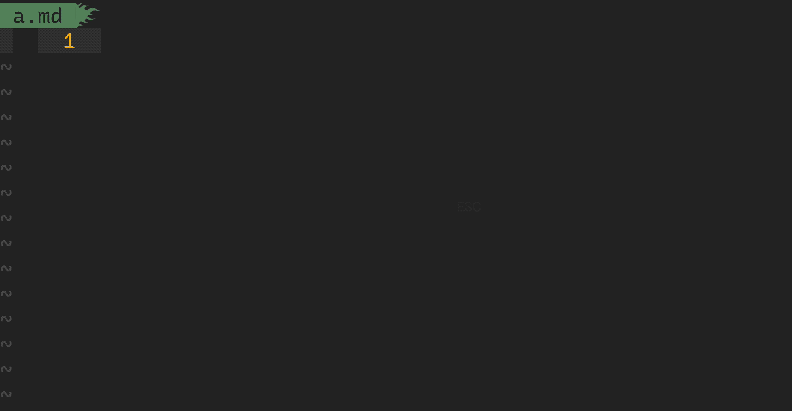<figcaption>1.3.4.1 -- vim auto-pairs</figcaption></figure></a>
<h2 id="junegunnfzfvim"><a name="junegunnfzfvim" class="anchor-navigation-ex-anchor" href="#junegunnfzfvim"><i class="fa fa-link" aria-hidden="true"></i></a><a name="junegunnfzfvim" class="plugin-anchor" href="#junegunnfzfvim"><i class="fa fa-link" aria-hidden="true"></i></a><a href="https://github.com/junegunn/fzf.vim" target="_blank">junegunn/fzf.vim</a></h2>
<pre class="language-"><code class="lang-vim"><span class="token keyword">set</span> <span class="token builtin">runtimepath</span><span class="token operator">+=</span><span class="token operator">/</span>usr<span class="token operator">/</span>local<span class="token operator">/</span><span class="token keyword">opt</span><span class="token operator">/</span>fzf                                         <span class="token comment">&quot; $ brew install fzf</span>
Plug <span class="token string">&apos;/usr/local/opt/fzf&apos;</span>
Plug <span class="token string">&apos;junegunn/fzf.vim&apos;</span>

<span class="token comment">&quot; junegunn/fzf.vim</span>
nnoremap <span class="token operator">&lt;</span><span class="token keyword">silent</span><span class="token operator">&gt;</span> <span class="token operator">&lt;</span>leader<span class="token operator">&gt;</span><span class="token builtin">ff</span> <span class="token punctuation">:</span>Files<span class="token operator">&lt;</span>CR<span class="token operator">&gt;</span>
nnoremap <span class="token operator">&lt;</span><span class="token keyword">silent</span><span class="token operator">&gt;</span> <span class="token operator">&lt;</span>leader<span class="token operator">&gt;</span>gf <span class="token punctuation">:</span>GFiles<span class="token operator">&lt;</span>CR<span class="token operator">&gt;</span>
nnoremap <span class="token operator">&lt;</span><span class="token keyword">silent</span><span class="token operator">&gt;</span> <span class="token operator">&lt;</span>leader<span class="token operator">&gt;</span>ag <span class="token punctuation">:</span>Ag<span class="token operator">&lt;</span>CR<span class="token operator">&gt;</span>
nnoremap <span class="token operator">&lt;</span><span class="token keyword">silent</span><span class="token operator">&gt;</span> <span class="token operator">&lt;</span>leader<span class="token operator">&gt;</span><span class="token keyword">l</span>  <span class="token punctuation">:</span>Buffers<span class="token operator">&lt;</span>CR<span class="token operator">&gt;</span>
nnoremap <span class="token operator">&lt;</span><span class="token keyword">silent</span><span class="token operator">&gt;</span> <span class="token operator">&lt;</span>Leader<span class="token operator">&gt;</span>H  <span class="token punctuation">:</span>Helptags<span class="token operator">&lt;</span>CR<span class="token operator">&gt;</span>
nnoremap <span class="token operator">&lt;</span><span class="token keyword">silent</span><span class="token operator">&gt;</span> <span class="token operator">&lt;</span>Leader<span class="token operator">&gt;</span>g  <span class="token punctuation">:</span>Commits<span class="token operator">&lt;</span>CR<span class="token operator">&gt;</span>
nnoremap <span class="token operator">&lt;</span><span class="token keyword">silent</span><span class="token operator">&gt;</span> <span class="token operator">&lt;</span>Leader<span class="token operator">&gt;</span><span class="token builtin">hh</span> <span class="token punctuation">:</span>History<span class="token punctuation">:</span><span class="token operator">&lt;</span>CR<span class="token operator">&gt;</span>
inoremap <span class="token operator">&lt;</span>expr<span class="token operator">&gt;</span> <span class="token operator">&lt;</span><span class="token keyword">c</span><span class="token operator">-</span><span class="token keyword">x</span><span class="token operator">&gt;</span><span class="token operator">&lt;</span><span class="token keyword">c</span><span class="token operator">-</span><span class="token keyword">k</span><span class="token operator">&gt;</span> fzf#<span class="token keyword">vim</span>#<span class="token function">complete</span><span class="token punctuation">(</span><span class="token string">&apos;cat /usr/share/dict/words&apos;</span><span class="token punctuation">)</span>
inoremap <span class="token operator">&lt;</span>expr<span class="token operator">&gt;</span> <span class="token operator">&lt;</span><span class="token keyword">c</span><span class="token operator">-</span><span class="token keyword">x</span><span class="token operator">&gt;</span><span class="token operator">&lt;</span><span class="token keyword">c</span><span class="token operator">-</span><span class="token keyword">l</span><span class="token operator">&gt;</span> fzf#<span class="token keyword">vim</span>#<span class="token function">complete</span><span class="token punctuation">(</span>fzf#<span class="token function">wrap</span><span class="token punctuation">(</span><span class="token punctuation">{</span>
  \ <span class="token string">&apos;prefix&apos;</span><span class="token punctuation">:</span> <span class="token string">&apos;^.*$&apos;</span><span class="token punctuation">,</span>
  \ <span class="token string">&apos;source&apos;</span><span class="token punctuation">:</span> <span class="token string">&apos;rg -n ^ --color always&apos;</span><span class="token punctuation">,</span>
  \ <span class="token string">&apos;options&apos;</span><span class="token punctuation">:</span> <span class="token string">&apos;--ansi --delimiter : --nth 3..&apos;</span><span class="token punctuation">,</span>
  \ <span class="token string">&apos;reducer&apos;</span><span class="token punctuation">:</span> <span class="token punctuation">{</span> <span class="token builtin">lines</span> <span class="token operator">-</span><span class="token operator">&gt;</span> <span class="token function">join</span><span class="token punctuation">(</span><span class="token function">split</span><span class="token punctuation">(</span><span class="token builtin">lines</span><span class="token punctuation">[</span><span class="token number">0</span><span class="token punctuation">]</span><span class="token punctuation">,</span> <span class="token string">&apos;:\zs&apos;</span><span class="token punctuation">)</span><span class="token punctuation">[</span><span class="token number">2</span><span class="token punctuation">:</span><span class="token punctuation">]</span><span class="token punctuation">,</span> <span class="token string">&apos;&apos;</span><span class="token punctuation">)</span> <span class="token punctuation">}</span>
\ <span class="token punctuation">}</span><span class="token punctuation">)</span><span class="token punctuation">)</span>
<span class="token keyword">let</span> g<span class="token punctuation">:</span>fzf_vim                     <span class="token operator">=</span> <span class="token punctuation">{</span><span class="token punctuation">}</span>
<span class="token keyword">let</span> g<span class="token punctuation">:</span>fzf_vim<span class="token operator">.</span>preview_window      <span class="token operator">=</span> <span class="token punctuation">[</span> <span class="token string">&apos;right,50%&apos;</span><span class="token punctuation">,</span> <span class="token string">&apos;ctrl-\&apos;</span> <span class="token punctuation">]</span>
<span class="token keyword">let</span> g<span class="token punctuation">:</span>fzf_vim<span class="token operator">.</span>tags_command        <span class="token operator">=</span> <span class="token string">&apos;ctags -R&apos;</span>
<span class="token keyword">let</span> g<span class="token punctuation">:</span>fzf_vim<span class="token operator">.</span>commits_log_options <span class="token operator">=</span> <span class="token string">&apos;--graph --color=always --format=&quot;%C(auto)%h%d %s %C(black)%C(bold)%cr&quot;&apos;</span>
<span class="token keyword">let</span> $FZF_DEFAULT_COMMAND          <span class="token operator">=</span> <span class="token string">&apos;ag --hidden --ignore .git -l -g &quot;&quot;&apos;</span>
command<span class="token operator">!</span> <span class="token operator">-</span>bang <span class="token operator">-</span>nargs<span class="token operator">=</span><span class="token operator">?</span> <span class="token operator">-</span><span class="token builtin">complete</span><span class="token operator">=</span><span class="token builtin">dir</span> Files
    \ <span class="token keyword">call</span> fzf#<span class="token keyword">vim</span>#<span class="token function">files</span><span class="token punctuation">(</span><span class="token operator">&lt;</span><span class="token keyword">q</span><span class="token operator">-</span><span class="token keyword">args</span><span class="token operator">&gt;</span><span class="token punctuation">,</span> <span class="token punctuation">{</span><span class="token string">&apos;options&apos;</span><span class="token punctuation">:</span> <span class="token punctuation">[</span><span class="token string">&apos;--layout=reverse&apos;</span><span class="token punctuation">,</span> <span class="token string">&apos;--info=inline&apos;</span><span class="token punctuation">,</span> <span class="token string">&apos;--preview&apos;</span><span class="token punctuation">,</span> <span class="token string">&apos;bat --color=always {}&apos;</span><span class="token punctuation">]</span><span class="token punctuation">}</span><span class="token punctuation">,</span> <span class="token operator">&lt;</span>bang<span class="token operator">&gt;</span><span class="token number">0</span><span class="token punctuation">)</span>
command<span class="token operator">!</span> <span class="token operator">-</span>bang <span class="token operator">-</span><span class="token builtin">complete</span><span class="token operator">=</span><span class="token builtin">dir</span> <span class="token operator">-</span>nargs<span class="token operator">=</span><span class="token operator">?</span> LS
    \ <span class="token keyword">call</span> fzf#<span class="token function">run</span><span class="token punctuation">(</span>fzf#<span class="token function">wrap</span><span class="token punctuation">(</span><span class="token string">&apos;ls&apos;</span><span class="token punctuation">,</span> <span class="token punctuation">{</span><span class="token string">&apos;source&apos;</span><span class="token punctuation">:</span> <span class="token string">&apos;ls&apos;</span><span class="token punctuation">,</span> <span class="token string">&apos;dir&apos;</span><span class="token punctuation">:</span> <span class="token operator">&lt;</span><span class="token keyword">q</span><span class="token operator">-</span><span class="token keyword">args</span><span class="token operator">&gt;</span><span class="token punctuation">}</span><span class="token punctuation">,</span> <span class="token operator">&lt;</span>bang<span class="token operator">&gt;</span><span class="token number">0</span><span class="token punctuation">)</span><span class="token punctuation">)</span>
<span class="token keyword">let</span> g<span class="token punctuation">:</span>fzf_layout                  <span class="token operator">=</span> <span class="token punctuation">{</span> <span class="token string">&apos;window&apos;</span><span class="token punctuation">:</span> <span class="token punctuation">{</span> <span class="token string">&apos;width&apos;</span><span class="token punctuation">:</span> <span class="token number">0.9</span><span class="token punctuation">,</span> <span class="token string">&apos;height&apos;</span><span class="token punctuation">:</span> <span class="token number">0.6</span><span class="token punctuation">,</span> <span class="token string">&apos;relative&apos;</span><span class="token punctuation">:</span> v<span class="token punctuation">:</span>true <span class="token punctuation">}</span> <span class="token punctuation">}</span>
<span class="token keyword">let</span> g<span class="token punctuation">:</span>fzf_history_dir             <span class="token operator">=</span> <span class="token string">&apos;~/.vim/cache/fzf-history&apos;</span>
<span class="token keyword">let</span> g<span class="token punctuation">:</span>fzf_action                  <span class="token operator">=</span> <span class="token punctuation">{</span>
  \ <span class="token string">&apos;ctrl-t&apos;</span><span class="token punctuation">:</span> <span class="token string">&apos;tab split&apos;</span><span class="token punctuation">,</span>
  \ <span class="token string">&apos;ctrl-x&apos;</span><span class="token punctuation">:</span> <span class="token string">&apos;split&apos;</span><span class="token punctuation">,</span>
  \ <span class="token string">&apos;ctrl-v&apos;</span><span class="token punctuation">:</span> <span class="token string">&apos;vsplit&apos;</span>
\ <span class="token punctuation">}</span>
<span class="token keyword">let</span> g<span class="token punctuation">:</span>fzf_colors                  <span class="token operator">=</span> <span class="token punctuation">{</span>
  \ <span class="token string">&apos;fg&apos;</span><span class="token punctuation">:</span>         <span class="token punctuation">[</span><span class="token string">&apos;fg&apos;</span><span class="token punctuation">,</span> <span class="token string">&apos;Normal&apos;</span>                               <span class="token punctuation">]</span> <span class="token punctuation">,</span>
  \ <span class="token string">&apos;bg&apos;</span><span class="token punctuation">:</span>         <span class="token punctuation">[</span><span class="token string">&apos;bg&apos;</span><span class="token punctuation">,</span> <span class="token string">&apos;Normal&apos;</span>                               <span class="token punctuation">]</span> <span class="token punctuation">,</span>
  \ <span class="token string">&apos;preview-bg&apos;</span><span class="token punctuation">:</span> <span class="token punctuation">[</span><span class="token string">&apos;bg&apos;</span><span class="token punctuation">,</span> <span class="token string">&apos;NormalFloat&apos;</span>                          <span class="token punctuation">]</span> <span class="token punctuation">,</span>
  \ <span class="token string">&apos;hl&apos;</span><span class="token punctuation">:</span>         <span class="token punctuation">[</span><span class="token string">&apos;fg&apos;</span><span class="token punctuation">,</span> <span class="token string">&apos;Comment&apos;</span>                              <span class="token punctuation">]</span> <span class="token punctuation">,</span>
  \ <span class="token string">&apos;fg+&apos;</span><span class="token punctuation">:</span>        <span class="token punctuation">[</span><span class="token string">&apos;fg&apos;</span><span class="token punctuation">,</span> <span class="token string">&apos;CursorLine&apos;</span><span class="token punctuation">,</span> <span class="token string">&apos;CursorColumn&apos;</span><span class="token punctuation">,</span> <span class="token string">&apos;Normal&apos;</span> <span class="token punctuation">]</span> <span class="token punctuation">,</span>
  \ <span class="token string">&apos;bg+&apos;</span><span class="token punctuation">:</span>        <span class="token punctuation">[</span><span class="token string">&apos;bg&apos;</span><span class="token punctuation">,</span> <span class="token string">&apos;CursorLine&apos;</span><span class="token punctuation">,</span> <span class="token string">&apos;CursorColumn&apos;</span>           <span class="token punctuation">]</span> <span class="token punctuation">,</span>
  \ <span class="token string">&apos;hl+&apos;</span><span class="token punctuation">:</span>        <span class="token punctuation">[</span><span class="token string">&apos;fg&apos;</span><span class="token punctuation">,</span> <span class="token string">&apos;Statement&apos;</span>                            <span class="token punctuation">]</span> <span class="token punctuation">,</span>
  \ <span class="token string">&apos;info&apos;</span><span class="token punctuation">:</span>       <span class="token punctuation">[</span><span class="token string">&apos;fg&apos;</span><span class="token punctuation">,</span> <span class="token string">&apos;PreProc&apos;</span>                              <span class="token punctuation">]</span> <span class="token punctuation">,</span>
  \ <span class="token string">&apos;border&apos;</span><span class="token punctuation">:</span>     <span class="token punctuation">[</span><span class="token string">&apos;fg&apos;</span><span class="token punctuation">,</span> <span class="token string">&apos;Ignore&apos;</span>                               <span class="token punctuation">]</span> <span class="token punctuation">,</span>
  \ <span class="token string">&apos;prompt&apos;</span><span class="token punctuation">:</span>     <span class="token punctuation">[</span><span class="token string">&apos;fg&apos;</span><span class="token punctuation">,</span> <span class="token string">&apos;Conditional&apos;</span>                          <span class="token punctuation">]</span> <span class="token punctuation">,</span>
  \ <span class="token string">&apos;pointer&apos;</span><span class="token punctuation">:</span>    <span class="token punctuation">[</span><span class="token string">&apos;fg&apos;</span><span class="token punctuation">,</span> <span class="token string">&apos;Exception&apos;</span>                            <span class="token punctuation">]</span> <span class="token punctuation">,</span>
  \ <span class="token string">&apos;marker&apos;</span><span class="token punctuation">:</span>     <span class="token punctuation">[</span><span class="token string">&apos;fg&apos;</span><span class="token punctuation">,</span> <span class="token string">&apos;Keyword&apos;</span>                              <span class="token punctuation">]</span> <span class="token punctuation">,</span>
  \ <span class="token string">&apos;spinner&apos;</span><span class="token punctuation">:</span>    <span class="token punctuation">[</span><span class="token string">&apos;fg&apos;</span><span class="token punctuation">,</span> <span class="token string">&apos;Label&apos;</span>                                <span class="token punctuation">]</span> <span class="token punctuation">,</span>
  \ <span class="token string">&apos;header&apos;</span><span class="token punctuation">:</span>     <span class="token punctuation">[</span><span class="token string">&apos;fg&apos;</span><span class="token punctuation">,</span> <span class="token string">&apos;Comment&apos;</span>                              <span class="token punctuation">]</span>
\ <span class="token punctuation">}</span>
</code></pre>
<h2 id="luochen1990rainbow"><a name="luochen1990rainbow" class="anchor-navigation-ex-anchor" href="#luochen1990rainbow"><i class="fa fa-link" aria-hidden="true"></i></a><a name="luochen1990rainbow" class="plugin-anchor" href="#luochen1990rainbow"><i class="fa fa-link" aria-hidden="true"></i></a><a href="https://github.com/luochen1990/rainbow" target="_blank">luochen1990/rainbow</a></h2>
<pre class="language-"><code class="lang-vim">Plug <span class="token string">&apos;luochen1990/rainbow&apos;</span>

<span class="token comment">&quot; luochen1990/rainbow</span>
<span class="token string">&quot; for i in &apos;75&apos; &apos;147&apos; &apos;108&apos; &apos;196&apos; &apos;208&apos; &apos;66&apos; &apos;106&apos; &apos;172&apos; &apos;115&apos; &apos;129&apos;; do echo -e &quot;</span>\<span class="token keyword">e</span><span class="token punctuation">[</span><span class="token number">38</span><span class="token punctuation">;</span><span class="token number">05</span><span class="token punctuation">;</span>$<span class="token punctuation">{</span>i<span class="token punctuation">}</span><span class="token keyword">m</span>$<span class="token punctuation">{</span>i<span class="token punctuation">}</span><span class="token string">&quot;; done | column -c 250 -s &apos; &apos;; echo -e &quot;</span>\<span class="token keyword">e</span><span class="token punctuation">[</span><span class="token keyword">m</span><span class="token comment">&quot;</span>
<span class="token keyword">let</span> g<span class="token punctuation">:</span>rainbow_active    <span class="token operator">=</span> <span class="token number">1</span>
<span class="token keyword">let</span> g<span class="token punctuation">:</span>rainbow_operators <span class="token operator">=</span> <span class="token number">1</span>
<span class="token keyword">let</span> g<span class="token punctuation">:</span>rainbow_conf      <span class="token operator">=</span> <span class="token punctuation">{</span>
  \ <span class="token string">&apos;guifgs&apos;</span> <span class="token punctuation">:</span> <span class="token punctuation">[</span> <span class="token string">&apos;#6A5ACD&apos;</span><span class="token punctuation">,</span> <span class="token string">&apos;#ff6347&apos;</span><span class="token punctuation">,</span> <span class="token string">&apos;#b58900&apos;</span><span class="token punctuation">,</span> <span class="token string">&apos;#9acd32&apos;</span><span class="token punctuation">,</span> <span class="token string">&apos;#EEC900&apos;</span><span class="token punctuation">,</span> <span class="token string">&apos;#9A32CD&apos;</span><span class="token punctuation">,</span> <span class="token string">&apos;#EE7600&apos;</span><span class="token punctuation">,</span> <span class="token string">&apos;#268bd2&apos;</span><span class="token punctuation">,</span> <span class="token string">&apos;#183172&apos;</span> <span class="token punctuation">]</span><span class="token punctuation">,</span>
  \ <span class="token string">&apos;ctermfgs&apos;</span> <span class="token punctuation">:</span> <span class="token string">&apos;xterm-256color&apos;</span> <span class="token operator">==</span> $TERM <span class="token operator">?</span> <span class="token punctuation">[</span> <span class="token string">&apos;75&apos;</span><span class="token punctuation">,</span> <span class="token string">&apos;147&apos;</span><span class="token punctuation">,</span> <span class="token string">&apos;108&apos;</span><span class="token punctuation">,</span> <span class="token string">&apos;196&apos;</span><span class="token punctuation">,</span> <span class="token string">&apos;208&apos;</span><span class="token punctuation">,</span> <span class="token string">&apos;66&apos;</span><span class="token punctuation">,</span> <span class="token string">&apos;106&apos;</span><span class="token punctuation">,</span> <span class="token string">&apos;172&apos;</span><span class="token punctuation">,</span> <span class="token string">&apos;115&apos;</span><span class="token punctuation">,</span> <span class="token string">&apos;129&apos;</span> <span class="token punctuation">]</span> <span class="token punctuation">:</span> <span class="token punctuation">[</span> <span class="token string">&apos;lightblue&apos;</span><span class="token punctuation">,</span> <span class="token string">&apos;lightgreen&apos;</span><span class="token punctuation">,</span> <span class="token string">&apos;yellow&apos;</span><span class="token punctuation">,</span> <span class="token string">&apos;red&apos;</span><span class="token punctuation">,</span> <span class="token string">&apos;magenta&apos;</span> <span class="token punctuation">]</span><span class="token punctuation">,</span>
  \ <span class="token string">&apos;parentheses&apos;</span><span class="token punctuation">:</span> <span class="token punctuation">[</span><span class="token string">&apos;start=/(/ end=/)/ fold&apos;</span><span class="token punctuation">,</span> <span class="token string">&apos;start=/\[/ end=/\]/ fold&apos;</span><span class="token punctuation">,</span> <span class="token string">&apos;start=/{/ end=/}/ fold&apos;</span><span class="token punctuation">]</span><span class="token punctuation">,</span>
  \ <span class="token string">&apos;operators&apos;</span><span class="token punctuation">:</span> <span class="token string">&apos;_,_&apos;</span><span class="token punctuation">,</span>
  \ <span class="token string">&apos;separately&apos;</span><span class="token punctuation">:</span> <span class="token punctuation">{</span>
  \   <span class="token string">&apos;*&apos;</span><span class="token punctuation">:</span> <span class="token punctuation">{</span><span class="token punctuation">}</span><span class="token punctuation">,</span>
  \   <span class="token string">&apos;markdown&apos;</span><span class="token punctuation">:</span> <span class="token punctuation">{</span>
  \     <span class="token string">&apos;parentheses_options&apos;</span><span class="token punctuation">:</span> <span class="token string">&apos;containedin=markdownCode contained&apos;</span><span class="token punctuation">,</span>
  \   <span class="token punctuation">}</span><span class="token punctuation">,</span>
  \   <span class="token string">&apos;css&apos;</span><span class="token punctuation">:</span> <span class="token punctuation">{</span>
  \     <span class="token string">&apos;parentheses&apos;</span><span class="token punctuation">:</span> <span class="token punctuation">[</span> <span class="token punctuation">[</span><span class="token string">&apos;(&apos;</span><span class="token punctuation">,</span><span class="token string">&apos;)&apos;</span><span class="token punctuation">]</span><span class="token punctuation">,</span> <span class="token punctuation">[</span><span class="token string">&apos;\[&apos;</span><span class="token punctuation">,</span><span class="token string">&apos;\]&apos;</span><span class="token punctuation">]</span> <span class="token punctuation">]</span><span class="token punctuation">,</span>
  \   <span class="token punctuation">}</span><span class="token punctuation">,</span>
  \   <span class="token string">&apos;scss&apos;</span><span class="token punctuation">:</span> <span class="token punctuation">{</span>
  \     <span class="token string">&apos;parentheses&apos;</span><span class="token punctuation">:</span> <span class="token punctuation">[</span> <span class="token punctuation">[</span><span class="token string">&apos;(&apos;</span><span class="token punctuation">,</span><span class="token string">&apos;)&apos;</span><span class="token punctuation">]</span><span class="token punctuation">,</span> <span class="token punctuation">[</span><span class="token string">&apos;\[&apos;</span><span class="token punctuation">,</span><span class="token string">&apos;\]&apos;</span><span class="token punctuation">]</span> <span class="token punctuation">]</span><span class="token punctuation">,</span>
  \   <span class="token punctuation">}</span><span class="token punctuation">,</span>
  \   <span class="token string">&apos;stylus&apos;</span><span class="token punctuation">:</span> <span class="token punctuation">{</span>
  \     <span class="token string">&apos;parentheses&apos;</span><span class="token punctuation">:</span> <span class="token punctuation">[</span> <span class="token string">&apos;start=/{/ end=/}/ fold contains=@colorableGroup&apos;</span> <span class="token punctuation">]</span><span class="token punctuation">,</span>
  \   <span class="token punctuation">}</span><span class="token punctuation">,</span>
  \   <span class="token string">&apos;vim&apos;</span><span class="token punctuation">:</span> <span class="token punctuation">{</span>
  \     <span class="token string">&apos;parentheses&apos;</span><span class="token punctuation">:</span> <span class="token punctuation">[</span><span class="token string">&apos;start=/(/ end=/)/&apos;</span><span class="token punctuation">,</span> <span class="token string">&apos;start=/\[/ end=/\]/&apos;</span><span class="token punctuation">,</span> <span class="token string">&apos;start=/{/ end=/}/ fold&apos;</span><span class="token punctuation">,</span> <span class="token string">&apos;start=/(/ end=/)/ containedin=vimFuncBody&apos;</span><span class="token punctuation">,</span> <span class="token string">&apos;start=/\[/ end=/\]/ containedin=vimFuncBody&apos;</span><span class="token punctuation">,</span> <span class="token string">&apos;start=/{/ end=/}/ fold containedin=vimFuncBody&apos;</span><span class="token punctuation">]</span><span class="token punctuation">,</span>
  \   <span class="token punctuation">}</span><span class="token punctuation">,</span>
  \   <span class="token string">&apos;html&apos;</span><span class="token punctuation">:</span> <span class="token punctuation">{</span>
  \     <span class="token string">&apos;parentheses&apos;</span><span class="token punctuation">:</span> <span class="token punctuation">[</span><span class="token string">&apos;start=/\v\&lt;((area|base|br|col|embed|hr|img|input|keygen|link|menuitem|meta|param|source|track|wbr)[ &gt;])@!\z([-_:a-zA-Z0-9]+)(\s+[-_:a-zA-Z0-9]+(\=(&quot;[^&quot;]*&quot;|&apos;</span><span class="token operator">.</span><span class="token string">&quot;&apos;&quot;</span><span class="token operator">.</span><span class="token string">&apos;[^&apos;</span><span class="token operator">.</span><span class="token string">&quot;&apos;&quot;</span><span class="token operator">.</span><span class="token string">&apos;]*&apos;</span><span class="token operator">.</span><span class="token string">&quot;&apos;&quot;</span><span class="token operator">.</span><span class="token string">&apos;|[^ &apos;</span><span class="token operator">.</span><span class="token string">&quot;&apos;&quot;</span><span class="token operator">.</span><span class="token string">&apos;&quot;&gt;&lt;=`]*))?)*\&gt;/ end=#&lt;/\z1&gt;# fold&apos;</span><span class="token punctuation">]</span><span class="token punctuation">,</span>
  \   <span class="token punctuation">}</span><span class="token punctuation">,</span>
  \   <span class="token string">&apos;nerdtree&apos;</span><span class="token punctuation">:</span> <span class="token number">0</span>
  \ <span class="token punctuation">}</span><span class="token punctuation">}</span>
</code></pre>
<h2 id="yggdrootindentline"><a name="yggdrootindentline" class="anchor-navigation-ex-anchor" href="#yggdrootindentline"><i class="fa fa-link" aria-hidden="true"></i></a><a name="yggdrootindentline" class="plugin-anchor" href="#yggdrootindentline"><i class="fa fa-link" aria-hidden="true"></i></a><a href="https://github.com/Yggdroot/indentLine" target="_blank">Yggdroot/indentLine</a></h2>
<pre class="language-"><code class="lang-vim">Plug <span class="token string">&apos;Yggdroot/indentLine&apos;</span>

<span class="token comment">&quot; settings</span>
nnoremap <span class="token operator">&lt;</span>leader<span class="token operator">&gt;</span>idl <span class="token punctuation">:</span>IndentLineEnable<span class="token operator">&lt;</span>CR<span class="token operator">&gt;</span>

<span class="token keyword">let</span> g<span class="token punctuation">:</span>indentLine_enabled              <span class="token operator">=</span> <span class="token number">1</span>
<span class="token keyword">let</span> g<span class="token punctuation">:</span>indentLine_color_gui            <span class="token operator">=</span> <span class="token string">&quot;#282828&quot;</span>
<span class="token keyword">let</span> g<span class="token punctuation">:</span>indentLine_color_term           <span class="token operator">=</span> <span class="token number">239</span>
<span class="token keyword">let</span> g<span class="token punctuation">:</span>indentLine_indentLevel          <span class="token operator">=</span> <span class="token number">20</span>
<span class="token keyword">let</span> g<span class="token punctuation">:</span>indentLine_showFirstIndentLevel <span class="token operator">=</span> <span class="token number">1</span>
<span class="token keyword">let</span> g<span class="token punctuation">:</span>indentLine_color_tty            <span class="token operator">=</span> <span class="token number">0</span>
<span class="token keyword">let</span> g<span class="token punctuation">:</span>indentLine_faster               <span class="token operator">=</span> <span class="token number">1</span>
<span class="token keyword">let</span> g<span class="token punctuation">:</span>indentLine_concealcursor        <span class="token operator">=</span> <span class="token string">&apos;inc&apos;</span>
<span class="token keyword">let</span> g<span class="token punctuation">:</span>indentLine_conceallevel         <span class="token operator">=</span> <span class="token number">2</span>
<span class="token keyword">if</span> <span class="token function">has</span><span class="token punctuation">(</span> <span class="token string">&apos;gui_running&apos;</span> <span class="token punctuation">)</span> <span class="token operator">||</span> <span class="token string">&apos;xterm-256color&apos;</span> <span class="token operator">==</span> $TERM
  <span class="token keyword">let</span> g<span class="token punctuation">:</span>indentLine_char               <span class="token operator">=</span> <span class="token string">&apos;&#xA6;&apos;</span>
<span class="token keyword">elseif</span> <span class="token function">has</span><span class="token punctuation">(</span> <span class="token string">&apos;win32&apos;</span> <span class="token punctuation">)</span>
  <span class="token keyword">let</span> g<span class="token punctuation">:</span>indentLine_color_term         <span class="token operator">=</span> <span class="token number">8</span>
  <span class="token keyword">let</span> g<span class="token punctuation">:</span>indentLine_char               <span class="token operator">=</span> <span class="token string">&apos;|&apos;</span>
<span class="token keyword">else</span>
  <span class="token keyword">let</span> g<span class="token punctuation">:</span>indentLine_color_tty_dark     <span class="token operator">=</span> <span class="token number">0</span>
  <span class="token keyword">let</span> g<span class="token punctuation">:</span>indentLine_char               <span class="token operator">=</span> <span class="token string">&apos;&#xA6;&apos;</span>
<span class="token keyword">endif</span>
</code></pre>
<h2 id="vim-airlinevim-airline"><a name="vim-airlinevim-airline" class="anchor-navigation-ex-anchor" href="#vim-airlinevim-airline"><i class="fa fa-link" aria-hidden="true"></i></a><a name="vim-airlinevim-airline" class="plugin-anchor" href="#vim-airlinevim-airline"><i class="fa fa-link" aria-hidden="true"></i></a><a href="https://github.com/vim-airline/vim-airline" target="_blank">vim-airline/vim-airline</a></h2>
<blockquote>
<p>[!NOTE|label:references:]</p>
<ul>
<li><a href="../osx/apps.html#powerline">* iMarso : osx/apps/powerline</a></li>
<li><a href="https://tuckerchapman.com/2020/09/15/getting-started-vim-airline/" target="_blank">* Getting started with vim-airline</a></li>
<li><a href="https://vi.stackexchange.com/a/16512/7389" target="_blank">How do I fix the status bar symbols in the Airline plugin?</a></li>
<li><a href="https://www.reddit.com/r/vim/comments/q3ufc0/airline_status_line_and_tab_line_text_changes/" target="_blank">Airline status line and tab line text changes colour when the vimrc is sourced.</a></li>
<li><a href="https://jnduli.co.ke/vim-airline-setup.html" target="_blank">Vim Airline Setup</a></li>
<li><a href="https://github.com/vim-airline/vim-airline/blob/master/autoload/airline/init.vim" target="_blank">autoload/airline/init.vim</a></li>
<li><a href="https://tuckerchapman.com/posts/getting-started-vim-airline/" target="_blank">Getting started with vim-airline</a></li>
<li>section:<ul>
<li><a href="https://github.com/vim-airline/vim-airline/issues/787#issue-84289641" target="_blank">#787: How to modify contents of section Y?</a></li>
<li><a href="https://github.com/vim-airline/vim-airline/issues/1087" target="_blank">#1087: How to replace section_y with contents of section_x?</a></li>
<li><a href="https://github.com/vim-airline/vim-airline/issues/1845#issuecomment-449700299" target="_blank">#1845: how to disable additional section totally.</a></li>
</ul>
</li>
<li>tips:<ul>
<li>check loaded extensions : <code>:AirlineExtension</code></li>
<li><a href="https://github.com/vim-airline/vim-airline/issues/1373#issuecomment-273040424" target="_blank">#1373 How can I show system time in airline?</a></li>
<li><a href="https://github.com/vim-airline/vim-airline/wiki/FAQ" target="_blank">* FAQ</a></li>
</ul>
</li>
</ul>
</blockquote>
<pre class="language-"><code class="lang-vim">Plug <span class="token string">&apos;tpope/vim-fugitive&apos;</span>
Plug <span class="token string">&apos;vim-airline/vim-airline&apos;</span>
Plug <span class="token string">&apos;vim-airline/vim-airline-themes&apos;</span>

<span class="token comment">&quot; vim-airline/vim-airline</span>
<span class="token keyword">let</span> g<span class="token punctuation">:</span>airline_powerline_fonts                      <span class="token operator">=</span> <span class="token number">1</span>
<span class="token keyword">let</span> g<span class="token punctuation">:</span>airline_highlighting_cache                   <span class="token operator">=</span> <span class="token number">1</span>
<span class="token keyword">let</span> g<span class="token punctuation">:</span>airline_detect_spelllang                     <span class="token operator">=</span> <span class="token number">0</span>              <span class="token comment">&quot; disable spelling language</span>
<span class="token keyword">let</span> g<span class="token punctuation">:</span>airline_exclude_preview                      <span class="token operator">=</span> <span class="token number">0</span>              <span class="token comment">&quot; disable in preview window</span>
<span class="token keyword">let</span> g<span class="token punctuation">:</span>airline_theme                                <span class="token operator">=</span> <span class="token string">&apos;base16_embers&apos;</span><span class="token comment">&quot; </span><span class="token string">&apos;apprentice&apos;</span><span class="token punctuation">,</span> <span class="token string">&apos;base16&apos;</span><span class="token punctuation">,</span> <span class="token string">&apos;gruvbox&apos;</span><span class="token punctuation">,</span> <span class="token string">&apos;zenburn&apos;</span><span class="token punctuation">,</span> <span class="token string">&apos;base16_atelierheath&apos;</span>
<span class="token keyword">let</span> g<span class="token punctuation">:</span>Powerline_symbols                            <span class="token operator">=</span> <span class="token string">&apos;fancy&apos;</span>
<span class="token keyword">let</span> g<span class="token punctuation">:</span>airline_section_y                            <span class="token operator">=</span> <span class="token string">&apos;&apos;</span>             <span class="token comment">&quot; fileencoding</span>
<span class="token keyword">let</span> g<span class="token punctuation">:</span>airline_section_x                            <span class="token operator">=</span> <span class="token string">&apos;&apos;</span>
<span class="token keyword">let</span> g<span class="token punctuation">:</span>airline_section_z                            <span class="token operator">=</span> <span class="token string">&quot;%3p%% %l/%L:%c [%B]&quot;</span>
<span class="token keyword">let</span> g<span class="token punctuation">:</span>airline_skip_empty_sections                  <span class="token operator">=</span> <span class="token number">1</span>
<span class="token keyword">let</span> g<span class="token punctuation">:</span>airline_detect_modified                      <span class="token operator">=</span> <span class="token number">1</span>
<span class="token keyword">let</span> g<span class="token punctuation">:</span>airline_detect_paste                         <span class="token operator">=</span> <span class="token number">1</span>
<span class="token keyword">let</span> g<span class="token punctuation">:</span>airline#extensions#wordcount#enabled         <span class="token operator">=</span> <span class="token number">1</span>
<span class="token keyword">let</span> g<span class="token punctuation">:</span>airline#extensions#wordcount#filetypes       <span class="token operator">=</span> <span class="token string">&apos;\vtext|nroff|plaintex&apos;</span>
<span class="token keyword">let</span> g<span class="token punctuation">:</span>airline#extensions#quickfix#enabled          <span class="token operator">=</span> <span class="token number">0</span>
<span class="token keyword">let</span> g<span class="token punctuation">:</span>airline#extensions#quickfix#quickfix_text    <span class="token operator">=</span> <span class="token string">&apos;Quickfix&apos;</span>
<span class="token keyword">let</span> g<span class="token punctuation">:</span>airline_stl_path_style                       <span class="token operator">=</span> <span class="token string">&apos;short&apos;</span>
<span class="token keyword">let</span> g<span class="token punctuation">:</span>airline#extensions#<span class="token builtin">tabline</span>#enabled           <span class="token operator">=</span> <span class="token number">1</span>              <span class="token comment">&quot; &#x256E; enable airline tabline</span>
<span class="token keyword">let</span> g<span class="token punctuation">:</span>airline#extensions#<span class="token builtin">tabline</span>#fnamemod          <span class="token operator">=</span> <span class="token string">&apos;:t&apos;</span>           <span class="token comment">&quot; &#x2502;</span>
<span class="token keyword">let</span> g<span class="token punctuation">:</span>airline#extensions#<span class="token builtin">tabline</span>#show_close_button <span class="token operator">=</span> <span class="token number">0</span>              <span class="token comment">&quot; &#x2502; remove </span><span class="token string">&apos;X&apos;</span> at the end of the <span class="token builtin">tabline</span>
<span class="token keyword">let</span> g<span class="token punctuation">:</span>airline#extensions#<span class="token builtin">tabline</span>#show_buffers      <span class="token operator">=</span> <span class="token number">1</span>              <span class="token comment">&quot; &#x2502;</span>
<span class="token keyword">let</span> g<span class="token punctuation">:</span>airline#extensions#<span class="token builtin">tabline</span>#show_splits       <span class="token operator">=</span> <span class="token number">0</span>              <span class="token comment">&quot; &#x2502; disables the buffer name that displays on the right of the tabline</span>
<span class="token keyword">let</span> g<span class="token punctuation">:</span>airline#extensions#<span class="token builtin">tabline</span>#tab_min_count     <span class="token operator">=</span> <span class="token number">2</span>              <span class="token comment">&quot; &#x2502; minimum of 2 tabs needed to display the tabline</span>
<span class="token keyword">let</span> g<span class="token punctuation">:</span>airline#extensions#<span class="token builtin">tabline</span>#show_tabs         <span class="token operator">=</span> <span class="token number">0</span>              <span class="token comment">&quot; &#x2502;</span>
<span class="token keyword">let</span> g<span class="token punctuation">:</span>airline#extensions#<span class="token builtin">tabline</span>#tab_nr_type       <span class="token operator">=</span> <span class="token number">1</span>              <span class="token comment">&quot; &#x256F; tab number</span>
<span class="token keyword">let</span> g<span class="token punctuation">:</span>airline#extensions#branch#format             <span class="token operator">=</span> <span class="token number">2</span>
<span class="token keyword">let</span> g<span class="token punctuation">:</span>airline#extensions#fzf#enabled               <span class="token operator">=</span> <span class="token number">1</span>
<span class="token keyword">let</span> g<span class="token punctuation">:</span>airline#extensions#nerdtree_statusline       <span class="token operator">=</span> <span class="token number">1</span>
<span class="token keyword">let</span> g<span class="token punctuation">:</span>airline#extensions#syntastic#enabled         <span class="token operator">=</span> <span class="token number">1</span>
<span class="token keyword">let</span> g<span class="token punctuation">:</span>airline#extensions#coc#enabled               <span class="token operator">=</span> <span class="token number">1</span>              <span class="token comment">&quot; &#x256E;</span>
<span class="token keyword">let</span> g<span class="token punctuation">:</span>airline#extensions#coc#show_coc_status       <span class="token operator">=</span> <span class="token number">0</span>              <span class="token comment">&quot; &#x2502;</span>
<span class="token keyword">let</span> g<span class="token punctuation">:</span>airline#extensions#coc#error_symbol          <span class="token operator">=</span> <span class="token string">&apos; &#x2717;:&apos;</span>          <span class="token comment">&quot; &#x251C; coc</span>
<span class="token keyword">let</span> g<span class="token punctuation">:</span>airline#extensions#coc#warning_symbol        <span class="token operator">=</span> <span class="token string">&apos; &#x2368;:&apos;</span>          <span class="token comment">&quot; &#x2502;</span>
<span class="token keyword">let</span> g<span class="token punctuation">:</span>airline#extensions#coc#stl_format_err        <span class="token operator">=</span> <span class="token string">&apos;%C(&#x240A;%L)&apos;</span>      <span class="token comment">&quot; &#x2502;</span>
<span class="token keyword">let</span> g<span class="token punctuation">:</span>airline#extensions#coc#stl_format_warn       <span class="token operator">=</span> <span class="token string">&apos;%C(&#x240A;%L)&apos;</span>      <span class="token comment">&quot; &#x256F;</span>
<span class="token keyword">let</span> g<span class="token punctuation">:</span>airline#extensions#ale#enabled               <span class="token operator">=</span> <span class="token number">0</span>              <span class="token comment">&quot; &#x256E;</span>
<span class="token keyword">let</span> g<span class="token punctuation">:</span>airline#extensions#ale#error_symbol          <span class="token operator">=</span> <span class="token string">&apos; &#x14C6; :&apos;</span>         <span class="token comment">&quot; &#x2502;</span>
<span class="token keyword">let</span> g<span class="token punctuation">:</span>airline#extensions#ale#warning_symbol        <span class="token operator">=</span> <span class="token string">&apos; &#x18CD; :&apos;</span>         <span class="token comment">&quot; &#x251C; ale</span>
<span class="token keyword">let</span> g<span class="token punctuation">:</span>airline#extensions#ale#show_line_numbers     <span class="token operator">=</span> <span class="token number">0</span>              <span class="token comment">&quot; &#x2502;</span>
<span class="token keyword">let</span> g<span class="token punctuation">:</span>airline#extensions#ale#open_lnum_symbol      <span class="token operator">=</span> <span class="token string">&apos;(&#x240A;:&apos;</span>          <span class="token comment">&quot; &#x2502;</span>
<span class="token keyword">let</span> g<span class="token punctuation">:</span>airline#extensions#ale#close_lnum_symbol     <span class="token operator">=</span> <span class="token string">&apos;)&apos;</span>            <span class="token comment">&quot; &#x256F;</span>
<span class="token comment">&quot; let g:airline_mode_map                           = { </span><span class="token string">&apos;__&apos;</span><span class="token punctuation">:</span> <span class="token string">&apos;-&apos;</span><span class="token punctuation">,</span> <span class="token string">&apos;n&apos;</span> <span class="token punctuation">:</span> <span class="token string">&apos;N&apos;</span><span class="token punctuation">,</span> <span class="token string">&apos;i&apos;</span> <span class="token punctuation">:</span> <span class="token string">&apos;I&apos;</span><span class="token punctuation">,</span> <span class="token string">&apos;R&apos;</span> <span class="token punctuation">:</span> <span class="token string">&apos;R&apos;</span><span class="token punctuation">,</span> <span class="token string">&apos;c&apos;</span> <span class="token punctuation">:</span> <span class="token string">&apos;C&apos;</span><span class="token punctuation">,</span> <span class="token string">&apos;v&apos;</span> <span class="token punctuation">:</span> <span class="token string">&apos;V&apos;</span><span class="token punctuation">,</span> <span class="token string">&apos;V&apos;</span> <span class="token punctuation">:</span> <span class="token string">&apos;V&apos;</span><span class="token punctuation">,</span> <span class="token string">&apos;&apos;</span><span class="token punctuation">:</span> <span class="token string">&apos;V&apos;</span><span class="token punctuation">,</span> <span class="token string">&apos;s&apos;</span> <span class="token punctuation">:</span> <span class="token string">&apos;S&apos;</span><span class="token punctuation">,</span> <span class="token string">&apos;S&apos;</span> <span class="token punctuation">:</span> <span class="token string">&apos;S&apos;</span><span class="token punctuation">,</span> <span class="token string">&apos;&apos;</span><span class="token punctuation">:</span> <span class="token string">&apos;S&apos;</span><span class="token punctuation">,</span> <span class="token punctuation">}</span>
<span class="token keyword">if</span> <span class="token operator">!</span><span class="token function">exists</span><span class="token punctuation">(</span><span class="token string">&apos;g:airline_symbols&apos;</span><span class="token punctuation">)</span> | <span class="token keyword">let</span> g<span class="token punctuation">:</span>airline_symbols <span class="token operator">=</span> <span class="token punctuation">{</span><span class="token punctuation">}</span> | <span class="token keyword">endif</span>
<span class="token keyword">let</span> g<span class="token punctuation">:</span>airline_symbols<span class="token operator">.</span>dirty                        <span class="token operator">=</span> <span class="token string">&apos; &#x266A;&apos;</span>
<span class="token keyword">let</span> g<span class="token punctuation">:</span>airline_left_sep                             <span class="token operator">=</span> <span class="token string">&apos;&#xE0C0;&apos;</span>
<span class="token keyword">let</span> g<span class="token punctuation">:</span>airline_right_sep                            <span class="token operator">=</span> <span class="token string">&apos;&#xE0C2;&apos;</span>
<span class="token keyword">function</span><span class="token operator">!</span> <span class="token function">AirlineInit</span><span class="token punctuation">(</span><span class="token punctuation">)</span>
  <span class="token keyword">let</span> g<span class="token punctuation">:</span>airline_section_a <span class="token operator">=</span> airline#section#<span class="token function">create</span><span class="token punctuation">(</span><span class="token punctuation">[</span> <span class="token string">&apos;[&apos;</span><span class="token punctuation">,</span> <span class="token string">&apos;mode&apos;</span><span class="token punctuation">,</span> <span class="token string">&apos;]&apos;</span> <span class="token punctuation">]</span><span class="token punctuation">)</span>
  <span class="token keyword">let</span> g<span class="token punctuation">:</span>airline_section_y <span class="token operator">=</span> airline#section#<span class="token function">create</span><span class="token punctuation">(</span><span class="token punctuation">[</span> <span class="token string">&apos;%{strftime(&quot;%H:%M %b-%d %a&quot;)} &apos;</span><span class="token punctuation">,</span> <span class="token string">&apos;[&apos;</span><span class="token operator">.</span>&amp;<span class="token builtin">ff</span><span class="token operator">.</span><span class="token string">&apos;]&apos;</span> <span class="token punctuation">]</span><span class="token punctuation">)</span>
  <span class="token keyword">let</span> g<span class="token punctuation">:</span>airline_section_c <span class="token operator">=</span> <span class="token string">&apos;%&lt;&apos;</span> <span class="token operator">.</span> airline#section#<span class="token function">create</span><span class="token punctuation">(</span><span class="token punctuation">[</span> <span class="token string">&apos;%F&apos;</span> <span class="token punctuation">]</span><span class="token punctuation">)</span> <span class="token comment">&quot; let g:airline_section_c = </span><span class="token string">&apos;%&lt;&apos;</span> <span class="token operator">.</span> <span class="token string">&apos;%{expand(%:p:~)}&apos;</span>
<span class="token keyword">endfunction</span>
<span class="token builtin">autocmd</span> User AirlineAfterInit <span class="token keyword">call</span> <span class="token function">AirlineInit</span><span class="token punctuation">(</span><span class="token punctuation">)</span>
</code></pre>
<a href="../../screenshot/vim/vim-airline-ale-3.png"><figure id="fig1.3.4.2"><figcaption>1.3.4.2 -- airline + ale</figcaption></figure></a>
<ul>
<li><p>tips</p>
<ul>
<li><p><a href="https://stackoverflow.com/a/45150368/2940319" target="_blank">remove section_<x></x></a></p>
<pre class="language-"><code class="lang-vim"><span class="token keyword">let</span> g<span class="token punctuation">:</span>airline_section_<span class="token operator">&lt;</span><span class="token keyword">x</span><span class="token operator">&gt;</span>         <span class="token operator">=</span> <span class="token string">&apos;&apos;</span>                          <span class="token comment">&quot; remove the filetype part</span>
<span class="token keyword">let</span> g<span class="token punctuation">:</span>airline_skip_empty_sections <span class="token operator">=</span> <span class="token number">1</span>                           <span class="token comment">&quot; remove separators for empty sections</span>
</code></pre>
</li>
<li><p>setup short mode</p>
<pre class="language-"><code class="lang-vim"><span class="token keyword">let</span> g<span class="token punctuation">:</span>airline_mode_map <span class="token operator">=</span> <span class="token punctuation">{</span> <span class="token string">&apos;__&apos;</span><span class="token punctuation">:</span> <span class="token string">&apos;-&apos;</span><span class="token punctuation">,</span> <span class="token string">&apos;n&apos;</span> <span class="token punctuation">:</span> <span class="token string">&apos;N&apos;</span><span class="token punctuation">,</span> <span class="token string">&apos;i&apos;</span> <span class="token punctuation">:</span> <span class="token string">&apos;I&apos;</span><span class="token punctuation">,</span> <span class="token string">&apos;R&apos;</span> <span class="token punctuation">:</span> <span class="token string">&apos;R&apos;</span><span class="token punctuation">,</span> <span class="token string">&apos;c&apos;</span> <span class="token punctuation">:</span> <span class="token string">&apos;C&apos;</span><span class="token punctuation">,</span> <span class="token string">&apos;v&apos;</span> <span class="token punctuation">:</span> <span class="token string">&apos;V&apos;</span><span class="token punctuation">,</span> <span class="token string">&apos;V&apos;</span> <span class="token punctuation">:</span> <span class="token string">&apos;V&apos;</span><span class="token punctuation">,</span> <span class="token string">&apos;&apos;</span><span class="token punctuation">:</span> <span class="token string">&apos;V&apos;</span><span class="token punctuation">,</span> <span class="token string">&apos;s&apos;</span> <span class="token punctuation">:</span> <span class="token string">&apos;S&apos;</span><span class="token punctuation">,</span> <span class="token string">&apos;S&apos;</span> <span class="token punctuation">:</span> <span class="token string">&apos;S&apos;</span><span class="token punctuation">,</span> <span class="token string">&apos;&apos;</span><span class="token punctuation">:</span> <span class="token string">&apos;S&apos;</span><span class="token punctuation">,</span> <span class="token punctuation">}</span>
</code></pre>
</li>
<li><p>unicode symbols</p>
<blockquote>
<p>[!NOTE|label:symbols]</p>
<ul>
<li><p><a href="https://github.com/vim-airline/vim-airline/blob/master/doc/airline.txt" target="_blank"><code>:help airline</code></a></p>
<pre class="language-"><code class="lang-vim"><span class="token comment">&quot; powerline symbols</span>
<span class="token keyword">let</span> g<span class="token punctuation">:</span>airline_left_sep          <span class="token operator">=</span> <span class="token string">&apos;&#xE0B0;&apos;</span>     <span class="token comment">&quot; \ue0b0</span>
<span class="token keyword">let</span> g<span class="token punctuation">:</span>airline_left_alt_sep      <span class="token operator">=</span> <span class="token string">&apos;&#xE0B1;&apos;</span>     <span class="token comment">&quot; \ue0b1</span>
<span class="token keyword">let</span> g<span class="token punctuation">:</span>airline_right_sep         <span class="token operator">=</span> <span class="token string">&apos;&#xE0B2;&apos;</span>     <span class="token comment">&quot; \ue0b2</span>
<span class="token keyword">let</span> g<span class="token punctuation">:</span>airline_right_alt_sep     <span class="token operator">=</span> <span class="token string">&apos;&#xE0B3;&apos;</span>     <span class="token comment">&quot; \ue0b3</span>
<span class="token keyword">let</span> g<span class="token punctuation">:</span>airline_symbols<span class="token operator">.</span>branch    <span class="token operator">=</span> <span class="token string">&apos;&#xE0A0;&apos;</span>     <span class="token comment">&quot; \ue0a0</span>
<span class="token keyword">let</span> g<span class="token punctuation">:</span>airline_symbols<span class="token operator">.</span>colnr     <span class="token operator">=</span> <span class="token string">&apos; &#x2105;:&apos;</span>   <span class="token comment">&quot; \u2105 \u3a</span>
<span class="token keyword">let</span> g<span class="token punctuation">:</span>airline_symbols<span class="token operator">.</span><span class="token builtin">readonly</span>  <span class="token operator">=</span> <span class="token string">&apos;&#xE0A2;&apos;</span>     <span class="token comment">&quot; \ue0a2</span>
<span class="token keyword">let</span> g<span class="token punctuation">:</span>airline_symbols<span class="token operator">.</span>linenr    <span class="token operator">=</span> <span class="token string">&apos; &#xE0A1;:&apos;</span>   <span class="token comment">&quot; \ue0a1</span>
<span class="token keyword">let</span> g<span class="token punctuation">:</span>airline_symbols<span class="token operator">.</span>maxlinenr <span class="token operator">=</span> <span class="token string">&apos;&#x2630; &apos;</span>    <span class="token comment">&quot; \u2630</span>
<span class="token keyword">let</span> g<span class="token punctuation">:</span>airline_symbols<span class="token operator">.</span>dirty     <span class="token operator">=</span> <span class="token string">&apos;&#x26A1;&apos;</span>    <span class="token comment">&quot; \u26a1</span>

<span class="token comment">&quot; old vim-powerline symbols</span>
<span class="token keyword">let</span> g<span class="token punctuation">:</span>airline_left_sep          <span class="token operator">=</span> <span class="token string">&apos;&#x2B80;&apos;</span>     <span class="token comment">&quot; \u2b80</span>
<span class="token keyword">let</span> g<span class="token punctuation">:</span>airline_left_alt_sep      <span class="token operator">=</span> <span class="token string">&apos;&#x2B81;&apos;</span>     <span class="token comment">&quot; \u2b81</span>
<span class="token keyword">let</span> g<span class="token punctuation">:</span>airline_right_sep         <span class="token operator">=</span> <span class="token string">&apos;&#x2B82;&apos;</span>     <span class="token comment">&quot; \u2b82</span>
<span class="token keyword">let</span> g<span class="token punctuation">:</span>airline_right_alt_sep     <span class="token operator">=</span> <span class="token string">&apos;&#x2B83;&apos;</span>     <span class="token comment">&quot; \u2b83</span>
<span class="token keyword">let</span> g<span class="token punctuation">:</span>airline_symbols<span class="token operator">.</span>branch    <span class="token operator">=</span> <span class="token string">&apos;&#x2B60;&apos;</span>     <span class="token comment">&quot; \u2b60</span>
<span class="token keyword">let</span> g<span class="token punctuation">:</span>airline_symbols<span class="token operator">.</span><span class="token builtin">readonly</span>  <span class="token operator">=</span> <span class="token string">&apos;&#x2B64;&apos;</span>     <span class="token comment">&quot; \u2b64</span>
<span class="token keyword">let</span> g<span class="token punctuation">:</span>airline_symbols<span class="token operator">.</span>linenr    <span class="token operator">=</span> <span class="token string">&apos;&#x2B61;&apos;</span>     <span class="token comment">&quot; \u2b61</span>

<span class="token comment">&quot; unicode symbols</span>
<span class="token keyword">let</span> g<span class="token punctuation">:</span>airline_left_sep           <span class="token operator">=</span> <span class="token string">&apos;&#xBB;&apos;</span>    <span class="token comment">&quot; \u00bb</span>
<span class="token keyword">let</span> g<span class="token punctuation">:</span>airline_left_sep           <span class="token operator">=</span> <span class="token string">&apos;&#x25B6;&apos;</span>    <span class="token comment">&quot; \u25b6</span>
<span class="token keyword">let</span> g<span class="token punctuation">:</span>airline_right_sep          <span class="token operator">=</span> <span class="token string">&apos;&#xAB;&apos;</span>    <span class="token comment">&quot; \u00ab</span>
<span class="token keyword">let</span> g<span class="token punctuation">:</span>airline_right_sep          <span class="token operator">=</span> <span class="token string">&apos;&#x25C0;&apos;</span>    <span class="token comment">&quot; \u25c0</span>
<span class="token keyword">let</span> g<span class="token punctuation">:</span>airline_symbols<span class="token operator">.</span>colnr      <span class="token operator">=</span> <span class="token string">&apos; &#x33C7;:&apos;</span> <span class="token comment">&quot; \u33C7</span>
<span class="token keyword">let</span> g<span class="token punctuation">:</span>airline_symbols<span class="token operator">.</span>colnr      <span class="token operator">=</span> <span class="token string">&apos; &#x2105;:&apos;</span>  <span class="token comment">&quot; \u2105</span>
<span class="token keyword">let</span> g<span class="token punctuation">:</span>airline_symbols<span class="token operator">.</span>crypt      <span class="token operator">=</span> <span class="token string">&apos;&#x1F512;&apos;</span>   <span class="token comment">&quot; \U0001f512</span>
<span class="token keyword">let</span> g<span class="token punctuation">:</span>airline_symbols<span class="token operator">.</span>linenr     <span class="token operator">=</span> <span class="token string">&apos;&#x2630;&apos;</span>    <span class="token comment">&quot; \u2630</span>
<span class="token keyword">let</span> g<span class="token punctuation">:</span>airline_symbols<span class="token operator">.</span>linenr     <span class="token operator">=</span> <span class="token string">&apos; &#x240A;:&apos;</span>  <span class="token comment">&quot; \u240a</span>
<span class="token keyword">let</span> g<span class="token punctuation">:</span>airline_symbols<span class="token operator">.</span>linenr     <span class="token operator">=</span> &apos; 
<span class="token punctuation">:</span>&apos;  <span class="token comment">&quot; \u2424</span>
<span class="token keyword">let</span> g<span class="token punctuation">:</span>airline_symbols<span class="token operator">.</span>linenr     <span class="token operator">=</span> <span class="token string">&apos;&#xB6;&apos;</span>    <span class="token comment">&quot; \u00b6</span>
<span class="token keyword">let</span> g<span class="token punctuation">:</span>airline_symbols<span class="token operator">.</span>maxlinenr  <span class="token operator">=</span> <span class="token string">&apos;&apos;</span>
<span class="token keyword">let</span> g<span class="token punctuation">:</span>airline_symbols<span class="token operator">.</span>maxlinenr  <span class="token operator">=</span> <span class="token string">&apos;&#x33D1;&apos;</span>   <span class="token comment">&quot; \u33d1</span>
<span class="token keyword">let</span> g<span class="token punctuation">:</span>airline_symbols<span class="token operator">.</span>branch     <span class="token operator">=</span> <span class="token string">&apos;&#x2387;&apos;</span>    <span class="token comment">&quot; \u2387</span>
<span class="token keyword">let</span> g<span class="token punctuation">:</span>airline_symbols<span class="token operator">.</span><span class="token builtin">paste</span>      <span class="token operator">=</span> <span class="token string">&apos;&#x3C1;&apos;</span>    <span class="token comment">&quot; \u03c1</span>
<span class="token keyword">let</span> g<span class="token punctuation">:</span>airline_symbols<span class="token operator">.</span><span class="token builtin">paste</span>      <span class="token operator">=</span> <span class="token string">&apos;&#xDE;&apos;</span>    <span class="token comment">&quot; \u00de</span>
<span class="token keyword">let</span> g<span class="token punctuation">:</span>airline_symbols<span class="token operator">.</span><span class="token builtin">paste</span>      <span class="token operator">=</span> <span class="token string">&apos;&#x2225;&apos;</span>    <span class="token comment">&quot; \u2225</span>
<span class="token keyword">let</span> g<span class="token punctuation">:</span>airline_symbols<span class="token operator">.</span><span class="token builtin">spell</span>      <span class="token operator">=</span> <span class="token string">&apos;&#xA7A8;&apos;</span>    <span class="token comment">&quot; \ua7a8</span>
<span class="token keyword">let</span> g<span class="token punctuation">:</span>airline_symbols<span class="token operator">.</span>notexists  <span class="token operator">=</span> <span class="token string">&apos;&#x246;&apos;</span>    <span class="token comment">&quot; \u0246</span>
<span class="token keyword">let</span> g<span class="token punctuation">:</span>airline_symbols<span class="token operator">.</span>notexists  <span class="token operator">=</span> <span class="token string">&apos;&#x2204;&apos;</span>    <span class="token comment">&quot; \u2204</span>
<span class="token keyword">let</span> g<span class="token punctuation">:</span>airline_symbols<span class="token operator">.</span>whitespace <span class="token operator">=</span> <span class="token string">&apos;&#x39E;&apos;</span>    <span class="token comment">&quot; \u039e</span>
</code></pre>
</li>
<li><p><a href="https://vi.stackexchange.com/a/3363/7389" target="_blank"><code>:help airline-customization</code></a></p>
<pre class="language-"><code class="lang-vim"><span class="token comment">&quot; unicode symbols</span>
<span class="token keyword">let</span> g<span class="token punctuation">:</span>airline_left_sep           <span class="token operator">=</span> <span class="token string">&apos;&#xBB;&apos;</span>
<span class="token keyword">let</span> g<span class="token punctuation">:</span>airline_left_sep           <span class="token operator">=</span> <span class="token string">&apos;&#x25B6;&apos;</span>
<span class="token keyword">let</span> g<span class="token punctuation">:</span>airline_right_sep          <span class="token operator">=</span> <span class="token string">&apos;&#xAB;&apos;</span>
<span class="token keyword">let</span> g<span class="token punctuation">:</span>airline_right_sep          <span class="token operator">=</span> <span class="token string">&apos;&#x25C0;&apos;</span>
<span class="token keyword">let</span> g<span class="token punctuation">:</span>airline_symbols<span class="token operator">.</span>linenr     <span class="token operator">=</span> <span class="token string">&apos;&#x240A;&apos;</span>
<span class="token keyword">let</span> g<span class="token punctuation">:</span>airline_symbols<span class="token operator">.</span>linenr     <span class="token operator">=</span> &apos;
&apos;
<span class="token keyword">let</span> g<span class="token punctuation">:</span>airline_symbols<span class="token operator">.</span>linenr     <span class="token operator">=</span> <span class="token string">&apos;&#xB6;&apos;</span>
<span class="token keyword">let</span> g<span class="token punctuation">:</span>airline_symbols<span class="token operator">.</span>branch     <span class="token operator">=</span> <span class="token string">&apos;&#x2387;&apos;</span>
<span class="token keyword">let</span> g<span class="token punctuation">:</span>airline_symbols<span class="token operator">.</span><span class="token builtin">paste</span>      <span class="token operator">=</span> <span class="token string">&apos;&#x3C1;&apos;</span>
<span class="token keyword">let</span> g<span class="token punctuation">:</span>airline_symbols<span class="token operator">.</span><span class="token builtin">paste</span>      <span class="token operator">=</span> <span class="token string">&apos;&#xDE;&apos;</span>
<span class="token keyword">let</span> g<span class="token punctuation">:</span>airline_symbols<span class="token operator">.</span><span class="token builtin">paste</span>      <span class="token operator">=</span> <span class="token string">&apos;&#x2225;&apos;</span>
<span class="token keyword">let</span> g<span class="token punctuation">:</span>airline_symbols<span class="token operator">.</span>whitespace <span class="token operator">=</span> <span class="token string">&apos;&#x39E;&apos;</span>
</code></pre>
</li>
</ul>
</blockquote>
<pre class="language-"><code class="lang-vim"><span class="token keyword">let</span> g<span class="token punctuation">:</span>airline_symbols<span class="token operator">.</span>branch         <span class="token operator">=</span> <span class="token string">&apos;&#x2387;&apos;</span>                    <span class="token comment">&quot; &#x256E;</span>
<span class="token keyword">let</span> g<span class="token punctuation">:</span>airline_symbols<span class="token operator">.</span><span class="token builtin">paste</span>          <span class="token operator">=</span> <span class="token string">&apos;&#x3C1;&apos;</span>                    <span class="token comment">&quot; &#x251C; unicode symbols</span>
<span class="token keyword">let</span> g<span class="token punctuation">:</span>airline_symbols<span class="token operator">.</span>dirty          <span class="token operator">=</span> <span class="token string">&apos; &#x21AF;&apos;</span>                   <span class="token comment">&quot; &#x256F;</span>
</code></pre>
</li>
<li><p><a href="https://github.com/vim-airline/vim-airline-themes/issues/170#issuecomment-476524390" target="_blank">get theme randomly</a></p>
<blockquote>
<p>[!NOTE]</p>
<ul>
<li><a href="https://github.com/vim-airline/vim-airline/issues/2145#issuecomment-673640814" target="_blank">#2145 : Align section C to the left when overflowed</a></li>
</ul>
</blockquote>
<pre class="language-"><code class="lang-vim"><span class="token keyword">let</span> g<span class="token punctuation">:</span>airline_theme                  <span class="token operator">=</span> <span class="token string">&apos;random&apos;</span>
</code></pre>
</li>
</ul>
</li>
</ul>
<h4 id="sections"><a name="sections" class="anchor-navigation-ex-anchor" href="#sections"><i class="fa fa-link" aria-hidden="true"></i></a><a name="sections" class="plugin-anchor" href="#sections"><i class="fa fa-link" aria-hidden="true"></i></a>sections</h4>
<blockquote>
<p>[!NOTE|label:references:]</p>
<ul>
<li><a href="https://github.com/vim-airline/vim-airline/issues/696#issuecomment-75034875" target="_blank">#696 : Accents may cause status line exceed width</a></li>
</ul>
</blockquote>
<pre class="language-"><code class="lang-vim"><span class="token keyword">let</span> g<span class="token punctuation">:</span>airline_section_x                          <span class="token operator">=</span> <span class="token string">&quot;%-{strftime(\&quot;%H:%M\ %d/%m/%y\&quot;)} %1*--%n%%--%*&quot;</span>
<span class="token keyword">let</span> g<span class="token punctuation">:</span>airline_section_y                          <span class="token operator">=</span> <span class="token string">&quot;%{&amp;fenc}%{&amp;bomb ? &apos;[bom]&apos; : &apos;&apos;}%{strlen(&amp;ff) &gt; 0 ? &apos;[&apos;.&amp;ff.&apos;]&apos; : &apos;&apos;}&quot;</span>
<span class="token keyword">let</span> g<span class="token punctuation">:</span>airline#parts#ffenc#skip_expected_string   <span class="token operator">=</span><span class="token string">&apos;utf-8[unix]&apos;</span>
<span class="token keyword">let</span> g<span class="token punctuation">:</span>airline_section_c_only_filename            <span class="token operator">=</span> <span class="token number">0</span>

<span class="token keyword">function</span><span class="token operator">!</span> <span class="token function">AirlineInit</span><span class="token punctuation">(</span><span class="token punctuation">)</span>
  <span class="token comment">&quot; NORMAL &#xE0B1; docs/vim/</span>
  <span class="token keyword">let</span> g<span class="token punctuation">:</span>airline_section_a <span class="token operator">=</span> airline#section#<span class="token function">create</span><span class="token punctuation">(</span><span class="token punctuation">[</span> <span class="token string">&apos;mode&apos;</span><span class="token punctuation">,</span> <span class="token string">&apos; &#xE0B1; &apos;</span><span class="token punctuation">,</span> <span class="token string">&apos;%{join( split(getcwd(), &quot;/&quot;)[-2:-1], &quot;/&quot; )}&apos;</span><span class="token punctuation">,</span> <span class="token string">&apos;/&apos;</span> <span class="token punctuation">]</span><span class="token punctuation">)</span>
  <span class="token comment">&quot; NORMAL &#xE0B1; docs/vim/plugins.md</span>
  <span class="token keyword">let</span> g<span class="token punctuation">:</span>airline_section_a <span class="token operator">=</span> airline#section#<span class="token function">create</span><span class="token punctuation">(</span><span class="token punctuation">[</span> <span class="token string">&apos;mode&apos;</span><span class="token punctuation">,</span> <span class="token string">&apos; &#xE0B1; &apos;</span><span class="token punctuation">,</span> <span class="token string">&apos;%{join( split(expand(&quot;%:p&quot;), &quot;/&quot;)[-3:-1], &quot;/&quot; )}&apos;</span> <span class="token punctuation">]</span><span class="token punctuation">)</span>
  <span class="token keyword">let</span> g<span class="token punctuation">:</span>airline_section_y <span class="token operator">=</span> airline#section#<span class="token function">create</span><span class="token punctuation">(</span><span class="token punctuation">[</span><span class="token string">&apos;%{strftime(&quot;%H:%M %b-%d %a&quot;)} &apos;</span><span class="token punctuation">,</span> <span class="token string">&apos;[&apos;</span><span class="token operator">.</span>&amp;<span class="token builtin">ff</span><span class="token operator">.</span><span class="token string">&apos;]&apos;</span><span class="token punctuation">]</span><span class="token punctuation">)</span>
  <span class="token keyword">let</span> g<span class="token punctuation">:</span>airline_section_c <span class="token operator">=</span> <span class="token string">&apos;%&lt;&apos;</span> <span class="token operator">.</span> airline#section#<span class="token function">create</span><span class="token punctuation">(</span><span class="token punctuation">[</span><span class="token string">&apos;%{expand(&quot;%:p:~&quot;)}&apos;</span><span class="token punctuation">]</span><span class="token punctuation">)</span>
<span class="token keyword">endfunction</span>
<span class="token builtin">autocmd</span> User AirlineAfterInit <span class="token keyword">call</span> <span class="token function">AirlineInit</span><span class="token punctuation">(</span><span class="token punctuation">)</span>
</code></pre>
<ul>
<li><p>section_a</p>
<blockquote>
<p>[!NOTE|label:paths:]</p>
<ul>
<li>show relative path <code>%F</code> : <code>let g:airline_section_c = airline#section#create([ &apos;%F&apos; ])</code> -&gt; <code>~/.vimrc</code></li>
<li>show filename only <code>%f</code> : <code>let g:airline_section_c = airline#section#create([ &apos;%f&apos; ])</code> -&gt; <code>.vimrc</code></li>
</ul>
</blockquote>
<a href="../../screenshot/vim/vim-airline-section_a-default.png"><figure id="fig1.3.4.3">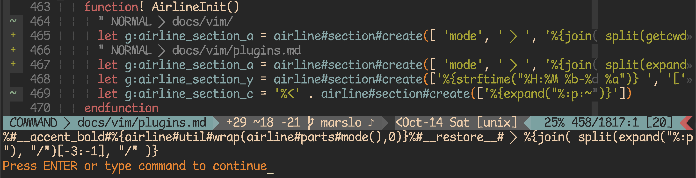<figcaption>1.3.4.3 -- section_a with default mode</figcaption></figure></a>
<a href="../../screenshot/vim/vim-airline-section_a-short.png"><figure id="fig1.3.4.4">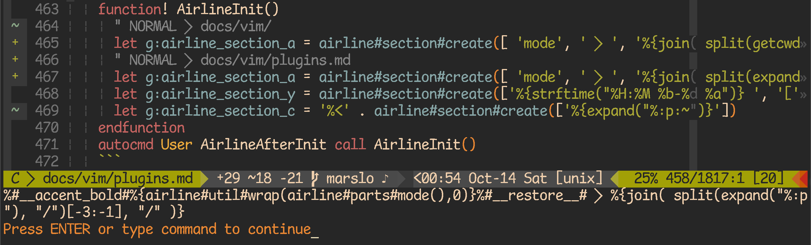<figcaption>1.3.4.4 -- section_a with short mode</figcaption></figure></a>
<ul>
<li><p>via function</p>
<pre class="language-"><code class="lang-vim"><span class="token keyword">function</span><span class="token operator">!</span> <span class="token function">ShortPath</span><span class="token punctuation">(</span><span class="token punctuation">)</span>
  <span class="token keyword">let</span> pathlist<span class="token operator">=</span><span class="token function">split</span><span class="token punctuation">(</span><span class="token function">expand</span><span class="token punctuation">(</span><span class="token string">&quot;%:p:~&quot;</span><span class="token punctuation">)</span><span class="token punctuation">,</span> <span class="token string">&quot;/&quot;</span><span class="token punctuation">)</span>
  <span class="token keyword">return</span> <span class="token function">len</span><span class="token punctuation">(</span>pathlist<span class="token punctuation">)</span> <span class="token operator">&lt;</span> <span class="token number">3</span> <span class="token operator">?</span> <span class="token function">join</span><span class="token punctuation">(</span> pathlist<span class="token punctuation">[</span><span class="token operator">-</span><span class="token number">2</span><span class="token punctuation">:</span><span class="token operator">-</span><span class="token number">1</span><span class="token punctuation">]</span><span class="token punctuation">,</span> <span class="token string">&quot;/&quot;</span> <span class="token punctuation">)</span> <span class="token punctuation">:</span> <span class="token function">join</span><span class="token punctuation">(</span> pathlist<span class="token punctuation">[</span><span class="token operator">-</span><span class="token number">3</span><span class="token punctuation">:</span><span class="token operator">-</span><span class="token number">1</span><span class="token punctuation">]</span><span class="token punctuation">,</span> <span class="token string">&quot;/&quot;</span> <span class="token punctuation">)</span>
<span class="token keyword">endfunction</span>
<span class="token string">&quot; or&quot;</span>
<span class="token keyword">function</span><span class="token operator">!</span> <span class="token function">ShortPath</span><span class="token punctuation">(</span><span class="token punctuation">)</span>
  <span class="token keyword">let</span> pathlist<span class="token operator">=</span><span class="token function">split</span><span class="token punctuation">(</span><span class="token function">expand</span><span class="token punctuation">(</span><span class="token string">&quot;%:p:~&quot;</span><span class="token punctuation">)</span><span class="token punctuation">,</span> <span class="token string">&quot;/&quot;</span><span class="token punctuation">)</span>
  <span class="token keyword">if</span> <span class="token function">len</span><span class="token punctuation">(</span>pathlist<span class="token punctuation">)</span> <span class="token operator">&lt;</span> <span class="token number">3</span> | <span class="token keyword">let</span> final_result<span class="token operator">=</span><span class="token function">join</span><span class="token punctuation">(</span> pathlist<span class="token punctuation">[</span><span class="token operator">-</span><span class="token number">2</span><span class="token punctuation">:</span><span class="token operator">-</span><span class="token number">1</span><span class="token punctuation">]</span><span class="token punctuation">,</span> <span class="token string">&quot;/&quot;</span> <span class="token punctuation">)</span> | <span class="token keyword">else</span> | <span class="token keyword">let</span> final_result<span class="token operator">=</span><span class="token function">join</span><span class="token punctuation">(</span> pathlist<span class="token punctuation">[</span><span class="token operator">-</span><span class="token number">3</span><span class="token punctuation">:</span><span class="token operator">-</span><span class="token number">1</span><span class="token punctuation">]</span><span class="token punctuation">,</span> <span class="token string">&quot;/&quot;</span> <span class="token punctuation">)</span> | <span class="token keyword">endif</span>
  <span class="token keyword">return</span> final_result
<span class="token keyword">endfunction</span>

<span class="token keyword">let</span> g<span class="token punctuation">:</span>airline_section_a <span class="token operator">=</span> airline#section#<span class="token function">create</span><span class="token punctuation">(</span><span class="token punctuation">[</span> <span class="token string">&apos;mode&apos;</span><span class="token punctuation">,</span> <span class="token string">&apos; &#xE0B1; &apos;</span><span class="token punctuation">,</span> <span class="token function">ShortPath</span><span class="token punctuation">(</span><span class="token punctuation">)</span> <span class="token punctuation">]</span><span class="token punctuation">)</span>
</code></pre>
<ul>
<li><p>i.e.:</p>
<pre class="language-"><code class="lang-vim"><span class="token keyword">function</span><span class="token operator">!</span> <span class="token function">ShortPath</span><span class="token punctuation">(</span><span class="token punctuation">)</span>
  <span class="token keyword">let</span> pathlist<span class="token operator">=</span><span class="token function">split</span><span class="token punctuation">(</span><span class="token function">expand</span><span class="token punctuation">(</span><span class="token string">&quot;%:p:~&quot;</span><span class="token punctuation">)</span><span class="token punctuation">,</span> <span class="token string">&quot;/&quot;</span><span class="token punctuation">)</span>
  <span class="token keyword">return</span> <span class="token function">len</span><span class="token punctuation">(</span>pathlist<span class="token punctuation">)</span> <span class="token operator">&lt;</span> <span class="token number">3</span> <span class="token operator">?</span> <span class="token function">join</span><span class="token punctuation">(</span> pathlist<span class="token punctuation">[</span><span class="token operator">-</span><span class="token number">2</span><span class="token punctuation">:</span><span class="token operator">-</span><span class="token number">1</span><span class="token punctuation">]</span><span class="token punctuation">,</span> <span class="token string">&quot;/&quot;</span> <span class="token punctuation">)</span> <span class="token punctuation">:</span> <span class="token function">join</span><span class="token punctuation">(</span> pathlist<span class="token punctuation">[</span><span class="token operator">-</span><span class="token number">3</span><span class="token punctuation">:</span><span class="token operator">-</span><span class="token number">1</span><span class="token punctuation">]</span><span class="token punctuation">,</span> <span class="token string">&quot;/&quot;</span> <span class="token punctuation">)</span>
<span class="token keyword">endfunction</span>
<span class="token keyword">function</span><span class="token operator">!</span> <span class="token function">AirlineInit</span><span class="token punctuation">(</span><span class="token punctuation">)</span>
  <span class="token keyword">let</span> g<span class="token punctuation">:</span>airline_section_a <span class="token operator">=</span> airline#section#<span class="token function">create</span><span class="token punctuation">(</span><span class="token punctuation">[</span> <span class="token string">&apos;[&apos;</span><span class="token punctuation">,</span> <span class="token string">&apos;mode&apos;</span><span class="token punctuation">,</span> <span class="token string">&apos;]&apos;</span><span class="token punctuation">,</span> <span class="token string">&apos; &#xE0B1; &apos;</span><span class="token punctuation">,</span> <span class="token string">&apos;%{&amp;fenc}&apos;</span><span class="token punctuation">,</span> <span class="token string">&apos; &#xE0B1; &apos;</span><span class="token punctuation">,</span> <span class="token function">ShortPath</span><span class="token punctuation">(</span><span class="token punctuation">)</span> <span class="token punctuation">]</span><span class="token punctuation">)</span>
  <span class="token keyword">let</span> g<span class="token punctuation">:</span>airline_section_y <span class="token operator">=</span> airline#section#<span class="token function">create</span><span class="token punctuation">(</span><span class="token punctuation">[</span> <span class="token string">&apos;%{strftime(&quot;%H:%M %b-%d %a&quot;)} &apos;</span><span class="token punctuation">,</span> <span class="token string">&apos;[&apos;</span><span class="token operator">.</span>&amp;<span class="token builtin">ff</span><span class="token operator">.</span><span class="token string">&apos;]&apos;</span> <span class="token punctuation">]</span><span class="token punctuation">)</span>
  <span class="token keyword">let</span> g<span class="token punctuation">:</span>airline_section_c <span class="token operator">=</span> <span class="token string">&apos;%&lt;&apos;</span> <span class="token operator">.</span> airline#section#<span class="token function">create</span><span class="token punctuation">(</span><span class="token punctuation">[</span> <span class="token string">&apos;%F&apos;</span> <span class="token punctuation">]</span><span class="token punctuation">)</span> <span class="token comment">&quot; let g:airline_section_c = </span><span class="token string">&apos;%&lt;&apos;</span> <span class="token operator">.</span> <span class="token string">&apos;%{expand(%:p:~)}&apos;</span>
<span class="token keyword">endfunction</span>
<span class="token builtin">autocmd</span> User AirlineAfterInit <span class="token keyword">call</span> <span class="token function">AirlineInit</span><span class="token punctuation">(</span><span class="token punctuation">)</span>
</code></pre>
<a href="../../screenshot/vim/vim-airline-section_a-shortpath-1.png"><figure id="fig1.3.4.5">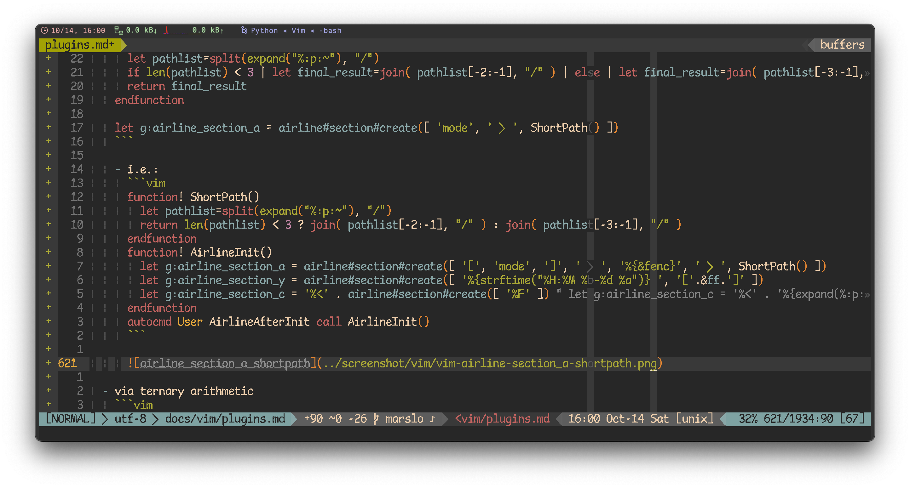<figcaption>1.3.4.5 -- airline section_a shortpath</figcaption></figure></a>
</li>
</ul>
</li>
<li><p>via <code>%{}</code></p>
<pre class="language-"><code class="lang-vim"><span class="token keyword">function</span><span class="token operator">!</span> <span class="token function">AirlineInit</span><span class="token punctuation">(</span><span class="token punctuation">)</span>
  <span class="token keyword">let</span> pathlist<span class="token operator">=</span><span class="token function">split</span><span class="token punctuation">(</span> <span class="token function">expand</span><span class="token punctuation">(</span><span class="token string">&quot;%:p:~&quot;</span><span class="token punctuation">)</span><span class="token punctuation">,</span> <span class="token string">&quot;/&quot;</span> <span class="token punctuation">)</span>
  <span class="token keyword">let</span> g<span class="token punctuation">:</span>airline_section_a <span class="token operator">=</span> airline#section#<span class="token function">create</span><span class="token punctuation">(</span><span class="token punctuation">[</span> <span class="token string">&apos;mode&apos;</span><span class="token punctuation">,</span> <span class="token string">&apos; &#xE0B1; &apos;</span><span class="token punctuation">,</span> <span class="token string">&apos;%{len(pathlist) &lt; 3 ? join( pathlist[-2:-1], &quot;/&quot; ) : join( pathlist[-3:-1], &quot;/&quot; )}&apos;</span><span class="token punctuation">]</span><span class="token punctuation">)</span>
<span class="token keyword">endfunction</span>
<span class="token builtin">autocmd</span> User AirlineAfterInit <span class="token keyword">call</span> <span class="token function">AirlineInit</span><span class="token punctuation">(</span><span class="token punctuation">)</span>
</code></pre>
<a href="../../screenshot/vim/vim-airline-section_a-shortpath-2.png"><figure id="fig1.3.4.6">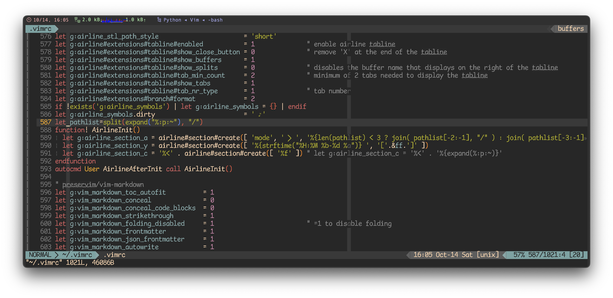<figcaption>1.3.4.6 -- airline section_a shortpath with &apos;%{}&apos;</figcaption></figure></a>
</li>
</ul>
</li>
</ul>
<ul>
<li><p>sections with length limitation</p>
<ul>
<li><code>%&lt;&apos;</code>: <code>let g:airline_section_c = &apos;%&lt;&apos; . airline#section#create([&apos;%{expand(&quot;%:p:~&quot;)}&apos;])</code></li>
<li><p><a href="https://github.com/vim-airline/vim-airline/issues/1485#issuecomment-309734370" target="_blank"><code>%-0.xx{}</code></a> : <code>let g:airline_section_c = &apos;%&lt;&apos; . &apos;%-0.13{expand(&quot;%:p:~&quot;)}&apos;</code></p>
</li>
<li><p>i.e.:</p>
<pre class="language-"><code class="lang-vim"><span class="token keyword">let</span> g<span class="token punctuation">:</span>airline_section_c <span class="token operator">=</span> <span class="token string">&apos;%&lt;&apos;</span> <span class="token operator">.</span> <span class="token string">&apos;%-0.20{expand(&quot;%:p:~&quot;)}&apos;</span>
<span class="token comment">&quot; &lt;docs/vim/plugins.md</span>

<span class="token keyword">let</span> g<span class="token punctuation">:</span>airline_section_c <span class="token operator">=</span> <span class="token string">&apos;%&lt;&apos;</span> <span class="token operator">.</span> <span class="token string">&apos;%{expand(&quot;%:p:~&quot;)}&apos;</span>
<span class="token comment">&quot; ~/path/to/ibook/docs/vim/plugins.md</span>

<span class="token keyword">let</span> g<span class="token punctuation">:</span>airline_section_c <span class="token operator">=</span> airline#section#<span class="token function">create</span><span class="token punctuation">(</span><span class="token punctuation">[</span><span class="token string">&apos;%F&apos;</span><span class="token punctuation">]</span><span class="token punctuation">)</span>
<span class="token comment">&quot; ~/path/to/book/docs/vim/plugins.md</span>
</code></pre>
</li>
</ul>
</li>
</ul>
<h4 id="themes"><a name="themes" class="anchor-navigation-ex-anchor" href="#themes"><i class="fa fa-link" aria-hidden="true"></i></a><a name="themes" class="plugin-anchor" href="#themes"><i class="fa fa-link" aria-hidden="true"></i></a>themes</h4>
<blockquote>
<ul>
<li><a href="https://github.com/n-st/vim-airline-screenshots" target="_blank">n-st/vim-airline-screenshots</a></li>
<li><a href="https://github.com/vim-airline/vim-airline/wiki/Screenshots" target="_blank">* Change the vim-airline theme</a><ul>
<a href="../../screenshot/vim/vim-AirlineTheme-random.gif"><figure id="fig1.3.4.7"><figcaption>1.3.4.7 -- pick up theme</figcaption></figure></a>
<li><a href="https://github.com/vim-airline/vim-airline/wiki/Screenshots#tomorrow-1" target="_blank">tomorrow</a></li>
<li><a href="https://github.com/vim-airline/vim-airline/wiki/Screenshots#distinguished" target="_blank">distinguished</a></li>
<li><a href="https://github.com/vim-airline/vim-airline/wiki/Screenshots#base16" target="_blank">base16</a></li>
<li><a href="https://github.com/vim-airline/vim-airline/wiki/Screenshots#angr" target="_blank">angr</a></li>
<li><a href="https://github.com/vim-airline/vim-airline/wiki/Screenshots#zenburn" target="_blank">zenburn</a></li>
<li><a href="https://github.com/vim-airline/vim-airline/wiki/Screenshots#zenburn" target="_blank">zenburn</a></li>
<li><a href="https://github.com/vim-airline/vim-airline/wiki/Screenshots#wombat" target="_blank">wombat</a></li>
</ul>
</li>
</ul>
</blockquote>
<ul>
<li><p>great themes</p>
<ul>
<li><ul>
<a href="../../screenshot/vim/vim-airline-base16_embers_2.gif"><figure id="fig1.3.4.8">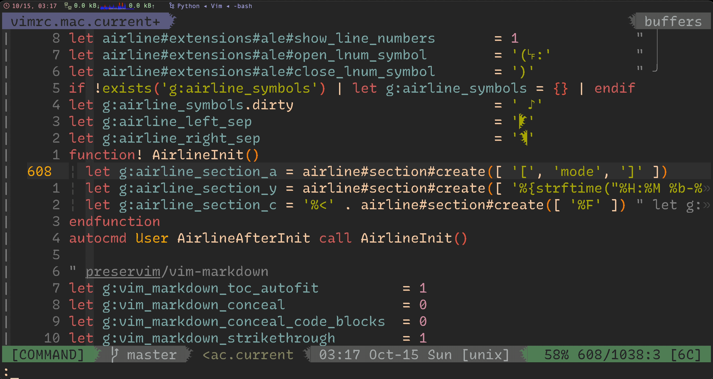<figcaption>1.3.4.8 -- base16_embers</figcaption></figure></a>
</ul>
</li>
<li><ul>
<a href="../../screenshot/vim/vim-airline-base16.gif"><figure id="fig1.3.4.9">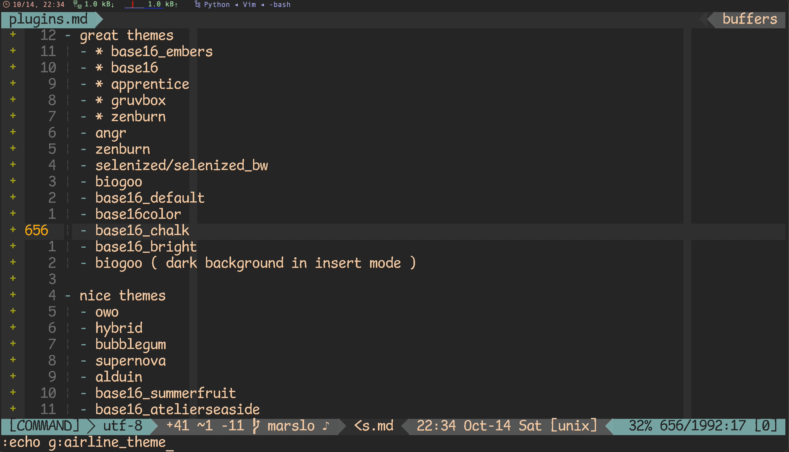<figcaption>1.3.4.9 -- base16</figcaption></figure></a>
</ul>
</li>
<li><ul>
<a href="../../screenshot/vim/vim-airline-apprentice.gif"><figure id="fig1.3.4.10">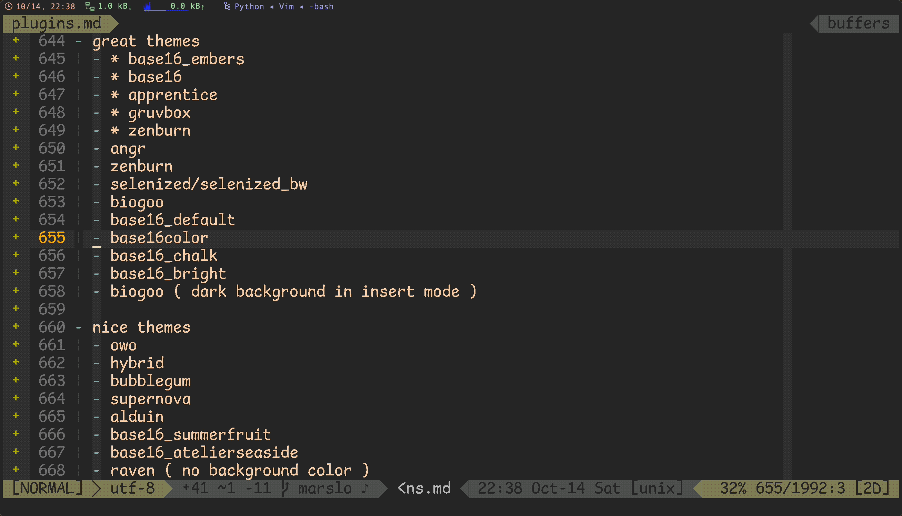<figcaption>1.3.4.10 -- apprentice</figcaption></figure></a>
</ul>
</li>
<li><ul>
<a href="../../screenshot/vim/vim-airline-gruvbox.gif"><figure id="fig1.3.4.11">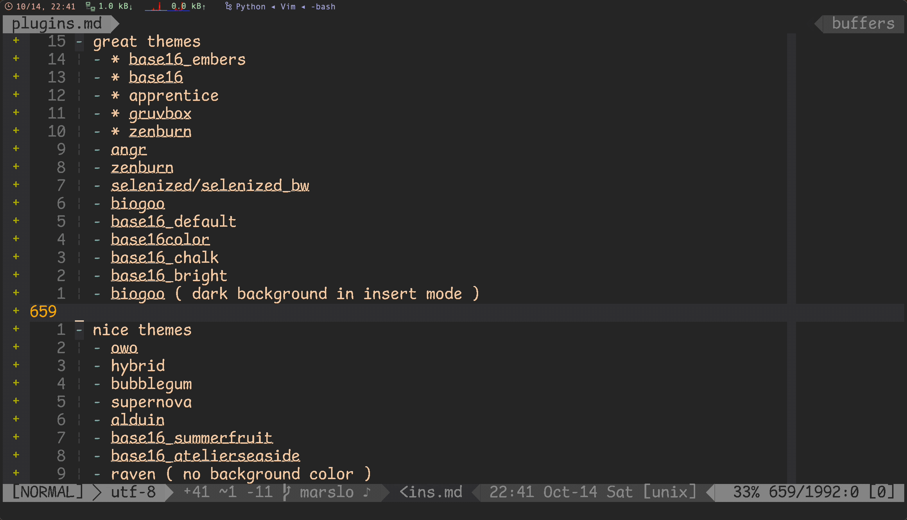<figcaption>1.3.4.11 -- gruvbox</figcaption></figure></a>
</ul>
</li>
<li><ul>
<a href="../../screenshot/vim/vim-airline-zenburn.gif"><figure id="fig1.3.4.12">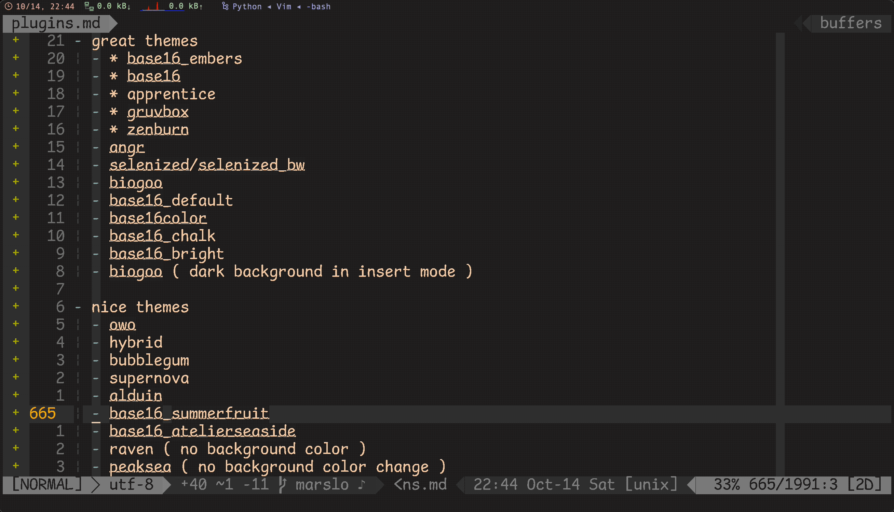<figcaption>1.3.4.12 -- zenburn</figcaption></figure></a>
</ul>
</li>
<li><p>angr</p>
</li>
<li>selenized/selenized_bw</li>
<li>biogoo</li>
<li>base16_default</li>
<li>base16color</li>
<li>base16_chalk</li>
<li>base16_bright</li>
<li>biogoo ( dark background in insert mode )</li>
</ul>
</li>
<li><p>nice themes</p>
<ul>
<li>owo</li>
<li>hybrid</li>
<li>bubblegum</li>
<li>supernova</li>
<li>alduin</li>
<li>base16_summerfruit</li>
<li>base16_atelierseaside</li>
<li>raven ( no background color )</li>
<li>peaksea ( no background color change )</li>
</ul>
</li>
</ul>
<h1 id="programming"><a name="programming" class="anchor-navigation-ex-anchor" href="#programming"><i class="fa fa-link" aria-hidden="true"></i></a><a name="programming" class="plugin-anchor" href="#programming"><i class="fa fa-link" aria-hidden="true"></i></a>programming</h1>
<h2 id="vim-syntasticsyntastic"><a name="vim-syntasticsyntastic" class="anchor-navigation-ex-anchor" href="#vim-syntasticsyntastic"><i class="fa fa-link" aria-hidden="true"></i></a><a name="vim-syntasticsyntastic" class="plugin-anchor" href="#vim-syntasticsyntastic"><i class="fa fa-link" aria-hidden="true"></i></a><a href="https://github.com/vim-syntastic/syntastic" target="_blank">vim-syntastic/syntastic</a></h2>
<blockquote>
<p>[!NOTE|label:references:]</p>
<ul>
<li><a href="https://github.com/vim-syntastic/syntastic/issues/1577" target="_blank">#1577 : Unknown function: SyntasticStatuslineFlag</a></li>
<li><a href="https://medium.com/usevim/in-editor-linting-with-syntastic-6814122bdbec" target="_blank">In Editor Linting with Syntastic</a><pre class="language-"><code class="lang-vim"><span class="token punctuation">:</span>SyntasticInfo
</code></pre>
</li>
</ul>
</blockquote>
<a href="../../screenshot/vim/vim-syntastic-style-warning.png"><figure id="fig1.3.4.13">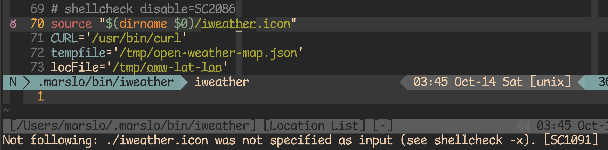<figcaption>1.3.4.13 -- style warning</figcaption></figure></a>
<a href="../../screenshot/vim/vim-syntastic-error.png"><figure id="fig1.3.4.14">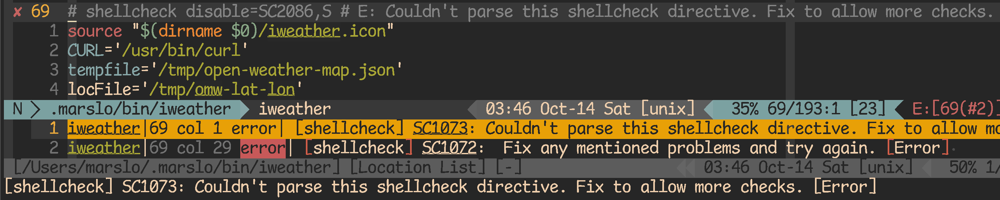<figcaption>1.3.4.14 -- error</figcaption></figure></a>
<pre class="language-"><code class="lang-vim">Plug <span class="token string">&apos;vim-syntastic/syntastic&apos;</span>

<span class="token string">&quot; syntastic settings                                                &quot;</span> Plug <span class="token string">&apos;vim-syntastic/syntastic&apos;</span>
<span class="token keyword">set</span> <span class="token builtin">statusline</span><span class="token operator">+=</span><span class="token operator">%</span>#warningmsg#
<span class="token keyword">set</span> <span class="token builtin">statusline</span><span class="token operator">+=</span><span class="token operator">%</span><span class="token punctuation">{</span><span class="token function">SyntasticStatuslineFlag</span><span class="token punctuation">(</span><span class="token punctuation">)</span><span class="token punctuation">}</span>
<span class="token keyword">set</span> <span class="token builtin">statusline</span><span class="token operator">+=</span><span class="token operator">%</span><span class="token operator">*</span>
<span class="token keyword">let</span> g<span class="token punctuation">:</span>syntastic_always_populate_loc_list <span class="token operator">=</span> <span class="token number">1</span>
<span class="token keyword">let</span> g<span class="token punctuation">:</span>syntastic_auto_loc_list            <span class="token operator">=</span> <span class="token number">1</span>
<span class="token keyword">let</span> g<span class="token punctuation">:</span>syntastic_check_on_open            <span class="token operator">=</span> <span class="token number">1</span>
<span class="token keyword">let</span> g<span class="token punctuation">:</span>syntastic_check_on_wq              <span class="token operator">=</span> <span class="token number">0</span>
<span class="token keyword">let</span> g<span class="token punctuation">:</span>syntastic_loc_list_height          <span class="token operator">=</span> <span class="token number">2</span>
<span class="token keyword">let</span> g<span class="token punctuation">:</span>syntastic_ignore_files             <span class="token operator">=</span> <span class="token punctuation">[</span><span class="token string">&apos;\.py$&apos;</span><span class="token punctuation">]</span>
<span class="token keyword">let</span> g<span class="token punctuation">:</span>syntastic_html_tidy_ignore_errors  <span class="token operator">=</span> <span class="token punctuation">[</span><span class="token string">&quot; proprietary attribute \&quot;ng-&quot;</span><span class="token punctuation">]</span>
<span class="token keyword">let</span> g<span class="token punctuation">:</span>syntastic_enable_signs             <span class="token operator">=</span> <span class="token number">1</span>
<span class="token keyword">let</span> g<span class="token punctuation">:</span>syntastic_info_symbol              <span class="token operator">=</span> <span class="token string">&apos;&#xCF2;&apos;</span>                      <span class="token comment">&quot; &#x835; &#x3CA;</span>
<span class="token keyword">let</span> g<span class="token punctuation">:</span>syntastic_error_symbol             <span class="token operator">=</span> <span class="token string">&apos;&#x2717;&apos;</span>                      <span class="token comment">&quot; &#xB93; &#xBD0; &#xFBE;</span>
<span class="token keyword">let</span> g<span class="token punctuation">:</span>syntastic_warning_symbol           <span class="token operator">=</span> <span class="token string">&apos;&#x2368;&apos;</span>                      <span class="token comment">&quot; &#x14C6; &#x14CD;</span>
<span class="token keyword">let</span> g<span class="token punctuation">:</span>syntastic_style_error_symbol       <span class="token operator">=</span> <span class="token string">&apos;&#x2365;&apos;</span>
<span class="token keyword">let</span> g<span class="token punctuation">:</span>syntastic_style_warning_symbol     <span class="token operator">=</span> <span class="token string">&apos;&#xC20;&apos;</span>                      <span class="token comment">&quot; &#x2364; &#xD60;</span>
<span class="token builtin">highlight</span> link SyntasticErrorSign        Error
<span class="token builtin">highlight</span> link SyntasticWarningSign      GruvboxYellow
<span class="token builtin">highlight</span> link SyntasticStyleErrorSign   GruvboxRedSign
<span class="token builtin">highlight</span> link SyntasticStyleWarningSign GruvboxPurpleSign
</code></pre>
<sec data-title="former version" data-id="section0" data-show="true" data-collapse="true"><div class="panel panel-default"><div class="panel-heading"><b>former version<a class="pull-right section atTitle btn btn-default" target="section0"><span class="fa fa-angle-up"></span></a></b></div><div class="panel-collapse in" id="section0"><div class="panel-body">
<pre class="language-"><code class="lang-vim">  Bundle <span class="token string">&apos;vim-syntastic/syntastic&apos;</span>

  <span class="token comment">&quot; configure syntastic syntax checking to check on open as well as save</span>
  <span class="token keyword">set</span> <span class="token builtin">statusline</span><span class="token operator">+=</span><span class="token operator">%</span>#warningmsg#
  <span class="token keyword">set</span> <span class="token builtin">statusline</span><span class="token operator">+=</span>\ <span class="token operator">%</span><span class="token punctuation">{</span><span class="token function">SyntasticStatuslineFlag</span><span class="token punctuation">(</span><span class="token punctuation">)</span><span class="token punctuation">}</span>                      <span class="token comment">&quot; vim-syntastic/syntastic</span>
  <span class="token keyword">set</span> <span class="token builtin">statusline</span><span class="token operator">+=</span>\ <span class="token operator">%</span><span class="token operator">*</span> |
  <span class="token keyword">let</span> g<span class="token punctuation">:</span>syntastic_always_populate_loc_list  <span class="token operator">=</span> <span class="token number">1</span>
  <span class="token keyword">let</span> g<span class="token punctuation">:</span>syntastic_auto_loc_list             <span class="token operator">=</span> <span class="token number">1</span>
  <span class="token keyword">let</span> g<span class="token punctuation">:</span>syntastic_check_on_open             <span class="token operator">=</span> <span class="token number">1</span>
  <span class="token keyword">let</span> g<span class="token punctuation">:</span>syntastic_check_on_wq               <span class="token operator">=</span> <span class="token number">0</span>
  <span class="token keyword">let</span> g<span class="token punctuation">:</span>syntastic_loc_list_height           <span class="token operator">=</span> <span class="token number">2</span>
  <span class="token keyword">let</span> g<span class="token punctuation">:</span>syntastic_ignore_files              <span class="token operator">=</span> <span class="token punctuation">[</span><span class="token string">&apos;\.py$&apos;</span><span class="token punctuation">]</span>
  <span class="token keyword">let</span> g<span class="token punctuation">:</span>syntastic_html_tidy_ignore_errors   <span class="token operator">=</span> <span class="token punctuation">[</span><span class="token string">&quot; proprietary attribute \&quot;ng-&quot;</span><span class="token punctuation">]</span>
</code></pre>
</div></div></div></sec>
<h2 id="cocnvim"><a name="cocnvim" class="anchor-navigation-ex-anchor" href="#cocnvim"><i class="fa fa-link" aria-hidden="true"></i></a><a name="cocnvim" class="plugin-anchor" href="#cocnvim"><i class="fa fa-link" aria-hidden="true"></i></a><a href="https://github.com/neoclide/coc.nvim" target="_blank">coc.nvim</a></h2>
<blockquote>
<p>[!TIP|label:references:]</p>
<ul>
<li><a href="https://zhuanlan.zhihu.com/p/71846145" target="_blank">CocList &#x5165;&#x5751;&#x6307;&#x5357;</a> | <a href="https://zhuanlan.zhihu.com/p/65524706" target="_blank">coc.nvim &#x63D2;&#x4EF6;&#x4F53;&#x7CFB; - &#x4ECB;&#x7ECD;</a></li>
<li><a href="https://github.com/neoclide/coc.nvim/wiki/Language-servers" target="_blank">* Language servers</a></li>
<li><a href="https://javadev.org/devtools/ide/neovim/coc/" target="_blank">NeoVim for Java Development (COC)</a></li>
<li><a href="https://github.com/dansomething/coc-groovy" target="_blank">dansomething/coc-groovy</a></li>
<li><a href="https://github.com/neoclide/coc.nvim/wiki/Using-coc-extensions#manage-coc-extensions" target="_blank">Manage coc extensions</a></li>
<li><a href="https://github.com/nicknisi/dotfiles/blob/master/config/nvim/coc-settings.json" target="_blank">nicknisi/dotfiles/config/nvim/coc-settings.json</a></li>
<li><a href="https://github.com/YongJieYongJie/dotfiles/blob/master/coc-settings.json" target="_blank">YongJieYongJie/dotfiles/coc-settings.json</a></li>
</ul>
</blockquote>
<ul>
<li><p>initialize</p>
<pre class="language-"><code class="lang-bash">$ pip <span class="token function">install</span> jedi
</code></pre>
<pre class="language-"><code class="lang-vim"><span class="token comment">&quot; install</span>
Plug <span class="token string">&apos;neoclide/coc.nvim&apos;</span><span class="token punctuation">,</span> <span class="token punctuation">{</span> <span class="token string">&apos;branch&apos;</span><span class="token punctuation">:</span> <span class="token string">&apos;release&apos;</span> <span class="token punctuation">}</span>

<span class="token comment">&quot; neoclide/coc.nvim</span>
<span class="token keyword">set</span> <span class="token builtin">updatetime</span><span class="token operator">=</span><span class="token number">300</span>
<span class="token keyword">set</span> signcolumn<span class="token operator">=</span>yes
<span class="token keyword">let</span> g<span class="token punctuation">:</span>coc_global_extensions <span class="token operator">=</span> <span class="token punctuation">[</span>
  \   <span class="token string">&apos;coc-sh&apos;</span><span class="token punctuation">,</span>
  \   <span class="token string">&apos;coc-groovy&apos;</span><span class="token punctuation">,</span> <span class="token string">&apos;coc-java&apos;</span><span class="token punctuation">,</span>
  \   <span class="token string">&apos;coc-json&apos;</span><span class="token punctuation">,</span>
  \   <span class="token string">&apos;coc-css&apos;</span><span class="token punctuation">,</span> <span class="token string">&apos;coc-htmlhint&apos;</span><span class="token punctuation">,</span> <span class="token string">&apos;coc-html-css-support&apos;</span><span class="token punctuation">,</span>
  \   <span class="token string">&apos;coc-pyright&apos;</span><span class="token punctuation">,</span>
  \   <span class="token string">&apos;coc-snippets&apos;</span><span class="token punctuation">,</span>
  \   <span class="token string">&apos;coc-docker&apos;</span><span class="token punctuation">,</span>
  \   <span class="token string">&apos;coc-emoji&apos;</span>
  \ <span class="token punctuation">]</span>
<span class="token keyword">function</span><span class="token operator">!</span> <span class="token function">CheckBackspace</span><span class="token punctuation">(</span><span class="token punctuation">)</span> abort
  <span class="token keyword">let</span> <span class="token keyword">col</span> <span class="token operator">=</span> <span class="token function">col</span><span class="token punctuation">(</span><span class="token string">&apos;.&apos;</span><span class="token punctuation">)</span> <span class="token operator">-</span> <span class="token number">1</span>
  <span class="token keyword">return</span> <span class="token operator">!</span><span class="token keyword">col</span> <span class="token operator">||</span> <span class="token function">getline</span><span class="token punctuation">(</span><span class="token string">&apos;.&apos;</span><span class="token punctuation">)</span><span class="token punctuation">[</span><span class="token keyword">col</span> <span class="token operator">-</span> <span class="token number">1</span><span class="token punctuation">]</span>  <span class="token operator">=~#</span> <span class="token string">&apos;\s&apos;</span>
<span class="token keyword">endfunction</span>
<span class="token keyword">function</span><span class="token operator">!</span> <span class="token function">ShowDocumentation</span><span class="token punctuation">(</span><span class="token punctuation">)</span>
  <span class="token keyword">if</span> <span class="token function">CocAction</span><span class="token punctuation">(</span><span class="token string">&apos;hasProvider&apos;</span><span class="token punctuation">,</span> <span class="token string">&apos;hover&apos;</span><span class="token punctuation">)</span>
    <span class="token keyword">call</span> <span class="token function">CocActionAsync</span><span class="token punctuation">(</span><span class="token string">&apos;doHover&apos;</span><span class="token punctuation">)</span>
  <span class="token keyword">else</span>
    <span class="token keyword">call</span> <span class="token function">feedkeys</span><span class="token punctuation">(</span><span class="token string">&apos;K&apos;</span><span class="token punctuation">,</span> <span class="token string">&apos;in&apos;</span><span class="token punctuation">)</span>
  <span class="token keyword">endif</span>
<span class="token keyword">endfunction</span>
<span class="token builtin">autocmd</span> FileType json <span class="token builtin">syntax</span> <span class="token keyword">match</span> Comment <span class="token operator">+</span>\<span class="token operator">/</span>\<span class="token operator">/</span><span class="token operator">.</span>\<span class="token operator">+</span>$<span class="token operator">+</span>
<span class="token builtin">autocmd</span> FileType html <span class="token keyword">let</span> <span class="token keyword">b</span><span class="token punctuation">:</span>coc_root_patterns <span class="token operator">=</span> <span class="token punctuation">[</span><span class="token string">&apos;.git&apos;</span><span class="token punctuation">,</span> <span class="token string">&apos;.env&apos;</span><span class="token punctuation">,</span> <span class="token string">&apos;tailwind.config.js&apos;</span><span class="token punctuation">,</span> <span class="token string">&apos;tailwind.config.cjs&apos;</span><span class="token punctuation">]</span>
inoremap <span class="token operator">&lt;</span><span class="token keyword">silent</span><span class="token operator">&gt;</span><span class="token operator">&lt;</span>expr<span class="token operator">&gt;</span> <span class="token operator">&lt;</span>DOWN<span class="token operator">&gt;</span>
      \ coc#pum#<span class="token function">visible</span><span class="token punctuation">(</span><span class="token punctuation">)</span> <span class="token operator">?</span> coc#pum#<span class="token function">next</span><span class="token punctuation">(</span><span class="token number">1</span><span class="token punctuation">)</span> <span class="token punctuation">:</span> <span class="token function">CheckBackspace</span><span class="token punctuation">(</span><span class="token punctuation">)</span>
      \                   <span class="token operator">?</span> <span class="token string">&quot;\&lt;DOWN&gt;&quot;</span> <span class="token punctuation">:</span> coc#<span class="token function">refresh</span><span class="token punctuation">(</span><span class="token punctuation">)</span>
inoremap <span class="token operator">&lt;</span>expr<span class="token operator">&gt;</span><span class="token operator">&lt;</span>UP<span class="token operator">&gt;</span> coc#pum#<span class="token function">visible</span><span class="token punctuation">(</span><span class="token punctuation">)</span> <span class="token operator">?</span> coc#pum#<span class="token function">prev</span><span class="token punctuation">(</span><span class="token number">1</span><span class="token punctuation">)</span> <span class="token punctuation">:</span> <span class="token string">&quot;\&lt;C-h&gt;&quot;</span>
inoremap <span class="token operator">&lt;</span><span class="token keyword">silent</span><span class="token operator">&gt;</span><span class="token operator">&lt;</span>expr<span class="token operator">&gt;</span> <span class="token operator">&lt;</span>C<span class="token operator">-</span>M<span class="token operator">&gt;</span>
     \ coc#pum#<span class="token function">visible</span><span class="token punctuation">(</span><span class="token punctuation">)</span> <span class="token operator">?</span> coc#pum#<span class="token function">confirm</span><span class="token punctuation">(</span><span class="token punctuation">)</span> <span class="token punctuation">:</span> <span class="token string">&quot;\&lt;C-g&gt;u\&lt;CR&gt;\&lt;c-r&gt;=coc#on_enter()\&lt;CR&gt;&quot;</span>
command<span class="token operator">!</span> <span class="token operator">-</span>nargs<span class="token operator">=</span><span class="token number">0</span> OR  <span class="token punctuation">:</span><span class="token keyword">call</span> <span class="token function">CocActionAsync</span><span class="token punctuation">(</span><span class="token string">&apos;runCommand&apos;</span><span class="token punctuation">,</span> <span class="token string">&apos;editor.action.organizeImport&apos;</span><span class="token punctuation">)</span>
nmap     <span class="token operator">&lt;</span><span class="token keyword">silent</span><span class="token operator">&gt;</span><span class="token punctuation">[</span>g   <span class="token operator">&lt;</span>Plug<span class="token operator">&gt;</span><span class="token punctuation">(</span>coc<span class="token operator">-</span>diagnostic<span class="token operator">-</span><span class="token keyword">prev</span><span class="token punctuation">)</span>
nmap     <span class="token operator">&lt;</span><span class="token keyword">silent</span><span class="token operator">&gt;</span><span class="token punctuation">]</span>g   <span class="token operator">&lt;</span>Plug<span class="token operator">&gt;</span><span class="token punctuation">(</span>coc<span class="token operator">-</span>diagnostic<span class="token operator">-</span><span class="token keyword">next</span><span class="token punctuation">)</span>
nmap     <span class="token operator">&lt;</span><span class="token keyword">silent</span><span class="token operator">&gt;</span><span class="token builtin">gd</span>   <span class="token operator">&lt;</span>Plug<span class="token operator">&gt;</span><span class="token punctuation">(</span>coc<span class="token operator">-</span>definition<span class="token punctuation">)</span>
nmap     <span class="token operator">&lt;</span><span class="token keyword">silent</span><span class="token operator">&gt;</span>gy   <span class="token operator">&lt;</span>Plug<span class="token operator">&gt;</span><span class="token punctuation">(</span>coc<span class="token operator">-</span>type<span class="token operator">-</span>definition<span class="token punctuation">)</span>
nmap     <span class="token operator">&lt;</span><span class="token keyword">silent</span><span class="token operator">&gt;</span>gi   <span class="token operator">&lt;</span>Plug<span class="token operator">&gt;</span><span class="token punctuation">(</span>coc<span class="token operator">-</span>implementation<span class="token punctuation">)</span>
nmap     <span class="token operator">&lt;</span><span class="token keyword">silent</span><span class="token operator">&gt;</span><span class="token keyword">gr</span>   <span class="token operator">&lt;</span>Plug<span class="token operator">&gt;</span><span class="token punctuation">(</span>coc<span class="token operator">-</span>references<span class="token punctuation">)</span>
nnoremap <span class="token operator">&lt;</span><span class="token keyword">silent</span><span class="token operator">&gt;</span>K    <span class="token punctuation">:</span><span class="token keyword">call</span> <span class="token function">ShowDocumentation</span><span class="token punctuation">(</span><span class="token punctuation">)</span><span class="token operator">&lt;</span>CR<span class="token operator">&gt;</span>
nmap     <span class="token operator">&lt;</span>leader<span class="token operator">&gt;</span><span class="token keyword">cl</span>   <span class="token operator">&lt;</span>Plug<span class="token operator">&gt;</span><span class="token punctuation">(</span>coc<span class="token operator">-</span>codelens<span class="token operator">-</span>action<span class="token punctuation">)</span>
<span class="token comment">&quot; coc-snippets ( ctrl-j )</span>
imap <span class="token operator">&lt;</span>C<span class="token operator">-</span><span class="token keyword">l</span><span class="token operator">&gt;</span> <span class="token operator">&lt;</span>Plug<span class="token operator">&gt;</span><span class="token punctuation">(</span>coc<span class="token operator">-</span>snippets<span class="token operator">-</span>expand<span class="token punctuation">)</span>
vmap <span class="token operator">&lt;</span>C<span class="token operator">-</span><span class="token keyword">j</span><span class="token operator">&gt;</span> <span class="token operator">&lt;</span>Plug<span class="token operator">&gt;</span><span class="token punctuation">(</span>coc<span class="token operator">-</span>snippets<span class="token operator">-</span>select<span class="token punctuation">)</span>
<span class="token keyword">let</span> g<span class="token punctuation">:</span>coc_snippet_next <span class="token operator">=</span> <span class="token string">&apos;&lt;c-j&gt;&apos;</span>
<span class="token keyword">let</span> g<span class="token punctuation">:</span>coc_snippet_prev <span class="token operator">=</span> <span class="token string">&apos;&lt;c-k&gt;&apos;</span>
imap <span class="token operator">&lt;</span>C<span class="token operator">-</span><span class="token keyword">j</span><span class="token operator">&gt;</span> <span class="token operator">&lt;</span>Plug<span class="token operator">&gt;</span><span class="token punctuation">(</span>coc<span class="token operator">-</span>snippets<span class="token operator">-</span>expand<span class="token operator">-</span>jump<span class="token punctuation">)</span>
inoremap <span class="token operator">&lt;</span><span class="token keyword">silent</span><span class="token operator">&gt;</span><span class="token operator">&lt;</span>expr<span class="token operator">&gt;</span> <span class="token operator">&lt;</span>C<span class="token operator">-</span><span class="token keyword">j</span><span class="token operator">&gt;</span>
      \ <span class="token function">pumvisible</span><span class="token punctuation">(</span><span class="token punctuation">)</span> <span class="token operator">?</span> coc#<span class="token function">_select_confirm</span><span class="token punctuation">(</span><span class="token punctuation">)</span> <span class="token punctuation">:</span>
      \ coc#<span class="token function">expandableOrJumpable</span><span class="token punctuation">(</span><span class="token punctuation">)</span> <span class="token operator">?</span> <span class="token string">&quot;\&lt;C-r&gt;=coc#rpc#request(&apos;doKeymap&apos;, [&apos;snippets-expand-jump&apos;,&apos;&apos;])\&lt;CR&gt;&quot;</span> <span class="token punctuation">:</span>
      \ <span class="token function">CheckBackSpace</span><span class="token punctuation">(</span><span class="token punctuation">)</span> <span class="token operator">?</span> <span class="token string">&quot;\&lt;TAB&gt;&quot;</span> <span class="token punctuation">:</span>
      \ coc#<span class="token function">refresh</span><span class="token punctuation">(</span><span class="token punctuation">)</span>
<span class="token keyword">function</span><span class="token operator">!</span> <span class="token function">CheckBackSpace</span><span class="token punctuation">(</span><span class="token punctuation">)</span> abort
  <span class="token keyword">let</span> <span class="token keyword">col</span> <span class="token operator">=</span> <span class="token function">col</span><span class="token punctuation">(</span><span class="token string">&apos;.&apos;</span><span class="token punctuation">)</span> <span class="token operator">-</span> <span class="token number">1</span>
  <span class="token keyword">return</span> <span class="token operator">!</span><span class="token keyword">col</span> <span class="token operator">||</span> <span class="token function">getline</span><span class="token punctuation">(</span><span class="token string">&apos;.&apos;</span><span class="token punctuation">)</span><span class="token punctuation">[</span><span class="token keyword">col</span> <span class="token operator">-</span> <span class="token number">1</span><span class="token punctuation">]</span>  <span class="token operator">=~#</span> <span class="token string">&apos;\s&apos;</span>
<span class="token keyword">endfunction</span>
</code></pre>
</li>
<li><p>open configure file ( <code>coc-settings.json</code> )</p>
<pre class="language-"><code class="lang-vim"><span class="token punctuation">:</span>CocConfig
</code></pre>
<ul>
<li><a href="https://www.narga.net/how-to-set-up-code-completion-for-vim/" target="_blank">language server setup</a><pre class="language-"><code class="lang-json"><span class="token punctuation">{</span>
    <span class="token property">&quot;languageserver&quot;</span><span class="token operator">:</span> <span class="token punctuation">{</span>
        <span class="token property">&quot;intelephense&quot;</span><span class="token operator">:</span> <span class="token punctuation">{</span>
            <span class="token property">&quot;command&quot;</span><span class="token operator">:</span> <span class="token string">&quot;intelephense&quot;</span><span class="token punctuation">,</span>
            <span class="token property">&quot;args&quot;</span><span class="token operator">:</span> <span class="token punctuation">[</span><span class="token string">&quot;--stdio&quot;</span><span class="token punctuation">]</span><span class="token punctuation">,</span>
            <span class="token property">&quot;filetypes&quot;</span><span class="token operator">:</span> <span class="token punctuation">[</span><span class="token string">&quot;php&quot;</span><span class="token punctuation">]</span><span class="token punctuation">,</span>
            <span class="token property">&quot;initializationOptions&quot;</span><span class="token operator">:</span> <span class="token punctuation">{</span>
                <span class="token property">&quot;storagePath&quot;</span><span class="token operator">:</span> <span class="token string">&quot;/tmp/intelephense&quot;</span>
            <span class="token punctuation">}</span>
        <span class="token punctuation">}</span>
    <span class="token punctuation">}</span><span class="token punctuation">,</span>
<span class="token punctuation">}</span>
</code></pre>
</li>
</ul>
</li>
<li><p>check information</p>
<pre class="language-"><code class="lang-vim"><span class="token punctuation">:</span>CocInfo
<span class="token punctuation">:</span>checkhealth
<span class="token punctuation">:</span>CocOpenLog
<span class="token punctuation">:</span>CocCommand workspace<span class="token operator">.</span>showOutput
</code></pre>
</li>
<li><p>CocConfig:</p>
<pre class="language-"><code class="lang-json"><span class="token punctuation">{</span>
  <span class="token property">&quot;codeLens.enable&quot;</span><span class="token operator">:</span> <span class="token boolean">true</span><span class="token punctuation">,</span>
  <span class="token property">&quot;java.referencesCodeLens.enabled&quot;</span><span class="token operator">:</span> <span class="token boolean">true</span><span class="token punctuation">,</span>
  <span class="token property">&quot;diagnostic.displayByAle&quot;</span><span class="token operator">:</span> <span class="token boolean">false</span><span class="token punctuation">,</span>
  <span class="token property">&quot;diagnostic.errorSign&quot;</span><span class="token operator">:</span> <span class="token string">&quot;&#x2718;&quot;</span><span class="token punctuation">,</span>
  <span class="token property">&quot;diagnostic.infoSign&quot;</span><span class="token operator">:</span> <span class="token string">&quot;&#x14C6;&quot;</span><span class="token punctuation">,</span>
  <span class="token property">&quot;diagnostic.warningSign&quot;</span><span class="token operator">:</span> <span class="token string">&quot;&#x1479;&quot;</span><span class="token punctuation">,</span>
  <span class="token property">&quot;diagnostic.hintSign&quot;</span><span class="token operator">:</span> <span class="token string">&quot;&#x27A4;&quot;</span><span class="token punctuation">,</span>
  <span class="token property">&quot;diagnostic-languageserver.filetypes&quot;</span><span class="token operator">:</span> <span class="token punctuation">{</span>
    <span class="token property">&quot;yaml&quot;</span><span class="token operator">:</span> <span class="token punctuation">[</span> <span class="token string">&quot;yamllint&quot;</span> <span class="token punctuation">]</span><span class="token punctuation">,</span>
    <span class="token property">&quot;vim&quot;</span><span class="token operator">:</span> <span class="token string">&quot;vint&quot;</span><span class="token punctuation">,</span>
    <span class="token property">&quot;sh&quot;</span><span class="token operator">:</span> <span class="token string">&quot;shellcheck&quot;</span>
  <span class="token punctuation">}</span><span class="token punctuation">,</span>
  <span class="token property">&quot;html-css-support.styleSheets&quot;</span><span class="token operator">:</span> <span class="token punctuation">[</span>
      <span class="token string">&quot;https://cdn.jsdelivr.net/npm/bootstrap@4.5.3/dist/css/bootstrap.min.css&quot;</span><span class="token punctuation">,</span>
      <span class="token string">&quot;/style.css&quot;</span><span class="token punctuation">,</span>
      <span class="token string">&quot;style.css&quot;</span>
  <span class="token punctuation">]</span><span class="token punctuation">,</span>
  <span class="token property">&quot;html-css-support.enabledLanguages&quot;</span><span class="token operator">:</span> <span class="token punctuation">[</span> <span class="token string">&quot;html&quot;</span><span class="token punctuation">,</span> <span class="token string">&quot;markdown&quot;</span> <span class="token punctuation">]</span><span class="token punctuation">,</span>
  <span class="token property">&quot;coc.source.file.ignoreHidden&quot;</span><span class="token operator">:</span> <span class="token boolean">false</span><span class="token punctuation">,</span>
  <span class="token property">&quot;snippets.userSnippetsDirectory&quot;</span><span class="token operator">:</span> <span class="token string">&quot;~/.marslo/vimrc.d/snips&quot;</span>
<span class="token punctuation">}</span>
</code></pre>
<ul>
<li><p>start completion from 2nd string</p>
<pre class="language-"><code class="lang-json"><span class="token punctuation">{</span>
  <span class="token property">&quot;suggest.minTriggerInputLength&quot;</span><span class="token operator">:</span> <span class="token number">2</span>
<span class="token punctuation">}</span>
</code></pre>
</li>
<li><p>cause issue of trigger</p>
<blockquote>
<p>[!TIP]</p>
<ul>
<li>support autoTrigger: <code>always</code>, <code>trigger</code></li>
</ul>
</blockquote>
<pre class="language-"><code class="lang-json"><span class="token punctuation">{</span>
  <span class="token property">&quot;suggest.autoTrigger&quot;</span><span class="token operator">:</span> <span class="token string">&quot;trigger&quot;</span><span class="token punctuation">,</span>
  <span class="token property">&quot;suggest.triggerCompletionWait&quot;</span><span class="token operator">:</span> <span class="token number">50</span>
<span class="token punctuation">}</span>
</code></pre>
</li>
</ul>
</li>
</ul>
<a href="../../screenshot/vim/nvim-coc-copilot-snippets.gif"><figure id="fig1.3.4.15"><figcaption>1.3.4.15 -- nvim coc copilot snippets</figcaption></figure></a>
<a href="../../screenshot/vim/nvim-treesitter-coc-lspconfig.gif"><figure id="fig1.3.4.16">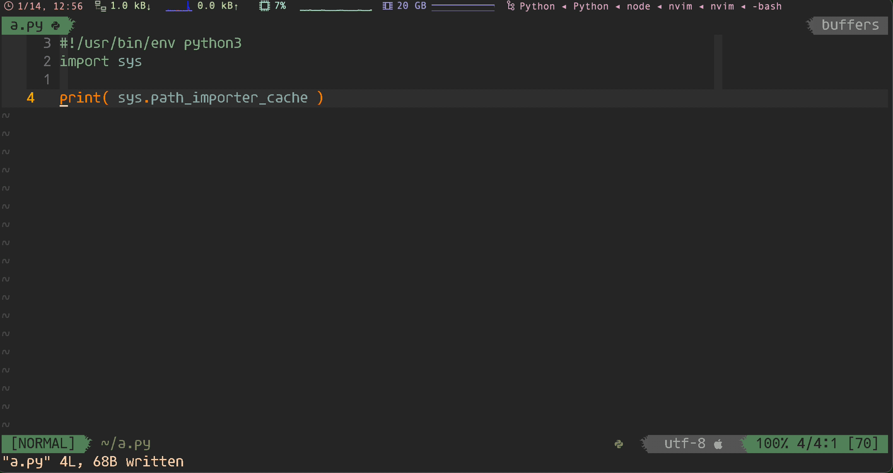<figcaption>1.3.4.16 -- nvim coc lspconfig</figcaption></figure></a>
<ul>
<li><p>shortcuts</p>
<pre class="language-"><code class="lang-vim"><span class="token comment">&quot; neoclide/coc.nvim</span>
nmap     <span class="token operator">&lt;</span><span class="token keyword">silent</span><span class="token operator">&gt;</span><span class="token punctuation">[</span>g    <span class="token operator">&lt;</span>Plug<span class="token operator">&gt;</span><span class="token punctuation">(</span>coc<span class="token operator">-</span>diagnostic<span class="token operator">-</span><span class="token keyword">prev</span><span class="token punctuation">)</span>
nmap     <span class="token operator">&lt;</span><span class="token keyword">silent</span><span class="token operator">&gt;</span><span class="token punctuation">]</span>g    <span class="token operator">&lt;</span>Plug<span class="token operator">&gt;</span><span class="token punctuation">(</span>coc<span class="token operator">-</span>diagnostic<span class="token operator">-</span><span class="token keyword">next</span><span class="token punctuation">)</span>
nmap     <span class="token operator">&lt;</span><span class="token keyword">silent</span><span class="token operator">&gt;</span><span class="token builtin">gd</span>    <span class="token operator">&lt;</span>Plug<span class="token operator">&gt;</span><span class="token punctuation">(</span>coc<span class="token operator">-</span>definition<span class="token punctuation">)</span>
nmap     <span class="token operator">&lt;</span><span class="token keyword">silent</span><span class="token operator">&gt;</span>gy    <span class="token operator">&lt;</span>Plug<span class="token operator">&gt;</span><span class="token punctuation">(</span>coc<span class="token operator">-</span>type<span class="token operator">-</span>definition<span class="token punctuation">)</span>
nmap     <span class="token operator">&lt;</span><span class="token keyword">silent</span><span class="token operator">&gt;</span>gi    <span class="token operator">&lt;</span>Plug<span class="token operator">&gt;</span><span class="token punctuation">(</span>coc<span class="token operator">-</span>implementation<span class="token punctuation">)</span>
nmap     <span class="token operator">&lt;</span><span class="token keyword">silent</span><span class="token operator">&gt;</span><span class="token keyword">gr</span>    <span class="token operator">&lt;</span>Plug<span class="token operator">&gt;</span><span class="token punctuation">(</span>coc<span class="token operator">-</span>references<span class="token punctuation">)</span>
nmap     <span class="token operator">&lt;</span>leader<span class="token operator">&gt;</span><span class="token keyword">cl</span>    <span class="token operator">&lt;</span>Plug<span class="token operator">&gt;</span><span class="token punctuation">(</span>coc<span class="token operator">-</span>codelens<span class="token operator">-</span>action<span class="token punctuation">)</span>
nnoremap <span class="token operator">&lt;</span><span class="token keyword">silent</span><span class="token operator">&gt;</span>K     <span class="token punctuation">:</span><span class="token keyword">call</span> <span class="token function">ShowDocumentation</span><span class="token punctuation">(</span><span class="token punctuation">)</span><span class="token operator">&lt;</span>CR<span class="token operator">&gt;</span>
</code></pre>
<ul>
<li><code><span class="token tag"><span class="token tag"><span class="token punctuation">&lt;</span>Plug</span><span class="token punctuation">&gt;</span></span>(coc-diagnostic-prev)</code> : <kbd>[</kbd> + <kbd>g</kbd> : previous diagnostic</li>
<li><code><span class="token tag"><span class="token tag"><span class="token punctuation">&lt;</span>Plug</span><span class="token punctuation">&gt;</span></span>(coc-diagnostic-next)</code> : <kbd>]</kbd> + <kbd>g</kbd> : next diagnostic</li>
<li><code><span class="token tag"><span class="token tag"><span class="token punctuation">&lt;</span>Plug</span><span class="token punctuation">&gt;</span></span>(coc-definition)</code> : <kbd>g</kbd> + <kbd>d</kbd> : go to definition</li>
<li><code><span class="token tag"><span class="token tag"><span class="token punctuation">&lt;</span>Plug</span><span class="token punctuation">&gt;</span></span>(coc-type-definition)</code> : <kbd>g</kbd> + <kbd>y</kbd> : type definition</li>
<li><code><span class="token tag"><span class="token tag"><span class="token punctuation">&lt;</span>Plug</span><span class="token punctuation">&gt;</span></span>(coc-implementation)</code> : <kbd>g</kbd> + <kbd>i</kbd> : implementation</li>
<li><code><span class="token tag"><span class="token tag"><span class="token punctuation">&lt;</span>Plug</span><span class="token punctuation">&gt;</span></span>(coc-references)</code> : <kbd>g</kbd> + <kbd>r</kbd> : references</li>
<li><code><span class="token tag"><span class="token tag"><span class="token punctuation">&lt;</span>Plug</span><span class="token punctuation">&gt;</span></span>(coc-codelens-action)</code> : <kbd>c</kbd> + <kbd>l</kbd> : code lens action</li>
</ul>
</li>
<li><p>troubleshooting</p>
<blockquote>
<p>[!NOTE|label:references:]</p>
<ul>
<li><a href="https://github.com/neoclide/coc.nvim/issues/805" target="_blank">#805 ALE diagnostic signs don&apos;t appear</a></li>
<li><a href="https://github.com/neoclide/coc.nvim/issues/3402" target="_blank">#3402 Can coc vim display all message diagnostic in lines of code</a></li>
<li><a href="https://github.com/neoclide/coc.nvim/wiki/Debug-language-server#using-output-channel" target="_blank">Debug language server</a></li>
</ul>
</blockquote>
<pre class="language-"><code class="lang-bash">$ rust-analyzer <span class="token parameter variable">--help</span>
error: <span class="token string">&apos;rust-analyzer&apos;</span> is not installed <span class="token keyword">for</span> the toolchain <span class="token string">&apos;stable-x86_64-unknown-linux-gnu&apos;</span>

$ rustup component <span class="token function">add</span> rust-analyzer
</code></pre>
</li>
</ul>
<h3 id="coc-snippets"><a name="coc-snippets" class="anchor-navigation-ex-anchor" href="#coc-snippets"><i class="fa fa-link" aria-hidden="true"></i></a><a name="coc-snippets" class="plugin-anchor" href="#coc-snippets"><i class="fa fa-link" aria-hidden="true"></i></a><a href="https://github.com/neoclide/coc-snippets" target="_blank">coc-snippets</a></h3>
<blockquote>
<p>[!NOTE|label:references:]</p>
<ul>
<li><a href="https://github.com/neoclide/coc.nvim/wiki/Using-snippets#configure-snippets-workflow" target="_blank">Configure snippets workflow</a></li>
<li><a href="https://www.chiarulli.me/Neovim/17-snippets/" target="_blank">Snippets with CoC</a></li>
<li><a href="https://www.reddit.com/r/neovim/comments/yl5t0o/cocnvim_completion_and_snippets_are_conflicting/" target="_blank">Coc.nvim completion and snippets are conflicting</a></li>
<li>ultisnips:<ul>
<li><a href="https://github.com/SirVer/ultisnips/blob/master/doc/UltiSnips.txt" target="_blank">ultisnips/doc/UltiSnips.txt</a></li>
<li><a href="https://www.sirver.net/blog/2011/12/30/first-episode-of-ultisnips-screencast/" target="_blank">UltiSnips Screencast Episode 1</a></li>
<li><a href="https://www.sirver.net/blog/2012/01/08/second-episode-of-ultisnips-screencast/" target="_blank">UltiSnips Screencast Episode 2</a></li>
<li><a href="https://www.sirver.net/blog/2012/02/05/third-episode-of-ultisnips-screencast/" target="_blank">UltiSnips 2.0 and Screencast Episode 3</a></li>
<li><a href="https://www.sirver.net/blog/2012/03/31/fourth-episode-of-ultisnips-screencast/" target="_blank">UltiSnips Screencast Episode 4</a></li>
</ul>
</li>
</ul>
</blockquote>
<a href="../../screenshot/vim/nvim-coc-snippet.gif"><figure id="fig1.3.4.17"><figcaption>1.3.4.17 -- coc-snippets</figcaption></figure></a>
<pre class="language-"><code class="lang-vim"><span class="token comment">&quot; ~/.vimrc.d/extension</span>
Plug <span class="token string">&apos;neoclide/coc.nvim&apos;</span><span class="token punctuation">,</span> <span class="token punctuation">{</span> <span class="token string">&apos;branch&apos;</span><span class="token punctuation">:</span> <span class="token string">&apos;release&apos;</span> <span class="token punctuation">}</span>
Plug <span class="token string">&apos;honza/vim-snippets&apos;</span>
<span class="token keyword">let</span> g<span class="token punctuation">:</span>coc_global_extensions <span class="token operator">=</span> <span class="token punctuation">[</span> <span class="token string">&apos;coc-snippets&apos;</span> <span class="token punctuation">]</span>

<span class="token comment">&quot; coc-snippets ( ctrl-j )</span>
imap <span class="token operator">&lt;</span>C<span class="token operator">-</span><span class="token keyword">l</span><span class="token operator">&gt;</span> <span class="token operator">&lt;</span>Plug<span class="token operator">&gt;</span><span class="token punctuation">(</span>coc<span class="token operator">-</span>snippets<span class="token operator">-</span>expand<span class="token punctuation">)</span>
vmap <span class="token operator">&lt;</span>C<span class="token operator">-</span><span class="token keyword">j</span><span class="token operator">&gt;</span> <span class="token operator">&lt;</span>Plug<span class="token operator">&gt;</span><span class="token punctuation">(</span>coc<span class="token operator">-</span>snippets<span class="token operator">-</span>select<span class="token punctuation">)</span>
<span class="token keyword">let</span> g<span class="token punctuation">:</span>coc_snippet_next <span class="token operator">=</span> <span class="token string">&apos;&lt;c-j&gt;&apos;</span>
<span class="token keyword">let</span> g<span class="token punctuation">:</span>coc_snippet_prev <span class="token operator">=</span> <span class="token string">&apos;&lt;c-k&gt;&apos;</span>
imap <span class="token operator">&lt;</span>C<span class="token operator">-</span><span class="token keyword">j</span><span class="token operator">&gt;</span> <span class="token operator">&lt;</span>Plug<span class="token operator">&gt;</span><span class="token punctuation">(</span>coc<span class="token operator">-</span>snippets<span class="token operator">-</span>expand<span class="token operator">-</span>jump<span class="token punctuation">)</span>
inoremap <span class="token operator">&lt;</span><span class="token keyword">silent</span><span class="token operator">&gt;</span><span class="token operator">&lt;</span>expr<span class="token operator">&gt;</span> <span class="token operator">&lt;</span>C<span class="token operator">-</span><span class="token keyword">j</span><span class="token operator">&gt;</span>
      \ <span class="token function">pumvisible</span><span class="token punctuation">(</span><span class="token punctuation">)</span> <span class="token operator">?</span> coc#<span class="token function">_select_confirm</span><span class="token punctuation">(</span><span class="token punctuation">)</span> <span class="token punctuation">:</span>
      \ coc#<span class="token function">expandableOrJumpable</span><span class="token punctuation">(</span><span class="token punctuation">)</span> <span class="token operator">?</span> <span class="token string">&quot;\&lt;C-r&gt;=coc#rpc#request(&apos;doKeymap&apos;, [&apos;snippets-expand-jump&apos;,&apos;&apos;])\&lt;CR&gt;&quot;</span> <span class="token punctuation">:</span>
      \ <span class="token function">CheckBackSpace</span><span class="token punctuation">(</span><span class="token punctuation">)</span> <span class="token operator">?</span> <span class="token string">&quot;\&lt;TAB&gt;&quot;</span> <span class="token punctuation">:</span>
      \ coc#<span class="token function">refresh</span><span class="token punctuation">(</span><span class="token punctuation">)</span>
<span class="token keyword">function</span><span class="token operator">!</span> <span class="token function">CheckBackSpace</span><span class="token punctuation">(</span><span class="token punctuation">)</span> abort
  <span class="token keyword">let</span> <span class="token keyword">col</span> <span class="token operator">=</span> <span class="token function">col</span><span class="token punctuation">(</span><span class="token string">&apos;.&apos;</span><span class="token punctuation">)</span> <span class="token operator">-</span> <span class="token number">1</span>
  <span class="token keyword">return</span> <span class="token operator">!</span><span class="token keyword">col</span> <span class="token operator">||</span> <span class="token function">getline</span><span class="token punctuation">(</span><span class="token string">&apos;.&apos;</span><span class="token punctuation">)</span><span class="token punctuation">[</span><span class="token keyword">col</span> <span class="token operator">-</span> <span class="token number">1</span><span class="token punctuation">]</span>  <span class="token operator">=~#</span> <span class="token string">&apos;\s&apos;</span>
<span class="token keyword">endfunction</span>
</code></pre>
<pre class="language-"><code class="lang-vim"><span class="token comment">&quot; ~/.vimrc.d/hightlight</span>
<span class="token comment">&quot; coc-snippet</span>
<span class="token builtin">highlight</span><span class="token operator">!</span> link snipLeadingSpaces snipComment
</code></pre>
<ul>
<li><p>commands</p>
<pre class="language-"><code class="lang-vim"><span class="token punctuation">:</span>CocList snippets
<span class="token punctuation">:</span>CocCommand snippets<span class="token operator">.</span>openSnippetFiles
<span class="token punctuation">:</span>CocCommand snippets<span class="token operator">.</span>editSnippets
<span class="token punctuation">:</span>CocCommand snippets<span class="token operator">.</span>openOutput

<span class="token punctuation">:</span>CocCommand workspace<span class="token operator">.</span>showOutput snippets
<span class="token punctuation">[</span>Info  <span class="token operator">-</span> <span class="token number">04</span><span class="token punctuation">:</span><span class="token number">39</span><span class="token punctuation">:</span><span class="token number">05.988</span><span class="token punctuation">]</span> Using ultisnips directories<span class="token punctuation">:</span>
<span class="token punctuation">[</span>
  <span class="token string">&quot;UltiSnips&quot;</span><span class="token punctuation">,</span>
  <span class="token string">&quot;/Users/marslo/.config/coc/ultisnips&quot;</span>
<span class="token punctuation">]</span>
<span class="token punctuation">[</span>Info  <span class="token operator">-</span> <span class="token number">04</span><span class="token punctuation">:</span><span class="token number">39</span><span class="token punctuation">:</span><span class="token number">06.009</span><span class="token punctuation">]</span> Loading textmate snippets from filetypes<span class="token punctuation">:</span> groovy
</code></pre>
</li>
</ul>
<h3 id="extensions-management"><a name="extensions-management" class="anchor-navigation-ex-anchor" href="#extensions-management"><i class="fa fa-link" aria-hidden="true"></i></a><a name="extensions-management" class="plugin-anchor" href="#extensions-management"><i class="fa fa-link" aria-hidden="true"></i></a>extensions management</h3>
<blockquote>
<p>[!NOTE|label:references:]</p>
<ul>
<li><a href="https://github.com/neoclide/coc.nvim/wiki/Using-coc-extensions#implemented-coc-extensions" target="_blank">Implemented coc extensions</a><ul>
<li><a href="https://github.com/yuki-yano/fzf-preview.vim" target="_blank">yuki-yano/fzf-preview.vim</a></li>
<li><a href="https://github.com/neoclide/coc-highlight" target="_blank">neoclide/coc-highlight</a></li>
<li><a href="https://github.com/yaegassy/coc-pylsp" target="_blank">yaegassy/coc-pylsp</a> | <a href="https://github.com/fannheyward/coc-pyright" target="_blank">fannheyward/coc-pyright</a> | <a href="https://github.com/yaegassy/coc-pydocstring" target="_blank">yaegassy/coc-pydocstring</a> | <a href="https://github.com/neoclide/coc-python" target="_blank">neoclide/coc-python</a></li>
<li><a href="https://github.com/xiyaowong/coc-symbol-line" target="_blank">xiyaowong/coc-symbol-line</a></li>
<li><a href="https://github.com/neoclide/coc-pairs" target="_blank">neoclide/coc-pairs</a></li>
</ul>
</li>
</ul>
</blockquote>
<ul>
<li><p>list all installed</p>
<pre class="language-"><code class="lang-vim"><span class="token punctuation">:</span>CocList extensions

$ <span class="token keyword">ls</span> ~<span class="token operator">/</span><span class="token operator">.</span>config<span class="token operator">/</span>coc<span class="token operator">/</span>extensions<span class="token operator">/</span>node_modules
coc<span class="token operator">-</span>css     coc<span class="token operator">-</span>emoji   coc<span class="token operator">-</span>html<span class="token operator">-</span>css<span class="token operator">-</span>support  coc<span class="token operator">-</span>java  coc<span class="token operator">-</span>omni     coc<span class="token operator">-</span><span class="token keyword">sh</span>        coc<span class="token operator">-</span><span class="token keyword">tag</span>
coc<span class="token operator">-</span>docker  coc<span class="token operator">-</span>groovy  coc<span class="token operator">-</span>htmlhint          coc<span class="token operator">-</span>json  coc<span class="token operator">-</span>pyright  coc<span class="token operator">-</span>snippets
</code></pre>
</li>
<li><p>add/remove execute:</p>
<pre class="language-"><code class="lang-bash">:CocInstall coc-sh coc-groovy coc-json coc-css coc-pyright coc-snippets coc-emoji coc-omni coc-tag coc-htmlhint coc-html-css-support coc-docker
:CocInstall @yaegassy/coc-tailwindcss3
:CocUninstall coc-git
</code></pre>
</li>
<li><p>or</p>
<pre class="language-"><code class="lang-bash">$ nvim <span class="token parameter variable">-c</span> <span class="token string">&apos;CocInstall -sync coc-groovy \
                            coc-java \
                            coc-css \
                            coc-pyright \
                            coc-snippet \
                            coc-emoji \
                            coc-tag \
                            coc-docker\
                            coc-htmlhint\
                            coc-html-css-support \
                            coc-sh \
                            coc-omni|q&apos;</span>
</code></pre>
</li>
<li><p><a href="https://github.com/neoclide/coc.nvim/wiki/Using-coc-extensions#using-custom-registry" target="_blank">using custom registry</a></p>
<pre class="language-"><code class="lang-bash">$ <span class="token function">cat</span> ~/.npmrc
coc.nvim:registry<span class="token operator">=</span>https://registry.npmjs.org/
</code></pre>
</li>
<li><p><a href="https://github.com/neoclide/coc.nvim/wiki/Using-coc-extensions#update-extensions" target="_blank">update extensions</a></p>
<pre class="language-"><code class="lang-vim"><span class="token punctuation">:</span>CocUpdate
<span class="token punctuation">:</span>CocUpdateSync
</code></pre>
<pre class="language-"><code class="lang-bash"><span class="token comment"># or</span>
$ <span class="token function">vim</span> <span class="token parameter variable">-c</span> <span class="token string">&apos;CocUpdateSync|q&apos;</span>
</code></pre>
</li>
</ul>
<h2 id="nvim-treesitternvim-treesitter"><a name="nvim-treesitternvim-treesitter" class="anchor-navigation-ex-anchor" href="#nvim-treesitternvim-treesitter"><i class="fa fa-link" aria-hidden="true"></i></a><a name="nvim-treesitternvim-treesitter" class="plugin-anchor" href="#nvim-treesitternvim-treesitter"><i class="fa fa-link" aria-hidden="true"></i></a><a href="https://github.com/nvim-treesitter/nvim-treesitter" target="_blank">nvim-treesitter/nvim-treesitter</a></h2>
<blockquote>
<p>[!NOTE]</p>
<ul>
<li>if install from standalone package, <code>tree-sitter</code> required<ul>
<li>osx: <code>$ brew install tree-sitter</code></li>
</ul>
</li>
<li><a href="https://zhuanlan.zhihu.com/p/609164334" target="_blank">Vim/Neovim &#x4EE3;&#x7801;&#x9AD8;&#x4EAE;&#x63D2;&#x4EF6; -- nvim-treesitter</a></li>
<li><a href="https://github.com/nvim-treesitter/nvim-treesitter/issues/1097" target="_blank">#1097 tree-sitter executable not found</a></li>
<li><a href="https://github.com/tree-sitter/tree-sitter/blob/master/cli/README.md" target="_blank">Tree-sitter CLI</a></li>
</ul>
</blockquote>
<a href="../../screenshot/vim/nvim-treesitter.gif"><figure id="fig1.3.4.18">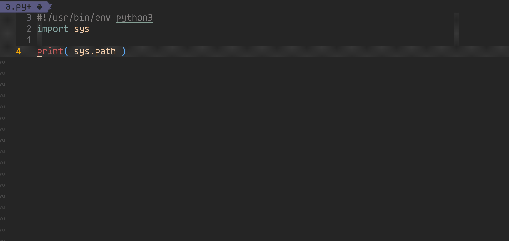<figcaption>1.3.4.18 -- nvim-treesitter</figcaption></figure></a>
<pre class="language-"><code class="lang-bash"><span class="token comment"># tree-sitter executable not found</span>
$ <span class="token function">cargo</span> <span class="token function">install</span> tree-sitter-cli
<span class="token comment"># or</span>
$ <span class="token function">sudo</span> <span class="token function">npm</span> i <span class="token parameter variable">-g</span> tree-sitter-cli
<span class="token comment"># or</span>
$ brew <span class="token function">install</span> tree-sitter

$ <span class="token function">which</span> <span class="token parameter variable">-a</span> tree-sitter
~/.cargo/bin/tree-sitter
<span class="token comment"># macos</span>
$ <span class="token function">which</span> <span class="token parameter variable">-a</span> tree-sitter
/usr/local/bin/tree-sitter
</code></pre>
<ul>
<li><p>others</p>
<pre class="language-"><code class="lang-bash">$ pip3 <span class="token function">install</span> tree_sitter
</code></pre>
</li>
<li><p>configure</p>
<pre class="language-"><code class="lang-vim">Plug <span class="token string">&apos;nvim-treesitter/nvim-treesitter&apos;</span><span class="token punctuation">,</span> <span class="token punctuation">{</span> <span class="token string">&apos;do&apos;</span><span class="token punctuation">:</span> <span class="token string">&apos;:TSUpdate&apos;</span> <span class="token punctuation">}</span>
</code></pre>
<pre class="language-"><code class="lang-lua"><span class="token comment">-- ~/.config/nvim/init.vim</span>
<span class="token function">require</span><span class="token punctuation">(</span><span class="token string">&apos;config/nvim-treesitter&apos;</span><span class="token punctuation">)</span>

<span class="token comment">-- ~/.config/nvim/lua/config/nvim-treesitter.lua</span>
require<span class="token string">&apos;nvim-treesitter.configs&apos;</span><span class="token punctuation">.</span><span class="token function">setup</span> <span class="token punctuation">{</span>
  ensure_installed <span class="token operator">=</span> <span class="token punctuation">{</span> <span class="token string">&quot;c&quot;</span><span class="token punctuation">,</span> <span class="token string">&quot;lua&quot;</span><span class="token punctuation">,</span> <span class="token string">&quot;vim&quot;</span><span class="token punctuation">,</span> <span class="token string">&quot;vimdoc&quot;</span><span class="token punctuation">,</span> <span class="token string">&quot;query&quot;</span><span class="token punctuation">,</span> <span class="token string">&quot;python&quot;</span><span class="token punctuation">,</span> <span class="token string">&quot;bash&quot;</span><span class="token punctuation">,</span> <span class="token string">&quot;groovy&quot;</span><span class="token punctuation">,</span> <span class="token string">&quot;java&quot;</span><span class="token punctuation">,</span> <span class="token string">&quot;yaml&quot;</span><span class="token punctuation">,</span> <span class="token string">&quot;xml&quot;</span><span class="token punctuation">,</span> <span class="token string">&quot;cmake&quot;</span><span class="token punctuation">,</span> <span class="token string">&quot;css&quot;</span><span class="token punctuation">,</span> <span class="token string">&quot;dockerfile&quot;</span><span class="token punctuation">,</span> <span class="token string">&quot;git_config&quot;</span><span class="token punctuation">,</span> <span class="token string">&quot;gitcommit&quot;</span><span class="token punctuation">,</span> <span class="token string">&quot;gitignore&quot;</span><span class="token punctuation">,</span> <span class="token string">&quot;jq&quot;</span><span class="token punctuation">,</span> <span class="token string">&quot;json&quot;</span><span class="token punctuation">,</span> <span class="token string">&quot;markdown&quot;</span><span class="token punctuation">,</span> <span class="token string">&quot;ssh_config&quot;</span><span class="token punctuation">,</span> <span class="token string">&quot;vimdoc&quot;</span><span class="token punctuation">,</span> <span class="token string">&quot;ini&quot;</span> <span class="token punctuation">}</span><span class="token punctuation">,</span>
  sync_install <span class="token operator">=</span> <span class="token keyword">true</span><span class="token punctuation">,</span>
  <span class="token comment">-- install automatically</span>
  auto_install <span class="token operator">=</span> <span class="token keyword">true</span><span class="token punctuation">,</span>
  ignore_install <span class="token operator">=</span> <span class="token punctuation">{</span> <span class="token string">&quot;javascript&quot;</span> <span class="token punctuation">}</span><span class="token punctuation">,</span>
  indent <span class="token operator">=</span> <span class="token punctuation">{</span>
    enable <span class="token operator">=</span> <span class="token keyword">true</span><span class="token punctuation">,</span>
    disable <span class="token operator">=</span> <span class="token punctuation">{</span> <span class="token string">&quot;markdown&quot;</span> <span class="token punctuation">}</span><span class="token punctuation">,</span>
  <span class="token punctuation">}</span><span class="token punctuation">,</span>
  incremental_selection <span class="token operator">=</span> <span class="token punctuation">{</span>
    enable <span class="token operator">=</span> <span class="token keyword">true</span><span class="token punctuation">,</span>
    keymaps <span class="token operator">=</span> <span class="token punctuation">{</span>
      init_selection <span class="token operator">=</span> <span class="token string">&quot;&lt;CR&gt;&quot;</span><span class="token punctuation">,</span>
      node_incremental <span class="token operator">=</span> <span class="token string">&quot;&lt;CR&gt;&quot;</span><span class="token punctuation">,</span>
      node_decremental <span class="token operator">=</span> <span class="token string">&quot;&lt;BS&gt;&quot;</span><span class="token punctuation">,</span>
      scope_incremental <span class="token operator">=</span> <span class="token string">&quot;&lt;TAB&gt;&quot;</span><span class="token punctuation">,</span>
    <span class="token punctuation">}</span><span class="token punctuation">,</span>
  <span class="token punctuation">}</span><span class="token punctuation">,</span>
  highlight <span class="token operator">=</span> <span class="token punctuation">{</span>
    enable <span class="token operator">=</span> <span class="token keyword">true</span><span class="token punctuation">,</span>
    disable <span class="token operator">=</span> <span class="token punctuation">{</span> <span class="token string">&quot;markdown&quot;</span> <span class="token punctuation">}</span><span class="token punctuation">,</span>
    additional_vim_regex_highlighting <span class="token operator">=</span> <span class="token keyword">false</span><span class="token punctuation">,</span>
  <span class="token punctuation">}</span><span class="token punctuation">,</span>
<span class="token punctuation">}</span>
<span class="token function">require</span><span class="token punctuation">(</span><span class="token string">&quot;nvim-treesitter.install&quot;</span><span class="token punctuation">)</span><span class="token punctuation">.</span>prefer_git <span class="token operator">=</span> <span class="token keyword">true</span>
</code></pre>
</li>
<li><p>install manually</p>
<pre class="language-"><code class="lang-vim"><span class="token punctuation">:</span>TSInstall bash css gitcommit git_config gpg html java jq lua <span class="token keyword">python</span> xml yaml
</code></pre>
</li>
<li><p>commands</p>
<pre class="language-"><code class="lang-vim"><span class="token punctuation">:</span>TSBufToggle <span class="token builtin">highlight</span>
<span class="token punctuation">:</span>TSInstallInfo
<span class="token punctuation">:</span>TSModuleInfo
<span class="token punctuation">:</span>checkhealth nvim<span class="token operator">-</span>treesitter
<span class="token punctuation">:</span>echo <span class="token function">nvim_get_runtime_file</span><span class="token punctuation">(</span><span class="token string">&apos;*/lua.so&apos;</span><span class="token punctuation">,</span> v<span class="token punctuation">:</span>true<span class="token punctuation">)</span>
<span class="token punctuation">[</span><span class="token string">&apos;/Users/marslo/.vim/plugged/nvim-treesitter/parser/lua.so&apos;</span><span class="token punctuation">,</span> <span class="token string">&apos;/usr/local/Cellar/neovim/0.9.5/lib/nvim/parser/lua.so&apos;</span><span class="token punctuation">]</span>
</code></pre>
</li>
</ul>
<h2 id="githubcopilotvim"><a name="githubcopilotvim" class="anchor-navigation-ex-anchor" href="#githubcopilotvim"><i class="fa fa-link" aria-hidden="true"></i></a><a name="githubcopilotvim" class="plugin-anchor" href="#githubcopilotvim"><i class="fa fa-link" aria-hidden="true"></i></a><a href="https://github.com/github/copilot.vim" target="_blank">github/copilot.vim</a></h2>
<blockquote>
<p>[!NOTE|label:references:]</p>
<ul>
<li><a href="https://docs.github.com/en/copilot/using-github-copilot/getting-started-with-github-copilot?tool=vimneovim" target="_blank">Getting started with GitHub Copilot</a></li>
<li><a href="https://docs.github.com/en/copilot/using-github-copilot/getting-started-with-github-copilot?tool=vimneovim#prerequisites-3" target="_blank">Installing the GitHub Copilot extension in Vim/Neovim on macOS</a></li>
<li><a href="https://docs.github.com/en/billing/managing-billing-for-github-copilot" target="_blank">Managing billing for GitHub Copilot</a></li>
<li><a href="https://sidd.io/2023/01/github-copilot-self-signed-cert-issue/" target="_blank">GitHub CoPilot self-signed certificate error in Intellij</a></li>
<li><a href="https://ovid.github.io/articles/using-github-copilot-with-vim.html" target="_blank">* Using Github Copilot with Vim</a></li>
<li><a href="https://code.kiwi.com/articles/cautiously-configuring-copilot/" target="_blank">* Cautiously Configuring Copilot</a></li>
<li><a href="https://docs.github.com/en/copilot/configuring-github-copilot/configuring-github-copilot-in-your-environment?tool=vimneovim" target="_blank">* Configuring GitHub Copilot in your environment</a></li>
<li><a href="https://github.com/orgs/community/discussions/47318" target="_blank">GitHub Copilot FAQs + Troubleshooting common issues</a></li>
<li><a href="https://github.com/MariaSolOs/dotfiles/blob/e9eb1f8e027840f872e69e00e082e2be10237499/.config/nvim/lua/plugins/copilot.lua" target="_blank">MariaSolOs/dotfiles - copilot.lua</a></li>
</ul>
</blockquote>
<a href="../../screenshot/vim/nvim-copilot.gif"><figure id="fig1.3.4.19"><figcaption>1.3.4.19 -- nvim copilot</figcaption></figure></a>
<ul>
<li><p>setup</p>
<pre class="language-"><code class="lang-vim">Plug <span class="token string">&apos;github/copilot.vim&apos;</span>

<span class="token comment">&quot; github/copilot.vim</span>
<span class="token keyword">let</span> g<span class="token punctuation">:</span>copilot_proxy            <span class="token operator">=</span> <span class="token string">&apos;http://proxy.sample.com:8080&apos;</span>
<span class="token keyword">let</span> g<span class="token punctuation">:</span>copilot_proxy_strict_ssl <span class="token operator">=</span> v<span class="token punctuation">:</span>false
<span class="token keyword">let</span> g<span class="token punctuation">:</span>copilot_filetypes        <span class="token operator">=</span> <span class="token punctuation">{</span>
    \ <span class="token string">&apos;*&apos;</span><span class="token punctuation">:</span> v<span class="token punctuation">:</span>false<span class="token punctuation">,</span>
    \ <span class="token string">&apos;gitcommit&apos;</span><span class="token punctuation">:</span> v<span class="token punctuation">:</span>true<span class="token punctuation">,</span>
    \ <span class="token string">&apos;markdown&apos;</span><span class="token punctuation">:</span> v<span class="token punctuation">:</span>true<span class="token punctuation">,</span>
    \ <span class="token string">&apos;yaml&apos;</span><span class="token punctuation">:</span> v<span class="token punctuation">:</span>true<span class="token punctuation">,</span>
    \ <span class="token string">&apos;groovy&apos;</span><span class="token punctuation">:</span> v<span class="token punctuation">:</span>true<span class="token punctuation">,</span>
    \ <span class="token string">&apos;python&apos;</span><span class="token punctuation">:</span> v<span class="token punctuation">:</span>true<span class="token punctuation">,</span>
    \ <span class="token string">&apos;Jenkinsfile&apos;</span><span class="token punctuation">:</span> v<span class="token punctuation">:</span>true<span class="token punctuation">,</span>
    \ <span class="token string">&apos;sh&apos;</span><span class="token punctuation">:</span> v<span class="token punctuation">:</span>true
    \ <span class="token punctuation">}</span>
<span class="token comment">&quot; disable for extra large file</span>
<span class="token builtin">autocmd</span> BufReadPre <span class="token operator">*</span>
    \ <span class="token keyword">let</span> <span class="token keyword">f</span><span class="token operator">=</span><span class="token function">getfsize</span><span class="token punctuation">(</span><span class="token function">expand</span><span class="token punctuation">(</span><span class="token string">&quot;&lt;afile&gt;&quot;</span><span class="token punctuation">)</span><span class="token punctuation">)</span>
    \ | <span class="token keyword">if</span> <span class="token keyword">f</span> <span class="token operator">&gt;</span> <span class="token number">100000</span> <span class="token operator">||</span> <span class="token keyword">f</span> <span class="token operator">==</span> <span class="token operator">-</span><span class="token number">2</span>
    \ |   <span class="token keyword">let</span> <span class="token keyword">b</span><span class="token punctuation">:</span>copilot_enabled <span class="token operator">=</span> v<span class="token punctuation">:</span>false
    \ | <span class="token keyword">endif</span>
<span class="token comment">&quot; invpaste -&gt; paste in insert/normal/visual mode</span>
<span class="token builtin">noremap</span> <span class="token operator">&lt;</span>leader<span class="token operator">&gt;</span><span class="token keyword">pp</span> <span class="token punctuation">:</span><span class="token keyword">set</span> <span class="token builtin">invpaste</span><span class="token operator">&lt;</span><span class="token keyword">cr</span><span class="token operator">&gt;</span>
map <span class="token operator">&lt;</span><span class="token keyword">silent</span><span class="token operator">&gt;</span> <span class="token operator">&lt;</span>F2<span class="token operator">&gt;</span>  <span class="token punctuation">:</span>Copilot disable<span class="token operator">&lt;</span>CR<span class="token operator">&gt;</span>
</code></pre>
<pre class="language-"><code class="lang-vim"><span class="token punctuation">:</span>Copilot setup

<span class="token comment">&quot; check status</span>
<span class="token punctuation">:</span>Copilot status
Copilot<span class="token punctuation">:</span> Ready
<span class="token comment">&quot; or</span>
Copilot<span class="token punctuation">:</span> Disabled <span class="token keyword">for</span> <span class="token keyword">filetype</span><span class="token operator">=</span><span class="token keyword">c</span> by g<span class="token punctuation">:</span>copilot_filetypes

<span class="token punctuation">:</span>Copilot log
<span class="token punctuation">:</span><span class="token keyword">resize</span> <span class="token operator">-</span><span class="token number">5</span>

<span class="token punctuation">:</span>Copilot panel
</code></pre>
</li>
<li><p>config</p>
<blockquote>
<p>[!NOTE|label:references:]</p>
<ul>
<li>copilot enable/disable for filetypes:<ul>
<li><a href="https://github.com/orgs/community/discussions/29977#discussioncomment-3451927" target="_blank">vimrc solution</a></li>
<li><a href="https://github.com/orgs/community/discussions/38074#discussioncomment-8430826" target="_blank">init.lua solution</a></li>
</ul>
</li>
</ul>
</blockquote>
<pre class="language-"><code class="lang-vim"><span class="token keyword">let</span> g<span class="token punctuation">:</span>copilot_proxy <span class="token operator">=</span> <span class="token string">&apos;192.168.100.1:8080&apos;</span>
<span class="token keyword">let</span> g<span class="token punctuation">:</span>copilot_proxy_strict_ssl <span class="token operator">=</span> v<span class="token punctuation">:</span>false
</code></pre>
</li>
<li><p>shortcuts</p>
<ul>
<li><p><code>copilot#Accept(&quot;\<span class="token tag"><span class="token tag"><span class="token punctuation">&lt;</span>CR</span><span class="token punctuation">&gt;</span></span>&quot;)</code> : <kbd>Tab</kbd> : accept suggestion</p>
<pre class="language-"><code class="lang-vim"><span class="token comment">&quot; to re-mapping</span>
imap <span class="token operator">&lt;</span><span class="token keyword">silent</span><span class="token operator">&gt;</span><span class="token operator">&lt;</span>script<span class="token operator">&gt;</span><span class="token operator">&lt;</span>expr<span class="token operator">&gt;</span> <span class="token operator">&lt;</span>C<span class="token operator">-</span>J<span class="token operator">&gt;</span> copilot#<span class="token function">Accept</span><span class="token punctuation">(</span><span class="token string">&quot;\&lt;CR&gt;&quot;</span><span class="token punctuation">)</span>
<span class="token keyword">let</span> g<span class="token punctuation">:</span>copilot_no_tab_map <span class="token operator">=</span> v<span class="token punctuation">:</span>true
</code></pre>
</li>
<li><p><code><span class="token tag"><span class="token tag"><span class="token punctuation">&lt;</span>Plug</span><span class="token punctuation">&gt;</span></span>(copilot-accept-word)</code> : <kbd>Meta/Alt</kbd> + <kbd>&#x21E2;</kbd>: accept the next word of the current suggestion</p>
<pre class="language-"><code class="lang-vim"><span class="token comment">&quot; to re-mapping</span>
imap <span class="token operator">&lt;</span>C<span class="token operator">-</span>L<span class="token operator">&gt;</span>   <span class="token operator">&lt;</span>Plug<span class="token operator">&gt;</span><span class="token punctuation">(</span>copilot<span class="token operator">-</span>accept<span class="token operator">-</span>word<span class="token punctuation">)</span>
</code></pre>
</li>
<li><p><code><span class="token tag"><span class="token tag"><span class="token punctuation">&lt;</span>Plug</span><span class="token punctuation">&gt;</span></span>(copilot-accept-line)</code> : <kbd>Meta/Alt</kbd> + <kbd>Ctrl</kbd> + <kbd>&#x21E2;</kbd> : accept the next line of the current suggestion</p>
<pre class="language-"><code class="lang-vim"><span class="token comment">&quot; to re-mapping</span>
imap <span class="token operator">&lt;</span>C<span class="token operator">-</span>M<span class="token operator">-</span>L<span class="token operator">&gt;</span> <span class="token operator">&lt;</span>Plug<span class="token operator">&gt;</span><span class="token punctuation">(</span>copilot<span class="token operator">-</span>accept<span class="token operator">-</span>line<span class="token punctuation">)</span>
</code></pre>
</li>
<li><p><code><span class="token tag"><span class="token tag"><span class="token punctuation">&lt;</span>Plug</span><span class="token punctuation">&gt;</span></span>(copilot-next)</code> : <kbd>Meta/Alt</kbd> + <kbd>]</kbd> : next suggestion</p>
</li>
<li><code><span class="token tag"><span class="token tag"><span class="token punctuation">&lt;</span>Plug</span><span class="token punctuation">&gt;</span></span>(copilot-previous)</code> : <kbd>Meta/Alt</kbd> + <kbd>[</kbd> : previous suggestion</li>
<li><code><span class="token tag"><span class="token tag"><span class="token punctuation">&lt;</span>Plug</span><span class="token punctuation">&gt;</span></span>(copilot-dismiss)</code> : <kbd>Control/Ctrl</kbd> + <kbd>]</kbd> : dismiss the current suggestion.</li>
<li><code><span class="token tag"><span class="token tag"><span class="token punctuation">&lt;</span>Plug</span><span class="token punctuation">&gt;</span></span>(copilot-suggest)</code> : <kbd>Meta/Alt</kbd> + <kbd>\</kbd>&gt; : explicitly request a suggestion, even if Copilot is disabled</li>
</ul>
</li>
<li><p>self-signed certificate error</p>
<blockquote>
<p>[!NOTE|label:references:]</p>
<ul>
<li><a href="https://stackoverflow.com/a/75247385/2940319" target="_blank">IntelliJ IDEA and Github Copilot: not working due to self signed certificate</a></li>
<li><a href="https://www.sslshopper.com/ssl-converter.html" target="_blank">SSL Converter</a></li>
<li><a href="https://docs.github.com/en/copilot/configuring-github-copilot/configuring-network-settings-for-github-copilot#installing-custom-certificates" target="_blank">* Installing custom certificates</a><ul>
<li><a href="https://support.apple.com/en-gb/guide/keychain-access/kyca2431/mac" target="_blank">Add certificates to a keychain using Keychain Access on Mac</a></li>
<li><a href="https://ubuntu.com/server/docs/security-trust-store" target="_blank">Installing a root CA certificate in the trust store</a></li>
<li><a href="https://learn.microsoft.com/en-us/skype-sdk/sdn/articles/installing-the-trusted-root-certificate" target="_blank">Installing the trusted root certificate in windows</a></li>
</ul>
</li>
<li><a href="../../cheatsheet/ssl/server.html#convert-from-windows-certmgrmsc">* iMarslo: convert and import windows certs into linux</a></li>
</ul>
</blockquote>
<pre class="language-"><code class="lang-vim">$ openssl x509 <span class="token operator">-</span>inform der <span class="token operator">-</span><span class="token keyword">in</span> <span class="token operator">&lt;</span>exported_cert<span class="token operator">&gt;</span><span class="token operator">.</span>cer <span class="token operator">-</span>out mycert<span class="token operator">.</span>pem
$ export NODE_EXTRA_CA_CERTS<span class="token operator">=</span><span class="token string">&quot;/path/to/mycert.pem&quot;</span>

# or
$ keytool <span class="token operator">-</span>import <span class="token operator">-</span>storepass changeit <span class="token operator">-</span>keystore PATH_TO_YOUR_INTELLIJ_JRE<span class="token operator">/</span>lib<span class="token operator">/</span>security<span class="token operator">/</span>cacerts <span class="token operator">-</span><span class="token keyword">file</span> PATH_TO_YOUR_CUSTOM_ROOTCA<span class="token operator">.</span>pem
</code></pre>
</li>
<li><p><a href="https://stackoverflow.com/a/55191955/2940319" target="_blank">vscode</a></p>
<pre class="language-"><code class="lang-json"><span class="token comment">// settings.json</span>
<span class="token punctuation">{</span>
  <span class="token property">&quot;http.proxyStrictSSL&quot;</span><span class="token operator">:</span> <span class="token boolean">false</span><span class="token punctuation">,</span>
  <span class="token property">&quot;http.proxy&quot;</span><span class="token operator">:</span> <span class="token string">&quot;http://proxy.sample.com:8080&quot;</span><span class="token punctuation">,</span>
<span class="token punctuation">}</span>
</code></pre>
</li>
</ul>
<h3 id="copilotchatnvim"><a name="copilotchatnvim" class="anchor-navigation-ex-anchor" href="#copilotchatnvim"><i class="fa fa-link" aria-hidden="true"></i></a><a name="copilotchatnvim" class="plugin-anchor" href="#copilotchatnvim"><i class="fa fa-link" aria-hidden="true"></i></a><a href="https://copilotc-nvim.github.io/CopilotChat.nvim/" target="_blank">CopilotChat.nvim</a></h3>
<blockquote>
<p>[!NOTE|label:references:]</p>
<ul>
<li><a href="https://github.com/CopilotC-Nvim/CopilotChat.nvim" target="_blank">CopilotC-Nvim/CopilotChat.nvim</a></li>
<li><a href="https://github.com/deathbeam/dotfiles/blob/master/nvim/.config/nvim/lua/config/copilot.lua" target="_blank">deathbeam/dotfiles - copilot.lua</a></li>
</ul>
</blockquote>
<pre class="language-"><code class="lang-vim"><span class="token comment">&quot; install</span>
Plug <span class="token string">&apos;CopilotC-Nvim/CopilotChat.nvim&apos;</span> <span class="token punctuation">,</span> <span class="token punctuation">{</span> <span class="token string">&apos;branch&apos;</span><span class="token punctuation">:</span> <span class="token string">&apos;canary&apos;</span> <span class="token punctuation">}</span>      <span class="token comment">&quot; &#x256E;</span>
Plug <span class="token string">&apos;zbirenbaum/copilot.lua&apos;</span>                                       <span class="token comment">&quot; &#x251C; copilot chat</span>
Plug <span class="token string">&apos;nvim-lua/plenary.nvim&apos;</span>                                        <span class="token comment">&quot; &#x256F;</span>
</code></pre>
<pre class="language-"><code class="lang-lua"><span class="token comment">-- ~/.config/nvim/init.vim</span>
<span class="token function">require</span><span class="token punctuation">(</span><span class="token string">&quot;CopilotChat&quot;</span><span class="token punctuation">)</span><span class="token punctuation">.</span><span class="token function">setup</span> <span class="token punctuation">{</span>
  debug <span class="token operator">=</span> <span class="token keyword">true</span><span class="token punctuation">,</span>
  allow_insecure <span class="token operator">=</span> <span class="token keyword">true</span><span class="token punctuation">,</span>
  show_folds <span class="token operator">=</span> <span class="token keyword">false</span><span class="token punctuation">,</span>
<span class="token punctuation">}</span>
</code></pre>
<h3 id="troubleshooting"><a name="troubleshooting" class="anchor-navigation-ex-anchor" href="#troubleshooting"><i class="fa fa-link" aria-hidden="true"></i></a><a name="troubleshooting" class="plugin-anchor" href="#troubleshooting"><i class="fa fa-link" aria-hidden="true"></i></a>troubleshooting</h3>
<ul>
<li><p>No GitHub token found in WSL</p>
<ul>
<li><p>error message</p>
<pre class="language-"><code class="lang-bash">No GitHub token found, please use <span class="token variable"><span class="token variable">`</span>:Copilot setup<span class="token variable">`</span></span> to <span class="token builtin class-name">set</span> it up from copilot.vim or copilot.lua
</code></pre>
</li>
<li><p>error log</p>
<pre class="language-"><code class="lang-bash"><span class="token punctuation">[</span>CopilotChat.nvim<span class="token punctuation">]</span> <span class="token punctuation">[</span>ERROR <span class="token number">23</span>:59:58<span class="token punctuation">]</span> /home/marslo/.vim/plugged/CopilotChat.nvim/lua/CopilotChat/copilot.lua:275: No GitHub token found, please use <span class="token variable"><span class="token variable">`</span>:Copilot setup<span class="token variable">`</span></span> to <span class="token builtin class-name">set</span> it up from copilot.vim or copilot.lua
</code></pre>
</li>
<li><p>solution</p>
<pre class="language-"><code class="lang-bash">$ <span class="token assign-left variable">user</span><span class="token operator">=</span><span class="token string">&quot;<span class="token variable"><span class="token variable">$(</span>jq <span class="token parameter variable">-c</span> <span class="token parameter variable">-r</span> <span class="token string">&apos;to_entries[].value.user&apos;</span> <span class="token operator">&lt;</span> ~/.config/github-copilot/apps.json<span class="token variable">)</span></span>&quot;</span>
$ <span class="token assign-left variable">token</span><span class="token operator">=</span><span class="token string">&quot;<span class="token variable"><span class="token variable">$(</span>jq <span class="token parameter variable">-c</span> <span class="token parameter variable">-r</span> <span class="token string">&apos;to_entries[].value.oauth_token&apos;</span> <span class="token operator">&lt;</span> ~/.config/github-copilot/apps.json<span class="token variable">)</span></span>&quot;</span>
$ <span class="token builtin class-name">echo</span> <span class="token string">&quot;{<span class="token entity" title="\&quot;">\&quot;</span>github.com<span class="token entity" title="\&quot;">\&quot;</span>:{<span class="token entity" title="\&quot;">\&quot;</span>user<span class="token entity" title="\&quot;">\&quot;</span>:<span class="token entity" title="\&quot;">\&quot;</span><span class="token variable">${user}</span><span class="token entity" title="\&quot;">\&quot;</span>,<span class="token entity" title="\&quot;">\&quot;</span>oauth_token<span class="token entity" title="\&quot;">\&quot;</span>:<span class="token entity" title="\&quot;">\&quot;</span><span class="token variable">${token}</span><span class="token entity" title="\&quot;">\&quot;</span>}}&quot;</span> <span class="token operator">&gt;</span> ~/.config/github-copilot/hosts.json
</code></pre>
</li>
</ul>
</li>
</ul>
<h2 id="tomtomtcommentvim"><a name="tomtomtcommentvim" class="anchor-navigation-ex-anchor" href="#tomtomtcommentvim"><i class="fa fa-link" aria-hidden="true"></i></a><a name="tomtomtcommentvim" class="plugin-anchor" href="#tomtomtcommentvim"><i class="fa fa-link" aria-hidden="true"></i></a><a href="https://github.com/tomtom/tcomment_vim" target="_blank">tomtom/tcomment_vim</a></h2>
<pre class="language-"><code class="lang-vim">Plug <span class="token string">&apos;tomtom/tcomment_vim&apos;</span>

<span class="token comment">&quot; tomtom/tcomment_vim</span>
<span class="token comment">&quot; g:tcomment_mapleader1 = </span><span class="token string">&apos;,&apos;</span>
map  <span class="token operator">&lt;</span>leader<span class="token operator">&gt;</span><span class="token keyword">x</span> gcc
vmap <span class="token operator">&lt;</span>leader<span class="token operator">&gt;</span><span class="token keyword">x</span> <span class="token operator">&lt;</span><span class="token keyword">c</span><span class="token operator">-</span>_<span class="token operator">&gt;</span><span class="token keyword">b</span>
nmap <span class="token operator">&lt;</span>C<span class="token operator">-</span><span class="token operator">/</span><span class="token operator">&gt;</span>     gcc
imap <span class="token operator">&lt;</span>C<span class="token operator">-</span><span class="token operator">/</span><span class="token operator">&gt;</span>     <span class="token operator">&lt;</span><span class="token keyword">c</span><span class="token operator">-</span>_<span class="token operator">&gt;</span><span class="token operator">&lt;</span><span class="token keyword">c</span><span class="token operator">-</span>_<span class="token operator">&gt;</span>
vmap <span class="token operator">&lt;</span>C<span class="token operator">-</span><span class="token operator">/</span><span class="token operator">&gt;</span>     <span class="token operator">&lt;</span><span class="token keyword">c</span><span class="token operator">-</span>_<span class="token operator">&gt;</span><span class="token keyword">b</span>
</code></pre>
<h2 id="dense-analysisale"><a name="dense-analysisale" class="anchor-navigation-ex-anchor" href="#dense-analysisale"><i class="fa fa-link" aria-hidden="true"></i></a><a name="dense-analysisale" class="plugin-anchor" href="#dense-analysisale"><i class="fa fa-link" aria-hidden="true"></i></a><a href="https://github.com/dense-analysis/ale" target="_blank">dense-analysis/ale</a></h2>
<pre class="language-"><code class="lang-vim"><span class="token comment">&quot; ~/.vimrc.d/extension</span>
Plug <span class="token string">&apos;stephpy/vim-yaml&apos;</span>                                             <span class="token comment">&quot; &#x256E; yaml</span>
Plug <span class="token string">&apos;pedrohdz/vim-yaml-folds&apos;</span>                                      <span class="token comment">&quot; &#x256F;</span>
Plug <span class="token string">&apos;dense-analysis/ale&apos;</span>

<span class="token string">&quot; pedrohdz/vim-yaml-folds                                           &quot;</span> brew install yamllint<span class="token punctuation">;</span> pipx install yamllint
<span class="token keyword">set</span> <span class="token builtin">foldlevelstart</span><span class="token operator">=</span><span class="token number">20</span>

<span class="token comment">&quot; dense-analysis/ale</span>
<span class="token comment">&quot; error: &#x2718; &#x1F47E; &#x1F4A3;  &#x1F645; &#x1F926;; warning: &#x26A0; &#x2E2E; &#x2E18; &#x2639; info: &#x2E1A; &#x3D4; &#x1063F; &#x10C26; ; style_error: &#x1479; ; style_warning: &#x14CF;</span>
<span class="token keyword">let</span> g<span class="token punctuation">:</span>ale_echo_msg_format                 <span class="token operator">=</span> <span class="token string">&apos;[%linter%] %code%: %s [%severity%] &apos;</span>
<span class="token keyword">let</span> g<span class="token punctuation">:</span>ale_virtualtext_prefix              <span class="token operator">=</span> <span class="token string">&apos;%comment% %type% [%code%]: &apos;</span>
<span class="token keyword">let</span> g<span class="token punctuation">:</span>ale_sign_error                      <span class="token operator">=</span> <span class="token string">&apos;&#x1F4A2;&apos;</span>
<span class="token keyword">let</span> g<span class="token punctuation">:</span>ale_sign_warning                    <span class="token operator">=</span> <span class="token string">&apos;&#x1479;&#x1479;&apos;</span>
<span class="token keyword">let</span> g<span class="token punctuation">:</span>ale_sign_info                       <span class="token operator">=</span> <span class="token string">&apos;&#x14C6;&apos;</span>
<span class="token keyword">let</span> g<span class="token punctuation">:</span>ale_sign_style_error                <span class="token operator">=</span> <span class="token string">&apos;&#x2365;&apos;</span>
<span class="token keyword">let</span> g<span class="token punctuation">:</span>ale_sign_style_warning              <span class="token operator">=</span> <span class="token string">&apos;&#x14CD;&apos;</span>
<span class="token keyword">let</span> g<span class="token punctuation">:</span>ale_lint_on_text_changed            <span class="token operator">=</span> <span class="token string">&apos;never&apos;</span>
<span class="token keyword">let</span> g<span class="token punctuation">:</span>ale_fix_on_save                     <span class="token operator">=</span> <span class="token number">0</span>
<span class="token keyword">let</span> g<span class="token punctuation">:</span>ale_lint_on_save                    <span class="token operator">=</span> <span class="token number">1</span>
<span class="token keyword">let</span> g<span class="token punctuation">:</span>ale_warn_about_trailing_blank_lines <span class="token operator">=</span> <span class="token number">1</span>
<span class="token keyword">let</span> g<span class="token punctuation">:</span>ale_warn_about_trailing_whitespace  <span class="token operator">=</span> <span class="token number">1</span>
<span class="token keyword">let</span> g<span class="token punctuation">:</span>ale_set_balloons                    <span class="token operator">=</span> <span class="token number">1</span>
<span class="token keyword">let</span> g<span class="token punctuation">:</span>ale_hover_to_preview                <span class="token operator">=</span> <span class="token number">1</span>
<span class="token keyword">let</span> g<span class="token punctuation">:</span>ale_floating_preview                <span class="token operator">=</span> <span class="token number">1</span>
<span class="token keyword">let</span> g<span class="token punctuation">:</span>ale_close_preview_on_insert         <span class="token operator">=</span> <span class="token number">1</span>
</code></pre>
<ul>
<li><p>shortcuts</p>
<pre class="language-"><code class="lang-vim"><span class="token builtin">noremap</span>  <span class="token punctuation">]</span>a   <span class="token punctuation">:</span>ALENextWrap<span class="token operator">&lt;</span>CR<span class="token operator">&gt;</span>
<span class="token builtin">noremap</span>  <span class="token punctuation">[</span>a   <span class="token punctuation">:</span>ALEPreviousWrap<span class="token operator">&lt;</span>CR<span class="token operator">&gt;</span>
<span class="token builtin">noremap</span>  <span class="token punctuation">]</span>A   <span class="token punctuation">:</span>ALELast<span class="token operator">&lt;</span>CR<span class="token operator">&gt;</span>
<span class="token builtin">noremap</span>  <span class="token punctuation">[</span>A   <span class="token punctuation">:</span>ALEFirst<span class="token operator">&lt;</span>CR<span class="token operator">&gt;</span>
</code></pre>
<ul>
<li><code>:ALENextWrap<span class="token tag"><span class="token tag"><span class="token punctuation">&lt;</span>CR</span><span class="token punctuation">&gt;</span></span></code> : <kbd>]</kbd> + <kbd>a</kbd></li>
<li><code>:ALEPreviousWrap<span class="token tag"><span class="token tag"><span class="token punctuation">&lt;</span>CR</span><span class="token punctuation">&gt;</span></span></code> : <kbd>[</kbd> + <kbd>a</kbd></li>
<li><code>:ALELast<span class="token tag"><span class="token tag"><span class="token punctuation">&lt;</span>CR</span><span class="token punctuation">&gt;</span></span></code> : <kbd>]</kbd> + <kbd>A</kbd></li>
<li><code>:ALEFirst<span class="token tag"><span class="token tag"><span class="token punctuation">&lt;</span>CR</span><span class="token punctuation">&gt;</span></span></code> : <kbd>[</kbd> + <kbd>A</kbd></li>
</ul>
</li>
</ul>
<h2 id="vim-syntasticsyntastic_1"><a name="vim-syntasticsyntastic_1" class="anchor-navigation-ex-anchor" href="#vim-syntasticsyntastic_1"><i class="fa fa-link" aria-hidden="true"></i></a><a name="vim-syntasticsyntastic" class="plugin-anchor" href="#vim-syntasticsyntastic"><i class="fa fa-link" aria-hidden="true"></i></a><a href="https://github.com/vim-syntastic/syntastic" target="_blank">vim-syntastic/syntastic</a></h2>
<pre class="language-"><code class="lang-vim"><span class="token comment">&quot; vim-syntastic/syntastic</span>
<span class="token comment">&quot; info: &#x835; &#xCF2;; error: &#xB93; &#xBD0; &#xFBE;; warning &#x14C6; &#x14CD; &#x1063F;; style_warning: &#x2364; &#xD60;</span>
<span class="token keyword">set</span> <span class="token builtin">statusline</span><span class="token operator">+=</span><span class="token operator">%</span>#warningmsg#
<span class="token keyword">if</span> <span class="token function">has</span><span class="token punctuation">(</span><span class="token string">&apos;unix&apos;</span><span class="token punctuation">)</span>
  <span class="token keyword">set</span> <span class="token builtin">statusline</span><span class="token operator">+=</span>\ <span class="token operator">%</span><span class="token punctuation">{</span><span class="token function">SyntasticStatuslineFlag</span><span class="token punctuation">(</span><span class="token punctuation">)</span><span class="token punctuation">}</span>
<span class="token keyword">endif</span>
<span class="token keyword">set</span> <span class="token builtin">statusline</span><span class="token operator">+=</span>\ <span class="token operator">%</span><span class="token operator">*</span> |
<span class="token keyword">let</span> g<span class="token punctuation">:</span>syntastic_always_populate_loc_list <span class="token operator">=</span> <span class="token number">1</span>
<span class="token keyword">let</span> g<span class="token punctuation">:</span>syntastic_auto_loc_list            <span class="token operator">=</span> <span class="token number">1</span>
<span class="token keyword">let</span> g<span class="token punctuation">:</span>syntastic_check_on_open            <span class="token operator">=</span> <span class="token number">1</span>
<span class="token keyword">let</span> g<span class="token punctuation">:</span>syntastic_check_on_wq              <span class="token operator">=</span> <span class="token number">0</span>
<span class="token keyword">let</span> g<span class="token punctuation">:</span>syntastic_loc_list_height          <span class="token operator">=</span> <span class="token number">2</span>
<span class="token keyword">let</span> g<span class="token punctuation">:</span>syntastic_ignore_files             <span class="token operator">=</span> <span class="token punctuation">[</span><span class="token string">&apos;\.py$&apos;</span><span class="token punctuation">]</span>
<span class="token keyword">let</span> g<span class="token punctuation">:</span>syntastic_html_tidy_ignore_errors  <span class="token operator">=</span> <span class="token punctuation">[</span><span class="token string">&quot; proprietary attribute \&quot;ng-&quot;</span><span class="token punctuation">]</span>
<span class="token keyword">let</span> g<span class="token punctuation">:</span>syntastic_enable_signs             <span class="token operator">=</span> <span class="token number">1</span>
<span class="token keyword">let</span> g<span class="token punctuation">:</span>syntastic_info_symbol              <span class="token operator">=</span> <span class="token string">&apos;&#x3CA;&apos;</span>
<span class="token keyword">let</span> g<span class="token punctuation">:</span>syntastic_error_symbol             <span class="token operator">=</span> <span class="token string">&apos;&#x2717;&apos;</span>
<span class="token keyword">let</span> g<span class="token punctuation">:</span>syntastic_warning_symbol           <span class="token operator">=</span> <span class="token string">&apos;&#x2368;&apos;</span>
<span class="token keyword">let</span> g<span class="token punctuation">:</span>syntastic_style_error_symbol       <span class="token operator">=</span> <span class="token string">&apos;&#x2365;&apos;</span>
<span class="token keyword">let</span> g<span class="token punctuation">:</span>syntastic_style_warning_symbol     <span class="token operator">=</span> <span class="token string">&apos;&#xC20;&apos;</span>
<span class="token keyword">let</span> g<span class="token punctuation">:</span>syntastic_dockerfile_checkers      <span class="token operator">=</span> <span class="token punctuation">[</span> <span class="token string">&apos;hadolint&apos;</span> <span class="token punctuation">]</span>
<span class="token builtin">highlight</span> link SyntasticErrorSign        Error
<span class="token builtin">highlight</span> link SyntasticWarningSign      GruvboxYellow
<span class="token builtin">highlight</span> link SyntasticStyleErrorSign   GruvboxRedSign
<span class="token builtin">highlight</span> link SyntasticStyleWarningSign GruvboxPurpleSign
</code></pre>
<h1 id="color-and-theme"><a name="color-and-theme" class="anchor-navigation-ex-anchor" href="#color-and-theme"><i class="fa fa-link" aria-hidden="true"></i></a><a name="color-and-theme" class="plugin-anchor" href="#color-and-theme"><i class="fa fa-link" aria-hidden="true"></i></a>color and theme</h1>
<blockquote>
<p>[!NOTE|label:references:]</p>
<ul>
<li><a href="https://vi.stackexchange.com/a/26891/7389" target="_blank">Highlighting color strings with correspondent color</a></li>
<li>plugins:<ul>
<li><a href="https://github.com/chrisbra/Colorizer" target="_blank">chrisbra/Colorizer</a></li>
<li><a href="https://github.com/gko/vim-coloresque" target="_blank">gko/vim-coloresque</a></li>
<li><a href="https://github.com/ap/vim-css-color" target="_blank">ap/vim-css-color</a></li>
<li><a href="https://github.com/skammer/vim-css-color" target="_blank">skammer/vim-css-color</a></li>
<li><a href="https://github.com/lifepillar/vim-colortemplamarkdownRulete" target="_blank">lifepillar/vim-colortemplate</a></li>
</ul>
</li>
<li>theme<ul>
<li><a href="https://github.com/rafi/awesome-vim-colorschemes" target="_blank">rafi/awesome-vim-colorschemes</a></li>
<li><a href="https://github.com/morhetz/gruvbox" target="_blank">morhetz/gruvbox</a> | <a href="https://github.com/sainnhe/gruvbox-material" target="_blank">sainnhe/gruvbox-material</a> | <a href="https://github.com/luisiacc/gruvbox-baby" target="_blank">luisiacc/gruvbox-baby</a> | <a href="https://github.com/ellisonleao/gruvbox.nvim" target="_blank">ellisonleao/gruvbox.nvim</a></li>
</ul>
</li>
<li>wallpapers<ul>
<li><a href="https://github.com/FrenzyExists/wallpapers/tree/main" target="_blank">FrenzyExists/wallpapers</a></li>
</ul>
</li>
</ul>
</blockquote>
<pre class="language-"><code class="lang-vim"><span class="token keyword">set</span> <span class="token builtin">encoding</span><span class="token operator">=</span>UTF<span class="token operator">-</span><span class="token number">8</span>
<span class="token keyword">if</span> <span class="token function">has</span><span class="token punctuation">(</span><span class="token string">&apos;win32&apos;</span><span class="token punctuation">)</span> <span class="token operator">||</span> <span class="token function">has</span><span class="token punctuation">(</span><span class="token string">&apos;win64&apos;</span><span class="token punctuation">)</span>
  <span class="token keyword">set</span> <span class="token builtin">guifont</span><span class="token operator">=</span>OperatorMonoLig\ Nerd\ Font\ Mono<span class="token punctuation">:</span>h29
<span class="token keyword">else</span>
  <span class="token keyword">set</span> <span class="token builtin">guifont</span><span class="token operator">=</span>OperatorMono\ Nerd\ Font<span class="token punctuation">:</span>h29
  <span class="token keyword">set</span> renderoptions<span class="token operator">=</span>type<span class="token punctuation">:</span>directx<span class="token punctuation">,</span>renmode<span class="token punctuation">:</span><span class="token number">5</span>
<span class="token keyword">endif</span>
</code></pre>
<ul>
<li>more<pre class="language-"><code class="lang-vim"><span class="token keyword">set</span> <span class="token builtin">guifont</span><span class="token operator">=</span>Agave\ Nerd\ Font\ Mono<span class="token punctuation">:</span>h32
<span class="token keyword">set</span> <span class="token builtin">guifont</span><span class="token operator">=</span>JetBrainsMono\ Nerd\ Font\ Mono<span class="token punctuation">:</span>h26
<span class="token keyword">set</span> <span class="token builtin">guifont</span><span class="token operator">=</span>OperatorMono\ Nerd\ Font<span class="token punctuation">:</span>h29
<span class="token keyword">set</span> renderoptions<span class="token operator">=</span>type<span class="token punctuation">:</span>directx<span class="token punctuation">,</span>gamma<span class="token punctuation">:</span><span class="token number">1.5</span><span class="token punctuation">,</span>contrast<span class="token punctuation">:</span><span class="token number">0.5</span><span class="token punctuation">,</span>geom<span class="token punctuation">:</span><span class="token number">1</span><span class="token punctuation">,</span>renmode<span class="token punctuation">:</span><span class="token number">5</span><span class="token punctuation">,</span>taamode<span class="token punctuation">:</span><span class="token number">1</span><span class="token punctuation">,</span>level<span class="token punctuation">:</span><span class="token number">0.5</span>
</code></pre>
</li>
</ul>
<h2 id="scrooloosenerdtree"><a name="scrooloosenerdtree" class="anchor-navigation-ex-anchor" href="#scrooloosenerdtree"><i class="fa fa-link" aria-hidden="true"></i></a><a name="scrooloosenerdtree" class="plugin-anchor" href="#scrooloosenerdtree"><i class="fa fa-link" aria-hidden="true"></i></a><a href="https://github.com/preservim/nerdtree" target="_blank">scrooloose/nerdtree</a></h2>
<blockquote>
<p>[!NOTE|label:references:]</p>
<ul>
<li><a href="https://github.com/preservim/nerdtree/issues/201" target="_blank">#201 - File coloring based on type.</a></li>
<li>configs<ul>
<li><a href="https://github.com/bdryanovski/vimrc/blob/master/vimsrc/_plugins.vim#L128" target="_blank">bdryanovski/vimrc/vimsrc/_plugins.vim</a></li>
</ul>
</li>
</ul>
</blockquote>
<a href="../../screenshot/vim/nvim-nerdtree-devicon-highlight-snippets-copilot.gif"><figure id="fig1.3.4.20"><figcaption>1.3.4.20 -- nvim nerdtree devicons coc lspconfig</figcaption></figure></a>
<pre class="language-"><code class="lang-vim">Plug <span class="token string">&apos;scrooloose/nerdtree&apos;</span>

<span class="token comment">&quot; scrooloose/nerdtree</span>
map <span class="token operator">&lt;</span>C<span class="token operator">-</span>A<span class="token operator">-</span><span class="token keyword">n</span><span class="token operator">&gt;</span> <span class="token punctuation">:</span>NERDTreeToggle<span class="token operator">&lt;</span>CR<span class="token operator">&gt;</span>
nnoremap <span class="token operator">&lt;</span><span class="token keyword">silent</span><span class="token operator">&gt;</span> <span class="token operator">&lt;</span>leader<span class="token operator">&gt;</span>nt <span class="token punctuation">:</span>NERDTreeToggle<span class="token operator">&lt;</span>CR<span class="token operator">&gt;</span>
<span class="token keyword">let</span> NERDTreeShowHidden            <span class="token operator">=</span> <span class="token number">1</span>
<span class="token keyword">let</span> NERDTreeHighlightCursorline   <span class="token operator">=</span> <span class="token number">0</span>
<span class="token keyword">let</span> g<span class="token punctuation">:</span>NERDTreeShowLineNumbers     <span class="token operator">=</span> <span class="token number">0</span>
<span class="token keyword">let</span> g<span class="token punctuation">:</span>NERDTreeQuitOnOpen          <span class="token operator">=</span> <span class="token number">1</span>
<span class="token keyword">let</span> g<span class="token punctuation">:</span>NERDTreeWinPos              <span class="token operator">=</span> <span class="token string">&apos;left&apos;</span>
<span class="token keyword">let</span> g<span class="token punctuation">:</span>NERDTreeWinSize             <span class="token operator">=</span> <span class="token number">25</span>
<span class="token comment">&quot; will cause tiagofumo/vim-nerdtree-syntax-highlight highlight issue</span>
<span class="token comment">&quot; let g:NERDTreeFileLines         = 1</span>
<span class="token keyword">let</span> g<span class="token punctuation">:</span>NERDTreeDirArrowExpandable  <span class="token operator">=</span> <span class="token string">&apos;+&apos;</span>
<span class="token keyword">let</span> g<span class="token punctuation">:</span>NERDTreeDirArrowCollapsible <span class="token operator">=</span> <span class="token string">&apos;&#x23F5;&apos;</span>
<span class="token keyword">let</span> g<span class="token punctuation">:</span>NERDTreeIgnore              <span class="token operator">=</span> <span class="token punctuation">[</span>
      \ <span class="token string">&apos;^.*history$&apos;</span><span class="token punctuation">,</span>
      \ <span class="token string">&apos;.*iterm2_shell_integration.*&apos;</span><span class="token punctuation">,</span>
      \ <span class="token string">&apos;^.*\.swp&apos;</span><span class="token punctuation">,</span>
      \ <span class="token string">&apos;.*\.log&apos;</span><span class="token punctuation">,</span>
      \ <span class="token string">&apos;.wget-hsts&apos;</span><span class="token punctuation">,</span>
      \ <span class="token string">&apos;.DS_Store&apos;</span><span class="token punctuation">,</span>
      \ <span class="token string">&apos;^__pycache__$&apos;</span><span class="token punctuation">,</span>
      \ <span class="token string">&apos;vim_mru_files&apos;</span><span class="token punctuation">,</span>
      \ <span class="token string">&apos;viminfo&apos;</span><span class="token punctuation">,</span>
      \ <span class="token string">&apos;^node_modules$&apos;</span><span class="token punctuation">,</span>
      \ <span class="token string">&apos;^.git$&apos;</span><span class="token punctuation">,</span>
      \ <span class="token string">&apos;^.Trash$&apos;</span><span class="token punctuation">,</span>
      \ <span class="token string">&apos;NERDTree.*&apos;</span><span class="token punctuation">,</span>
      \ <span class="token string">&apos;CFUserTextEncoding&apos;</span><span class="token punctuation">,</span>
      \ <span class="token string">&apos;.*tags&apos;</span><span class="token punctuation">,</span>
      \ <span class="token string">&apos;.cache&apos;</span><span class="token punctuation">,</span>
      \ <span class="token string">&apos;.bundle&apos;</span><span class="token punctuation">,</span>
      \ <span class="token string">&apos;.bash_.*&apos;</span><span class="token punctuation">,</span>
      \ <span class="token string">&apos;.gradle.*&apos;</span><span class="token punctuation">,</span>
      \ <span class="token string">&apos;.gnupg&apos;</span>
      \<span class="token punctuation">]</span>
<span class="token builtin">autocmd</span> BufEnter <span class="token operator">*</span> <span class="token keyword">if</span> <span class="token function">winnr</span><span class="token punctuation">(</span><span class="token punctuation">)</span> <span class="token operator">==</span> <span class="token function">winnr</span><span class="token punctuation">(</span><span class="token string">&apos;h&apos;</span><span class="token punctuation">)</span> <span class="token operator">&amp;&amp;</span> <span class="token function">bufname</span><span class="token punctuation">(</span><span class="token string">&apos;#&apos;</span><span class="token punctuation">)</span> <span class="token operator">=~</span> <span class="token string">&apos;NERD_tree_\d\+&apos;</span> <span class="token operator">&amp;&amp;</span> <span class="token function">bufname</span><span class="token punctuation">(</span><span class="token string">&apos;%&apos;</span><span class="token punctuation">)</span> <span class="token operator">!~</span> <span class="token string">&apos;NERD_tree_\d\+&apos;</span> <span class="token operator">&amp;&amp;</span> <span class="token function">winnr</span><span class="token punctuation">(</span><span class="token string">&apos;$&apos;</span><span class="token punctuation">)</span> <span class="token operator">&gt;</span> <span class="token number">1</span> |
    \ <span class="token keyword">let</span> buf<span class="token operator">=</span><span class="token function">bufnr</span><span class="token punctuation">(</span><span class="token punctuation">)</span> | <span class="token keyword">buffer</span># | execute <span class="token string">&quot;normal! \&lt;C-W&gt;w&quot;</span> | execute <span class="token string">&apos;buffer&apos;</span><span class="token operator">.</span>buf | <span class="token keyword">endif</span>
<span class="token builtin">autocmd</span> BufEnter <span class="token operator">*</span> <span class="token keyword">if</span> <span class="token function">winnr</span><span class="token punctuation">(</span><span class="token string">&apos;$&apos;</span><span class="token punctuation">)</span> <span class="token operator">==</span> <span class="token number">1</span> <span class="token operator">&amp;&amp;</span> <span class="token function">exists</span><span class="token punctuation">(</span><span class="token string">&apos;b:NERDTree&apos;</span><span class="token punctuation">)</span> <span class="token operator">&amp;&amp;</span> <span class="token keyword">b</span><span class="token punctuation">:</span>NERDTree<span class="token operator">.</span><span class="token function">isTabTree</span><span class="token punctuation">(</span><span class="token punctuation">)</span> | <span class="token keyword">quit</span> | <span class="token keyword">endif</span>
<span class="token comment">&quot; start nerdtree when vim start</span>
<span class="token builtin">autocmd</span> VimEnter <span class="token operator">*</span>  NERDTree
</code></pre>
<h2 id="ryanoasisvim-devicons"><a name="ryanoasisvim-devicons" class="anchor-navigation-ex-anchor" href="#ryanoasisvim-devicons"><i class="fa fa-link" aria-hidden="true"></i></a><a name="ryanoasisvim-devicons" class="plugin-anchor" href="#ryanoasisvim-devicons"><i class="fa fa-link" aria-hidden="true"></i></a><a href="https://github.com/ryanoasis/vim-devicons" target="_blank">ryanoasis/vim-devicons</a></h2>
<blockquote>
<p>[!NOTE|label:unicodes]</p>
<ul>
<li><a href="https://github.com/ryanoasis/vim-devicons" target="_blank">vim-devicon</a><ul>
<li><a href="https://github.com/ryanoasis/vim-devicons/wiki/FAQ-&amp;-Troubleshooting" target="_blank">FAQ &amp; Troubleshooting</a></li>
<li><a href="https://github.com/ryanoasis/vim-devicons/wiki/Extra-Configuration#character-mappings" target="_blank">Extra Configuration</a></li>
<li><a href="https://github.com/ryanoasis/vim-devicons/wiki/usage" target="_blank">Usage</a></li>
<li><a href="https://github.com/vim-scripts/vim-webdevicons/blob/master/readme.md" target="_blank">vim-scripts/vim-webdevicons/readme.md</a></li>
</ul>
</li>
<li>bracket issue in nerdtree<ul>
<li><a href="https://github.com/ryanoasis/vim-devicons/wiki/FAQ-&amp;-Troubleshooting#square-brackets-around-icons" target="_blank">Square brackets around icons</a></li>
<li><a href="https://github.com/ryanoasis/vim-devicons/issues/37#issuecomment-93743685" target="_blank">#37 - g:webdevicons_conceal_nerdtree_brackets</a></li>
<li><a href="https://github.com/luochen1990/rainbow/pull/185" target="_blank">#185 - docs(readme): fix conflict with NERDTree</a></li>
<li><a href="https://www.reddit.com/r/neovim/comments/n31xfr/remove_those_rectangular_bracket_around_folder/" target="_blank">Remove those rectangular bracket around folder icon?</a></li>
</ul>
</li>
<li>configs<ul>
<li><a href="https://github.com/bdryanovski/vimrc/blob/master/vimsrc/_plugins.vim#L47-L70" target="_blank">bdryanovski/vimrc/vimsrc/_plugins.vim</a></li>
<li><a href="https://github.com/LumpyChen/Conf-mac/blob/master/Vim/.vimrc.bundles.local#L8" target="_blank">LumpyChen/Conf-mac/Vim/.vimrc.bundles.local</a></li>
<li><a href="https://github.com/zeorin/dotfiles/blob/e01cebffcd11763ac647aad160eeba861758b348/.vimrc#L850" target="_blank">zeorin/dotfiles/.vimrc</a> | <a href="https://github.com/zeorin/dotfiles/blob/b5bddeef0694acaf7cbb1da3e48862d1d0cd8a3e/.vimrc#L876" target="_blank">latest</a></li>
<li><a href="https://github.com/skbolton/titan/blob/b6c44d3c9b6aab2ae011d6072ca0e2a5a254a82a/nvim/nvim/plugin/filesystem.vim#L19" target="_blank">skbolton/titan/nvim/nvim/plugin/filesystem.vim</a></li>
<li><a href="https://github.com/ryanoasis/vim-devicons/issues/276#issue-470708269" target="_blank">#276 - The symbol for opened folder in NERDTree is not working</a></li>
<li><a href="https://github.com/tiagofumo/vim-nerdtree-syntax-highlight/issues/6#issuecomment-242753362" target="_blank">NERDTreeExtensionHighlightColor</a></li>
<li><a href="https://gist.github.com/asilvadesigns/0882eb61977b24813fb3c6e4c6fbc8c7#file-init-vim-L380" target="_blank">* init.vim</a></li>
</ul>
</li>
<li>icons:<ul>
<li><a href="../tools/fonts.md#devicons">* iMarslo: devicons</a></li>
<li><a href="https://utf8-chartable.de/unicode-utf8-table.pl?start=58874&amp;number=1024&amp;utf8=dec&amp;unicodeinhtml=hex" target="_blank">filetype: U+E5FA to U+E9F9</a></li>
</ul>
</li>
<li>requires <a href="https://github.com/ryanoasis/nerd-fonts" target="_blank">nerd fonts</a> | <a href="https://www.nerdfonts.com/font-downloads" target="_blank">nerd fonts preview and download</a></li>
</ul>
</blockquote>
<a href="../../screenshot/vim/nvim-nerdtree-devicon-highlight.png"><figure id="fig1.3.4.21">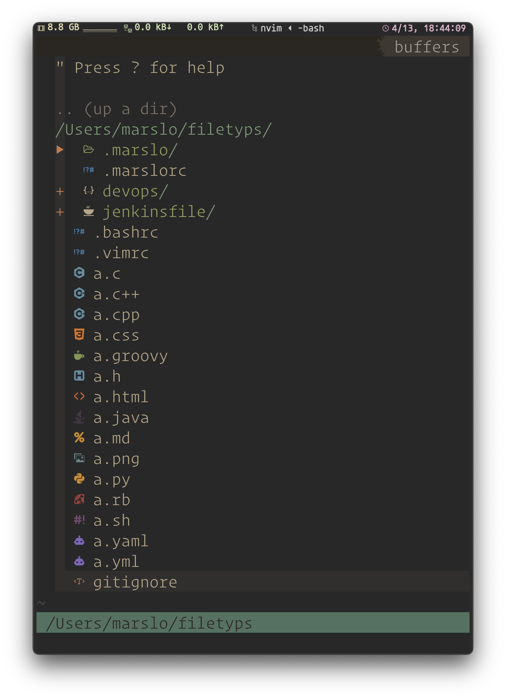<figcaption>1.3.4.21 -- nvim nerdtree devicon highlight</figcaption></figure></a>
<pre class="language-"><code class="lang-vim"><span class="token comment">&quot; ryanoasis/vim-devicons</span>
<span class="token keyword">let</span> g<span class="token punctuation">:</span>WebDevIconsOS                                                    <span class="token operator">=</span> <span class="token string">&apos;Darwin&apos;</span>
<span class="token keyword">let</span> g<span class="token punctuation">:</span>DevIconsEnableFoldersOpenClose                                   <span class="token operator">=</span> <span class="token number">1</span>
<span class="token keyword">let</span> g<span class="token punctuation">:</span>DevIconsEnableFolderExtensionPatternMatching                     <span class="token operator">=</span> <span class="token number">0</span>
<span class="token keyword">let</span> g<span class="token punctuation">:</span>DevIconsDefaultFolderOpenSymbol                                  <span class="token operator">=</span> <span class="token string">&apos;&#xF115;&apos;</span>
<span class="token keyword">let</span> g<span class="token punctuation">:</span>WebDevIconsUnicodeDecorateFolderNodesDefaultSymbol               <span class="token operator">=</span> <span class="token string">&apos;&#xF114;&apos;</span>
<span class="token keyword">let</span> g<span class="token punctuation">:</span>WebDevIconsUnicodeDecorateFileNodesExtensionSymbols              <span class="token operator">=</span> <span class="token punctuation">{</span><span class="token punctuation">}</span>
<span class="token keyword">let</span> g<span class="token punctuation">:</span>WebDevIconsUnicodeDecorateFileNodesExtensionSymbols<span class="token punctuation">[</span><span class="token string">&apos;log&apos;</span><span class="token punctuation">]</span>       <span class="token operator">=</span> <span class="token string">&apos;&#xE241;&apos;</span>
<span class="token keyword">let</span> g<span class="token punctuation">:</span>WebDevIconsUnicodeDecorateFileNodesExtensionSymbols<span class="token punctuation">[</span><span class="token string">&apos;json&apos;</span><span class="token punctuation">]</span>      <span class="token operator">=</span> <span class="token string">&apos;&#xE60B;&apos;</span>
<span class="token keyword">let</span> g<span class="token punctuation">:</span>WebDevIconsUnicodeDecorateFileNodesExtensionSymbols<span class="token punctuation">[</span><span class="token string">&apos;md&apos;</span><span class="token punctuation">]</span>        <span class="token operator">=</span> <span class="token string">&apos;&#xF295;&apos;</span>
<span class="token keyword">let</span> g<span class="token punctuation">:</span>WebDevIconsUnicodeDecorateFileNodesExtensionSymbols<span class="token punctuation">[</span><span class="token string">&apos;perm&apos;</span><span class="token punctuation">]</span>      <span class="token operator">=</span> <span class="token string">&apos;&#xF030B;&apos;</span>
<span class="token keyword">let</span> g<span class="token punctuation">:</span>WebDevIconsUnicodeDecorateFileNodesExtensionSymbols<span class="token punctuation">[</span><span class="token string">&apos;groovy&apos;</span><span class="token punctuation">]</span>    <span class="token operator">=</span> <span class="token string">&apos;&#xE005;&apos;</span>
<span class="token keyword">let</span> g<span class="token punctuation">:</span>WebDevIconsUnicodeDecorateFileNodesExtensionSymbols<span class="token punctuation">[</span><span class="token string">&apos;sh&apos;</span><span class="token punctuation">]</span>        <span class="token operator">=</span> <span class="token string">&apos;&#xF1183;&apos;</span>
<span class="token keyword">let</span> g<span class="token punctuation">:</span>WebDevIconsUnicodeDecorateFileNodesExtensionSymbols<span class="token punctuation">[</span><span class="token string">&apos;yaml&apos;</span><span class="token punctuation">]</span>      <span class="token operator">=</span> <span class="token string">&apos;&#xF16A5;&apos;</span>
<span class="token keyword">let</span> g<span class="token punctuation">:</span>WebDevIconsUnicodeDecorateFileNodesExtensionSymbols<span class="token punctuation">[</span><span class="token string">&apos;yml&apos;</span><span class="token punctuation">]</span>       <span class="token operator">=</span> <span class="token string">&apos;&#xF16A5;&apos;</span>
<span class="token keyword">let</span> g<span class="token punctuation">:</span>WebDevIconsUnicodeDecorateFileNodesExtensionSymbols<span class="token punctuation">[</span><span class="token string">&apos;gitcommit&apos;</span><span class="token punctuation">]</span> <span class="token operator">=</span> <span class="token string">&apos;&#xF1D3;&apos;</span>
<span class="token keyword">let</span> g<span class="token punctuation">:</span>WebDevIconsUnicodeDecorateFileNodesExactSymbols                  <span class="token operator">=</span> <span class="token punctuation">{</span><span class="token punctuation">}</span>
<span class="token keyword">let</span> g<span class="token punctuation">:</span>WebDevIconsUnicodeDecorateFileNodesExactSymbols<span class="token punctuation">[</span><span class="token string">&apos;jenkinsfile&apos;</span><span class="token punctuation">]</span>   <span class="token operator">=</span> <span class="token string">&apos;&#xE204;&apos;</span>
<span class="token keyword">let</span> g<span class="token punctuation">:</span>WebDevIconsUnicodeDecorateFileNodesExactSymbols<span class="token punctuation">[</span><span class="token string">&apos;devops&apos;</span><span class="token punctuation">]</span>        <span class="token operator">=</span> <span class="token string">&apos;&#xF0626;&apos;</span>
<span class="token keyword">let</span> g<span class="token punctuation">:</span>WebDevIconsUnicodeDecorateFileNodesExactSymbols<span class="token punctuation">[</span><span class="token string">&apos;vimrc.d&apos;</span><span class="token punctuation">]</span>       <span class="token operator">=</span> <span class="token string">&apos;&#xF0DFA;&apos;</span>
<span class="token keyword">let</span> g<span class="token punctuation">:</span>WebDevIconsUnicodeDecorateFileNodesExactSymbols<span class="token punctuation">[</span><span class="token string">&apos;vars&apos;</span><span class="token punctuation">]</span>          <span class="token operator">=</span> <span class="token string">&apos;&#xF1183;&apos;</span>
<span class="token keyword">let</span> g<span class="token punctuation">:</span>WebDevIconsUnicodeDecorateFileNodesExactSymbols<span class="token punctuation">[</span><span class="token string">&apos;src&apos;</span><span class="token punctuation">]</span>           <span class="token operator">=</span> <span class="token string">&apos;&#xF0D6E;&apos;</span>
<span class="token keyword">let</span> g<span class="token punctuation">:</span>WebDevIconsUnicodeDecorateFileNodesPatternSymbols                <span class="token operator">=</span> <span class="token punctuation">{</span><span class="token punctuation">}</span>
<span class="token keyword">let</span> g<span class="token punctuation">:</span>WebDevIconsUnicodeDecorateFileNodesPatternSymbols<span class="token punctuation">[</span><span class="token string">&apos;.*ignore$&apos;</span><span class="token punctuation">]</span>   <span class="token operator">=</span> <span class="token string">&apos;&#xEA92;&apos;</span>
<span class="token keyword">let</span> g<span class="token punctuation">:</span>WebDevIconsUnicodeDecorateFileNodesPatternSymbols<span class="token punctuation">[</span><span class="token string">&apos;.*rc$&apos;</span><span class="token punctuation">]</span>       <span class="token operator">=</span> <span class="token string">&apos;&#xF1501;&apos;</span>
<span class="token keyword">let</span> g<span class="token punctuation">:</span>WebDevIconsUnicodeDecorateFileNodesPatternSymbols<span class="token punctuation">[</span><span class="token string">&apos;.*git.*$&apos;</span><span class="token punctuation">]</span>    <span class="token operator">=</span> <span class="token string">&apos;&#xF1D3;&apos;</span>
<span class="token keyword">if</span> <span class="token function">exists</span><span class="token punctuation">(</span><span class="token string">&apos;g:loaded_webdevicons&apos;</span><span class="token punctuation">)</span> | <span class="token keyword">call</span> webdevicons#<span class="token function">refresh</span><span class="token punctuation">(</span><span class="token punctuation">)</span> | <span class="token keyword">endif</span>
<span class="token builtin">autocmd</span> <span class="token keyword">filetype</span> nerdtree <span class="token keyword">set</span> conceallevel<span class="token operator">=</span><span class="token number">3</span>
<span class="token builtin">autocmd</span> <span class="token keyword">filetype</span> nerdtree <span class="token keyword">set</span> concealcursor<span class="token operator">=</span>nvic

<span class="token comment">&quot; tiagofumo/vim-nerdtree-syntax-highlight</span>
<span class="token comment">&quot; #293739 #BDBB72 #808000 #ba55d3 #183172 #0d6efd #3a346f #fd7e14 #d63384 #6c71c4</span>
<span class="token keyword">let</span> g<span class="token punctuation">:</span>NERDTreeSyntaxEnabledExtensions                 <span class="token operator">=</span> <span class="token punctuation">[</span><span class="token string">&apos;rb&apos;</span><span class="token punctuation">,</span> <span class="token string">&apos;lua&apos;</span><span class="token punctuation">,</span> <span class="token string">&apos;vim&apos;</span><span class="token punctuation">,</span> <span class="token string">&apos;sh&apos;</span><span class="token punctuation">,</span> <span class="token string">&apos;py&apos;</span><span class="token punctuation">,</span> <span class="token string">&apos;groovy&apos;</span><span class="token punctuation">,</span> <span class="token string">&apos;css&apos;</span><span class="token punctuation">,</span> <span class="token string">&apos;html&apos;</span><span class="token punctuation">,</span> <span class="token string">&apos;json&apos;</span><span class="token punctuation">,</span> <span class="token string">&apos;log&apos;</span><span class="token punctuation">]</span>
<span class="token keyword">let</span> g<span class="token punctuation">:</span>NERDTreeSyntaxEnabledExactMatches               <span class="token operator">=</span> <span class="token punctuation">[</span><span class="token string">&apos;.marslo&apos;</span><span class="token punctuation">,</span> <span class="token string">&apos;jenkins&apos;</span><span class="token punctuation">,</span> <span class="token string">&apos;virtualization&apos;</span><span class="token punctuation">,</span> <span class="token string">&apos;vimrc.d&apos;</span><span class="token punctuation">,</span> <span class="token string">&apos;devops&apos;</span><span class="token punctuation">,</span> <span class="token string">&apos;vars&apos;</span><span class="token punctuation">,</span> <span class="token string">&apos;jenkinsfile&apos;</span><span class="token punctuation">,</span> <span class="token string">&apos;.vimrc&apos;</span><span class="token punctuation">]</span>
<span class="token keyword">let</span> g<span class="token punctuation">:</span>NERDTreeExtensionHighlightColor                 <span class="token operator">=</span> <span class="token punctuation">{</span><span class="token punctuation">}</span>
<span class="token keyword">let</span> g<span class="token punctuation">:</span>NERDTreeExtensionHighlightColor<span class="token punctuation">[</span><span class="token string">&apos;groovy&apos;</span><span class="token punctuation">]</span>       <span class="token operator">=</span> <span class="token string">&apos;8FAA54&apos;</span>       <span class="token comment">&quot; #8FAA54</span>
<span class="token keyword">let</span> g<span class="token punctuation">:</span>NERDTreeExtensionHighlightColor<span class="token punctuation">[</span><span class="token string">&apos;log&apos;</span><span class="token punctuation">]</span>          <span class="token operator">=</span> <span class="token string">&apos;44788E&apos;</span>       <span class="token comment">&quot; #44788E</span>
<span class="token keyword">let</span> g<span class="token punctuation">:</span>NERDTreeExtensionHighlightColor<span class="token punctuation">[</span><span class="token string">&apos;yaml&apos;</span><span class="token punctuation">]</span>         <span class="token operator">=</span> <span class="token string">&apos;9370db&apos;</span>       <span class="token comment">&quot; #9370db</span>
<span class="token keyword">let</span> g<span class="token punctuation">:</span>NERDTreeExtensionHighlightColor<span class="token punctuation">[</span><span class="token string">&apos;yml&apos;</span><span class="token punctuation">]</span>          <span class="token operator">=</span> <span class="token string">&apos;9370db&apos;</span>       <span class="token comment">&quot; #9370db</span>
<span class="token keyword">let</span> g<span class="token punctuation">:</span>NERDTreeExtensionHighlightColor<span class="token punctuation">[</span><span class="token string">&apos;png&apos;</span><span class="token punctuation">]</span>          <span class="token operator">=</span> <span class="token string">&apos;719899&apos;</span>       <span class="token comment">&quot; #719899</span>
<span class="token keyword">let</span> g<span class="token punctuation">:</span>NERDTreeExtensionHighlightColor<span class="token punctuation">[</span><span class="token string">&apos;css&apos;</span><span class="token punctuation">]</span>          <span class="token operator">=</span> <span class="token string">&apos;fd7e14&apos;</span>       <span class="token comment">&quot; #fd7e14</span>
<span class="token keyword">let</span> g<span class="token punctuation">:</span>NERDTreeExactMatchHighlightColor                <span class="token operator">=</span> <span class="token punctuation">{</span><span class="token punctuation">}</span>
<span class="token keyword">let</span> g<span class="token punctuation">:</span>NERDTreeExactMatchHighlightColor<span class="token punctuation">[</span><span class="token string">&apos;README&apos;</span><span class="token punctuation">]</span>      <span class="token operator">=</span> <span class="token string">&apos;0099BD&apos;</span>       <span class="token comment">&quot; #0099BD</span>
<span class="token keyword">let</span> g<span class="token punctuation">:</span>NERDTreePatternMatchHighlightColor              <span class="token operator">=</span> <span class="token punctuation">{</span><span class="token punctuation">}</span>
<span class="token keyword">let</span> g<span class="token punctuation">:</span>NERDTreePatternMatchHighlightColor<span class="token punctuation">[</span><span class="token string">&apos;.*rc$&apos;</span><span class="token punctuation">]</span>     <span class="token operator">=</span> <span class="token string">&apos;616E88&apos;</span>       <span class="token comment">&quot; #616E88</span>
<span class="token keyword">let</span> g<span class="token punctuation">:</span>NERDTreePatternMatchHighlightColor<span class="token punctuation">[</span><span class="token string">&apos;.*git.*$&apos;</span><span class="token punctuation">]</span>  <span class="token operator">=</span> <span class="token string">&apos;6c71c4&apos;</span>       <span class="token comment">&quot; #6c71c4</span>
<span class="token keyword">let</span> g<span class="token punctuation">:</span>NERDTreePatternMatchHighlightColor<span class="token punctuation">[</span><span class="token string">&apos;.*rc$&apos;</span><span class="token punctuation">]</span>     <span class="token operator">=</span> <span class="token string">&apos;4682b4&apos;</span>       <span class="token comment">&quot; #4682b4</span>
<span class="token keyword">let</span> g<span class="token punctuation">:</span>NERDTreePatternMatchHighlightColor<span class="token punctuation">[</span><span class="token string">&apos;.*ignore$&apos;</span><span class="token punctuation">]</span> <span class="token operator">=</span> <span class="token string">&apos;cd853f&apos;</span>       <span class="token comment">&quot; #cd853f</span>
<span class="token keyword">let</span> g<span class="token punctuation">:</span>NERDTreePatternMatchHighlightColor<span class="token punctuation">[</span><span class="token string">&apos;.*\.bak$&apos;</span><span class="token punctuation">]</span>  <span class="token operator">=</span> <span class="token string">&apos;293739&apos;</span>       <span class="token comment">&quot; #293739</span>
</code></pre>
<ul>
<li><p>default settings</p>
<pre class="language-"><code class="lang-vim"><span class="token keyword">let</span> g<span class="token punctuation">:</span>WebDevIconsUnicodeDecorateFolderNodes        <span class="token operator">=</span> <span class="token number">1</span>
<span class="token keyword">let</span> g<span class="token punctuation">:</span>WebDevIconsNerdTreeAfterGlyphPadding         <span class="token operator">=</span> <span class="token string">&apos; &apos;</span>
<span class="token keyword">let</span> g<span class="token punctuation">:</span>webdevicons_enable_nerdtree                  <span class="token operator">=</span> <span class="token number">1</span>
<span class="token keyword">let</span> g<span class="token punctuation">:</span>webdevicons_enable_unite                     <span class="token operator">=</span> <span class="token number">1</span>
<span class="token keyword">let</span> g<span class="token punctuation">:</span>webdevicons_enable_vimfiler                  <span class="token operator">=</span> <span class="token number">1</span>
<span class="token keyword">let</span> g<span class="token punctuation">:</span>webdevicons_conceal_nerdtree_brackets        <span class="token operator">=</span> <span class="token number">1</span>
<span class="token keyword">let</span> g<span class="token punctuation">:</span>WebDevIconsNerdTreeGitPluginForceVAlign      <span class="token operator">=</span> <span class="token number">1</span>
<span class="token keyword">let</span> g<span class="token punctuation">:</span>DevIconsEnableFolderExtensionPatternMatching <span class="token operator">=</span> <span class="token number">0</span>

<span class="token punctuation">:</span>echo g<span class="token punctuation">:</span>WebDevIconsUnicodeDecorateFileNodesExtensionSymbols
<span class="token punctuation">{</span><span class="token string">&apos;erl&apos;</span><span class="token punctuation">:</span> <span class="token string">&apos;&#xE7B1;&apos;</span><span class="token punctuation">,</span> <span class="token string">&apos;styl&apos;</span><span class="token punctuation">:</span> <span class="token string">&apos;&#xE600;&apos;</span><span class="token punctuation">,</span> <span class="token string">&apos;db&apos;</span><span class="token punctuation">:</span> <span class="token string">&apos;&#xE706;&apos;</span><span class="token punctuation">,</span> <span class="token string">&apos;rmd&apos;</span><span class="token punctuation">:</span> <span class="token string">&apos;&#xE73E;&apos;</span><span class="token punctuation">,</span> <span class="token string">&apos;c++&apos;</span><span class="token punctuation">:</span> <span class="token string">&apos;&#xE61D;&apos;</span><span class="token punctuation">,</span> <span class="token string">&apos;pyc&apos;</span><span class="token punctuation">:</span> <span class="token string">&apos;&#xE606;&apos;</span><span class="token punctuation">,</span> <span class="token string">&apos;pyd&apos;</span><span class="token punctuation">:</span> <span class="token string">&apos;&#xE606;&apos;</span><span class="token punctuation">,</span> <span class="token string">&apos;go&apos;</span><span class="token punctuation">:</span> <span class="token string">&apos;&#xE627;&apos;</span><span class="token punctuation">,</span> <span class="token string">&apos;suo&apos;</span><span class="token punctuation">:</span>
<span class="token string">&apos;&#xE70C;&apos;</span><span class="token punctuation">,</span> <span class="token string">&apos;lua&apos;</span><span class="token punctuation">:</span> <span class="token string">&apos;&#xE620;&apos;</span><span class="token punctuation">,</span> <span class="token string">&apos;bash&apos;</span><span class="token punctuation">:</span> <span class="token string">&apos;&#xE7A2;&apos;</span><span class="token punctuation">,</span> <span class="token string">&apos;pyo&apos;</span><span class="token punctuation">:</span> <span class="token string">&apos;&#xE606;&apos;</span><span class="token punctuation">,</span> <span class="token string">&apos;mustache&apos;</span><span class="token punctuation">:</span> <span class="token string">&apos;&#xE60F;&apos;</span><span class="token punctuation">,</span> <span class="token string">&apos;gif&apos;</span><span class="token punctuation">:</span> <span class="token string">&apos;&#xE60D;&apos;</span><span class="token punctuation">,</span> <span class="token string">&apos;nix&apos;</span><span class="token punctuation">:</span> <span class="token string">&apos;&#xF313;&apos;</span><span class="token punctuation">,</span> <span class="token string">&apos;jsx&apos;</span><span class="token punctuation">:</span> <span class="token string">&apos;&#xE7BA;&apos;</span><span class="token punctuation">,</span> <span class="token string">&apos;leex&apos;</span><span class="token punctuation">:</span>
<span class="token string">&apos;&#xE62D;&apos;</span><span class="token punctuation">,</span> <span class="token string">&apos;lhs&apos;</span><span class="token punctuation">:</span> <span class="token string">&apos;&#xE61F;&apos;</span><span class="token punctuation">,</span> <span class="token string">&apos;sol&apos;</span><span class="token punctuation">:</span> <span class="token string">&apos;&#xFCB9;&apos;</span><span class="token punctuation">,</span> <span class="token string">&apos;scala&apos;</span><span class="token punctuation">:</span> <span class="token string">&apos;&#xE737;&apos;</span><span class="token punctuation">,</span> <span class="token string">&apos;zsh&apos;</span><span class="token punctuation">:</span> <span class="token string">&apos;&#xE7A2;&apos;</span><span class="token punctuation">,</span> <span class="token string">&apos;jpeg&apos;</span><span class="token punctuation">:</span> <span class="token string">&apos;&#xE60D;&apos;</span><span class="token punctuation">,</span> <span class="token string">&apos;pem&apos;</span><span class="token punctuation">:</span> <span class="token string">&apos;&#xF80A;&apos;</span><span class="token punctuation">,</span> <span class="token string">&apos;ts&apos;</span><span class="token punctuation">:</span> <span class="token string">&apos;&#xE628;&apos;</span><span class="token punctuation">,</span> &apos;xcplaygroun
<span class="token keyword">d</span><span class="token string">&apos;: &apos;</span>&#xE755;<span class="token string">&apos;, &apos;</span>fsi<span class="token string">&apos;: &apos;</span>&#xE7A7;<span class="token string">&apos;, &apos;</span>coffee<span class="token string">&apos;: &apos;</span>&#xE61B;<span class="token string">&apos;, &apos;</span>scss<span class="token string">&apos;: &apos;</span>&#xE603;<span class="token string">&apos;, &apos;</span><span class="token builtin">js</span><span class="token string">&apos;: &apos;</span>&#xE60C;<span class="token string">&apos;, &apos;</span>gitcommit<span class="token string">&apos;: &apos;</span>&#xE702;<span class="token string">&apos;, &apos;</span>xul<span class="token string">&apos;: &apos;</span>&#xE745;<span class="token string">&apos;, &apos;</span>mdx<span class="token string">&apos;: &apos;</span>&#xE73E;<span class="token string">&apos;, &apos;</span>
less<span class="token string">&apos;: &apos;</span>&#xE614;<span class="token string">&apos;, &apos;</span>fish<span class="token string">&apos;: &apos;</span>&#xE7A2;<span class="token string">&apos;, &apos;</span>htm<span class="token string">&apos;: &apos;</span>&#xE60E;<span class="token string">&apos;, &apos;</span>rb<span class="token string">&apos;: &apos;</span>&#xE791;<span class="token string">&apos;, &apos;</span><span class="token keyword">f</span>#<span class="token string">&apos;: &apos;</span>&#xE7A7;<span class="token string">&apos;, &apos;</span><span class="token keyword">c</span><span class="token string">&apos;: &apos;</span>&#xE61E;<span class="token string">&apos;, &apos;</span><span class="token keyword">d</span><span class="token string">&apos;: &apos;</span>&#xE7AF;<span class="token string">&apos;, &apos;</span>md<span class="token string">&apos;: &apos;</span>&#xF295;<span class="token string">&apos;, &apos;</span>webp<span class="token string">&apos;: &apos;</span>&#xE60D;&apos;<span class="token punctuation">,</span>
<span class="token string">&apos;h&apos;</span><span class="token punctuation">:</span> <span class="token string">&apos;&#xF0FD;&apos;</span><span class="token punctuation">,</span> <span class="token string">&apos;mli&apos;</span><span class="token punctuation">:</span> <span class="token string">&apos;&#x3BB;&apos;</span><span class="token punctuation">,</span> <span class="token string">&apos;mk&apos;</span><span class="token punctuation">:</span> <span class="token string">&apos;&#xE615;&apos;</span><span class="token punctuation">,</span> <span class="token string">&apos;rs&apos;</span><span class="token punctuation">:</span> <span class="token string">&apos;&#xE7A8;&apos;</span><span class="token punctuation">,</span> <span class="token string">&apos;haml&apos;</span><span class="token punctuation">:</span> <span class="token string">&apos;&#xE60E;&apos;</span><span class="token punctuation">,</span> <span class="token string">&apos;png&apos;</span><span class="token punctuation">:</span> <span class="token string">&apos;&#xE60D;&apos;</span><span class="token punctuation">,</span> <span class="token string">&apos;hh&apos;</span><span class="token punctuation">:</span> <span class="token string">&apos;&#xF0FD;&apos;</span><span class="token punctuation">,</span> <span class="token string">&apos;php&apos;</span><span class="token punctuation">:</span> <span class="token string">&apos;&#xE608;&apos;</span><span class="token punctuation">,</span> <span class="token string">&apos;cc&apos;</span><span class="token punctuation">:</span> <span class="token string">&apos;&#xE61D;&apos;</span><span class="token punctuation">,</span>
<span class="token string">&apos;t&apos;</span><span class="token punctuation">:</span> <span class="token string">&apos;&#xE769;&apos;</span><span class="token punctuation">,</span> <span class="token string">&apos;jl&apos;</span><span class="token punctuation">:</span> <span class="token string">&apos;&#xE624;&apos;</span><span class="token punctuation">,</span> <span class="token string">&apos;json&apos;</span><span class="token punctuation">:</span> <span class="token string">&apos;&#xE60B;&apos;</span><span class="token punctuation">,</span> <span class="token string">&apos;cljc&apos;</span><span class="token punctuation">:</span> <span class="token string">&apos;&#xE768;&apos;</span><span class="token punctuation">,</span> <span class="token string">&apos;exs&apos;</span><span class="token punctuation">:</span> <span class="token string">&apos;&#xE62D;&apos;</span><span class="token punctuation">,</span> <span class="token string">&apos;jenkinsfile&apos;</span><span class="token punctuation">:</span> <span class="token string">&apos;&#xE738;&apos;</span><span class="token punctuation">,</span> <span class="token string">&apos;hs&apos;</span><span class="token punctuation">:</span> <span class="token string">&apos;&#xE61F;&apos;</span><span class="token punctuation">,</span> <span class="token string">&apos;sql&apos;</span><span class="token punctuation">:</span> <span class="token string">&apos;&#xE706;&apos;</span><span class="token punctuation">,</span> &apos;
ico<span class="token string">&apos;: &apos;</span>&#xE60D;<span class="token string">&apos;, &apos;</span>ps1<span class="token string">&apos;: &apos;</span>&#xE7A2;<span class="token string">&apos;, &apos;</span>cs<span class="token string">&apos;: &apos;</span>&#xF81A;<span class="token string">&apos;, &apos;</span>bmp<span class="token string">&apos;: &apos;</span>&#xE60D;<span class="token string">&apos;, &apos;</span>sln<span class="token string">&apos;: &apos;</span>&#xE70C;<span class="token string">&apos;, &apos;</span>cljs<span class="token string">&apos;: &apos;</span>&#xE76A;<span class="token string">&apos;, &apos;</span>html<span class="token string">&apos;: &apos;</span>&#xE60E;<span class="token string">&apos;, &apos;</span>cpp<span class="token string">&apos;: &apos;</span>&#xE61D;<span class="token string">&apos;, &apos;</span>hrl&apos;<span class="token punctuation">:</span>
<span class="token string">&apos;&#xE7B1;&apos;</span><span class="token punctuation">,</span> <span class="token string">&apos;ml&apos;</span><span class="token punctuation">:</span> <span class="token string">&apos;&#x3BB;&apos;</span><span class="token punctuation">,</span> <span class="token string">&apos;sass&apos;</span><span class="token punctuation">:</span> <span class="token string">&apos;&#xE603;&apos;</span><span class="token punctuation">,</span> <span class="token string">&apos;vue&apos;</span><span class="token punctuation">:</span> <span class="token string">&apos;&#xFD42;&apos;</span><span class="token punctuation">,</span> <span class="token string">&apos;awk&apos;</span><span class="token punctuation">:</span> <span class="token string">&apos;&#xE7A2;&apos;</span><span class="token punctuation">,</span> <span class="token string">&apos;conf&apos;</span><span class="token punctuation">:</span> <span class="token string">&apos;&#xE615;&apos;</span><span class="token punctuation">,</span> <span class="token string">&apos;pl&apos;</span><span class="token punctuation">:</span> <span class="token string">&apos;&#xE769;&apos;</span><span class="token punctuation">,</span> <span class="token string">&apos;pm&apos;</span><span class="token punctuation">:</span> <span class="token string">&apos;&#xE769;&apos;</span><span class="token punctuation">,</span> <span class="token string">&apos;cp&apos;</span><span class="token punctuation">:</span> <span class="token string">&apos;&#xE61D;&apos;</span><span class="token punctuation">,</span> &apos;rli
<span class="token keyword">b</span><span class="token string">&apos;: &apos;</span>&#xE7A8;<span class="token string">&apos;, &apos;</span><span class="token keyword">pp</span><span class="token string">&apos;: &apos;</span>&#xF499;<span class="token string">&apos;, &apos;</span>tex<span class="token string">&apos;: &apos;</span>&#xFB68;<span class="token string">&apos;, &apos;</span>elm<span class="token string">&apos;: &apos;</span>&#xE62C;<span class="token string">&apos;, &apos;</span>jpg<span class="token string">&apos;: &apos;</span>&#xE60D;<span class="token string">&apos;, &apos;</span>toml<span class="token string">&apos;: &apos;</span>&#xE615;<span class="token string">&apos;, &apos;</span>webmanifest<span class="token string">&apos;: &apos;</span>&#xE60B;<span class="token string">&apos;, &apos;</span>mjs<span class="token string">&apos;: &apos;</span>&#xE60C;<span class="token string">&apos;, &apos;</span>s
wift<span class="token string">&apos;: &apos;</span>&#xE755;<span class="token string">&apos;, &apos;</span><span class="token keyword">r</span><span class="token string">&apos;: &apos;</span>&#xFCD2;<span class="token string">&apos;, &apos;</span><span class="token builtin">ai</span><span class="token string">&apos;: &apos;</span>&#xE7B4;<span class="token string">&apos;, &apos;</span><span class="token builtin">fs</span><span class="token string">&apos;: &apos;</span>&#xE7A7;<span class="token string">&apos;, &apos;</span>csh<span class="token string">&apos;: &apos;</span>&#xE7A2;<span class="token string">&apos;, &apos;</span>psd<span class="token string">&apos;: &apos;</span>&#xE7B8;<span class="token string">&apos;, &apos;</span>psb<span class="token string">&apos;: &apos;</span>&#xE7B8;<span class="token string">&apos;, &apos;</span>heex<span class="token string">&apos;: &apos;</span>&#xE62D;<span class="token string">&apos;, &apos;</span>rss<span class="token string">&apos;: &apos;</span>&#xE619;&apos;
<span class="token punctuation">,</span> <span class="token string">&apos;cxx&apos;</span><span class="token punctuation">:</span> <span class="token string">&apos;&#xE61D;&apos;</span><span class="token punctuation">,</span> <span class="token string">&apos;css&apos;</span><span class="token punctuation">:</span> <span class="token string">&apos;&#xE749;&apos;</span><span class="token punctuation">,</span> <span class="token string">&apos;log&apos;</span><span class="token punctuation">:</span> <span class="token string">&apos;&#xE241;&apos;</span><span class="token punctuation">,</span> <span class="token string">&apos;rake&apos;</span><span class="token punctuation">:</span> <span class="token string">&apos;&#xE791;&apos;</span><span class="token punctuation">,</span> <span class="token string">&apos;sh&apos;</span><span class="token punctuation">:</span> <span class="token string">&apos;&#xE7A2;&apos;</span><span class="token punctuation">,</span> <span class="token string">&apos;hpp&apos;</span><span class="token punctuation">:</span> <span class="token string">&apos;&#xF0FD;&apos;</span><span class="token punctuation">,</span> <span class="token string">&apos;bat&apos;</span><span class="token punctuation">:</span> <span class="token string">&apos;&#xE615;&apos;</span><span class="token punctuation">,</span> <span class="token string">&apos;fsx&apos;</span><span class="token punctuation">:</span> <span class="token string">&apos;&#xE7A7;&apos;</span><span class="token punctuation">,</span> <span class="token string">&apos;ini&apos;</span>
<span class="token punctuation">:</span> <span class="token string">&apos;&#xE615;&apos;</span><span class="token punctuation">,</span> <span class="token string">&apos;gemspec&apos;</span><span class="token punctuation">:</span> <span class="token string">&apos;&#xE791;&apos;</span><span class="token punctuation">,</span> <span class="token string">&apos;markdown&apos;</span><span class="token punctuation">:</span> <span class="token string">&apos;&#xE73E;&apos;</span><span class="token punctuation">,</span> <span class="token string">&apos;hbs&apos;</span><span class="token punctuation">:</span> <span class="token string">&apos;&#xE60F;&apos;</span><span class="token punctuation">,</span> <span class="token string">&apos;twig&apos;</span><span class="token punctuation">:</span> <span class="token string">&apos;&#xE61C;&apos;</span><span class="token punctuation">,</span> <span class="token string">&apos;rproj&apos;</span><span class="token punctuation">:</span> <span class="token string">&apos;&#xFAC5;&apos;</span><span class="token punctuation">,</span> <span class="token string">&apos;yaml&apos;</span><span class="token punctuation">:</span> <span class="token string">&apos;&#xE615;&apos;</span><span class="token punctuation">,</span> <span class="token string">&apos;fsscript&apos;</span>
<span class="token punctuation">:</span> <span class="token string">&apos;&#xE7A7;&apos;</span><span class="token punctuation">,</span> <span class="token string">&apos;ksh&apos;</span><span class="token punctuation">:</span> <span class="token string">&apos;&#xE7A2;&apos;</span><span class="token punctuation">,</span> <span class="token string">&apos;vim&apos;</span><span class="token punctuation">:</span> <span class="token string">&apos;&#xE62B;&apos;</span><span class="token punctuation">,</span> <span class="token string">&apos;ejs&apos;</span><span class="token punctuation">:</span> <span class="token string">&apos;&#xE60E;&apos;</span><span class="token punctuation">,</span> <span class="token string">&apos;clj&apos;</span><span class="token punctuation">:</span> <span class="token string">&apos;&#xE768;&apos;</span><span class="token punctuation">,</span> <span class="token string">&apos;ex&apos;</span><span class="token punctuation">:</span> <span class="token string">&apos;&#xE62D;&apos;</span><span class="token punctuation">,</span> <span class="token string">&apos;edn&apos;</span><span class="token punctuation">:</span> <span class="token string">&apos;&#xE76A;&apos;</span><span class="token punctuation">,</span> <span class="token string">&apos;slim&apos;</span><span class="token punctuation">:</span> <span class="token string">&apos;&#xE60E;&apos;</span><span class="token punctuation">,</span> <span class="token string">&apos;eex&apos;</span><span class="token punctuation">:</span> <span class="token string">&apos;&#xE62D;&apos;</span><span class="token punctuation">,</span>
<span class="token string">&apos;tsx&apos;</span><span class="token punctuation">:</span> <span class="token string">&apos;&#xE7BA;&apos;</span><span class="token punctuation">,</span> <span class="token string">&apos;dump&apos;</span><span class="token punctuation">:</span> <span class="token string">&apos;&#xE706;&apos;</span><span class="token punctuation">,</span> <span class="token string">&apos;groovy&apos;</span><span class="token punctuation">:</span> <span class="token string">&apos;&#xE775;&apos;</span><span class="token punctuation">,</span> <span class="token string">&apos;py&apos;</span><span class="token punctuation">:</span> <span class="token string">&apos;&#xE606;&apos;</span><span class="token punctuation">,</span> <span class="token string">&apos;hxx&apos;</span><span class="token punctuation">:</span> <span class="token string">&apos;&#xF0FD;&apos;</span><span class="token punctuation">,</span> <span class="token string">&apos;diff&apos;</span><span class="token punctuation">:</span> <span class="token string">&apos;&#xE728;&apos;</span><span class="token punctuation">,</span> <span class="token string">&apos;dart&apos;</span><span class="token punctuation">:</span> <span class="token string">&apos;&#xE798;&apos;</span><span class="token punctuation">,</span> <span class="token string">&apos;java&apos;</span><span class="token punctuation">:</span> <span class="token string">&apos;&#xE738;&apos;</span><span class="token punctuation">,</span> &apos;
yml<span class="token string">&apos;: &apos;</span>&#xE615;&apos;<span class="token punctuation">}</span>

<span class="token punctuation">:</span>echo g<span class="token punctuation">:</span>WebDevIconsUnicodeDecorateFileNodesExactSymbols
<span class="token punctuation">{</span><span class="token string">&apos;.vimrc&apos;</span><span class="token punctuation">:</span> <span class="token string">&apos;&#xE62B;&apos;</span><span class="token punctuation">,</span> <span class="token string">&apos;gruntfile.coffee&apos;</span><span class="token punctuation">:</span> <span class="token string">&apos;&#xE611;&apos;</span><span class="token punctuation">,</span> <span class="token string">&apos;_gvimrc&apos;</span><span class="token punctuation">:</span> <span class="token string">&apos;&#xE62B;&apos;</span><span class="token punctuation">,</span> <span class="token string">&apos;_vimrc&apos;</span><span class="token punctuation">:</span> <span class="token string">&apos;&#xE62B;&apos;</span><span class="token punctuation">,</span> <span class="token string">&apos;dropbox&apos;</span><span class="token punctuation">:</span> <span class="token string">&apos;&#xE707;&apos;</span><span class="token punctuation">,</span> <span class="token string">&apos;.gvimrc&apos;</span><span class="token punctuation">:</span> <span class="token string">&apos;&#xE62B;&apos;</span><span class="token punctuation">,</span>
 <span class="token string">&apos;license&apos;</span><span class="token punctuation">:</span> <span class="token string">&apos;&#xF030B;&apos;</span><span class="token punctuation">,</span> <span class="token string">&apos;procfile&apos;</span><span class="token punctuation">:</span> <span class="token string">&apos;&#xE607;&apos;</span><span class="token punctuation">,</span> <span class="token string">&apos;config.ru&apos;</span><span class="token punctuation">:</span> <span class="token string">&apos;&#xE791;&apos;</span><span class="token punctuation">,</span> <span class="token string">&apos;gemfile&apos;</span><span class="token punctuation">:</span> <span class="token string">&apos;&#xE791;&apos;</span><span class="token punctuation">,</span> <span class="token string">&apos;.gitignore&apos;</span><span class="token punctuation">:</span> <span class="token string">&apos;&#xE702;&apos;</span><span class="token punctuation">,</span> <span class="token string">&apos;COMMIT_EDITMSG&apos;</span>
<span class="token punctuation">:</span> <span class="token string">&apos;&#xE702;&apos;</span><span class="token punctuation">,</span> <span class="token string">&apos;src&apos;</span><span class="token punctuation">:</span> <span class="token string">&apos;&#xF121;&apos;</span><span class="token punctuation">,</span> <span class="token string">&apos;.gitmodules&apos;</span><span class="token punctuation">:</span> <span class="token string">&apos;&#xE702;&apos;</span><span class="token punctuation">,</span> <span class="token string">&apos;makefile&apos;</span><span class="token punctuation">:</span> <span class="token string">&apos;&#xE615;&apos;</span><span class="token punctuation">,</span> <span class="token string">&apos;rakefile&apos;</span><span class="token punctuation">:</span> <span class="token string">&apos;&#xE791;&apos;</span><span class="token punctuation">,</span> <span class="token string">&apos;.bashprofile&apos;</span><span class="token punctuation">:</span> <span class="token string">&apos;&#xE7A2;&apos;</span><span class="token punctuation">,</span> &apos;gulpfile
<span class="token operator">.</span>coffee<span class="token string">&apos;: &apos;</span>&#xE610;<span class="token string">&apos;, &apos;</span>gruntfile<span class="token operator">.</span><span class="token builtin">js</span><span class="token string">&apos;: &apos;</span>&#xE611;<span class="token string">&apos;, &apos;</span><span class="token operator">.</span>zshenv<span class="token string">&apos;: &apos;</span>&#xE7A2;<span class="token string">&apos;, &apos;</span>gruntfile<span class="token operator">.</span><span class="token keyword">ls</span><span class="token string">&apos;: &apos;</span>&#xE611;<span class="token string">&apos;, &apos;</span>node_modules<span class="token string">&apos;: &apos;</span>&#xE718;<span class="token string">&apos;, &apos;</span>gulpfile
<span class="token operator">.</span><span class="token builtin">js</span><span class="token string">&apos;: &apos;</span>&#xE610;<span class="token string">&apos;, &apos;</span><span class="token operator">.</span>bashrc<span class="token string">&apos;: &apos;</span>&#xE7A2;<span class="token string">&apos;, &apos;</span>robots<span class="token operator">.</span>txt<span class="token string">&apos;: &apos;</span>&#xF06A9;<span class="token string">&apos;, &apos;</span><span class="token operator">.</span>zshrc<span class="token string">&apos;: &apos;</span>&#xE7A2;<span class="token string">&apos;, &apos;</span>mix<span class="token operator">.</span>lock<span class="token string">&apos;: &apos;</span>&#xE62D;<span class="token string">&apos;, &apos;</span>gulpfile<span class="token operator">.</span><span class="token keyword">ls</span><span class="token string">&apos;: &apos;</span>&#xE610;<span class="token string">&apos;, &apos;</span>exac
<span class="token keyword">t</span><span class="token operator">-</span><span class="token keyword">match</span><span class="token operator">-</span>case<span class="token operator">-</span>sensitive<span class="token operator">-</span><span class="token number">2</span><span class="token string">&apos;: &apos;</span><span class="token number">2</span><span class="token string">&apos;, &apos;</span>docker<span class="token operator">-</span>compose<span class="token operator">.</span>yml<span class="token string">&apos;: &apos;</span>&#xE7B0;<span class="token string">&apos;, &apos;</span><span class="token operator">.</span>gitconfig<span class="token string">&apos;: &apos;</span>&#xE702;<span class="token string">&apos;, &apos;</span><span class="token operator">.</span>gitattributes<span class="token string">&apos;: &apos;</span>&#xE702;<span class="token string">&apos;, &apos;</span><span class="token keyword">r</span>
eact<span class="token operator">.</span>jsx<span class="token string">&apos;: &apos;</span>&#xE7BA;<span class="token string">&apos;, &apos;</span>exact<span class="token operator">-</span><span class="token keyword">match</span><span class="token operator">-</span>case<span class="token operator">-</span>sensitive<span class="token operator">-</span><span class="token number">1</span><span class="token operator">.</span>txt<span class="token string">&apos;: &apos;</span><span class="token number">1</span><span class="token string">&apos;, &apos;</span>dockerfile<span class="token string">&apos;: &apos;</span>&#xE7B0;<span class="token string">&apos;, &apos;</span><span class="token operator">.</span>zprofile<span class="token string">&apos;: &apos;</span>&#xE7A2;<span class="token string">&apos;, &apos;</span>cmakelis
<span class="token keyword">ts</span><span class="token operator">.</span>txt<span class="token string">&apos;: &apos;</span>&#xE615;<span class="token string">&apos;, &apos;</span><span class="token operator">.</span>ds_store<span class="token string">&apos;: &apos;</span>&#xE615;<span class="token string">&apos;, &apos;</span>favicon<span class="token operator">.</span>ico<span class="token string">&apos;: &apos;</span>&#xE623;&apos;<span class="token punctuation">}</span>
</code></pre>
</li>
</ul>
<sec data-title="full config" data-id="section1" data-show="true" data-collapse="true"><div class="panel panel-default"><div class="panel-heading"><b>full config<a class="pull-right section atTitle btn btn-default" target="section1"><span class="fa fa-angle-up"></span></a></b></div><div class="panel-collapse in" id="section1"><div class="panel-body">
<pre class="language-"><code class="lang-vim">Plug <span class="token string">&apos;ryanoasis/vim-devicons&apos;</span>
Plug <span class="token string">&apos;tiagofumo/vim-nerdtree-syntax-highlight&apos;</span>

<span class="token comment">&quot; ryanoasis/vim-devicons</span>
<span class="token keyword">let</span> g<span class="token punctuation">:</span>WebDevIconsOS                                               <span class="token operator">=</span> <span class="token string">&apos;Darwin&apos;</span>
<span class="token keyword">let</span> g<span class="token punctuation">:</span>WebDevIconsUnicodeDecorateFolderNodes                       <span class="token operator">=</span> <span class="token number">1</span>
<span class="token keyword">let</span> g<span class="token punctuation">:</span>WebDevIconsNerdTreeAfterGlyphPadding                        <span class="token operator">=</span> <span class="token string">&apos; &apos;</span>
<span class="token keyword">let</span> g<span class="token punctuation">:</span>webdevicons_enable_nerdtree                                 <span class="token operator">=</span> <span class="token number">1</span>
<span class="token keyword">let</span> g<span class="token punctuation">:</span>webdevicons_enable_unite                                    <span class="token operator">=</span> <span class="token number">1</span>
<span class="token keyword">let</span> g<span class="token punctuation">:</span>webdevicons_enable_vimfiler                                 <span class="token operator">=</span> <span class="token number">1</span>
<span class="token keyword">let</span> g<span class="token punctuation">:</span>webdevicons_conceal_nerdtree_brackets                       <span class="token operator">=</span> <span class="token number">1</span>
<span class="token keyword">let</span> g<span class="token punctuation">:</span>DevIconsEnableFoldersOpenClose                              <span class="token operator">=</span> <span class="token number">1</span>
<span class="token keyword">let</span> g<span class="token punctuation">:</span>DevIconsDefaultFolderOpenSymbol                             <span class="token operator">=</span> <span class="token string">&apos;&#xF115;&apos;</span>
<span class="token keyword">let</span> g<span class="token punctuation">:</span>WebDevIconsUnicodeDecorateFolderNodesDefaultSymbol          <span class="token operator">=</span> <span class="token string">&apos;&#xF114;&apos;</span>
<span class="token keyword">let</span> g<span class="token punctuation">:</span>DevIconsEnableFolderExtensionPatternMatching                <span class="token operator">=</span> <span class="token number">1</span>
<span class="token keyword">let</span> g<span class="token punctuation">:</span>WebDevIconsNerdTreeGitPluginForceVAlign                     <span class="token operator">=</span> <span class="token number">1</span>
<span class="token keyword">let</span> g<span class="token punctuation">:</span>WebDevIconsUnicodeDecorateFileNodesExtensionSymbols         <span class="token operator">=</span> <span class="token punctuation">{</span><span class="token punctuation">}</span>
<span class="token keyword">let</span> g<span class="token punctuation">:</span>WebDevIconsUnicodeDecorateFileNodesExtensionSymbols<span class="token punctuation">[</span><span class="token string">&apos;log&apos;</span><span class="token punctuation">]</span>  <span class="token operator">=</span> <span class="token string">&apos;&#xE241;&apos;</span>
<span class="token keyword">let</span> g<span class="token punctuation">:</span>WebDevIconsUnicodeDecorateFileNodesExtensionSymbols<span class="token punctuation">[</span><span class="token string">&apos;json&apos;</span><span class="token punctuation">]</span> <span class="token operator">=</span> <span class="token string">&apos;&#xE60B;&apos;</span>
<span class="token keyword">let</span> g<span class="token punctuation">:</span>WebDevIconsUnicodeDecorateFileNodesExtensionSymbols<span class="token punctuation">[</span><span class="token string">&apos;md&apos;</span><span class="token punctuation">]</span>   <span class="token operator">=</span> <span class="token string">&apos;&#xF295;&apos;</span>
<span class="token keyword">let</span> g<span class="token punctuation">:</span>WebDevIconsUnicodeDecorateFileNodesExactSymbols             <span class="token operator">=</span> <span class="token punctuation">{</span><span class="token punctuation">}</span>
<span class="token keyword">let</span> g<span class="token punctuation">:</span>WebDevIconsUnicodeDecorateFileNodesExactSymbols<span class="token punctuation">[</span><span class="token string">&apos;src&apos;</span><span class="token punctuation">]</span>      <span class="token operator">=</span> <span class="token string">&apos;&#xF121;&apos;</span>
<span class="token keyword">if</span> <span class="token function">exists</span><span class="token punctuation">(</span><span class="token string">&apos;g:loaded_webdevicons&apos;</span><span class="token punctuation">)</span> | <span class="token keyword">call</span> webdevicons#<span class="token function">refresh</span><span class="token punctuation">(</span><span class="token punctuation">)</span> | <span class="token keyword">endif</span>

<span class="token comment">&quot; tiagofumo/vim-nerdtree-syntax-highlight</span>
<span class="token keyword">let</span> s<span class="token punctuation">:</span>brown       <span class="token operator">=</span> <span class="token string">&quot;905532&quot;</span>                                      <span class="token comment">&quot; #905532</span>
<span class="token keyword">let</span> s<span class="token punctuation">:</span>aqua        <span class="token operator">=</span> <span class="token string">&quot;3AFFDB&quot;</span>                                      <span class="token comment">&quot; #3AFFDB</span>
<span class="token keyword">let</span> s<span class="token punctuation">:</span>blue        <span class="token operator">=</span> <span class="token string">&quot;689FB6&quot;</span>                                      <span class="token comment">&quot; #689FB6</span>
<span class="token keyword">let</span> s<span class="token punctuation">:</span>darkBlue    <span class="token operator">=</span> <span class="token string">&quot;44788E&quot;</span>                                      <span class="token comment">&quot; #44788E</span>
<span class="token keyword">let</span> s<span class="token punctuation">:</span>purple      <span class="token operator">=</span> <span class="token string">&quot;834F79&quot;</span>                                      <span class="token comment">&quot; #834F79</span>
<span class="token keyword">let</span> s<span class="token punctuation">:</span>lightPurple <span class="token operator">=</span> <span class="token string">&quot;834F79&quot;</span>                                      <span class="token comment">&quot; #834F79</span>
<span class="token keyword">let</span> s<span class="token punctuation">:</span><span class="token keyword">red</span>         <span class="token operator">=</span> <span class="token string">&quot;AE403F&quot;</span>                                      <span class="token comment">&quot; #AE403F</span>
<span class="token keyword">let</span> s<span class="token punctuation">:</span>beige       <span class="token operator">=</span> <span class="token string">&quot;F5C06F&quot;</span>                                      <span class="token comment">&quot; #F5C06F</span>
<span class="token keyword">let</span> s<span class="token punctuation">:</span>yellow      <span class="token operator">=</span> <span class="token string">&quot;F09F17&quot;</span>                                      <span class="token comment">&quot; #F09F17</span>
<span class="token keyword">let</span> s<span class="token punctuation">:</span>orange      <span class="token operator">=</span> <span class="token string">&quot;D4843E&quot;</span>                                      <span class="token comment">&quot; #D4843E</span>
<span class="token keyword">let</span> s<span class="token punctuation">:</span>darkOrange  <span class="token operator">=</span> <span class="token string">&quot;F16529&quot;</span>                                      <span class="token comment">&quot; #F16529</span>
<span class="token keyword">let</span> s<span class="token punctuation">:</span>pink        <span class="token operator">=</span> <span class="token string">&quot;CB6F6F&quot;</span>                                      <span class="token comment">&quot; #CB6F6F</span>
<span class="token keyword">let</span> s<span class="token punctuation">:</span>salmon      <span class="token operator">=</span> <span class="token string">&quot;EE6E73&quot;</span>                                      <span class="token comment">&quot; #EE6E73</span>
<span class="token keyword">let</span> s<span class="token punctuation">:</span>green       <span class="token operator">=</span> <span class="token string">&quot;8FAA54&quot;</span>                                      <span class="token comment">&quot; #8FAA54</span>
<span class="token keyword">let</span> s<span class="token punctuation">:</span>lightGreen  <span class="token operator">=</span> <span class="token string">&quot;31B53E&quot;</span>                                      <span class="token comment">&quot; #31B53E</span>
<span class="token keyword">let</span> s<span class="token punctuation">:</span>white       <span class="token operator">=</span> <span class="token string">&quot;FFFFFF&quot;</span>                                      <span class="token comment">&quot; #FFFFFF</span>
<span class="token keyword">let</span> s<span class="token punctuation">:</span>rspec_red   <span class="token operator">=</span> <span class="token string">&apos;FE405F&apos;</span>                                      <span class="token comment">&quot; #FE405F</span>
<span class="token keyword">let</span> s<span class="token punctuation">:</span>git_orange  <span class="token operator">=</span> <span class="token string">&apos;F54D27&apos;</span>                                      <span class="token comment">&quot; #F54D27</span>
<span class="token keyword">let</span> g<span class="token punctuation">:</span>NERDTreeHighlightCursorline                        <span class="token operator">=</span> <span class="token number">1</span>
<span class="token keyword">let</span> g<span class="token punctuation">:</span>NERDTreeExtensionHighlightColor                    <span class="token operator">=</span> <span class="token punctuation">{</span><span class="token punctuation">}</span>
<span class="token keyword">let</span> g<span class="token punctuation">:</span>NERDTreeExtensionHighlightColor<span class="token punctuation">[</span><span class="token string">&apos;groovy&apos;</span><span class="token punctuation">]</span>          <span class="token operator">=</span> s<span class="token punctuation">:</span>beige
<span class="token keyword">let</span> g<span class="token punctuation">:</span>NERDTreeExtensionHighlightColor<span class="token punctuation">[</span><span class="token string">&apos;md&apos;</span><span class="token punctuation">]</span>              <span class="token operator">=</span> <span class="token string">&quot;CC6666&quot;</span>
<span class="token keyword">let</span> g<span class="token punctuation">:</span>NERDTreeExactMatchHighlightColor                   <span class="token operator">=</span> <span class="token punctuation">{</span><span class="token punctuation">}</span>
<span class="token keyword">let</span> g<span class="token punctuation">:</span>NERDTreeExactMatchHighlightColor<span class="token punctuation">[</span><span class="token string">&apos;.gitignore&apos;</span><span class="token punctuation">]</span>     <span class="token operator">=</span> s<span class="token punctuation">:</span>git_orange
<span class="token keyword">let</span> g<span class="token punctuation">:</span>NERDTreePatternMatchHighlightColor                 <span class="token operator">=</span> <span class="token punctuation">{</span><span class="token punctuation">}</span>
<span class="token keyword">let</span> g<span class="token punctuation">:</span>NERDTreePatternMatchHighlightColor<span class="token punctuation">[</span><span class="token string">&apos;.*\.md$&apos;</span><span class="token punctuation">]</span>      <span class="token operator">=</span> s<span class="token punctuation">:</span>yellow
<span class="token keyword">let</span> g<span class="token punctuation">:</span>WebDevIconsDefaultFolderSymbolColor                <span class="token operator">=</span> s<span class="token punctuation">:</span>beige
<span class="token keyword">let</span> g<span class="token punctuation">:</span>WebDevIconsDefaultFileSymbolColor                  <span class="token operator">=</span> s<span class="token punctuation">:</span>darkBlue
<span class="token keyword">let</span> g<span class="token punctuation">:</span>NERDTreeSyntaxEnabledExtensions                    <span class="token operator">=</span> <span class="token punctuation">[</span><span class="token string">&apos;rb&apos;</span><span class="token punctuation">,</span> <span class="token string">&apos;sh&apos;</span><span class="token punctuation">,</span> <span class="token string">&apos;py&apos;</span><span class="token punctuation">,</span> <span class="token string">&apos;groovy&apos;</span><span class="token punctuation">,</span> <span class="token string">&apos;css&apos;</span><span class="token punctuation">,</span> <span class="token string">&apos;html&apos;</span><span class="token punctuation">]</span>
<span class="token keyword">let</span> g<span class="token punctuation">:</span>NERDTreeSyntaxEnabledExactMatches                  <span class="token operator">=</span> <span class="token punctuation">[</span><span class="token string">&apos;.marslo&apos;</span><span class="token punctuation">,</span> <span class="token string">&apos;jenkins&apos;</span><span class="token punctuation">,</span> <span class="token string">&apos;virtualization&apos;</span><span class="token punctuation">,</span> <span class="token string">&apos;devops&apos;</span><span class="token punctuation">]</span>
</code></pre>
</div></div></div></sec>
<ul>
<li><p><a href="https://github.com/zeorin/dotfiles/blob/e01cebffcd11763ac647aad160eeba861758b348/.vimrc#L850" target="_blank">more settings for vim-devicon</a> | <a href="https://github.com/zeorin/dotfiles/blob/b5bddeef0694acaf7cbb1da3e48862d1d0cd8a3e/.vimrc" target="_blank">latest</a></p>
<pre class="language-"><code class="lang-vim">Plug <span class="token string">&apos;ryanoasis/vim-devicons&apos;</span>

<span class="token keyword">let</span> g<span class="token punctuation">:</span>WebDevIconsUnicodeDecorateFolderNodes <span class="token operator">=</span> <span class="token number">1</span>
<span class="token keyword">let</span> g<span class="token punctuation">:</span>DevIconsEnableFoldersOpenClose <span class="token operator">=</span> <span class="token number">1</span>
<span class="token keyword">if</span> <span class="token function">exists</span><span class="token punctuation">(</span><span class="token string">&quot;g:loaded_webdevicons&quot;</span><span class="token punctuation">)</span> | <span class="token keyword">call</span> webdevicons#<span class="token function">refresh</span><span class="token punctuation">(</span><span class="token punctuation">)</span> | <span class="token keyword">endif</span>
augroup devicons
  <span class="token builtin">autocmd</span><span class="token operator">!</span>
  <span class="token builtin">autocmd</span> FileType nerdtree <span class="token keyword">setlocal</span> <span class="token builtin">nolist</span>
  <span class="token builtin">autocmd</span> FileType nerdtree <span class="token builtin">syntax</span> <span class="token keyword">match</span> hideBracketsInNerdTree <span class="token string">&quot;\]&quot;</span> contained conceal containedin<span class="token operator">=</span>ALL
  <span class="token builtin">autocmd</span> FileType nerdtree <span class="token builtin">syntax</span> <span class="token keyword">match</span> hideBracketsInNerdTree <span class="token string">&quot;\[&quot;</span> contained conceal containedin<span class="token operator">=</span>ALL
  <span class="token builtin">autocmd</span> FileType nerdtree <span class="token keyword">setlocal</span> conceallevel<span class="token operator">=</span><span class="token number">3</span>
  <span class="token builtin">autocmd</span> FileType nerdtree <span class="token keyword">setlocal</span> concealcursor<span class="token operator">=</span>nvic
augroup END
<span class="token keyword">function</span><span class="token operator">!</span> <span class="token function">DeviconsColors</span><span class="token punctuation">(</span>config<span class="token punctuation">)</span>
  <span class="token keyword">let</span> colors <span class="token operator">=</span> <span class="token function">keys</span><span class="token punctuation">(</span>a<span class="token punctuation">:</span>config<span class="token punctuation">)</span>
  augroup devicons_colors
    <span class="token builtin">autocmd</span><span class="token operator">!</span>
    <span class="token keyword">for</span> color <span class="token keyword">in</span> colors
      <span class="token keyword">if</span> color <span class="token operator">==</span> <span class="token string">&apos;normal&apos;</span>
        exec <span class="token string">&apos;autocmd FileType nerdtree,startify if &amp;background == &apos;&apos;dark&apos;&apos; | &apos;</span><span class="token operator">.</span>
          \ <span class="token string">&apos;highlight devicons_&apos;</span><span class="token operator">.</span>color<span class="token operator">.</span><span class="token string">&apos; guifg=&apos;</span><span class="token operator">.</span>g<span class="token punctuation">:</span><span class="token builtin">sol</span><span class="token operator">.</span>gui<span class="token operator">.</span>base01<span class="token operator">.</span><span class="token string">&apos; ctermfg=&apos;</span><span class="token operator">.</span>g<span class="token punctuation">:</span><span class="token builtin">sol</span><span class="token operator">.</span>cterm<span class="token operator">.</span>base01<span class="token operator">.</span><span class="token string">&apos; | &apos;</span><span class="token operator">.</span>
          \ <span class="token string">&apos;else | &apos;</span><span class="token operator">.</span>
          \ <span class="token string">&apos;highlight devicons_&apos;</span><span class="token operator">.</span>color<span class="token operator">.</span><span class="token string">&apos; guifg=&apos;</span><span class="token operator">.</span>g<span class="token punctuation">:</span><span class="token builtin">sol</span><span class="token operator">.</span>gui<span class="token operator">.</span>base1<span class="token operator">.</span><span class="token string">&apos; ctermfg=&apos;</span><span class="token operator">.</span>g<span class="token punctuation">:</span><span class="token builtin">sol</span><span class="token operator">.</span>cterm<span class="token operator">.</span>base1<span class="token operator">.</span><span class="token string">&apos; | &apos;</span><span class="token operator">.</span>
          \ <span class="token string">&apos;endif&apos;</span>
      <span class="token keyword">elseif</span> color <span class="token operator">==</span> <span class="token string">&apos;emphasize&apos;</span>
        exec <span class="token string">&apos;autocmd FileType nerdtree,startify if &amp;background == &apos;&apos;dark&apos;&apos; | &apos;</span><span class="token operator">.</span>
          \ <span class="token string">&apos;highlight devicons_&apos;</span><span class="token operator">.</span>color<span class="token operator">.</span><span class="token string">&apos; guifg=&apos;</span><span class="token operator">.</span>g<span class="token punctuation">:</span><span class="token builtin">sol</span><span class="token operator">.</span>gui<span class="token operator">.</span>base1<span class="token operator">.</span><span class="token string">&apos; ctermfg=&apos;</span><span class="token operator">.</span>g<span class="token punctuation">:</span><span class="token builtin">sol</span><span class="token operator">.</span>cterm<span class="token operator">.</span>base1<span class="token operator">.</span><span class="token string">&apos; | &apos;</span><span class="token operator">.</span>
          \ <span class="token string">&apos;else | &apos;</span><span class="token operator">.</span>
          \ <span class="token string">&apos;highlight devicons_&apos;</span><span class="token operator">.</span>color<span class="token operator">.</span><span class="token string">&apos; guifg=&apos;</span><span class="token operator">.</span>g<span class="token punctuation">:</span><span class="token builtin">sol</span><span class="token operator">.</span>gui<span class="token operator">.</span>base01<span class="token operator">.</span><span class="token string">&apos; ctermfg=&apos;</span><span class="token operator">.</span>g<span class="token punctuation">:</span><span class="token builtin">sol</span><span class="token operator">.</span>cterm<span class="token operator">.</span>base01<span class="token operator">.</span><span class="token string">&apos; | &apos;</span><span class="token operator">.</span>
          \ <span class="token string">&apos;endif&apos;</span>
      <span class="token keyword">else</span>
        exec <span class="token string">&apos;autocmd FileType nerdtree,startify highlight devicons_&apos;</span><span class="token operator">.</span>color<span class="token operator">.</span><span class="token string">&apos; guifg=&apos;</span><span class="token operator">.</span>g<span class="token punctuation">:</span><span class="token builtin">sol</span><span class="token operator">.</span>gui<span class="token punctuation">[</span>color<span class="token punctuation">]</span><span class="token operator">.</span><span class="token string">&apos; ctermfg=&apos;</span><span class="token operator">.</span>g<span class="token punctuation">:</span><span class="token builtin">sol</span><span class="token operator">.</span>cterm<span class="token punctuation">[</span>color<span class="token punctuation">]</span>
      <span class="token keyword">endif</span>
      exec <span class="token string">&apos;autocmd FileType nerdtree,startify syntax match devicons_&apos;</span><span class="token operator">.</span>color<span class="token operator">.</span><span class="token string">&apos; /\v&apos;</span><span class="token operator">.</span><span class="token function">join</span><span class="token punctuation">(</span>a<span class="token punctuation">:</span>config<span class="token punctuation">[</span>color<span class="token punctuation">]</span><span class="token punctuation">,</span> <span class="token string">&apos;|&apos;</span><span class="token punctuation">)</span><span class="token operator">.</span><span class="token string">&apos;/ containedin=ALL&apos;</span>
    <span class="token keyword">endfor</span>
  augroup END
<span class="token keyword">endfunction</span>
<span class="token keyword">let</span> g<span class="token punctuation">:</span>devicons_colors <span class="token operator">=</span> <span class="token punctuation">{</span>
  \<span class="token string">&apos;normal&apos;</span><span class="token punctuation">:</span> <span class="token punctuation">[</span><span class="token string">&apos;&#xE612;&apos;</span><span class="token punctuation">,</span> <span class="token string">&apos;&#xE613;&apos;</span><span class="token punctuation">,</span> <span class="token string">&apos;&#xE5FF;&apos;</span><span class="token punctuation">,</span> <span class="token string">&apos;&#xE5FE;&apos;</span><span class="token punctuation">,</span> <span class="token string">&apos;&#xE60D;&apos;</span><span class="token punctuation">]</span><span class="token punctuation">,</span>
  \<span class="token string">&apos;emphasize&apos;</span><span class="token punctuation">:</span> <span class="token punctuation">[</span><span class="token string">&apos;&#xE609;&apos;</span><span class="token punctuation">,</span> <span class="token string">&apos;&#xE60B;&apos;</span><span class="token punctuation">,</span> <span class="token string">&apos;&#xE61B;&apos;</span><span class="token punctuation">,</span> <span class="token string">&apos;&#xE61F;&apos;</span><span class="token punctuation">,</span> <span class="token string">&apos;&#xE795;&apos;</span><span class="token punctuation">,</span> <span class="token string">&apos;&#xE706;&apos;</span><span class="token punctuation">,</span> <span class="token string">&apos;&#xE7A8;&apos;</span><span class="token punctuation">,</span> <span class="token string">&apos;&#xE78F;&apos;</span><span class="token punctuation">,</span> <span class="token string">&apos;&#xE728;&apos;</span><span class="token punctuation">,</span> <span class="token string">&apos;&#xE60A;&apos;</span><span class="token punctuation">,</span> <span class="token string">&apos;&#xE615;&apos;</span><span class="token punctuation">]</span><span class="token punctuation">,</span>
  \<span class="token string">&apos;yellow&apos;</span><span class="token punctuation">:</span> <span class="token punctuation">[</span><span class="token string">&apos;&#xE60C;&apos;</span><span class="token punctuation">,</span> <span class="token string">&apos;&#xE611;&apos;</span><span class="token punctuation">,</span> <span class="token string">&apos;&#xE623;&apos;</span><span class="token punctuation">]</span><span class="token punctuation">,</span>
  \<span class="token string">&apos;orange&apos;</span><span class="token punctuation">:</span> <span class="token punctuation">[</span><span class="token string">&apos;&#xE600;&apos;</span><span class="token punctuation">,</span> <span class="token string">&apos;&#xE60E;&apos;</span><span class="token punctuation">,</span> <span class="token string">&apos;&#xE60F;&apos;</span><span class="token punctuation">,</span> <span class="token string">&apos;&#x3BB;&apos;</span><span class="token punctuation">,</span> <span class="token string">&apos;&#xE619;&apos;</span><span class="token punctuation">,</span> <span class="token string">&apos;&#xE745;&apos;</span><span class="token punctuation">]</span><span class="token punctuation">,</span>
  \<span class="token string">&apos;red&apos;</span><span class="token punctuation">:</span> <span class="token punctuation">[</span><span class="token string">&apos;&#xE791;&apos;</span><span class="token punctuation">,</span> <span class="token string">&apos;&#xE738;&apos;</span><span class="token punctuation">,</span> <span class="token string">&apos;&#xE76A;&apos;</span><span class="token punctuation">,</span> <span class="token string">&apos;&#xE7AF;&apos;</span><span class="token punctuation">,</span> <span class="token string">&apos;&#xE7B1;&apos;</span><span class="token punctuation">,</span> <span class="token string">&apos;&#xE7B4;&apos;</span><span class="token punctuation">,</span> <span class="token string">&apos;&#xE610;&apos;</span><span class="token punctuation">,</span> <span class="token string">&apos;&#xE753;&apos;</span><span class="token punctuation">,</span> <span class="token string">&apos;&#xE7B6;&apos;</span><span class="token punctuation">]</span><span class="token punctuation">,</span>
  \<span class="token string">&apos;magenta&apos;</span><span class="token punctuation">:</span> <span class="token punctuation">[</span><span class="token string">&apos;&#xE603;&apos;</span><span class="token punctuation">]</span><span class="token punctuation">,</span>
  \<span class="token string">&apos;violet&apos;</span><span class="token punctuation">:</span> <span class="token punctuation">[</span><span class="token string">&apos;&#xE608;&apos;</span><span class="token punctuation">,</span> <span class="token string">&apos;&#xE70C;&apos;</span><span class="token punctuation">,</span> <span class="token string">&apos;&#xE769;&apos;</span><span class="token punctuation">,</span> <span class="token string">&apos;&#xE607;&apos;</span><span class="token punctuation">]</span><span class="token punctuation">,</span>
  \<span class="token string">&apos;blue&apos;</span><span class="token punctuation">:</span> <span class="token punctuation">[</span><span class="token string">&apos;&#xE614;&apos;</span><span class="token punctuation">,</span> <span class="token string">&apos;&#xE606;&apos;</span><span class="token punctuation">,</span> <span class="token string">&apos;&#xE61D;&apos;</span><span class="token punctuation">,</span> <span class="token string">&apos;&#xE627;&apos;</span><span class="token punctuation">,</span> <span class="token string">&apos;&#xE7B8;&apos;</span><span class="token punctuation">,</span> <span class="token string">&apos;&#xE628;&apos;</span><span class="token punctuation">,</span> <span class="token string">&apos;&#xE707;&apos;</span><span class="token punctuation">,</span> <span class="token string">&apos;&#xE625;&apos;</span><span class="token punctuation">,</span> <span class="token string">&apos;&#xE770;&apos;</span><span class="token punctuation">,</span> <span class="token string">&apos;&#xE752;&apos;</span><span class="token punctuation">,</span> <span class="token string">&apos;&#xE750;&apos;</span><span class="token punctuation">,</span> <span class="token string">&apos;&#xE707;&apos;</span><span class="token punctuation">,</span> <span class="token string">&apos;&#xE620;&apos;</span><span class="token punctuation">]</span><span class="token punctuation">,</span>
  \<span class="token string">&apos;cyan&apos;</span><span class="token punctuation">:</span> <span class="token punctuation">[</span><span class="token string">&apos;&#xE7A7;&apos;</span><span class="token punctuation">,</span> <span class="token string">&apos;&#xE798;&apos;</span><span class="token punctuation">,</span> <span class="token string">&apos;&#xE768;&apos;</span><span class="token punctuation">,</span> <span class="token string">&apos;&#xE76A;&apos;</span><span class="token punctuation">]</span><span class="token punctuation">,</span>
  \<span class="token string">&apos;green&apos;</span><span class="token punctuation">:</span> <span class="token punctuation">[</span><span class="token string">&apos;&#xE61C;&apos;</span><span class="token punctuation">,</span> <span class="token string">&apos;&#xE7C5;&apos;</span><span class="token punctuation">,</span> <span class="token string">&apos;&#xE624;&apos;</span><span class="token punctuation">,</span> <span class="token string">&apos;&#xE718;&apos;</span><span class="token punctuation">]</span>
\<span class="token punctuation">}</span>
<span class="token keyword">call</span> <span class="token function">DeviconsColors</span><span class="token punctuation">(</span>g<span class="token punctuation">:</span>devicons_colors<span class="token punctuation">)</span>
</code></pre>
</li>
</ul>
<h2 id="rrethyvim-hexokinase"><a name="rrethyvim-hexokinase" class="anchor-navigation-ex-anchor" href="#rrethyvim-hexokinase"><i class="fa fa-link" aria-hidden="true"></i></a><a name="rrethyvim-hexokinase" class="plugin-anchor" href="#rrethyvim-hexokinase"><i class="fa fa-link" aria-hidden="true"></i></a><a href="https://github.com/RRethy/vim-hexokinase" target="_blank">RRethy/vim-hexokinase</a></h2>
<pre class="language-"><code class="lang-vim">Plug <span class="token string">&apos;rrethy/vim-hexokinase&apos;</span><span class="token punctuation">,</span> <span class="token punctuation">{</span> <span class="token string">&apos;do&apos;</span><span class="token punctuation">:</span> <span class="token string">&apos;make hexokinase&apos;</span> <span class="token punctuation">}</span>

<span class="token comment">&quot; rrethy/vim-hexokinase</span>
<span class="token keyword">let</span> g<span class="token punctuation">:</span>Hexokinase_highlighters  <span class="token operator">=</span> <span class="token punctuation">[</span> <span class="token string">&apos;backgroundfull&apos;</span> <span class="token punctuation">]</span>              <span class="token comment">&quot; available options: </span><span class="token string">&apos;virtual&apos;</span><span class="token punctuation">,</span> <span class="token string">&apos;sign_column&apos;</span><span class="token punctuation">,</span> <span class="token string">&apos;background&apos;</span><span class="token punctuation">,</span> <span class="token string">&apos;backgroundfull&apos;</span><span class="token punctuation">,</span> <span class="token string">&apos;foreground&apos;</span><span class="token punctuation">,</span> <span class="token string">&apos;foregroundfull&apos;</span>
<span class="token keyword">let</span> g<span class="token punctuation">:</span>Hexokinase_optInPatterns <span class="token operator">=</span> <span class="token punctuation">[</span>
\     <span class="token string">&apos;full_hex&apos;</span><span class="token punctuation">,</span>
\     <span class="token string">&apos;triple_hex&apos;</span><span class="token punctuation">,</span>
\     <span class="token string">&apos;rgb&apos;</span><span class="token punctuation">,</span>
\     <span class="token string">&apos;rgba&apos;</span><span class="token punctuation">,</span>
\     <span class="token string">&apos;hsl&apos;</span><span class="token punctuation">,</span>
\     <span class="token string">&apos;hsla&apos;</span><span class="token punctuation">,</span>
\     <span class="token string">&apos;colour_names&apos;</span>
\ <span class="token punctuation">]</span>
<span class="token keyword">let</span> g<span class="token punctuation">:</span>Hexokinase_ftEnabled     <span class="token operator">=</span> <span class="token punctuation">[</span> <span class="token string">&apos;css&apos;</span><span class="token punctuation">,</span> <span class="token string">&apos;html&apos;</span><span class="token punctuation">,</span> <span class="token string">&apos;javascript&apos;</span><span class="token punctuation">]</span>    <span class="token comment">&quot; not recommended</span>
</code></pre>
<h1 id="utils"><a name="utils" class="anchor-navigation-ex-anchor" href="#utils"><i class="fa fa-link" aria-hidden="true"></i></a><a name="utils" class="plugin-anchor" href="#utils"><i class="fa fa-link" aria-hidden="true"></i></a>utils</h1>
<h2 id="vim-scriptsauthorinfodetect"><a name="vim-scriptsauthorinfodetect" class="anchor-navigation-ex-anchor" href="#vim-scriptsauthorinfodetect"><i class="fa fa-link" aria-hidden="true"></i></a><a name="vim-scriptsauthorinfodetect" class="plugin-anchor" href="#vim-scriptsauthorinfodetect"><i class="fa fa-link" aria-hidden="true"></i></a><a href="https://github.com/vim-scripts/AuthorInfo" target="_blank">vim-scripts/AuthorInfoDetect</a></h2>
<pre class="language-"><code class="lang-vim">Plug <span class="token string">&apos;marslo/authorinfo&apos;</span>

<span class="token builtin">noremap</span> <span class="token operator">&lt;</span>leader<span class="token operator">&gt;</span>aid <span class="token punctuation">:</span>AuthorInfoDetect<span class="token operator">&lt;</span>CR<span class="token operator">&gt;</span>
<span class="token keyword">let</span> g<span class="token punctuation">:</span>vimrc_author <span class="token operator">=</span> <span class="token string">&apos;marslo&apos;</span>
<span class="token keyword">let</span> g<span class="token punctuation">:</span>vimrc_email  <span class="token operator">=</span> <span class="token string">&apos;marslo.jiao@gmail.com&apos;</span>
<span class="token builtin">autocmd</span> BufWritePre<span class="token punctuation">,</span> FileWritePre <span class="token operator">*</span> <span class="token punctuation">:</span>AuthorInfoDetect<span class="token operator">&lt;</span>CR<span class="token operator">&gt;</span>
<span class="token builtin">autocmd</span> BufWritePre               <span class="token operator">*</span> <span class="token punctuation">:</span>AuthorInfoDetect<span class="token operator">&lt;</span>CR<span class="token operator">&gt;</span>
</code></pre>
<h2 id="simnalamburtvim-mundo"><a name="simnalamburtvim-mundo" class="anchor-navigation-ex-anchor" href="#simnalamburtvim-mundo"><i class="fa fa-link" aria-hidden="true"></i></a><a name="simnalamburtvim-mundo" class="plugin-anchor" href="#simnalamburtvim-mundo"><i class="fa fa-link" aria-hidden="true"></i></a><a href="https://github.com/simnalamburt/vim-mundo" target="_blank">simnalamburt/vim-mundo</a></h2>
<pre class="language-"><code class="lang-vim"><span class="token comment">&quot; ~/.vimrc</span>
<span class="token keyword">if</span> <span class="token function">has</span><span class="token punctuation">(</span> <span class="token string">&apos;persistent_undo&apos;</span> <span class="token punctuation">)</span>
  <span class="token keyword">if</span> <span class="token function">has</span><span class="token punctuation">(</span><span class="token string">&apos;nvim&apos;</span><span class="token punctuation">)</span>
    <span class="token keyword">let</span> target_path <span class="token operator">=</span> <span class="token function">expand</span><span class="token punctuation">(</span> <span class="token string">&apos;~/.vim/undo&apos;</span> <span class="token punctuation">)</span>
    <span class="token keyword">set</span> undodir<span class="token operator">=</span><span class="token function">expand</span><span class="token punctuation">(</span><span class="token string">&apos;~/.vim/undo&apos;</span><span class="token punctuation">)</span>
  <span class="token keyword">else</span>
    <span class="token keyword">let</span> target_path <span class="token operator">=</span> <span class="token function">expand</span><span class="token punctuation">(</span> <span class="token string">&apos;~/.vim/undo/vundo&apos;</span> <span class="token punctuation">)</span>
  <span class="token keyword">endif</span>
  <span class="token keyword">if</span> <span class="token operator">!</span><span class="token function">isdirectory</span><span class="token punctuation">(</span> target_path <span class="token punctuation">)</span>
    <span class="token keyword">call</span> <span class="token function">system</span><span class="token punctuation">(</span> <span class="token string">&apos;mkdir -p &apos;</span> <span class="token operator">.</span> target_path <span class="token punctuation">)</span>
  <span class="token keyword">endif</span>
  <span class="token keyword">set</span> undofile
  <span class="token keyword">let</span> &amp;undodir<span class="token operator">=</span>target_path
<span class="token keyword">endif</span>
</code></pre>
<pre class="language-"><code class="lang-vim"><span class="token comment">&quot; ~/.vimrc.d/extension</span>
Plug <span class="token string">&apos;simnalamburt/vim-mundo&apos;</span>

<span class="token comment">&quot;simnalamburt/vim-mundo</span>
<span class="token builtin">noremap</span> <span class="token operator">&lt;</span>Leader<span class="token operator">&gt;</span><span class="token keyword">u</span> <span class="token punctuation">:</span>MundoToggle<span class="token operator">&lt;</span>CR<span class="token operator">&gt;</span>
<span class="token keyword">let</span> g<span class="token punctuation">:</span>mundo_prefer_python3 <span class="token operator">=</span> <span class="token number">1</span>
<span class="token keyword">let</span> g<span class="token punctuation">:</span>mundo_width          <span class="token operator">=</span> <span class="token number">26</span>
</code></pre>
<h2 id="yegappanmru"><a name="yegappanmru" class="anchor-navigation-ex-anchor" href="#yegappanmru"><i class="fa fa-link" aria-hidden="true"></i></a><a name="yegappanmru" class="plugin-anchor" href="#yegappanmru"><i class="fa fa-link" aria-hidden="true"></i></a><a href="https://github.com/yegappan/mru" target="_blank">yegappan/mru</a></h2>
<pre class="language-"><code class="lang-vim"><span class="token builtin">noremap</span> <span class="token operator">&lt;</span>leader<span class="token operator">&gt;</span>re <span class="token punctuation">:</span>MRU<span class="token operator">&lt;</span>CR<span class="token operator">&gt;</span>
<span class="token keyword">let</span> MRU_Auto_Close    <span class="token operator">=</span> <span class="token number">1</span>                                           <span class="token comment">&quot; most recently used(mru)</span>
<span class="token keyword">let</span> MRU_Max_Entries   <span class="token operator">=</span> <span class="token number">10</span>
<span class="token keyword">let</span> MRU_Exclude_Files <span class="token operator">=</span> <span class="token string">&apos;^/tmp/.*\|^/temp/.*\|^/media/.*\|^/mnt/.*&apos;</span>
</code></pre>
<h2 id="amitds1997remote-nvimnvim"><a name="amitds1997remote-nvimnvim" class="anchor-navigation-ex-anchor" href="#amitds1997remote-nvimnvim"><i class="fa fa-link" aria-hidden="true"></i></a><a name="amitds1997remote-nvimnvim" class="plugin-anchor" href="#amitds1997remote-nvimnvim"><i class="fa fa-link" aria-hidden="true"></i></a><a href="https://github.com/amitds1997/remote-nvim.nvim" target="_blank">amitds1997/remote-nvim.nvim</a></h2>
<blockquote>
<p>[!NOTE|label:references:]</p>
<ul>
<li><a href="https://github.com/neovim/neovim/issues/21635" target="_blank">#21635 remote ssh plugin (like vscode remote-ssh)</a></li>
<li><a href="https://github.com/DanielWeidinger/nvim-sshfs" target="_blank">DanielWeidinger/nvim-sshfs</a></li>
<li><a href="https://github.com/ipod825/ranger.nvim" target="_blank">ipod825/ranger.nvim</a> | <a href="https://github.com/ipod825/vim-netranger" target="_blank">ipod825/vim-netranger</a></li>
<li><a href="https://codeberg.org/ashwinvis/ssh.nvim" target="_blank">ashwinvis/ssh.nvim</a></li>
</ul>
</blockquote>
<h1 id="markdown"><a name="markdown" class="anchor-navigation-ex-anchor" href="#markdown"><i class="fa fa-link" aria-hidden="true"></i></a><a name="markdown" class="plugin-anchor" href="#markdown"><i class="fa fa-link" aria-hidden="true"></i></a>markdown</h1>
<h2 id="preservimvim-markdown"><a name="preservimvim-markdown" class="anchor-navigation-ex-anchor" href="#preservimvim-markdown"><i class="fa fa-link" aria-hidden="true"></i></a><a name="preservimvim-markdown" class="plugin-anchor" href="#preservimvim-markdown"><i class="fa fa-link" aria-hidden="true"></i></a><a href="https://github.com/preservim/vim-markdown" target="_blank">preservim/vim-markdown</a></h2>
<pre class="language-"><code class="lang-vim">Plug <span class="token string">&apos;preservim/vim-markdown&apos;</span>

<span class="token comment">&quot; preservim/vim-markdown</span>
<span class="token keyword">let</span> g<span class="token punctuation">:</span>vim_markdown_toc_autofit          <span class="token operator">=</span> <span class="token number">1</span>
<span class="token keyword">let</span> g<span class="token punctuation">:</span>vim_markdown_conceal              <span class="token operator">=</span> <span class="token number">0</span>
<span class="token keyword">let</span> g<span class="token punctuation">:</span>vim_markdown_conceal_code_blocks  <span class="token operator">=</span> <span class="token number">0</span>
<span class="token keyword">let</span> g<span class="token punctuation">:</span>vim_markdown_strikethrough        <span class="token operator">=</span> <span class="token number">1</span>
<span class="token keyword">let</span> g<span class="token punctuation">:</span>vim_markdown_folding_disabled     <span class="token operator">=</span> <span class="token number">1</span>                         <span class="token comment">&quot; =1 to disable folding</span>
<span class="token keyword">let</span> g<span class="token punctuation">:</span>vim_markdown_new_list_item_indent <span class="token operator">=</span> <span class="token number">2</span>
</code></pre>
<ul>
<li>other configurations<pre class="language-"><code class="lang-vim"><span class="token keyword">let</span> g<span class="token punctuation">:</span>vim_markdown_frontmatter        <span class="token operator">=</span> <span class="token number">1</span>
<span class="token keyword">let</span> g<span class="token punctuation">:</span>vim_markdown_json_frontmatter   <span class="token operator">=</span> <span class="token number">1</span>
<span class="token keyword">let</span> g<span class="token punctuation">:</span>vim_markdown_autowrite          <span class="token operator">=</span> <span class="token number">1</span>
<span class="token keyword">let</span> g<span class="token punctuation">:</span>vim_markdown_follow_anchor      <span class="token operator">=</span> <span class="token number">1</span>
<span class="token keyword">let</span> g<span class="token punctuation">:</span>vim_markdown_anchorexpr         <span class="token operator">=</span> <span class="token string">&quot;&apos;&lt;&lt;&apos;.v:anchor.&apos;&gt;&gt;&apos;&quot;</span>
</code></pre>
</li>
</ul>
<h2 id="dhruvasagarvim-table-mode"><a name="dhruvasagarvim-table-mode" class="anchor-navigation-ex-anchor" href="#dhruvasagarvim-table-mode"><i class="fa fa-link" aria-hidden="true"></i></a><a name="dhruvasagarvim-table-mode" class="plugin-anchor" href="#dhruvasagarvim-table-mode"><i class="fa fa-link" aria-hidden="true"></i></a><a href="https://github.com/dhruvasagar/vim-table-mode" target="_blank">dhruvasagar/vim-table-mode</a></h2>
<pre class="language-"><code class="lang-vim">Plug <span class="token string">&apos;dhruvasagar/vim-table-mode&apos;</span>

<span class="token builtin">noremap</span> <span class="token operator">&lt;</span>Leader<span class="token operator">&gt;</span><span class="token keyword">tm</span> <span class="token punctuation">:</span>TableModeToggle<span class="token operator">&lt;</span>CR<span class="token operator">&gt;</span>
<span class="token keyword">let</span> g<span class="token punctuation">:</span>tabular_loaded             <span class="token operator">=</span> <span class="token number">1</span>
<span class="token keyword">let</span> g<span class="token punctuation">:</span>table_mode_corner          <span class="token operator">=</span> <span class="token string">&apos;|&apos;</span>
<span class="token keyword">let</span> g<span class="token punctuation">:</span>table_mode_header_fillchar <span class="token operator">=</span> <span class="token string">&apos;-&apos;</span>
<span class="token keyword">let</span> g<span class="token punctuation">:</span>table_mode_align_char      <span class="token operator">=</span> <span class="token string">&quot;:&quot;</span>
<span class="token keyword">let</span> g<span class="token punctuation">:</span>table_mode_corner          <span class="token operator">=</span> <span class="token string">&quot;|&quot;</span>
<span class="token keyword">let</span> g<span class="token punctuation">:</span>table_mode_align_char      <span class="token operator">=</span> <span class="token string">&quot;:&quot;</span>
<span class="token comment">&quot; let g:table_mode_corner_corner = </span><span class="token string">&apos;+&apos;</span>
</code></pre>
<ul>
<li>automatic alignment table in markdown<pre class="language-"><code class="lang-vim"><span class="token keyword">function</span><span class="token operator">!</span> s<span class="token punctuation">:</span><span class="token function">isAtStartOfLine</span><span class="token punctuation">(</span>mapping<span class="token punctuation">)</span>
  <span class="token keyword">let</span> text_before_cursor <span class="token operator">=</span> <span class="token function">getline</span><span class="token punctuation">(</span><span class="token string">&apos;.&apos;</span><span class="token punctuation">)</span><span class="token punctuation">[</span><span class="token number">0</span> <span class="token punctuation">:</span> <span class="token function">col</span><span class="token punctuation">(</span><span class="token string">&apos;.&apos;</span><span class="token punctuation">)</span><span class="token operator">-</span><span class="token number">1</span><span class="token punctuation">]</span>
  <span class="token keyword">let</span> mapping_pattern <span class="token operator">=</span> <span class="token string">&apos;\V&apos;</span> <span class="token operator">.</span> <span class="token function">escape</span><span class="token punctuation">(</span>a<span class="token punctuation">:</span>mapping<span class="token punctuation">,</span> <span class="token string">&apos;\&apos;</span><span class="token punctuation">)</span>
  <span class="token keyword">let</span> comment_pattern <span class="token operator">=</span> <span class="token string">&apos;\V&apos;</span> <span class="token operator">.</span> <span class="token function">escape</span><span class="token punctuation">(</span><span class="token function">substitute</span><span class="token punctuation">(</span>&amp;<span class="token keyword">l</span><span class="token punctuation">:</span><span class="token builtin">commentstring</span><span class="token punctuation">,</span> <span class="token string">&apos;%s.*$&apos;</span><span class="token punctuation">,</span> <span class="token string">&apos;&apos;</span><span class="token punctuation">,</span> <span class="token string">&apos;&apos;</span><span class="token punctuation">)</span><span class="token punctuation">,</span> <span class="token string">&apos;\&apos;</span><span class="token punctuation">)</span>
  <span class="token keyword">return</span> <span class="token punctuation">(</span>text_before_cursor <span class="token operator">=~?</span> <span class="token string">&apos;^&apos;</span> <span class="token operator">.</span> <span class="token punctuation">(</span><span class="token string">&apos;\v(&apos;</span> <span class="token operator">.</span> comment_pattern <span class="token operator">.</span> <span class="token string">&apos;\v)?&apos;</span><span class="token punctuation">)</span> <span class="token operator">.</span> <span class="token string">&apos;\s*\v&apos;</span> <span class="token operator">.</span> mapping_pattern <span class="token operator">.</span> <span class="token string">&apos;\v$&apos;</span><span class="token punctuation">)</span>
<span class="token keyword">endfunction</span>
<span class="token keyword">inoreabbrev</span> <span class="token operator">&lt;</span>expr<span class="token operator">&gt;</span> <span class="token operator">&lt;</span>bar<span class="token operator">&gt;</span><span class="token operator">&lt;</span>bar<span class="token operator">&gt;</span>
          \ <span class="token operator">&lt;</span>SID<span class="token operator">&gt;</span><span class="token function">isAtStartOfLine</span><span class="token punctuation">(</span><span class="token string">&apos;\|\|&apos;</span><span class="token punctuation">)</span> <span class="token operator">?</span>
          \ <span class="token string">&apos;&lt;c-o&gt;:TableModeEnable&lt;cr&gt;&lt;bar&gt;&lt;space&gt;&lt;bar&gt;&lt;left&gt;&lt;left&gt;&apos;</span> <span class="token punctuation">:</span> <span class="token string">&apos;&lt;bar&gt;&lt;bar&gt;&apos;</span>
<span class="token keyword">inoreabbrev</span> <span class="token operator">&lt;</span>expr<span class="token operator">&gt;</span> __
          \ <span class="token operator">&lt;</span>SID<span class="token operator">&gt;</span><span class="token function">isAtStartOfLine</span><span class="token punctuation">(</span><span class="token string">&apos;__&apos;</span><span class="token punctuation">)</span> <span class="token operator">?</span>
          \ <span class="token string">&apos;&lt;c-o&gt;:silent! TableModeDisable&lt;cr&gt;&apos;</span> <span class="token punctuation">:</span> <span class="token string">&apos;__&apos;</span>
</code></pre>
</li>
</ul>
<h2 id="godlygeektabular"><a name="godlygeektabular" class="anchor-navigation-ex-anchor" href="#godlygeektabular"><i class="fa fa-link" aria-hidden="true"></i></a><a name="godlygeektabular" class="plugin-anchor" href="#godlygeektabular"><i class="fa fa-link" aria-hidden="true"></i></a><a href="https://github.com/godlygeek/tabular" target="_blank">godlygeek/tabular</a></h2>
<pre class="language-"><code class="lang-vim">Plug <span class="token string">&apos;godlygeek/tabular&apos;</span>

<span class="token comment">&quot; settings</span>
<span class="token keyword">if</span> <span class="token function">exists</span><span class="token punctuation">(</span><span class="token string">&quot;:Tabularize&quot;</span><span class="token punctuation">)</span>
  nmap <span class="token operator">&lt;</span>Leader<span class="token operator">&gt;</span>a<span class="token operator">=</span> <span class="token punctuation">:</span>Tabularize <span class="token operator">/</span><span class="token operator">=</span><span class="token operator">&lt;</span>CR<span class="token operator">&gt;</span>
  vmap <span class="token operator">&lt;</span>Leader<span class="token operator">&gt;</span>a<span class="token operator">=</span> <span class="token punctuation">:</span>Tabularize <span class="token operator">/</span><span class="token operator">=</span><span class="token operator">&lt;</span>CR<span class="token operator">&gt;</span>
  nmap <span class="token operator">&lt;</span>leader<span class="token operator">&gt;</span>a<span class="token punctuation">:</span> <span class="token punctuation">:</span>Tabularize <span class="token operator">/</span><span class="token punctuation">:</span>\zs<span class="token operator">&lt;</span>CR<span class="token operator">&gt;</span>
  vmap <span class="token operator">&lt;</span>leader<span class="token operator">&gt;</span>a<span class="token punctuation">:</span> <span class="token punctuation">:</span>Tabularize <span class="token operator">/</span><span class="token punctuation">:</span>\zs<span class="token operator">&lt;</span>CR<span class="token operator">&gt;</span>
  inoremap <span class="token operator">&lt;</span><span class="token keyword">silent</span><span class="token operator">&gt;</span> <span class="token operator">&lt;</span>Bar<span class="token operator">&gt;</span>   <span class="token operator">&lt;</span>Bar<span class="token operator">&gt;</span><span class="token operator">&lt;</span>Esc<span class="token operator">&gt;</span><span class="token punctuation">:</span><span class="token keyword">call</span> <span class="token operator">&lt;</span>SID<span class="token operator">&gt;</span><span class="token function">table_auto_align</span><span class="token punctuation">(</span><span class="token punctuation">)</span><span class="token operator">&lt;</span>CR<span class="token operator">&gt;</span>
<span class="token keyword">endif</span>
</code></pre>
<ul>
<li><a href="https://github.com/marslo/dotfiles/blob/main/.marslo/vimrc.d/functions#L119" target="_blank">function for auto-alignment</a><pre class="language-"><code class="lang-bash">function<span class="token operator">!</span> s:table_auto_align<span class="token punctuation">(</span><span class="token punctuation">)</span>
  <span class="token builtin class-name">let</span> p <span class="token operator">=</span> <span class="token string">&apos;^\s*|\s.*\s|\s*$&apos;</span>
  <span class="token keyword">if</span> exists<span class="token punctuation">(</span><span class="token string">&apos;:Tabularize&apos;</span><span class="token punctuation">)</span> <span class="token operator">&amp;&amp;</span> getline<span class="token punctuation">(</span><span class="token string">&apos;.&apos;</span><span class="token punctuation">)</span> <span class="token operator">=~</span><span class="token comment"># &apos;^\s*|&apos;</span>
    <span class="token punctuation">\</span> <span class="token operator">&amp;&amp;</span> <span class="token punctuation">(</span>getline<span class="token punctuation">(</span>line<span class="token punctuation">(</span><span class="token string">&apos;.&apos;</span><span class="token punctuation">)</span>-1<span class="token punctuation">)</span> <span class="token operator">=~</span><span class="token comment"># p || getline(line(&apos;.&apos;)+1) =~# p)</span>
    <span class="token builtin class-name">let</span> <span class="token function">column</span> <span class="token operator">=</span> strlen<span class="token punctuation">(</span>substitute<span class="token punctuation">(</span>getline<span class="token punctuation">(</span><span class="token string">&apos;.&apos;</span><span class="token punctuation">)</span><span class="token punctuation">[</span><span class="token number">0</span>:col<span class="token punctuation">(</span><span class="token string">&apos;.&apos;</span><span class="token punctuation">)</span><span class="token punctuation">]</span>,<span class="token string">&apos;[^|]&apos;</span>,<span class="token string">&apos;&apos;</span>,<span class="token string">&apos;g&apos;</span><span class="token punctuation">))</span>
    <span class="token builtin class-name">let</span> position <span class="token operator">=</span> strlen<span class="token punctuation">(</span>matchstr<span class="token punctuation">(</span>getline<span class="token punctuation">(</span><span class="token string">&apos;.&apos;</span><span class="token punctuation">)</span><span class="token punctuation">[</span><span class="token number">0</span>:col<span class="token punctuation">(</span><span class="token string">&apos;.&apos;</span><span class="token punctuation">)</span><span class="token punctuation">]</span>,<span class="token string">&apos;.*|\s*\zs.*&apos;</span><span class="token punctuation">))</span>
    Tabularize/<span class="token operator">|</span>/l1
    normal<span class="token operator">!</span> <span class="token number">0</span>
    call search<span class="token punctuation">(</span>repeat<span class="token punctuation">(</span><span class="token string">&apos;[^|]*|&apos;</span>,column<span class="token punctuation">)</span>.<span class="token string">&apos;\s\{-\}&apos;</span>.repeat<span class="token punctuation">(</span><span class="token string">&apos;.&apos;</span>,position<span class="token punctuation">)</span>,<span class="token string">&apos;ce&apos;</span>,line<span class="token punctuation">(</span><span class="token string">&apos;.&apos;</span><span class="token punctuation">))</span>
  endif
endfunction
</code></pre>
</li>
</ul>
<h1 id="git"><a name="git" class="anchor-navigation-ex-anchor" href="#git"><i class="fa fa-link" aria-hidden="true"></i></a><a name="git" class="plugin-anchor" href="#git"><i class="fa fa-link" aria-hidden="true"></i></a>git</h1>
<ul>
<li>call bash cmd in silent mode<pre class="language-"><code class="lang-vim">nnoremap <span class="token operator">&lt;</span>leader<span class="token operator">&gt;</span><span class="token builtin">mp</span>  <span class="token punctuation">:</span>execute <span class="token string">&apos;silent !git push --force&apos;</span> \| <span class="token keyword">redraw</span><span class="token operator">!</span><span class="token operator">&lt;</span>CR<span class="token operator">&gt;</span>
<span class="token comment">&quot; or to call gitalias</span>
nnoremap <span class="token operator">&lt;</span>leader<span class="token operator">&gt;</span><span class="token builtin">mp</span>  <span class="token punctuation">:</span>execute <span class="token string">&apos;silent !git mp&apos;</span> \| <span class="token keyword">redraw</span><span class="token operator">!</span><span class="token operator">&lt;</span>CR<span class="token operator">&gt;</span>
</code></pre>
</li>
</ul>
<a href="../../screenshot/vim/nvim-git-blamer-blame.gif"><figure id="fig1.3.4.22">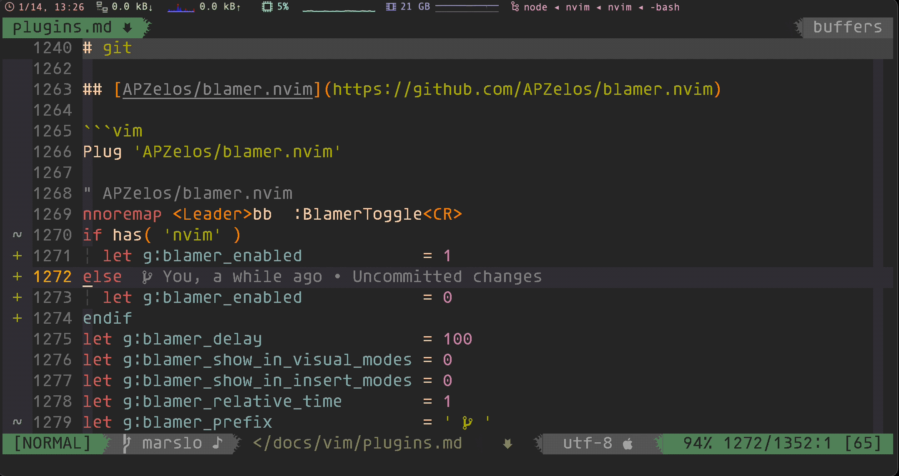<figcaption>1.3.4.22 -- git blamer blame</figcaption></figure></a>
<h2 id="airbladevim-gitgutter"><a name="airbladevim-gitgutter" class="anchor-navigation-ex-anchor" href="#airbladevim-gitgutter"><i class="fa fa-link" aria-hidden="true"></i></a><a name="airbladevim-gitgutter" class="plugin-anchor" href="#airbladevim-gitgutter"><i class="fa fa-link" aria-hidden="true"></i></a><a href="https://github.com/airblade/vim-gitgutter" target="_blank">airblade/vim-gitgutter</a></h2>
<blockquote>
<p>[!NOTE|label:references:]</p>
<ul>
<li><a href="https://jisaacks.github.io/GitGutter/" target="_blank">GitGutter Documentation</a></li>
<li><a href="https://github.com/airblade/vim-gitgutter/issues/409" target="_blank">Can&apos;t enable gitgutter with GitGutterEnable after disabling it on startup</a></li>
<li><a href="https://github.com/airblade/vim-gitgutter/issues/579" target="_blank">How to display in real time</a></li>
</ul>
</blockquote>
<pre class="language-"><code class="lang-vim">Plug <span class="token string">&apos;airblade/vim-gitgutter&apos;</span>

<span class="token comment">&quot; airblade/vim-gitgutter</span>
<span class="token keyword">set</span> <span class="token builtin">updatetime</span><span class="token operator">=</span><span class="token number">250</span>
<span class="token keyword">set</span> signcolumn<span class="token operator">=</span>yes
<span class="token keyword">let</span> g<span class="token punctuation">:</span>gitgutter_enabled          <span class="token operator">=</span> <span class="token number">1</span>
<span class="token keyword">let</span> g<span class="token punctuation">:</span>gitgutter_realtime         <span class="token operator">=</span> <span class="token number">0</span>
<span class="token keyword">let</span> g<span class="token punctuation">:</span>gitgutter_eager            <span class="token operator">=</span> <span class="token number">0</span>
<span class="token keyword">if</span> <span class="token function">has</span><span class="token punctuation">(</span><span class="token string">&apos;win32&apos;</span><span class="token punctuation">)</span> <span class="token operator">||</span> <span class="token function">has</span><span class="token punctuation">(</span><span class="token string">&apos;win64&apos;</span><span class="token punctuation">)</span>
  <span class="token keyword">let</span> g<span class="token punctuation">:</span>gitgutter_git_executable <span class="token operator">=</span> <span class="token string">&apos;c:\iMarslo\myprograms\Git\bin\git.exe&apos;</span>
<span class="token keyword">else</span>
  <span class="token keyword">let</span> g<span class="token punctuation">:</span>gitgutter_git_executable <span class="token operator">=</span> <span class="token string">&apos;/usr/local/bin/git&apos;</span>
<span class="token keyword">endif</span>
<span class="token builtin">highlight</span> clear SignColumn
</code></pre>
<ul>
<li><p>shortcuts</p>
<pre class="language-"><code class="lang-vim"><span class="token builtin">noremap</span>  <span class="token punctuation">]</span><span class="token keyword">h</span> <span class="token punctuation">:</span>GitGutterNextHunk<span class="token operator">&lt;</span>CR<span class="token operator">&gt;</span>
<span class="token builtin">noremap</span>  <span class="token punctuation">[</span><span class="token keyword">h</span> <span class="token punctuation">:</span>GitGutterPrevHunk<span class="token operator">&lt;</span>CR<span class="token operator">&gt;</span>
</code></pre>
<ul>
<li><code>:GitGutterNextHunk<span class="token tag"><span class="token tag"><span class="token punctuation">&lt;</span>CR</span><span class="token punctuation">&gt;</span></span></code> : <kbd>]</kbd> + <kbd>h</kbd></li>
<li><code>:GitGutterPrevHunk<span class="token tag"><span class="token tag"><span class="token punctuation">&lt;</span>CR</span><span class="token punctuation">&gt;</span></span></code> : <kbd>[</kbd> + <kbd>h</kbd></li>
</ul>
</li>
</ul>
<h2 id="tpopevim-fugitive"><a name="tpopevim-fugitive" class="anchor-navigation-ex-anchor" href="#tpopevim-fugitive"><i class="fa fa-link" aria-hidden="true"></i></a><a name="tpopevim-fugitive" class="plugin-anchor" href="#tpopevim-fugitive"><i class="fa fa-link" aria-hidden="true"></i></a><a href="https://github.com/tpope/vim-fugitive" target="_blank">tpope/vim-fugitive</a></h2>
<pre class="language-"><code class="lang-vim">Plug <span class="token string">&apos;tpope/vim-fugitive&apos;</span>

<span class="token comment">&quot; fugitive</span>
nnoremap <span class="token operator">&lt;</span>leader<span class="token operator">&gt;</span><span class="token builtin">mp</span> <span class="token punctuation">:</span><span class="token keyword">silent</span> exec <span class="token string">&apos;! git mp&apos;</span><span class="token operator">&lt;</span>CR<span class="token operator">&gt;</span>
nnoremap <span class="token operator">&lt;</span>Leader<span class="token operator">&gt;</span>ga <span class="token punctuation">:</span>Git add <span class="token operator">%</span><span class="token punctuation">:</span><span class="token keyword">p</span><span class="token operator">&lt;</span>CR<span class="token operator">&gt;</span><span class="token operator">&lt;</span>CR<span class="token operator">&gt;</span>
nnoremap <span class="token operator">&lt;</span>Leader<span class="token operator">&gt;</span>gs <span class="token punctuation">:</span>Gstatus<span class="token operator">&lt;</span>CR<span class="token operator">&gt;</span>
nnoremap <span class="token operator">&lt;</span>leader<span class="token operator">&gt;</span>gl <span class="token punctuation">:</span><span class="token keyword">silent</span><span class="token operator">!</span> Glog<span class="token operator">&lt;</span>CR<span class="token operator">&gt;</span><span class="token punctuation">:</span>bot <span class="token keyword">copen</span><span class="token operator">&lt;</span>CR<span class="token operator">&gt;</span>
nnoremap <span class="token operator">&lt;</span>leader<span class="token operator">&gt;</span><span class="token builtin">gp</span> <span class="token punctuation">:</span>Ggrep<span class="token operator">&lt;</span>Space<span class="token operator">&gt;</span>
nnoremap <span class="token operator">&lt;</span>leader<span class="token operator">&gt;</span>gb <span class="token punctuation">:</span>Git branch<span class="token operator">&lt;</span>Space<span class="token operator">&gt;</span>
nnoremap <span class="token operator">&lt;</span>leader<span class="token operator">&gt;</span><span class="token keyword">go</span> <span class="token punctuation">:</span>Git checkout<span class="token operator">&lt;</span>Space<span class="token operator">&gt;</span>
nnoremap <span class="token operator">&lt;</span>leader<span class="token operator">&gt;</span>gc <span class="token punctuation">:</span>Git commit <span class="token operator">-</span>am <span class="token string">&quot;&quot;</span><span class="token operator">&lt;</span>Left<span class="token operator">&gt;</span>
command<span class="token operator">!</span> <span class="token operator">-</span>bar <span class="token operator">-</span>nargs<span class="token operator">=</span><span class="token operator">*</span> Gpull execute <span class="token string">&apos;Git pull&apos;</span>
command<span class="token operator">!</span> <span class="token operator">-</span>bar <span class="token operator">-</span>nargs<span class="token operator">=</span><span class="token operator">*</span> Gpush execute <span class="token string">&apos;Git push&apos;</span>
</code></pre>
<h2 id="apzelosblamernvim"><a name="apzelosblamernvim" class="anchor-navigation-ex-anchor" href="#apzelosblamernvim"><i class="fa fa-link" aria-hidden="true"></i></a><a name="apzelosblamernvim" class="plugin-anchor" href="#apzelosblamernvim"><i class="fa fa-link" aria-hidden="true"></i></a><a href="https://github.com/APZelos/blamer.nvim" target="_blank">APZelos/blamer.nvim</a></h2>
<pre class="language-"><code class="lang-vim">Plug <span class="token string">&apos;APZelos/blamer.nvim&apos;</span>

<span class="token comment">&quot; APZelos/blamer.nvim</span>
nnoremap <span class="token operator">&lt;</span>Leader<span class="token operator">&gt;</span>bb  <span class="token punctuation">:</span>BlamerToggle<span class="token operator">&lt;</span>CR<span class="token operator">&gt;</span>
<span class="token keyword">if</span> <span class="token function">has</span><span class="token punctuation">(</span> <span class="token string">&apos;nvim&apos;</span> <span class="token punctuation">)</span>
  <span class="token keyword">let</span> g<span class="token punctuation">:</span>blamer_enabled            <span class="token operator">=</span> <span class="token number">1</span>
<span class="token keyword">else</span>
  <span class="token keyword">let</span> g<span class="token punctuation">:</span>blamer_enabled            <span class="token operator">=</span> <span class="token number">0</span>
<span class="token keyword">endif</span>
<span class="token keyword">let</span> g<span class="token punctuation">:</span>blamer_delay                <span class="token operator">=</span> <span class="token number">100</span>
<span class="token keyword">let</span> g<span class="token punctuation">:</span>blamer_show_in_visual_modes <span class="token operator">=</span> <span class="token number">0</span>
<span class="token keyword">let</span> g<span class="token punctuation">:</span>blamer_show_in_insert_modes <span class="token operator">=</span> <span class="token number">0</span>
<span class="token keyword">let</span> g<span class="token punctuation">:</span>blamer_relative_time        <span class="token operator">=</span> <span class="token number">1</span>
<span class="token keyword">let</span> g<span class="token punctuation">:</span>blamer_prefix               <span class="token operator">=</span> <span class="token string">&apos; &#xE725; &apos;</span>
<span class="token keyword">let</span> g<span class="token punctuation">:</span>blamer_template             <span class="token operator">=</span> <span class="token string">&apos;&lt;committer&gt; &#x2022; &lt;commit-short&gt; &#x2022; &lt;summary&gt;&apos;</span>
</code></pre>
<h2 id="zivyangllgit-blamevim"><a name="zivyangllgit-blamevim" class="anchor-navigation-ex-anchor" href="#zivyangllgit-blamevim"><i class="fa fa-link" aria-hidden="true"></i></a><a name="zivyangllgit-blamevim" class="plugin-anchor" href="#zivyangllgit-blamevim"><i class="fa fa-link" aria-hidden="true"></i></a><a href="https://github.com/zivyangll/git-blame.vim" target="_blank">zivyangll/git-blame.vim</a></h2>
<pre class="language-"><code class="lang-vim"><span class="token comment">&quot; zivyangll/git-blame.vim</span>
nnoremap <span class="token operator">&lt;</span>Leader<span class="token operator">&gt;</span>ebb <span class="token punctuation">:</span><span class="token operator">&lt;</span>C<span class="token operator">-</span><span class="token keyword">u</span><span class="token operator">&gt;</span><span class="token keyword">call</span> gitblame#<span class="token function">echo</span><span class="token punctuation">(</span><span class="token punctuation">)</span><span class="token operator">&lt;</span>CR<span class="token operator">&gt;</span>
</code></pre>
<h1 id="troubleshooting_1"><a name="troubleshooting_1" class="anchor-navigation-ex-anchor" href="#troubleshooting_1"><i class="fa fa-link" aria-hidden="true"></i></a><a name="troubleshooting" class="plugin-anchor" href="#troubleshooting"><i class="fa fa-link" aria-hidden="true"></i></a>troubleshooting</h1>
<h2 id="airline"><a name="airline" class="anchor-navigation-ex-anchor" href="#airline"><i class="fa fa-link" aria-hidden="true"></i></a><a name="airline" class="plugin-anchor" href="#airline"><i class="fa fa-link" aria-hidden="true"></i></a>airline</h2>
<blockquote>
<p>[!NOTE|label:references:]</p>
<ul>
<li>fonts<ul>
<li><a href="https://stackoverflow.com/a/34210791/2940319" target="_blank">Why vim-airline is not showing symbols properly?</a></li>
<li><a href="https://github.com/vim-airline/vim-airline/wiki/FAQ#the-powerline-font-symbols-are-not-showing-up" target="_blank">The powerline font symbols are not showing up</a></li>
<li><a href="https://gist.github.com/lujiacn/32b598b1a6a43c996cbd93d42d466466" target="_blank">lujiacn/Monaco for Powerline.md</a><pre class="language-"><code class="lang-vim"><span class="token keyword">if</span> <span class="token function">has</span><span class="token punctuation">(</span><span class="token string">&quot;mac&quot;</span><span class="token punctuation">)</span> <span class="token operator">||</span> <span class="token function">has</span><span class="token punctuation">(</span><span class="token string">&quot;macunix&quot;</span><span class="token punctuation">)</span>
    <span class="token keyword">set</span> <span class="token builtin">guifont</span><span class="token operator">=</span>Monaco\ <span class="token keyword">for</span>\ Powerline<span class="token punctuation">:</span>h24
<span class="token keyword">elseif</span> <span class="token function">has</span><span class="token punctuation">(</span><span class="token string">&quot;win32&quot;</span><span class="token punctuation">)</span> <span class="token operator">||</span> <span class="token function">has</span><span class="token punctuation">(</span><span class="token string">&quot;win64&quot;</span><span class="token punctuation">)</span>
    <span class="token keyword">set</span> <span class="token builtin">guifont</span><span class="token operator">=</span>Monaco\ <span class="token keyword">for</span>\ Powerline<span class="token punctuation">:</span>h14<span class="token punctuation">:</span>cANSI
    <span class="token keyword">set</span> renderoptions<span class="token operator">=</span>type<span class="token punctuation">:</span>directx<span class="token punctuation">,</span>renmode<span class="token punctuation">:</span><span class="token number">5</span>
<span class="token keyword">endif</span>
</code></pre>
</li>
</ul>
</li>
</ul>
</blockquote>
<ul>
<li><p>solution : install powerline fonts</p>
<blockquote>
<p>[!NOTE]</p>
<ul>
<li><a href="https://github.com/powerline/fonts" target="_blank">* powerline/fonts</a></li>
<li><a href="https://github.com/supermarin/powerline-fonts" target="_blank">supermarin/powerline-fonts</a></li>
</ul>
</blockquote>
<pre class="language-"><code class="lang-bash">$ <span class="token function">git</span> clone git@github.com:powerline/fonts.git <span class="token variable">${iRCHOME}</span>/utils/
$ <span class="token function">git</span> clone git@github.com:supermarin/powerline-fonts.git <span class="token variable">${iRCHOME}</span>/utils/

$ <span class="token builtin class-name">cd</span> <span class="token variable">${iRCHOME}</span>/utils/fonts
$ ./install.sh
</code></pre>
</li>
</ul>
<footer class="page-footer"><span class="copyright">Copyright &#xA9; marslo 2020-2023 all right reserved&#xFF0C;powered by Gitbook</span><span class="footer-modification">Last Modified:
2024-05-28 20:53:09
</span></footer>
                                
                                </section>
                            
    </div>
    <div class="search-results">
        <div class="has-results">
            
            <h1 class="search-results-title"><span class='search-results-count'></span> results matching "<span class='search-query'></span>"</h1>
            <ul class="search-results-list"></ul>
            
        </div>
        <div class="no-results">
            
            <h1 class="search-results-title">No results matching "<span class='search-query'></span>"</h1>
            
        </div>
    </div>
</div>

                        </div>
                    </div>
                
            </div>

            
                
                <a href="../color.html" class="navigation navigation-prev " aria-label="Previous page: color">
                    <i class="fa fa-angle-left"></i>
                </a>
                
                
                <a href="plugin-usage.html" class="navigation navigation-next " aria-label="Next page: usage">
                    <i class="fa fa-angle-right"></i>
                </a>
                
            
        
    </div>

    <script>
        var gitbook = gitbook || [];
        gitbook.push(function() {
            gitbook.page.hasChanged({"page":{"title":"plugins","level":"1.3.4","depth":2,"next":{"title":"usage","level":"1.3.4.1","depth":3,"path":"vim/plugins/plugin-usage.md","ref":"vim/plugins/plugin-usage.md","articles":[]},"previous":{"title":"color","level":"1.3.3","depth":2,"path":"vim/color.md","ref":"vim/color.md","articles":[]},"dir":"ltr"},"config":{"plugins":["-lunr","-search","-highlight","-livereload","search-plus","edit-link","-disqus","prism","advanced-emoji","anchors","splitter","favicon","- todo","flexible-alerts","-sharing","sharing-plus","sectionx","hints","anchor-navigation-ex","expandable-chapters-small","code","-include-codeblock","codeblock-filename","codetabs","codesnippet","codegroup","-ace","-copy-code-button","emphasize","tbfed-pagefooter","image-captions","github-buttons","hide-element","accordion"],"root":"./docs","styles":{"website":"styles/website.css"},"pluginsConfig":{"tbfed-pagefooter":{"copyright":"Copyright © marslo 2020-2023","modify_label":"Last Modified:","modify_format":"YYYY-MM-DD HH:mm:ss"},"prism":{"css":["prismjs/themes/prism-solarizedlight.css"]},"disqus":{"shortName":"mbooks"},"emphasize":{},"splitter":{},"accordion":{},"codetabs":{},"sharing-plus":{"qq":false,"all":["facebook","google","twitter","instapaper","linkedin","pocket","stumbleupon"],"douban":false,"facebook":true,"weibo":false,"instapaper":false,"whatsapp":false,"hatenaBookmark":false,"twitter":true,"messenger":false,"line":false,"vk":false,"pocket":true,"google":false,"viber":false,"stumbleupon":false,"qzone":false,"linkedin":false},"hints":{"danger":"fa fa-exclamation-cicle","info":"fa fa-info-circle","tip":"fa fa-mortar-board","working":"fa fa-wrench"},"code":{"copyButtons":true},"codesnippet":{},"hide-element":{"elements":[".gitbook-link"]},"codegroup":{"defaultTabName":"Code","rememberTabs":true,"tabNameSeperator":"::"},"fontsettings":{"theme":"white","family":"sans","size":1},"sectionx":{"tag":"b"},"anchor-navigation-ex":{"associatedWithSummary":true,"float":{"floatIcon":"fa fa-navicon","level1Icon":"fa fa-hand-o-right","level2Icon":"fa fa-hand-o-right","level3Icon":"fa fa-hand-o-right","showLevelIcon":false},"mode":"float","multipleH1":true,"pageTop":{"level1Icon":"fa fa-hand-o-right","level2Icon":"fa fa-hand-o-right","level3Icon":"fa fa-hand-o-right","showLevelIcon":false},"printLog":false,"showGoTop":true,"showLevel":false},"favicon":{"shortcut":"assets/images/favicon.ico","bookmark":"assets/images/favicon.ico","appleTouch":"assets/images/apple-touch-icon.png","appleTouchMore":{"120x120":"assets/images/apple-touch-icon-120x120.png","180x180":"assets/images/apple-touch-icon-180x180.png"}},"codeblock-filename":{},"github-buttons":{"buttons":[{"user":"marslo","repo":"ibook","type":"star","size":"small"}]},"expandable-chapters-small":{},"flexible-alerts":{"danger":{"className":"danger","icon":"fa fa-ban","label":"Attention"},"note":{"className":"info","icon":"fa fa-info-circle","label":"Note"},"style":"flat","tip":{"className":"tip","icon":"fa fa-lightbulb-o","label":"Tip"},"warning":{"className":"warning","icon":"fa fa-exclamation-triangle","label":"Warning"},"comment":{"label":"Comment","icon":"fa fa-comments","className":"info"}},"advanced-emoji":{"embedEmojis":false},"include-codeblock":{"template":"acefull","unindent":true,"theme":"solarized_dark"},"sharing":{"qq":false,"all":["facebook","google","twitter","weibo","instapaper","linkedin","pocket"],"douban":false,"facebook":false,"weibo":true,"instapaper":false,"whatsapp":false,"hatenaBookmark":false,"twitter":false,"messenger":false,"line":false,"vk":false,"pocket":false,"google":false,"viber":false,"stumbleupon":false,"qzone":false,"linkedin":false},"edit-link":{"label":"Edit in Github","base":"https://github.com/marslo/ibook/edit/marslo"},"theme-default":{"styles":{"website":"styles/website.css","pdf":"styles/pdf.css","epub":"styles/epub.css","mobi":"styles/mobi.css","ebook":"styles/ebook.css","print":"styles/print.css"},"showLevel":false},"anchors":{},"search-plus":{},"image-captions":{"caption":"_PAGE_LEVEL_._PAGE_IMAGE_NUMBER_ -- _CAPTION_","variable_name":"_pictures"}},"theme":"default","author":"marslo","pdf":{"pageNumbers":true,"fontSize":12,"fontFamily":"Arial","paperSize":"a4","chapterMark":"pagebreak","pageBreaksBefore":"/","margin":{"right":62,"left":62,"top":56,"bottom":56}},"structure":{"langs":"LANGS.md","readme":"README.md","glossary":"GLOSSARY.md","summary":"SUMMARY.md"},"variables":{"_pictures":[{"backlink":"cheatsheet/bash/bash.html#fig1.2.1.1","level":"1.2.1","list_caption":"Figure: while read show variable","alt":"while read show variable","nro":1,"url":"../../screenshot/linux/bash-read-ifs=-showvar.png","index":1,"caption_template":"_PAGE_LEVEL_._PAGE_IMAGE_NUMBER_ -- _CAPTION_","label":"while read show variable","attributes":{},"skip":false,"key":"1.2.1.1"},{"backlink":"cheatsheet/bash/builtin.html#fig1.2.1.1.1","level":"1.2.1.1","list_caption":"Figure: bash show-mode-in-prompt","alt":"bash show-mode-in-prompt","nro":2,"url":"../../screenshot/shell/bash-bind-show-mode-in-prompt.png","index":1,"caption_template":"_PAGE_LEVEL_._PAGE_IMAGE_NUMBER_ -- _CAPTION_","label":"bash show-mode-in-prompt","attributes":{},"skip":false,"key":"1.2.1.1.1"},{"backlink":"cheatsheet/bash/builtin.html#fig1.2.1.1.2","level":"1.2.1.1","list_caption":"Figure: bash show-mode-in-prompt","alt":"bash show-mode-in-prompt","nro":3,"url":"../../screenshot/shell/bash-bind-show-mode-in-prompt.gif","index":2,"caption_template":"_PAGE_LEVEL_._PAGE_IMAGE_NUMBER_ -- _CAPTION_","label":"bash show-mode-in-prompt","attributes":{},"skip":false,"key":"1.2.1.1.2"},{"backlink":"cheatsheet/bash/builtin.html#fig1.2.1.1.3","level":"1.2.1.1","list_caption":"Figure: bash show-mode-in-prompte change cursor shape","alt":"bash show-mode-in-prompte change cursor shape","nro":4,"url":"../../screenshot/shell/bash-bind-mode-string-cursor-shape.gif","index":3,"caption_template":"_PAGE_LEVEL_._PAGE_IMAGE_NUMBER_ -- _CAPTION_","label":"bash show-mode-in-prompte change cursor shape","attributes":{},"skip":false,"key":"1.2.1.1.3"},{"backlink":"cheatsheet/bash/builtin.html#fig1.2.1.1.4","level":"1.2.1.1","list_caption":"Figure: bind -v for mode-string","alt":"bind -v for mode-string","nro":5,"url":"../../screenshot/shell/bash-bind-mode-string.png","index":4,"caption_template":"_PAGE_LEVEL_._PAGE_IMAGE_NUMBER_ -- _CAPTION_","label":"bind -v for mode-string","attributes":{},"skip":false,"key":"1.2.1.1.4"},{"backlink":"cheatsheet/bash/builtin.html#fig1.2.1.1.5","level":"1.2.1.1","list_caption":"Figure: example : option+&","alt":"example : option+&","nro":6,"url":"../../screenshot/shell/bash-bind-sample-1.gif","index":5,"caption_template":"_PAGE_LEVEL_._PAGE_IMAGE_NUMBER_ -- _CAPTION_","label":"example : option+&","attributes":{},"skip":false,"key":"1.2.1.1.5"},{"backlink":"cheatsheet/bash/sugar.html#fig1.2.1.2.1","level":"1.2.1.2","list_caption":"Figure: using string as var name","alt":"using string as var name","nro":7,"url":"../../screenshot/tools/widget/bash-map-var-is-string.png","index":1,"caption_template":"_PAGE_LEVEL_._PAGE_IMAGE_NUMBER_ -- _CAPTION_","label":"using string as var name","attributes":{},"skip":false,"key":"1.2.1.2.1"},{"backlink":"cheatsheet/text-processing/text-processing.html#fig1.2.2.1","level":"1.2.2","list_caption":"Figure: echo -e","alt":"echo -e","nro":8,"url":"../../screenshot/shell/bash-echo-e.png","index":1,"caption_template":"_PAGE_LEVEL_._PAGE_IMAGE_NUMBER_ -- _CAPTION_","label":"echo -e","attributes":{},"skip":false,"key":"1.2.2.1"},{"backlink":"cheatsheet/text-processing/text-processing.html#fig1.2.2.2","level":"1.2.2","list_caption":"Figure: echo -ne file with ansicolor","alt":"echo -ne file with ansicolor","nro":9,"url":"../../screenshot/shell/bash-echo-ne-file-ansicolor.png","index":2,"caption_template":"_PAGE_LEVEL_._PAGE_IMAGE_NUMBER_ -- _CAPTION_","label":"echo -ne file with ansicolor","attributes":{},"skip":false,"key":"1.2.2.2"},{"backlink":"cheatsheet/osx.html#fig1.2.3.1","level":"1.2.3","list_caption":"Figure: system-info","alt":"system-info","nro":10,"url":"../screenshot/osx/system_info.png","index":1,"caption_template":"_PAGE_LEVEL_._PAGE_IMAGE_NUMBER_ -- _CAPTION_","label":"system-info","attributes":{},"skip":false,"key":"1.2.3.1"},{"backlink":"cheatsheet/widget.html#fig1.2.6.1","level":"1.2.6","list_caption":"Figure: screenfetch and now","alt":"screenfetch and now","nro":11,"url":"../screenshot/linux/widget-now.png","index":1,"caption_template":"_PAGE_LEVEL_._PAGE_IMAGE_NUMBER_ -- _CAPTION_","label":"screenfetch and now","attributes":{},"skip":false,"key":"1.2.6.1"},{"backlink":"cheatsheet/widget.html#fig1.2.6.2","level":"1.2.6","list_caption":"Figure: iweather and now","alt":"iweather and now","nro":12,"url":"../screenshot/widget/iweather.png","index":2,"caption_template":"_PAGE_LEVEL_._PAGE_IMAGE_NUMBER_ -- _CAPTION_","label":"iweather and now","attributes":{},"skip":false,"key":"1.2.6.2"},{"backlink":"cheatsheet/colors.html#fig1.2.8.1","level":"1.2.8","list_caption":"Figure: normal & bright colors","alt":"normal & bright colors","nro":13,"url":"../screenshot/colors/ansi/color-normal-bright.png","index":1,"caption_template":"_PAGE_LEVEL_._PAGE_IMAGE_NUMBER_ -- _CAPTION_","label":"normal & bright colors","attributes":{},"skip":false,"key":"1.2.8.1"},{"backlink":"cheatsheet/colors.html#fig1.2.8.2","level":"1.2.8","list_caption":"Figure: xColorTable","alt":"xColorTable","nro":14,"url":"../screenshot/colors/ansi/xColorTable.png","index":2,"caption_template":"_PAGE_LEVEL_._PAGE_IMAGE_NUMBER_ -- _CAPTION_","label":"xColorTable","attributes":{},"skip":false,"key":"1.2.8.2"},{"backlink":"cheatsheet/colors.html#fig1.2.8.3","level":"1.2.8","list_caption":"Figure: ansi color codes","alt":"ansi color codes","nro":15,"url":"../screenshot/colors/ansi/ansi-color-codes.png","index":3,"caption_template":"_PAGE_LEVEL_._PAGE_IMAGE_NUMBER_ -- _CAPTION_","label":"ansi color codes","attributes":{},"skip":false,"key":"1.2.8.3"},{"backlink":"cheatsheet/colors.html#fig1.2.8.4","level":"1.2.8","list_caption":"Figure: bash-colors c() for help info","alt":"bash-colors c() for help info","nro":16,"url":"../screenshot/colors/ansi/bash-colors-c.png","index":4,"caption_template":"_PAGE_LEVEL_._PAGE_IMAGE_NUMBER_ -- _CAPTION_","label":"bash-colors c() for help info","attributes":{},"skip":false,"key":"1.2.8.4"},{"backlink":"cheatsheet/colors.html#fig1.2.8.5","level":"1.2.8","list_caption":"Figure: say()","alt":"say()","nro":17,"url":"../screenshot/colors/ansi/ansi-color-say.png","index":5,"caption_template":"_PAGE_LEVEL_._PAGE_IMAGE_NUMBER_ -- _CAPTION_","label":"say()","attributes":{},"skip":false,"key":"1.2.8.5"},{"backlink":"cheatsheet/colors.html#fig1.2.8.6","level":"1.2.8","list_caption":"Figure: terminal-colors -l","alt":"terminal-colors -l","nro":18,"url":"../screenshot/colors/ansi/terminal-colors-l.png","index":6,"caption_template":"_PAGE_LEVEL_._PAGE_IMAGE_NUMBER_ -- _CAPTION_","label":"terminal-colors -l","attributes":{},"skip":false,"key":"1.2.8.6"},{"backlink":"cheatsheet/colors.html#fig1.2.8.7","level":"1.2.8","list_caption":"Figure: terminal-colors -n","alt":"terminal-colors -n","nro":19,"url":"../screenshot/colors/ansi/terminal-colors-n.png","index":7,"caption_template":"_PAGE_LEVEL_._PAGE_IMAGE_NUMBER_ -- _CAPTION_","label":"terminal-colors -n","attributes":{},"skip":false,"key":"1.2.8.7"},{"backlink":"cheatsheet/colors.html#fig1.2.8.8","level":"1.2.8","list_caption":"Figure: 256 colors","alt":"256 colors","nro":20,"url":"../screenshot/colors/ansi/ansicolor-256-0.png","index":8,"caption_template":"_PAGE_LEVEL_._PAGE_IMAGE_NUMBER_ -- _CAPTION_","label":"256 colors","attributes":{},"skip":false,"key":"1.2.8.8"},{"backlink":"cheatsheet/colors.html#fig1.2.8.9","level":"1.2.8","list_caption":"Figure: 256 colors","alt":"256 colors","nro":21,"url":"../screenshot/colors/ansi/ansicolor-256-1.png","index":9,"caption_template":"_PAGE_LEVEL_._PAGE_IMAGE_NUMBER_ -- _CAPTION_","label":"256 colors","attributes":{},"skip":false,"key":"1.2.8.9"},{"backlink":"cheatsheet/colors.html#fig1.2.8.10","level":"1.2.8","list_caption":"Figure: colors & formatting","alt":"colors & formatting","nro":22,"url":"../screenshot/colors/ansi/color-formatting-1.png","index":10,"caption_template":"_PAGE_LEVEL_._PAGE_IMAGE_NUMBER_ -- _CAPTION_","label":"colors & formatting","attributes":{},"skip":false,"key":"1.2.8.10"},{"backlink":"cheatsheet/colors.html#fig1.2.8.11","level":"1.2.8","list_caption":"Figure: colors & formatting","alt":"colors & formatting","nro":23,"url":"../screenshot/colors/ansi/color-formatting-2.png","index":11,"caption_template":"_PAGE_LEVEL_._PAGE_IMAGE_NUMBER_ -- _CAPTION_","label":"colors & formatting","attributes":{},"skip":false,"key":"1.2.8.11"},{"backlink":"cheatsheet/colors.html#fig1.2.8.12","level":"1.2.8","list_caption":"Figure: showcolors","alt":"showcolors","nro":24,"url":"../screenshot/colors/ansi/showcolors.png","index":12,"caption_template":"_PAGE_LEVEL_._PAGE_IMAGE_NUMBER_ -- _CAPTION_","label":"showcolors","attributes":{},"skip":false,"key":"1.2.8.12"},{"backlink":"cheatsheet/colors.html#fig1.2.8.13","level":"1.2.8","list_caption":"Figure: solarized colors","alt":"solarized colors","nro":25,"url":"../screenshot/colors/ansi/solarized-colors.png","index":13,"caption_template":"_PAGE_LEVEL_._PAGE_IMAGE_NUMBER_ -- _CAPTION_","label":"solarized colors","attributes":{},"skip":false,"key":"1.2.8.13"},{"backlink":"cheatsheet/colors.html#fig1.2.8.14","level":"1.2.8","list_caption":"Figure: blue","alt":"blue","nro":26,"url":"../screenshot/colors/blue.png","index":14,"caption_template":"_PAGE_LEVEL_._PAGE_IMAGE_NUMBER_ -- _CAPTION_","label":"blue","attributes":{},"skip":false,"key":"1.2.8.14"},{"backlink":"cheatsheet/colors.html#fig1.2.8.15","level":"1.2.8","list_caption":"Figure: brown","alt":"brown","nro":27,"url":"../screenshot/colors/brown.png","index":15,"caption_template":"_PAGE_LEVEL_._PAGE_IMAGE_NUMBER_ -- _CAPTION_","label":"brown","attributes":{},"skip":false,"key":"1.2.8.15"},{"backlink":"cheatsheet/colors.html#fig1.2.8.16","level":"1.2.8","list_caption":"Figure: cyan","alt":"cyan","nro":28,"url":"../screenshot/colors/cyan.png","index":16,"caption_template":"_PAGE_LEVEL_._PAGE_IMAGE_NUMBER_ -- _CAPTION_","label":"cyan","attributes":{},"skip":false,"key":"1.2.8.16"},{"backlink":"cheatsheet/colors.html#fig1.2.8.17","level":"1.2.8","list_caption":"Figure: gray.black","alt":"gray.black","nro":29,"url":"../screenshot/colors/gray.black.png","index":17,"caption_template":"_PAGE_LEVEL_._PAGE_IMAGE_NUMBER_ -- _CAPTION_","label":"gray.black","attributes":{},"skip":false,"key":"1.2.8.17"},{"backlink":"cheatsheet/colors.html#fig1.2.8.18","level":"1.2.8","list_caption":"Figure: green","alt":"green","nro":30,"url":"../screenshot/colors/green.png","index":18,"caption_template":"_PAGE_LEVEL_._PAGE_IMAGE_NUMBER_ -- _CAPTION_","label":"green","attributes":{},"skip":false,"key":"1.2.8.18"},{"backlink":"cheatsheet/colors.html#fig1.2.8.19","level":"1.2.8","list_caption":"Figure: orange","alt":"orange","nro":31,"url":"../screenshot/colors/orange.png","index":19,"caption_template":"_PAGE_LEVEL_._PAGE_IMAGE_NUMBER_ -- _CAPTION_","label":"orange","attributes":{},"skip":false,"key":"1.2.8.19"},{"backlink":"cheatsheet/colors.html#fig1.2.8.20","level":"1.2.8","list_caption":"Figure: pink","alt":"pink","nro":32,"url":"../screenshot/colors/pink.png","index":20,"caption_template":"_PAGE_LEVEL_._PAGE_IMAGE_NUMBER_ -- _CAPTION_","label":"pink","attributes":{},"skip":false,"key":"1.2.8.20"},{"backlink":"cheatsheet/colors.html#fig1.2.8.21","level":"1.2.8","list_caption":"Figure: purple.magenta","alt":"purple.magenta","nro":33,"url":"../screenshot/colors/purple.magenta.png","index":21,"caption_template":"_PAGE_LEVEL_._PAGE_IMAGE_NUMBER_ -- _CAPTION_","label":"purple.magenta","attributes":{},"skip":false,"key":"1.2.8.21"},{"backlink":"cheatsheet/colors.html#fig1.2.8.22","level":"1.2.8","list_caption":"Figure: red","alt":"red","nro":34,"url":"../screenshot/colors/red.png","index":22,"caption_template":"_PAGE_LEVEL_._PAGE_IMAGE_NUMBER_ -- _CAPTION_","label":"red","attributes":{},"skip":false,"key":"1.2.8.22"},{"backlink":"cheatsheet/colors.html#fig1.2.8.23","level":"1.2.8","list_caption":"Figure: white","alt":"white","nro":35,"url":"../screenshot/colors/white.png","index":23,"caption_template":"_PAGE_LEVEL_._PAGE_IMAGE_NUMBER_ -- _CAPTION_","label":"white","attributes":{},"skip":false,"key":"1.2.8.23"},{"backlink":"cheatsheet/colors.html#fig1.2.8.24","level":"1.2.8","list_caption":"Figure: yellow","alt":"yellow","nro":36,"url":"../screenshot/colors/yellow.png","index":24,"caption_template":"_PAGE_LEVEL_._PAGE_IMAGE_NUMBER_ -- _CAPTION_","label":"yellow","attributes":{},"skip":false,"key":"1.2.8.24"},{"backlink":"cheatsheet/colors.html#fig1.2.8.25","level":"1.2.8","list_caption":"Figure: Xterm_256color_chart","alt":"Xterm_256color_chart","nro":37,"url":"../screenshot/colors/Xterm_256color_chart.svg.png","index":25,"caption_template":"_PAGE_LEVEL_._PAGE_IMAGE_NUMBER_ -- _CAPTION_","label":"Xterm_256color_chart","attributes":{},"skip":false,"key":"1.2.8.25"},{"backlink":"cheatsheet/colors.html#fig1.2.8.26","level":"1.2.8","list_caption":"Figure: decolorize","alt":"decolorize","nro":38,"url":"../screenshot/colors/ansi/decolorize.png","index":26,"caption_template":"_PAGE_LEVEL_._PAGE_IMAGE_NUMBER_ -- _CAPTION_","label":"decolorize","attributes":{},"skip":false,"key":"1.2.8.26"},{"backlink":"cheatsheet/media.html#fig1.2.10.1","level":"1.2.10","list_caption":"Figure: combine","alt":"combine","nro":39,"url":"../screenshot/osx/ffmpeg-combine.jpg","index":1,"caption_template":"_PAGE_LEVEL_._PAGE_IMAGE_NUMBER_ -- _CAPTION_","label":"combine","attributes":{},"skip":false,"key":"1.2.10.1"},{"backlink":"cheatsheet/media.html#fig1.2.10.2","level":"1.2.10","list_caption":"Figure: magick","alt":"magick","nro":40,"url":"../screenshot/osx/heic-1.gif","index":2,"caption_template":"_PAGE_LEVEL_._PAGE_IMAGE_NUMBER_ -- _CAPTION_","label":"magick","attributes":{},"skip":false,"key":"1.2.10.2"},{"backlink":"cheatsheet/ssl/server.html#fig1.2.11.3.1","level":"1.2.11.3","list_caption":"Figure: certmgr-1","alt":"certmgr-1","nro":41,"url":"../../screenshot/win/certmgr/certmgr.msc-1.png","index":1,"caption_template":"_PAGE_LEVEL_._PAGE_IMAGE_NUMBER_ -- _CAPTION_","label":"certmgr-1","attributes":{},"skip":false,"key":"1.2.11.3.1"},{"backlink":"cheatsheet/ssl/server.html#fig1.2.11.3.2","level":"1.2.11.3","list_caption":"Figure: certmgr-2","alt":"certmgr-2","nro":42,"url":"../../screenshot/win/certmgr/certmgr.msc-2.png","index":2,"caption_template":"_PAGE_LEVEL_._PAGE_IMAGE_NUMBER_ -- _CAPTION_","label":"certmgr-2","attributes":{},"skip":false,"key":"1.2.11.3.2"},{"backlink":"cheatsheet/ssl/server.html#fig1.2.11.3.3","level":"1.2.11.3","list_caption":"Figure: certmgr-3","alt":"certmgr-3","nro":43,"url":"../../screenshot/win/certmgr/certmgr.msc-3.png","index":3,"caption_template":"_PAGE_LEVEL_._PAGE_IMAGE_NUMBER_ -- _CAPTION_","label":"certmgr-3","attributes":{},"skip":false,"key":"1.2.11.3.3"},{"backlink":"cheatsheet/windows/windows.html#fig1.2.12.1","level":"1.2.12","list_caption":"Figure: windows terminal utf-8","alt":"windows terminal utf-8","nro":44,"url":"../../screenshot/win/wt-utf-8.png","index":1,"caption_template":"_PAGE_LEVEL_._PAGE_IMAGE_NUMBER_ -- _CAPTION_","label":"windows terminal utf-8","attributes":{},"skip":false,"key":"1.2.12.1"},{"backlink":"cheatsheet/windows/windows.html#fig1.2.12.2","level":"1.2.12","list_caption":"Figure: regedit -> LongPathsEnabled","alt":"regedit -> LongPathsEnabled","nro":45,"url":"../../screenshot/win/regedit-long-path-2.png","index":2,"caption_template":"_PAGE_LEVEL_._PAGE_IMAGE_NUMBER_ -- _CAPTION_","label":"regedit -> LongPathsEnabled","attributes":{},"skip":false,"key":"1.2.12.2"},{"backlink":"cheatsheet/windows/windows.html#fig1.2.12.3","level":"1.2.12","list_caption":"Figure: pgedit.msc -> Enable win32 long paths","alt":"pgedit.msc -> Enable win32 long paths","nro":46,"url":"../../screenshot/win/gpedit.msc-long-path-1.png","index":3,"caption_template":"_PAGE_LEVEL_._PAGE_IMAGE_NUMBER_ -- _CAPTION_","label":"pgedit.msc -> Enable win32 long paths","attributes":{},"skip":false,"key":"1.2.12.3"},{"backlink":"cheatsheet/windows/windows.html#fig1.2.12.4","level":"1.2.12","list_caption":"Figure: windows step 1","alt":"windows step 1","nro":47,"url":"../../screenshot/win/windows-service-security-1.png","index":4,"caption_template":"_PAGE_LEVEL_._PAGE_IMAGE_NUMBER_ -- _CAPTION_","label":"windows step 1","attributes":{},"skip":false,"key":"1.2.12.4"},{"backlink":"cheatsheet/windows/windows.html#fig1.2.12.5","level":"1.2.12","list_caption":"Figure: windows step 2","alt":"windows step 2","nro":48,"url":"../../screenshot/win/windows-service-security-2.png","index":5,"caption_template":"_PAGE_LEVEL_._PAGE_IMAGE_NUMBER_ -- _CAPTION_","label":"windows step 2","attributes":{},"skip":false,"key":"1.2.12.5"},{"backlink":"cheatsheet/windows/windows.html#fig1.2.12.6","level":"1.2.12","list_caption":"Figure: check openssh version","alt":"check openssh version","nro":49,"url":"../../screenshot/win/powershell/windows-ssh-2.png","index":6,"caption_template":"_PAGE_LEVEL_._PAGE_IMAGE_NUMBER_ -- _CAPTION_","label":"check openssh version","attributes":{},"skip":false,"key":"1.2.12.6"},{"backlink":"cheatsheet/windows/windows.html#fig1.2.12.7","level":"1.2.12","list_caption":"Figure: ssh windows server","alt":"ssh windows server","nro":50,"url":"../../screenshot/win/win-openssh-server.png","index":7,"caption_template":"_PAGE_LEVEL_._PAGE_IMAGE_NUMBER_ -- _CAPTION_","label":"ssh windows server","attributes":{},"skip":false,"key":"1.2.12.7"},{"backlink":"cheatsheet/windows/windows.html#fig1.2.12.8","level":"1.2.12","list_caption":"Figure: ssh key","alt":"ssh key","nro":51,"url":"../../screenshot/win/windows-openssh-key-1.png","index":8,"caption_template":"_PAGE_LEVEL_._PAGE_IMAGE_NUMBER_ -- _CAPTION_","label":"ssh key","attributes":{},"skip":false,"key":"1.2.12.8"},{"backlink":"cheatsheet/windows/windows.html#fig1.2.12.9","level":"1.2.12","list_caption":"Figure: win dism 0x800f0954","alt":"win dism 0x800f0954","nro":52,"url":"../../screenshot/win/win-0x800f0954-dism.png","index":9,"caption_template":"_PAGE_LEVEL_._PAGE_IMAGE_NUMBER_ -- _CAPTION_","label":"win dism 0x800f0954","attributes":{},"skip":false,"key":"1.2.12.9"},{"backlink":"cheatsheet/windows/windows.html#fig1.2.12.10","level":"1.2.12","list_caption":"Figure: win gpedit 0x800f0954","alt":"win gpedit 0x800f0954","nro":53,"url":"../../screenshot/win/win-0x800f0954-gpedit.png","index":10,"caption_template":"_PAGE_LEVEL_._PAGE_IMAGE_NUMBER_ -- _CAPTION_","label":"win gpedit 0x800f0954","attributes":{},"skip":false,"key":"1.2.12.10"},{"backlink":"cheatsheet/windows/windows.html#fig1.2.12.11","level":"1.2.12","list_caption":"Figure: win openssh 0x800F0954","alt":"win openssh 0x800F0954","nro":54,"url":"../../screenshot/win/win-0x800f0954-itempropert.png","index":11,"caption_template":"_PAGE_LEVEL_._PAGE_IMAGE_NUMBER_ -- _CAPTION_","label":"win openssh 0x800F0954","attributes":{},"skip":false,"key":"1.2.12.11"},{"backlink":"cheatsheet/windows/powershell.html#fig1.2.12.1.1","level":"1.2.12.1","list_caption":"Figure: check current permissions","alt":"check current permissions","nro":55,"url":"../../screenshot/win/powershell/windows-ssh-1.png","index":1,"caption_template":"_PAGE_LEVEL_._PAGE_IMAGE_NUMBER_ -- _CAPTION_","label":"check current permissions","attributes":{},"skip":false,"key":"1.2.12.1.1"},{"backlink":"cheatsheet/windows/powershell.html#fig1.2.12.1.2","level":"1.2.12.1","list_caption":"Figure: powershell psreadline","alt":"powershell psreadline","nro":56,"url":"../../screenshot/win/powershell/ps-readline-1.png","index":2,"caption_template":"_PAGE_LEVEL_._PAGE_IMAGE_NUMBER_ -- _CAPTION_","label":"powershell psreadline","attributes":{},"skip":false,"key":"1.2.12.1.2"},{"backlink":"cheatsheet/windows/wsl.html#fig1.2.12.2.1","level":"1.2.12.2","list_caption":"Figure: wsl install","alt":"wsl install","nro":57,"url":"../../screenshot/win/wsl/wsl-2.png","index":1,"caption_template":"_PAGE_LEVEL_._PAGE_IMAGE_NUMBER_ -- _CAPTION_","label":"wsl install","attributes":{},"skip":false,"key":"1.2.12.2.1"},{"backlink":"cheatsheet/windows/wsl.html#fig1.2.12.2.2","level":"1.2.12.2","list_caption":"Figure: wsl init","alt":"wsl init","nro":58,"url":"../../screenshot/win/wsl/wsl-account-setup-3.png","index":2,"caption_template":"_PAGE_LEVEL_._PAGE_IMAGE_NUMBER_ -- _CAPTION_","label":"wsl init","attributes":{},"skip":false,"key":"1.2.12.2.2"},{"backlink":"cheatsheet/windows/wsl.html#fig1.2.12.2.3","level":"1.2.12.2","list_caption":"Figure: appwiz.cpl","alt":"appwiz.cpl","nro":59,"url":"../../screenshot/win/wsl/wsl-check-appwiz.cpl.png","index":3,"caption_template":"_PAGE_LEVEL_._PAGE_IMAGE_NUMBER_ -- _CAPTION_","label":"appwiz.cpl","attributes":{},"skip":false,"key":"1.2.12.2.3"},{"backlink":"cheatsheet/windows/wsl.html#fig1.2.12.2.4","level":"1.2.12.2","list_caption":"Figure: windows feature check","alt":"windows feature check","nro":60,"url":"../../screenshot/win/wsl/wsl-check-windowsfeature.png","index":4,"caption_template":"_PAGE_LEVEL_._PAGE_IMAGE_NUMBER_ -- _CAPTION_","label":"windows feature check","attributes":{},"skip":false,"key":"1.2.12.2.4"},{"backlink":"cheatsheet/windows/wsl.html#fig1.2.12.2.5","level":"1.2.12.2","list_caption":"Figure: uninstall apps","alt":"uninstall apps","nro":61,"url":"../../screenshot/win/wsl/uninstall-apps.png","index":5,"caption_template":"_PAGE_LEVEL_._PAGE_IMAGE_NUMBER_ -- _CAPTION_","label":"uninstall apps","attributes":{},"skip":false,"key":"1.2.12.2.5"},{"backlink":"cheatsheet/windows/wsl.html#fig1.2.12.2.6","level":"1.2.12.2","list_caption":"Figure: manual disable windows features","alt":"manual disable windows features","nro":62,"url":"../../screenshot/win/wsl/uninstall-windows-features.png","index":6,"caption_template":"_PAGE_LEVEL_._PAGE_IMAGE_NUMBER_ -- _CAPTION_","label":"manual disable windows features","attributes":{},"skip":false,"key":"1.2.12.2.6"},{"backlink":"cheatsheet/windows/wsl.html#fig1.2.12.2.7","level":"1.2.12.2","list_caption":"Figure: 0x80040326","alt":"0x80040326","nro":63,"url":"../../screenshot/win/wsl/wsl-0x80040326.png","index":7,"caption_template":"_PAGE_LEVEL_._PAGE_IMAGE_NUMBER_ -- _CAPTION_","label":"0x80040326","attributes":{},"skip":false,"key":"1.2.12.2.7"},{"backlink":"cheatsheet/windows/wsl.html#fig1.2.12.2.8","level":"1.2.12.2","list_caption":"Figure: 0x80040326","alt":"0x80040326","nro":64,"url":"../../screenshot/win/wsl/wsl-0x80040326-update-shutdown.png","index":8,"caption_template":"_PAGE_LEVEL_._PAGE_IMAGE_NUMBER_ -- _CAPTION_","label":"0x80040326","attributes":{},"skip":false,"key":"1.2.12.2.8"},{"backlink":"cheatsheet/windows/wt.html#fig1.2.12.3.1","level":"1.2.12.3","list_caption":"Figure: wt-quake-close-setting-tab","alt":"wt-quake-close-setting-tab","nro":65,"url":"../../screenshot/win/wt-quake-tabs.png","index":1,"caption_template":"_PAGE_LEVEL_._PAGE_IMAGE_NUMBER_ -- _CAPTION_","label":"wt-quake-close-setting-tab","attributes":{},"skip":false,"key":"1.2.12.3.1"},{"backlink":"cheatsheet/windows/shortcut.html#fig1.2.12.4.1","level":"1.2.12.4","list_caption":"Figure: disable sougou ctrl+,","alt":"disable sougou ctrl+,","nro":66,"url":"../../screenshot/tools/sougou-ctrl-comma-1.png","index":1,"caption_template":"_PAGE_LEVEL_._PAGE_IMAGE_NUMBER_ -- _CAPTION_","label":"disable sougou ctrl+,","attributes":{},"skip":false,"key":"1.2.12.4.1"},{"backlink":"cheatsheet/windows/shortcut.html#fig1.2.12.4.2","level":"1.2.12.4","list_caption":"Figure: disable sougou ctrl+,","alt":"disable sougou ctrl+,","nro":67,"url":"../../screenshot/tools/sougou-ctrl-comma-2.png","index":2,"caption_template":"_PAGE_LEVEL_._PAGE_IMAGE_NUMBER_ -- _CAPTION_","label":"disable sougou ctrl+,","attributes":{},"skip":false,"key":"1.2.12.4.2"},{"backlink":"vim/vim.html#fig1.3.1","level":"1.3","list_caption":"Figure: guicursor","alt":"guicursor","nro":68,"url":"../screenshot/vim/vim-guicursor.gif","index":1,"caption_template":"_PAGE_LEVEL_._PAGE_IMAGE_NUMBER_ -- _CAPTION_","label":"guicursor","attributes":{},"skip":false,"key":"1.3.1"},{"backlink":"vim/plugins/plugins.html#fig1.3.4.1","level":"1.3.4","list_caption":"Figure: vim auto-pairs","alt":"vim auto-pairs","nro":69,"url":"../../screenshot/vim/vim-auto-pairs.gif","index":1,"caption_template":"_PAGE_LEVEL_._PAGE_IMAGE_NUMBER_ -- _CAPTION_","label":"vim auto-pairs","attributes":{},"skip":false,"key":"1.3.4.1"},{"backlink":"vim/plugins/plugins.html#fig1.3.4.2","level":"1.3.4","list_caption":"Figure: airline + ale","alt":"airline + ale","nro":70,"url":"../../screenshot/vim/vim-airline-ale-3.png","index":2,"caption_template":"_PAGE_LEVEL_._PAGE_IMAGE_NUMBER_ -- _CAPTION_","label":"airline + ale","attributes":{},"skip":false,"key":"1.3.4.2"},{"backlink":"vim/plugins/plugins.html#fig1.3.4.3","level":"1.3.4","list_caption":"Figure: section_a with default mode","alt":"section_a with default mode","nro":71,"url":"../../screenshot/vim/vim-airline-section_a-default.png","index":3,"caption_template":"_PAGE_LEVEL_._PAGE_IMAGE_NUMBER_ -- _CAPTION_","label":"section_a with default mode","attributes":{},"skip":false,"key":"1.3.4.3"},{"backlink":"vim/plugins/plugins.html#fig1.3.4.4","level":"1.3.4","list_caption":"Figure: section_a with short mode","alt":"section_a with short mode","nro":72,"url":"../../screenshot/vim/vim-airline-section_a-short.png","index":4,"caption_template":"_PAGE_LEVEL_._PAGE_IMAGE_NUMBER_ -- _CAPTION_","label":"section_a with short mode","attributes":{},"skip":false,"key":"1.3.4.4"},{"backlink":"vim/plugins/plugins.html#fig1.3.4.5","level":"1.3.4","list_caption":"Figure: airline section_a shortpath","alt":"airline section_a shortpath","nro":73,"url":"../../screenshot/vim/vim-airline-section_a-shortpath-1.png","index":5,"caption_template":"_PAGE_LEVEL_._PAGE_IMAGE_NUMBER_ -- _CAPTION_","label":"airline section_a shortpath","attributes":{},"skip":false,"key":"1.3.4.5"},{"backlink":"vim/plugins/plugins.html#fig1.3.4.6","level":"1.3.4","list_caption":"Figure: airline section_a shortpath with '%{}'","alt":"airline section_a shortpath with '%{}'","nro":74,"url":"../../screenshot/vim/vim-airline-section_a-shortpath-2.png","index":6,"caption_template":"_PAGE_LEVEL_._PAGE_IMAGE_NUMBER_ -- _CAPTION_","label":"airline section_a shortpath with '%{}'","attributes":{},"skip":false,"key":"1.3.4.6"},{"backlink":"vim/plugins/plugins.html#fig1.3.4.7","level":"1.3.4","list_caption":"Figure: pick up theme","alt":"pick up theme","nro":75,"url":"../../screenshot/vim/vim-AirlineTheme-random.gif","index":7,"caption_template":"_PAGE_LEVEL_._PAGE_IMAGE_NUMBER_ -- _CAPTION_","label":"pick up theme","attributes":{},"skip":false,"key":"1.3.4.7"},{"backlink":"vim/plugins/plugins.html#fig1.3.4.8","level":"1.3.4","list_caption":"Figure: base16_embers","alt":"base16_embers","nro":76,"url":"../../screenshot/vim/vim-airline-base16_embers_2.gif","index":8,"caption_template":"_PAGE_LEVEL_._PAGE_IMAGE_NUMBER_ -- _CAPTION_","label":"base16_embers","attributes":{},"skip":false,"key":"1.3.4.8"},{"backlink":"vim/plugins/plugins.html#fig1.3.4.9","level":"1.3.4","list_caption":"Figure: base16","alt":"base16","nro":77,"url":"../../screenshot/vim/vim-airline-base16.gif","index":9,"caption_template":"_PAGE_LEVEL_._PAGE_IMAGE_NUMBER_ -- _CAPTION_","label":"base16","attributes":{},"skip":false,"key":"1.3.4.9"},{"backlink":"vim/plugins/plugins.html#fig1.3.4.10","level":"1.3.4","list_caption":"Figure: apprentice","alt":"apprentice","nro":78,"url":"../../screenshot/vim/vim-airline-apprentice.gif","index":10,"caption_template":"_PAGE_LEVEL_._PAGE_IMAGE_NUMBER_ -- _CAPTION_","label":"apprentice","attributes":{},"skip":false,"key":"1.3.4.10"},{"backlink":"vim/plugins/plugins.html#fig1.3.4.11","level":"1.3.4","list_caption":"Figure: gruvbox","alt":"gruvbox","nro":79,"url":"../../screenshot/vim/vim-airline-gruvbox.gif","index":11,"caption_template":"_PAGE_LEVEL_._PAGE_IMAGE_NUMBER_ -- _CAPTION_","label":"gruvbox","attributes":{},"skip":false,"key":"1.3.4.11"},{"backlink":"vim/plugins/plugins.html#fig1.3.4.12","level":"1.3.4","list_caption":"Figure: zenburn","alt":"zenburn","nro":80,"url":"../../screenshot/vim/vim-airline-zenburn.gif","index":12,"caption_template":"_PAGE_LEVEL_._PAGE_IMAGE_NUMBER_ -- _CAPTION_","label":"zenburn","attributes":{},"skip":false,"key":"1.3.4.12"},{"backlink":"vim/plugins/plugins.html#fig1.3.4.13","level":"1.3.4","list_caption":"Figure: style warning","alt":"style warning","nro":81,"url":"../../screenshot/vim/vim-syntastic-style-warning.png","index":13,"caption_template":"_PAGE_LEVEL_._PAGE_IMAGE_NUMBER_ -- _CAPTION_","label":"style warning","attributes":{},"skip":false,"key":"1.3.4.13"},{"backlink":"vim/plugins/plugins.html#fig1.3.4.14","level":"1.3.4","list_caption":"Figure: error","alt":"error","nro":82,"url":"../../screenshot/vim/vim-syntastic-error.png","index":14,"caption_template":"_PAGE_LEVEL_._PAGE_IMAGE_NUMBER_ -- _CAPTION_","label":"error","attributes":{},"skip":false,"key":"1.3.4.14"},{"backlink":"vim/plugins/plugins.html#fig1.3.4.15","level":"1.3.4","list_caption":"Figure: nvim coc copilot snippets","alt":"nvim coc copilot snippets","nro":83,"url":"../../screenshot/vim/nvim-coc-copilot-snippets.gif","index":15,"caption_template":"_PAGE_LEVEL_._PAGE_IMAGE_NUMBER_ -- _CAPTION_","label":"nvim coc copilot snippets","attributes":{},"skip":false,"key":"1.3.4.15"},{"backlink":"vim/plugins/plugins.html#fig1.3.4.16","level":"1.3.4","list_caption":"Figure: nvim coc lspconfig","alt":"nvim coc lspconfig","nro":84,"url":"../../screenshot/vim/nvim-treesitter-coc-lspconfig.gif","index":16,"caption_template":"_PAGE_LEVEL_._PAGE_IMAGE_NUMBER_ -- _CAPTION_","label":"nvim coc lspconfig","attributes":{},"skip":false,"key":"1.3.4.16"},{"backlink":"vim/plugins/plugins.html#fig1.3.4.17","level":"1.3.4","list_caption":"Figure: coc-snippets","alt":"coc-snippets","nro":85,"url":"../../screenshot/vim/nvim-coc-snippet.gif","index":17,"caption_template":"_PAGE_LEVEL_._PAGE_IMAGE_NUMBER_ -- _CAPTION_","label":"coc-snippets","attributes":{},"skip":false,"key":"1.3.4.17"},{"backlink":"vim/plugins/plugins.html#fig1.3.4.18","level":"1.3.4","list_caption":"Figure: nvim-treesitter","alt":"nvim-treesitter","nro":86,"url":"../../screenshot/vim/nvim-treesitter.gif","index":18,"caption_template":"_PAGE_LEVEL_._PAGE_IMAGE_NUMBER_ -- _CAPTION_","label":"nvim-treesitter","attributes":{},"skip":false,"key":"1.3.4.18"},{"backlink":"vim/plugins/plugins.html#fig1.3.4.19","level":"1.3.4","list_caption":"Figure: nvim copilot","alt":"nvim copilot","nro":87,"url":"../../screenshot/vim/nvim-copilot.gif","index":19,"caption_template":"_PAGE_LEVEL_._PAGE_IMAGE_NUMBER_ -- _CAPTION_","label":"nvim copilot","attributes":{},"skip":false,"key":"1.3.4.19"},{"backlink":"vim/plugins/plugins.html#fig1.3.4.20","level":"1.3.4","list_caption":"Figure: nvim nerdtree devicons coc lspconfig","alt":"nvim nerdtree devicons coc lspconfig","nro":88,"url":"../../screenshot/vim/nvim-nerdtree-devicon-highlight-snippets-copilot.gif","index":20,"caption_template":"_PAGE_LEVEL_._PAGE_IMAGE_NUMBER_ -- _CAPTION_","label":"nvim nerdtree devicons coc lspconfig","attributes":{},"skip":false,"key":"1.3.4.20"},{"backlink":"vim/plugins/plugins.html#fig1.3.4.21","level":"1.3.4","list_caption":"Figure: nvim nerdtree devicon highlight","alt":"nvim nerdtree devicon highlight","nro":89,"url":"../../screenshot/vim/nvim-nerdtree-devicon-highlight.png","index":21,"caption_template":"_PAGE_LEVEL_._PAGE_IMAGE_NUMBER_ -- _CAPTION_","label":"nvim nerdtree devicon highlight","attributes":{},"skip":false,"key":"1.3.4.21"},{"backlink":"vim/plugins/plugins.html#fig1.3.4.22","level":"1.3.4","list_caption":"Figure: git blamer blame","alt":"git blamer blame","nro":90,"url":"../../screenshot/vim/nvim-git-blamer-blame.gif","index":22,"caption_template":"_PAGE_LEVEL_._PAGE_IMAGE_NUMBER_ -- _CAPTION_","label":"git blamer blame","attributes":{},"skip":false,"key":"1.3.4.22"},{"backlink":"vim/plugins/plugin-usage.html#fig1.3.4.1.1","level":"1.3.4.1","list_caption":"Figure: tabularize","alt":"tabularize","nro":91,"url":"../../screenshot/vim/tabularize/tabu.gif","index":1,"caption_template":"_PAGE_LEVEL_._PAGE_IMAGE_NUMBER_ -- _CAPTION_","label":"tabularize","attributes":{},"skip":false,"key":"1.3.4.1.1"},{"backlink":"vim/plugins/plugin-usage.html#fig1.3.4.1.2","level":"1.3.4.1","list_caption":"Figure: tabularize-5","alt":"tabularize-5","nro":92,"url":"../../screenshot/vim/tabularize/tabularize-5.gif","index":2,"caption_template":"_PAGE_LEVEL_._PAGE_IMAGE_NUMBER_ -- _CAPTION_","label":"tabularize-5","attributes":{},"skip":false,"key":"1.3.4.1.2"},{"backlink":"vim/plugins/plugin-usage.html#fig1.3.4.1.3","level":"1.3.4.1","list_caption":"Figure: align with the 2nd matches","alt":"align with the 2nd matches","nro":93,"url":"../../screenshot/vim/tabularize/tabularize-the2ndmatches.gif","index":3,"caption_template":"_PAGE_LEVEL_._PAGE_IMAGE_NUMBER_ -- _CAPTION_","label":"align with the 2nd matches","attributes":{},"skip":false,"key":"1.3.4.1.3"},{"backlink":"vim/plugins/plugin-usage.html#fig1.3.4.1.4","level":"1.3.4.1","list_caption":"Figure: tabularize-3","alt":"tabularize-3","nro":94,"url":"../screenshot/vim/tabularize/tabularize-3.gif","index":4,"caption_template":"_PAGE_LEVEL_._PAGE_IMAGE_NUMBER_ -- _CAPTION_","label":"tabularize-3","attributes":{},"skip":false,"key":"1.3.4.1.4"},{"backlink":"vim/plugins/plugin-usage.html#fig1.3.4.1.5","level":"1.3.4.1","list_caption":"Figure: tabularize-4","alt":"tabularize-4","nro":95,"url":"../../screenshot/vim/tabularize/tabularize-4.gif","index":5,"caption_template":"_PAGE_LEVEL_._PAGE_IMAGE_NUMBER_ -- _CAPTION_","label":"tabularize-4","attributes":{},"skip":false,"key":"1.3.4.1.5"},{"backlink":"vim/plugins/others.html#fig1.3.4.2.1","level":"1.3.4.2","list_caption":"Figure: groovyls","alt":"groovyls","nro":96,"url":"../../screenshot/vim/nvim-lsp-installer.png","index":1,"caption_template":"_PAGE_LEVEL_._PAGE_IMAGE_NUMBER_ -- _CAPTION_","label":"groovyls","attributes":{},"skip":false,"key":"1.3.4.2.1"},{"backlink":"vim/plugins/others.html#fig1.3.4.2.2","level":"1.3.4.2","list_caption":"Figure: vim lspconfig treesitter coc","alt":"vim lspconfig treesitter coc","nro":97,"url":"../../screenshot/vim/nvim-lspconfig-coc-treesitter.gif","index":2,"caption_template":"_PAGE_LEVEL_._PAGE_IMAGE_NUMBER_ -- _CAPTION_","label":"vim lspconfig treesitter coc","attributes":{},"skip":false,"key":"1.3.4.2.2"},{"backlink":"vim/plugins/deprecated.html#fig1.3.4.3.1","level":"1.3.4.3","list_caption":"Figure: ale error","alt":"ale error","nro":98,"url":"../../screenshot/vim/vim-ale-error.png","index":1,"caption_template":"_PAGE_LEVEL_._PAGE_IMAGE_NUMBER_ -- _CAPTION_","label":"ale error","attributes":{},"skip":false,"key":"1.3.4.3.1"},{"backlink":"vim/plugins/deprecated.html#fig1.3.4.3.2","level":"1.3.4.3","list_caption":"Figure: ale warning","alt":"ale warning","nro":99,"url":"../../screenshot/vim/vim-ale-warning.png","index":2,"caption_template":"_PAGE_LEVEL_._PAGE_IMAGE_NUMBER_ -- _CAPTION_","label":"ale warning","attributes":{},"skip":false,"key":"1.3.4.3.2"},{"backlink":"vim/plugins/deprecated.html#fig1.3.4.3.3","level":"1.3.4.3","list_caption":"Figure: ale info ","alt":"ale info ","nro":100,"url":"../../screenshot/vim/vim-ale-info.png","index":3,"caption_template":"_PAGE_LEVEL_._PAGE_IMAGE_NUMBER_ -- _CAPTION_","label":"ale info ","attributes":{},"skip":false,"key":"1.3.4.3.3"},{"backlink":"vim/tricky.html#fig1.3.5.1","level":"1.3.5","list_caption":"Figure: J-gJ","alt":"J-gJ","nro":101,"url":"../screenshot/vim/J-gJ.gif","index":1,"caption_template":"_PAGE_LEVEL_._PAGE_IMAGE_NUMBER_ -- _CAPTION_","label":"J-gJ","attributes":{},"skip":false,"key":"1.3.5.1"},{"backlink":"vim/tricky.html#fig1.3.5.2","level":"1.3.5","list_caption":"Figure: vim calculator","alt":"vim calculator","nro":102,"url":"../screenshot/vim/vim-leader-cr-count-expr.gif","index":2,"caption_template":"_PAGE_LEVEL_._PAGE_IMAGE_NUMBER_ -- _CAPTION_","label":"vim calculator","attributes":{},"skip":false,"key":"1.3.5.2"},{"backlink":"vim/tricky.html#fig1.3.5.3","level":"1.3.5","list_caption":"Figure: g ctrl-g","alt":"g ctrl-g","nro":103,"url":"../screenshot/vim/vim-g-c-g.gif","index":3,"caption_template":"_PAGE_LEVEL_._PAGE_IMAGE_NUMBER_ -- _CAPTION_","label":"g ctrl-g","attributes":{},"skip":false,"key":"1.3.5.3"},{"backlink":"vim/tricky.html#fig1.3.5.4","level":"1.3.5","list_caption":"Figure: vim-paste-command-output","alt":"vim-paste-command-output","nro":104,"url":"../screenshot/vim/vim-read-cmd.gif","index":4,"caption_template":"_PAGE_LEVEL_._PAGE_IMAGE_NUMBER_ -- _CAPTION_","label":"vim-paste-command-output","attributes":{},"skip":false,"key":"1.3.5.4"},{"backlink":"vim/tricky.html#fig1.3.5.5","level":"1.3.5","list_caption":"Figure: search-case-sensitive","alt":"search-case-sensitive","nro":105,"url":"../screenshot/vim/search-ignoreCase.gif","index":5,"caption_template":"_PAGE_LEVEL_._PAGE_IMAGE_NUMBER_ -- _CAPTION_","label":"search-case-sensitive","attributes":{},"skip":false,"key":"1.3.5.5"},{"backlink":"vim/tricky.html#fig1.3.5.6","level":"1.3.5","list_caption":"Figure: select until find","alt":"select until find","nro":106,"url":"../screenshot/vim/vim-visual-mode-search.gif","index":6,"caption_template":"_PAGE_LEVEL_._PAGE_IMAGE_NUMBER_ -- _CAPTION_","label":"select until find","attributes":{},"skip":false,"key":"1.3.5.6"},{"backlink":"vim/tricky.html#fig1.3.5.7","level":"1.3.5","list_caption":"Figure: sort lines","alt":"sort lines","nro":107,"url":"../screenshot/vim/sort-lines.gif","index":7,"caption_template":"_PAGE_LEVEL_._PAGE_IMAGE_NUMBER_ -- _CAPTION_","label":"sort lines","attributes":{},"skip":false,"key":"1.3.5.7"},{"backlink":"vim/tricky.html#fig1.3.5.8","level":"1.3.5","list_caption":"Figure: sort lines","alt":"sort lines","nro":108,"url":"../screenshot/vim/sort-lines-unqiue.gif","index":8,"caption_template":"_PAGE_LEVEL_._PAGE_IMAGE_NUMBER_ -- _CAPTION_","label":"sort lines","attributes":{},"skip":false,"key":"1.3.5.8"},{"backlink":"vim/tricky.html#fig1.3.5.9","level":"1.3.5","list_caption":"Figure: redir to debug","alt":"redir to debug","nro":109,"url":"../screenshot/vim/vim-redir.gif","index":9,"caption_template":"_PAGE_LEVEL_._PAGE_IMAGE_NUMBER_ -- _CAPTION_","label":"redir to debug","attributes":{},"skip":false,"key":"1.3.5.9"},{"backlink":"vim/tricky.html#fig1.3.5.10","level":"1.3.5","list_caption":"Figure: ascii","alt":"ascii","nro":110,"url":"../screenshot/vim/vim-tricky-ascii.gif","index":10,"caption_template":"_PAGE_LEVEL_._PAGE_IMAGE_NUMBER_ -- _CAPTION_","label":"ascii","attributes":{},"skip":false,"key":"1.3.5.10"},{"backlink":"vim/tricky.html#fig1.3.5.11","level":"1.3.5","list_caption":"Figure: regex every third","alt":"regex every third","nro":111,"url":"../screenshot/vim/regex/vim-regex-every3rd.gif","index":11,"caption_template":"_PAGE_LEVEL_._PAGE_IMAGE_NUMBER_ -- _CAPTION_","label":"regex every third","attributes":{},"skip":false,"key":"1.3.5.11"},{"backlink":"vim/tricky.html#fig1.3.5.12","level":"1.3.5","list_caption":"Figure: regex every third","alt":"regex every third","nro":112,"url":"../screenshot/vim/regex/vim-regex-the3rd.gif","index":12,"caption_template":"_PAGE_LEVEL_._PAGE_IMAGE_NUMBER_ -- _CAPTION_","label":"regex every third","attributes":{},"skip":false,"key":"1.3.5.12"},{"backlink":"vim/tricky.html#fig1.3.5.13","level":"1.3.5","list_caption":"Figure: i_ctrl-v u","alt":"i_ctrl-v u","nro":113,"url":"../screenshot/vim/digraphs-i-cv-u-1.gif","index":13,"caption_template":"_PAGE_LEVEL_._PAGE_IMAGE_NUMBER_ -- _CAPTION_","label":"i_ctrl-v u","attributes":{},"skip":false,"key":"1.3.5.13"},{"backlink":"vim/tricky.html#fig1.3.5.14","level":"1.3.5","list_caption":"Figure: i_ctrl-v U","alt":"i_ctrl-v U","nro":114,"url":"../screenshot/vim/digraphs-i-cv-U-2.gif","index":14,"caption_template":"_PAGE_LEVEL_._PAGE_IMAGE_NUMBER_ -- _CAPTION_","label":"i_ctrl-v U","attributes":{},"skip":false,"key":"1.3.5.14"},{"backlink":"vim/tricky.html#fig1.3.5.15","level":"1.3.5","list_caption":"Figure: i_ctrl-k","alt":"i_ctrl-k","nro":115,"url":"../screenshot/vim/digraphs -i_ck-1.gif","index":15,"caption_template":"_PAGE_LEVEL_._PAGE_IMAGE_NUMBER_ -- _CAPTION_","label":"i_ctrl-k","attributes":{},"skip":false,"key":"1.3.5.15"},{"backlink":"vim/tricky.html#fig1.3.5.16","level":"1.3.5","list_caption":"Figure: stop recursive macro at the end of line","alt":"stop recursive macro at the end of line","nro":116,"url":"../screenshot/vim/vim-micro-endofline.gif","index":16,"caption_template":"_PAGE_LEVEL_._PAGE_IMAGE_NUMBER_ -- _CAPTION_","label":"stop recursive macro at the end of line","attributes":{},"skip":false,"key":"1.3.5.16"},{"backlink":"vim/viml.html#fig1.3.6.1","level":"1.3.6","list_caption":"Figure: twiddle case","alt":"twiddle case","nro":117,"url":"../screenshot/vim/vim-tricky-TwiddleCase.gif","index":1,"caption_template":"_PAGE_LEVEL_._PAGE_IMAGE_NUMBER_ -- _CAPTION_","label":"twiddle case","attributes":{},"skip":false,"key":"1.3.6.1"},{"backlink":"vim/windows.html#fig1.3.7.1","level":"1.3.7","list_caption":"Figure: split resize","alt":"split resize","nro":118,"url":"../screenshot/vim/windows/vim-windows-split-resize-1.gif","index":1,"caption_template":"_PAGE_LEVEL_._PAGE_IMAGE_NUMBER_ -- _CAPTION_","label":"split resize","attributes":{},"skip":false,"key":"1.3.7.1"},{"backlink":"vim/windows.html#fig1.3.7.2","level":"1.3.7","list_caption":"Figure: vertical split resize","alt":"vertical split resize","nro":119,"url":"../screenshot/vim/windows/vim-windows-vsplit-resize-1.gif","index":2,"caption_template":"_PAGE_LEVEL_._PAGE_IMAGE_NUMBER_ -- _CAPTION_","label":"vertical split resize","attributes":{},"skip":false,"key":"1.3.7.2"},{"backlink":"vim/windows.html#fig1.3.7.3","level":"1.3.7","list_caption":"Figure: quickfix windows","alt":"quickfix windows","nro":120,"url":"../screenshot/vim/vimgrep-quckfix-window.gif","index":3,"caption_template":"_PAGE_LEVEL_._PAGE_IMAGE_NUMBER_ -- _CAPTION_","label":"quickfix windows","attributes":{},"skip":false,"key":"1.3.7.3"},{"backlink":"vim/troubleshooting.html#fig1.3.8.1","level":"1.3.8","list_caption":"Figure: unknown character in listchars","alt":"unknown character in listchars","nro":121,"url":"../screenshot/vim/gvim-listcahrs.png","index":1,"caption_template":"_PAGE_LEVEL_._PAGE_IMAGE_NUMBER_ -- _CAPTION_","label":"unknown character in listchars","attributes":{},"skip":false,"key":"1.3.8.1"},{"backlink":"vim/troubleshooting.html#fig1.3.8.2","level":"1.3.8","list_caption":"Figure: Manage App Execution Aliases","alt":"Manage App Execution Aliases","nro":122,"url":"../screenshot/win/win10-python-vim.png","index":2,"caption_template":"_PAGE_LEVEL_._PAGE_IMAGE_NUMBER_ -- _CAPTION_","label":"Manage App Execution Aliases","attributes":{},"skip":false,"key":"1.3.8.2"},{"backlink":"vim/troubleshooting.html#fig1.3.8.3","level":"1.3.8","list_caption":"Figure: Manage App Execution Aliases","alt":"Manage App Execution Aliases","nro":123,"url":"../screenshot/win/win11-app-execution-aliases.png","index":3,"caption_template":"_PAGE_LEVEL_._PAGE_IMAGE_NUMBER_ -- _CAPTION_","label":"Manage App Execution Aliases","attributes":{},"skip":false,"key":"1.3.8.3"},{"backlink":"vim/troubleshooting.html#fig1.3.8.4","level":"1.3.8","list_caption":"Figure: verbose of set","alt":"verbose of set","nro":124,"url":"../screenshot/vim/gvim-verbose-set.png","index":4,"caption_template":"_PAGE_LEVEL_._PAGE_IMAGE_NUMBER_ -- _CAPTION_","label":"verbose of set","attributes":{},"skip":false,"key":"1.3.8.4"},{"backlink":"devops/awesomeShell.html#fig1.4.1","level":"1.4","list_caption":"Figure: fzf and vim","alt":"fzf and vim","nro":125,"url":"../screenshot/linux/fzf/fzf-vim.gif","index":1,"caption_template":"_PAGE_LEVEL_._PAGE_IMAGE_NUMBER_ -- _CAPTION_","label":"fzf and vim","attributes":{},"skip":false,"key":"1.4.1"},{"backlink":"devops/awesomeShell.html#fig1.4.2","level":"1.4","list_caption":"Figure: fzf color themes","alt":"fzf color themes","nro":126,"url":"../screenshot/linux/fzf/fzf-color-themes.png","index":2,"caption_template":"_PAGE_LEVEL_._PAGE_IMAGE_NUMBER_ -- _CAPTION_","label":"fzf color themes","attributes":{},"skip":false,"key":"1.4.2"},{"backlink":"devops/awesomeShell.html#fig1.4.3","level":"1.4","list_caption":"Figure: fzf color theme: gruvbox-marslo","alt":"fzf color theme: gruvbox-marslo","nro":127,"url":"../screenshot/linux/fzf/fzf-color-theme-gruvbox-marslo.png","index":3,"caption_template":"_PAGE_LEVEL_._PAGE_IMAGE_NUMBER_ -- _CAPTION_","label":"fzf color theme: gruvbox-marslo","attributes":{},"skip":false,"key":"1.4.3"},{"backlink":"devops/awesomeShell.html#fig1.4.4","level":"1.4","list_caption":"Figure: fzf magic vim","alt":"fzf magic vim","nro":128,"url":"../screenshot/linux/fzf/fzf-magic-vim.gif","index":4,"caption_template":"_PAGE_LEVEL_._PAGE_IMAGE_NUMBER_ -- _CAPTION_","label":"fzf magic vim","attributes":{},"skip":false,"key":"1.4.4"},{"backlink":"devops/awesomeShell.html#fig1.4.5","level":"1.4","list_caption":"Figure: fzf vimrc","alt":"fzf vimrc","nro":129,"url":"../screenshot/linux/fzf/fzf-vimrc.gif","index":5,"caption_template":"_PAGE_LEVEL_._PAGE_IMAGE_NUMBER_ -- _CAPTION_","label":"fzf vimrc","attributes":{},"skip":false,"key":"1.4.5"},{"backlink":"devops/awesomeShell.html#fig1.4.6","level":"1.4","list_caption":"Figure: vimdiff","alt":"vimdiff","nro":130,"url":"../screenshot/linux/fzf/fzf-vimdiff-vd.gif","index":6,"caption_template":"_PAGE_LEVEL_._PAGE_IMAGE_NUMBER_ -- _CAPTION_","label":"vimdiff","attributes":{},"skip":false,"key":"1.4.6"},{"backlink":"devops/awesomeShell.html#fig1.4.7","level":"1.4","list_caption":"Figure: smart cat","alt":"smart cat","nro":131,"url":"../screenshot/linux/fzf/fzf-smart-cat.gif","index":7,"caption_template":"_PAGE_LEVEL_._PAGE_IMAGE_NUMBER_ -- _CAPTION_","label":"smart cat","attributes":{},"skip":false,"key":"1.4.7"},{"backlink":"devops/awesomeShell.html#fig1.4.8","level":"1.4","list_caption":"Figure: smart copy","alt":"smart copy","nro":132,"url":"../screenshot/linux/fzf/fzf-smart-copy.gif","index":8,"caption_template":"_PAGE_LEVEL_._PAGE_IMAGE_NUMBER_ -- _CAPTION_","label":"smart copy","attributes":{},"skip":false,"key":"1.4.8"},{"backlink":"devops/awesomeShell.html#fig1.4.9","level":"1.4","list_caption":"Figure: rg+fzf","alt":"rg+fzf","nro":133,"url":"../screenshot/linux/fzf/fzf-fif-rg.gif","index":9,"caption_template":"_PAGE_LEVEL_._PAGE_IMAGE_NUMBER_ -- _CAPTION_","label":"rg+fzf","attributes":{},"skip":false,"key":"1.4.9"},{"backlink":"devops/awesomeShell.html#fig1.4.10","level":"1.4","list_caption":"Figure: fzf man","alt":"fzf man","nro":134,"url":"../screenshot/linux/fzf/fzf-fman.gif","index":10,"caption_template":"_PAGE_LEVEL_._PAGE_IMAGE_NUMBER_ -- _CAPTION_","label":"fzf man","attributes":{},"skip":false,"key":"1.4.10"},{"backlink":"devops/awesomeShell.html#fig1.4.11","level":"1.4","list_caption":"Figure: fzf for unset environment","alt":"fzf for unset environment","nro":135,"url":"../screenshot/linux/fzf/fzf-eclr.gif","index":11,"caption_template":"_PAGE_LEVEL_._PAGE_IMAGE_NUMBER_ -- _CAPTION_","label":"fzf for unset environment","attributes":{},"skip":false,"key":"1.4.11"},{"backlink":"devops/awesomeShell.html#fig1.4.12","level":"1.4","list_caption":"Figure: penv","alt":"penv","nro":136,"url":"../screenshot/linux/fzf/fzf-penv.gif","index":12,"caption_template":"_PAGE_LEVEL_._PAGE_IMAGE_NUMBER_ -- _CAPTION_","label":"penv","attributes":{},"skip":false,"key":"1.4.12"},{"backlink":"devops/awesomeShell.html#fig1.4.13","level":"1.4","list_caption":"Figure: ps fzf","alt":"ps fzf","nro":137,"url":"../screenshot/linux/fzf/fzf-ps.png","index":13,"caption_template":"_PAGE_LEVEL_._PAGE_IMAGE_NUMBER_ -- _CAPTION_","label":"ps fzf","attributes":{},"skip":false,"key":"1.4.13"},{"backlink":"devops/awesomeShell.html#fig1.4.14","level":"1.4","list_caption":"Figure: kill ps fzf","alt":"kill ps fzf","nro":138,"url":"../screenshot/linux/fzf/fzf-kill-process.gif","index":14,"caption_template":"_PAGE_LEVEL_._PAGE_IMAGE_NUMBER_ -- _CAPTION_","label":"kill ps fzf","attributes":{},"skip":false,"key":"1.4.14"},{"backlink":"devops/awesomeShell.html#fig1.4.15","level":"1.4","list_caption":"Figure: kcani","alt":"kcani","nro":139,"url":"../screenshot/linux/fzf/fzf-kcani.png","index":15,"caption_template":"_PAGE_LEVEL_._PAGE_IMAGE_NUMBER_ -- _CAPTION_","label":"kcani","attributes":{},"skip":false,"key":"1.4.15"},{"backlink":"devops/awesomeShell.html#fig1.4.16","level":"1.4","list_caption":"Figure: fzf ctrl-r","alt":"fzf ctrl-r","nro":140,"url":"../screenshot/linux/fzf/fzf-ctrl-r.gif","index":16,"caption_template":"_PAGE_LEVEL_._PAGE_IMAGE_NUMBER_ -- _CAPTION_","label":"fzf ctrl-r","attributes":{},"skip":false,"key":"1.4.16"},{"backlink":"devops/awesomeShell.html#fig1.4.17","level":"1.4","list_caption":"Figure: fzf ctrl-t","alt":"fzf ctrl-t","nro":141,"url":"../screenshot/linux/fzf/fzf-ctrl-t.gif","index":17,"caption_template":"_PAGE_LEVEL_._PAGE_IMAGE_NUMBER_ -- _CAPTION_","label":"fzf ctrl-t","attributes":{},"skip":false,"key":"1.4.17"},{"backlink":"devops/awesomeShell.html#fig1.4.18","level":"1.4","list_caption":"Figure: fzf start pos","alt":"fzf start pos","nro":142,"url":"../screenshot/linux/fzf/fzf-start-pos-1.png","index":18,"caption_template":"_PAGE_LEVEL_._PAGE_IMAGE_NUMBER_ -- _CAPTION_","label":"fzf start pos","attributes":{},"skip":false,"key":"1.4.18"},{"backlink":"devops/awesomeShell.html#fig1.4.19","level":"1.4","list_caption":"Figure: fzf start pos","alt":"fzf start pos","nro":143,"url":"../screenshot/linux/fzf/fzf-start-pos-2.png","index":19,"caption_template":"_PAGE_LEVEL_._PAGE_IMAGE_NUMBER_ -- _CAPTION_","label":"fzf start pos","attributes":{},"skip":false,"key":"1.4.19"},{"backlink":"devops/awesomeShell.html#fig1.4.20","level":"1.4","list_caption":"Figure: fzf --with-nth","alt":"fzf --with-nth","nro":144,"url":"../screenshot/linux/fzf/fzf-with-nth.png","index":20,"caption_template":"_PAGE_LEVEL_._PAGE_IMAGE_NUMBER_ -- _CAPTION_","label":"fzf --with-nth","attributes":{},"skip":false,"key":"1.4.20"},{"backlink":"devops/awesomeShell.html#fig1.4.21","level":"1.4","list_caption":"Figure: git with-nth for git comments","alt":"git with-nth for git comments","nro":145,"url":"../screenshot/linux/fzf/fzf-with-nth-git.gif","index":21,"caption_template":"_PAGE_LEVEL_._PAGE_IMAGE_NUMBER_ -- _CAPTION_","label":"git with-nth for git comments","attributes":{},"skip":false,"key":"1.4.21"},{"backlink":"devops/awesomeShell.html#fig1.4.22","level":"1.4","list_caption":"Figure: fzf --with-nth for preview","alt":"fzf --with-nth for preview","nro":146,"url":"../screenshot/linux/fzf/fzf-with-nth-preview.png","index":22,"caption_template":"_PAGE_LEVEL_._PAGE_IMAGE_NUMBER_ -- _CAPTION_","label":"fzf --with-nth for preview","attributes":{},"skip":false,"key":"1.4.22"},{"backlink":"devops/awesomeShell.html#fig1.4.23","level":"1.4","list_caption":"Figure: fzf --track for git","alt":"fzf --track for git","nro":147,"url":"../screenshot/linux/fzf/fzf---track.gif","index":23,"caption_template":"_PAGE_LEVEL_._PAGE_IMAGE_NUMBER_ -- _CAPTION_","label":"fzf --track for git","attributes":{},"skip":false,"key":"1.4.23"},{"backlink":"devops/awesomeShell.html#fig1.4.24","level":"1.4","list_caption":"Figure: fzf select-all","alt":"fzf select-all","nro":148,"url":"../screenshot/linux/fzf/fzf-select-all.png","index":24,"caption_template":"_PAGE_LEVEL_._PAGE_IMAGE_NUMBER_ -- _CAPTION_","label":"fzf select-all","attributes":{},"skip":false,"key":"1.4.24"},{"backlink":"devops/awesomeShell.html#fig1.4.25","level":"1.4","list_caption":"Figure: select and move down","alt":"select and move down","nro":149,"url":"../screenshot/linux/fzf/fzf-bind-select.png","index":25,"caption_template":"_PAGE_LEVEL_._PAGE_IMAGE_NUMBER_ -- _CAPTION_","label":"select and move down","attributes":{},"skip":false,"key":"1.4.25"},{"backlink":"devops/awesomeShell.html#fig1.4.26","level":"1.4","list_caption":"Figure: select","alt":"select","nro":150,"url":"../screenshot/linux/fzf/fzf-bind-select-2.png","index":26,"caption_template":"_PAGE_LEVEL_._PAGE_IMAGE_NUMBER_ -- _CAPTION_","label":"select","attributes":{},"skip":false,"key":"1.4.26"},{"backlink":"devops/awesomeShell.html#fig1.4.27","level":"1.4","list_caption":"Figure: fd-ffs","alt":"fd-ffs","nro":151,"url":"../screenshot/linux/fd-ff.png","index":27,"caption_template":"_PAGE_LEVEL_._PAGE_IMAGE_NUMBER_ -- _CAPTION_","label":"fd-ffs","attributes":{},"skip":false,"key":"1.4.27"},{"backlink":"devops/awesomeShell.html#fig1.4.28","level":"1.4","list_caption":"Figure: fd-ffs","alt":"fd-ffs","nro":152,"url":"../screenshot/linux/fd-ffs.png","index":28,"caption_template":"_PAGE_LEVEL_._PAGE_IMAGE_NUMBER_ -- _CAPTION_","label":"fd-ffs","attributes":{},"skip":false,"key":"1.4.28"},{"backlink":"devops/awesomeShell.html#fig1.4.29","level":"1.4","list_caption":"Figure: ag rg","alt":"ag rg","nro":153,"url":"../screenshot/osx/ag-rg.png","index":29,"caption_template":"_PAGE_LEVEL_._PAGE_IMAGE_NUMBER_ -- _CAPTION_","label":"ag rg","attributes":{},"skip":false,"key":"1.4.29"},{"backlink":"devops/awesomeShell.html#fig1.4.30","level":"1.4","list_caption":"Figure: bat cat","alt":"bat cat","nro":154,"url":"../screenshot/linux/bat-cat.png","index":30,"caption_template":"_PAGE_LEVEL_._PAGE_IMAGE_NUMBER_ -- _CAPTION_","label":"bat cat","attributes":{},"skip":false,"key":"1.4.30"},{"backlink":"devops/awesomeShell.html#fig1.4.31","level":"1.4","list_caption":"Figure: bat help","alt":"bat help","nro":155,"url":"../screenshot/linux/bat-help.png","index":31,"caption_template":"_PAGE_LEVEL_._PAGE_IMAGE_NUMBER_ -- _CAPTION_","label":"bat help","attributes":{},"skip":false,"key":"1.4.31"},{"backlink":"devops/awesomeShell.html#fig1.4.32","level":"1.4","list_caption":"Figure: ncdu","alt":"ncdu","nro":156,"url":"../screenshot/linux/ncdu.png","index":32,"caption_template":"_PAGE_LEVEL_._PAGE_IMAGE_NUMBER_ -- _CAPTION_","label":"ncdu","attributes":{},"skip":false,"key":"1.4.32"},{"backlink":"devops/awesomeShell.html#fig1.4.33","level":"1.4","list_caption":"Figure: bash color","alt":"bash color","nro":157,"url":"../screenshot/linux/bash-color.gif","index":33,"caption_template":"_PAGE_LEVEL_._PAGE_IMAGE_NUMBER_ -- _CAPTION_","label":"bash color","attributes":{},"skip":false,"key":"1.4.33"},{"backlink":"devops/awesomeShell.html#fig1.4.34","level":"1.4","list_caption":"Figure: ansi color tables","alt":"ansi color tables","nro":158,"url":"../screenshot/osx/ansi-color-codes.png","index":34,"caption_template":"_PAGE_LEVEL_._PAGE_IMAGE_NUMBER_ -- _CAPTION_","label":"ansi color tables","attributes":{},"skip":false,"key":"1.4.34"},{"backlink":"devops/awesomeShell.html#fig1.4.35","level":"1.4","list_caption":"Figure: elinks google.com","alt":"elinks google.com","nro":159,"url":"../screenshot/linux/elinks.png","index":35,"caption_template":"_PAGE_LEVEL_._PAGE_IMAGE_NUMBER_ -- _CAPTION_","label":"elinks google.com","attributes":{},"skip":false,"key":"1.4.35"},{"backlink":"devops/awesomeShell.html#fig1.4.36","level":"1.4","list_caption":"Figure: duf","alt":"duf","nro":160,"url":"../screenshot/linux/duf.png","index":36,"caption_template":"_PAGE_LEVEL_._PAGE_IMAGE_NUMBER_ -- _CAPTION_","label":"duf","attributes":{},"skip":false,"key":"1.4.36"},{"backlink":"devops/awesomeShell.html#fig1.4.37","level":"1.4","list_caption":"Figure: enhancd","alt":"enhancd","nro":161,"url":"../screenshot/linux/ecd-ec.gif","index":37,"caption_template":"_PAGE_LEVEL_._PAGE_IMAGE_NUMBER_ -- _CAPTION_","label":"enhancd","attributes":{},"skip":false,"key":"1.4.37"},{"backlink":"devops/adminTools.html#fig1.4.1.1","level":"1.4.1","list_caption":"Figure: pass insert","alt":"pass insert","nro":162,"url":"../screenshot/linux/cmd-pass-insert.gif","index":1,"caption_template":"_PAGE_LEVEL_._PAGE_IMAGE_NUMBER_ -- _CAPTION_","label":"pass insert","attributes":{},"skip":false,"key":"1.4.1.1"},{"backlink":"devops/adminTools.html#fig1.4.1.2","level":"1.4.1","list_caption":"Figure: WORD VS. word","alt":"WORD VS. word","nro":163,"url":"../screenshot/linux/wordvsword.png","index":2,"caption_template":"_PAGE_LEVEL_._PAGE_IMAGE_NUMBER_ -- _CAPTION_","label":"WORD VS. word","attributes":{},"skip":false,"key":"1.4.1.2"},{"backlink":"devops/adminTools.html#fig1.4.1.3","level":"1.4.1","list_caption":"Figure: vnstat","alt":"vnstat","nro":164,"url":"../screenshot/linux/vnstat.png","index":3,"caption_template":"_PAGE_LEVEL_._PAGE_IMAGE_NUMBER_ -- _CAPTION_","label":"vnstat","attributes":{},"skip":false,"key":"1.4.1.3"},{"backlink":"devops/adminTools.html#fig1.4.1.4","level":"1.4.1","list_caption":"Figure: ipcalc","alt":"ipcalc","nro":165,"url":"../screenshot/linux/ipcalc.png","index":4,"caption_template":"_PAGE_LEVEL_._PAGE_IMAGE_NUMBER_ -- _CAPTION_","label":"ipcalc","attributes":{},"skip":false,"key":"1.4.1.4"},{"backlink":"devops/adminTools.html#fig1.4.1.5","level":"1.4.1","list_caption":"Figure: dstat","alt":"dstat","nro":166,"url":"../screenshot/linux/dstat.png","index":5,"caption_template":"_PAGE_LEVEL_._PAGE_IMAGE_NUMBER_ -- _CAPTION_","label":"dstat","attributes":{},"skip":false,"key":"1.4.1.5"},{"backlink":"devops/adminTools.html#fig1.4.1.6","level":"1.4.1","list_caption":"Figure: netcat web service","alt":"netcat web service","nro":167,"url":"../screenshot/linux/netcat-1234-html.png","index":6,"caption_template":"_PAGE_LEVEL_._PAGE_IMAGE_NUMBER_ -- _CAPTION_","label":"netcat web service","attributes":{},"skip":false,"key":"1.4.1.6"},{"backlink":"devops/git/git.html#fig1.4.3.1","level":"1.4.3","list_caption":"Figure: `git rebase`","alt":"`git rebase`","nro":168,"url":"../../screenshot/git/gif-git-rebase.gif","index":1,"caption_template":"_PAGE_LEVEL_._PAGE_IMAGE_NUMBER_ -- _CAPTION_","label":"`git rebase`","attributes":{},"skip":false,"key":"1.4.3.1"},{"backlink":"devops/git/git.html#fig1.4.3.2","level":"1.4.3","list_caption":"Figure: drop : `git rebase -i`","alt":"drop : `git rebase -i`","nro":169,"url":"../../screenshot/git/gif-git-rebase--i-drop.gif","index":2,"caption_template":"_PAGE_LEVEL_._PAGE_IMAGE_NUMBER_ -- _CAPTION_","label":"drop : `git rebase -i`","attributes":{},"skip":false,"key":"1.4.3.2"},{"backlink":"devops/git/git.html#fig1.4.3.3","level":"1.4.3","list_caption":"Figure: squash : `git rebase -i`","alt":"squash : `git rebase -i`","nro":170,"url":"../../screenshot/git/gif-git-rebase--i-squash.gif","index":3,"caption_template":"_PAGE_LEVEL_._PAGE_IMAGE_NUMBER_ -- _CAPTION_","label":"squash : `git rebase -i`","attributes":{},"skip":false,"key":"1.4.3.3"},{"backlink":"devops/git/git.html#fig1.4.3.4","level":"1.4.3","list_caption":"Figure: `git reflog reset`","alt":"`git reflog reset`","nro":171,"url":"../../screenshot/git/gif-git-reflog-reset.gif","index":4,"caption_template":"_PAGE_LEVEL_._PAGE_IMAGE_NUMBER_ -- _CAPTION_","label":"`git reflog reset`","attributes":{},"skip":false,"key":"1.4.3.4"},{"backlink":"devops/git/git.html#fig1.4.3.5","level":"1.4.3","list_caption":"Figure: git reset --hard","alt":"git reset --hard","nro":172,"url":"../../screenshot/git/gif-git-reset---hard.gif","index":5,"caption_template":"_PAGE_LEVEL_._PAGE_IMAGE_NUMBER_ -- _CAPTION_","label":"git reset --hard","attributes":{},"skip":false,"key":"1.4.3.5"},{"backlink":"devops/git/git.html#fig1.4.3.6","level":"1.4.3","list_caption":"Figure: git reset --hard","alt":"git reset --hard","nro":173,"url":"../../screenshot/git/gif-git-reset---soft.gif","index":6,"caption_template":"_PAGE_LEVEL_._PAGE_IMAGE_NUMBER_ -- _CAPTION_","label":"git reset --hard","attributes":{},"skip":false,"key":"1.4.3.6"},{"backlink":"devops/git/git.html#fig1.4.3.7","level":"1.4.3","list_caption":"Figure: git revert","alt":"git revert","nro":174,"url":"../../screenshot/git/gif-git-revert.gif","index":7,"caption_template":"_PAGE_LEVEL_._PAGE_IMAGE_NUMBER_ -- _CAPTION_","label":"git revert","attributes":{},"skip":false,"key":"1.4.3.7"},{"backlink":"devops/git/git.html#fig1.4.3.8","level":"1.4.3","list_caption":"Figure: rebase -i --root","alt":"rebase -i --root","nro":175,"url":"../../screenshot/git/rebase-i-root.gif","index":8,"caption_template":"_PAGE_LEVEL_._PAGE_IMAGE_NUMBER_ -- _CAPTION_","label":"rebase -i --root","attributes":{},"skip":false,"key":"1.4.3.8"},{"backlink":"devops/git/git.html#fig1.4.3.9","level":"1.4.3","list_caption":"Figure: git blame color by lines","alt":"git blame color by lines","nro":176,"url":"../../screenshot/git/git-blame---color-lines.png","index":9,"caption_template":"_PAGE_LEVEL_._PAGE_IMAGE_NUMBER_ -- _CAPTION_","label":"git blame color by lines","attributes":{},"skip":false,"key":"1.4.3.9"},{"backlink":"devops/git/git.html#fig1.4.3.10","level":"1.4.3","list_caption":"Figure: git blame color by age","alt":"git blame color by age","nro":177,"url":"../../screenshot/git/git-blame---color-by-age.png","index":10,"caption_template":"_PAGE_LEVEL_._PAGE_IMAGE_NUMBER_ -- _CAPTION_","label":"git blame color by age","attributes":{},"skip":false,"key":"1.4.3.10"},{"backlink":"devops/git/config.html#fig1.4.3.1.1","level":"1.4.3.1","list_caption":"Figure: git config color test","alt":"git config color test","nro":178,"url":"../../screenshot/git/git-config-color-test.png","index":1,"caption_template":"_PAGE_LEVEL_._PAGE_IMAGE_NUMBER_ -- _CAPTION_","label":"git config color test","attributes":{},"skip":false,"key":"1.4.3.1.1"},{"backlink":"devops/git/config.html#fig1.4.3.1.2","level":"1.4.3.1","list_caption":"Figure: core.editor","alt":"core.editor","nro":179,"url":"../../screenshot/git/git-for-windows-2.png","index":2,"caption_template":"_PAGE_LEVEL_._PAGE_IMAGE_NUMBER_ -- _CAPTION_","label":"core.editor","attributes":{},"skip":false,"key":"1.4.3.1.2"},{"backlink":"devops/git/config.html#fig1.4.3.1.3","level":"1.4.3.1","list_caption":"Figure: core.editor","alt":"core.editor","nro":180,"url":"../../screenshot/git/git-for-windows-3.png","index":3,"caption_template":"_PAGE_LEVEL_._PAGE_IMAGE_NUMBER_ -- _CAPTION_","label":"core.editor","attributes":{},"skip":false,"key":"1.4.3.1.3"},{"backlink":"devops/git/config.html#fig1.4.3.1.4","level":"1.4.3.1","list_caption":"Figure: core.editor","alt":"core.editor","nro":181,"url":"../../screenshot/git/git-for-windows-6.png","index":4,"caption_template":"_PAGE_LEVEL_._PAGE_IMAGE_NUMBER_ -- _CAPTION_","label":"core.editor","attributes":{},"skip":false,"key":"1.4.3.1.4"},{"backlink":"devops/git/config.html#fig1.4.3.1.5","level":"1.4.3.1","list_caption":"Figure: core.editor","alt":"core.editor","nro":182,"url":"../../screenshot/git/git-for-windows-8.png","index":5,"caption_template":"_PAGE_LEVEL_._PAGE_IMAGE_NUMBER_ -- _CAPTION_","label":"core.editor","attributes":{},"skip":false,"key":"1.4.3.1.5"},{"backlink":"devops/git/config.html#fig1.4.3.1.6","level":"1.4.3.1","list_caption":"Figure: core.editor","alt":"core.editor","nro":183,"url":"../../screenshot/git/git-for-windows-10.png","index":6,"caption_template":"_PAGE_LEVEL_._PAGE_IMAGE_NUMBER_ -- _CAPTION_","label":"core.editor","attributes":{},"skip":false,"key":"1.4.3.1.6"},{"backlink":"devops/git/config.html#fig1.4.3.1.7","level":"1.4.3.1","list_caption":"Figure: core.editor","alt":"core.editor","nro":184,"url":"../../screenshot/git/git-for-windows-11.png","index":7,"caption_template":"_PAGE_LEVEL_._PAGE_IMAGE_NUMBER_ -- _CAPTION_","label":"core.editor","attributes":{},"skip":false,"key":"1.4.3.1.7"},{"backlink":"devops/git/eol.html#fig1.4.3.4.1","level":"1.4.3.4","list_caption":"Figure: git line ending setup","alt":"git line ending setup","nro":185,"url":"../../screenshot/git/git-eol.png","index":1,"caption_template":"_PAGE_LEVEL_._PAGE_IMAGE_NUMBER_ -- _CAPTION_","label":"git line ending setup","attributes":{},"skip":false,"key":"1.4.3.4.1"},{"backlink":"devops/git/gerrit.html#fig1.4.3.6.1","level":"1.4.3.6","list_caption":"Figure: non author cr","alt":"non author cr","nro":186,"url":"../../screenshot/gerrit/none-author-CR.png","index":1,"caption_template":"_PAGE_LEVEL_._PAGE_IMAGE_NUMBER_ -- _CAPTION_","label":"non author cr","attributes":{},"skip":false,"key":"1.4.3.6.1"},{"backlink":"devops/git/gerrit.html#fig1.4.3.6.2","level":"1.4.3.6","list_caption":"Figure: optional-check","alt":"optional-check","nro":187,"url":"../../screenshot/gerrit/optional_ticket_check-1.png","index":2,"caption_template":"_PAGE_LEVEL_._PAGE_IMAGE_NUMBER_ -- _CAPTION_","label":"optional-check","attributes":{},"skip":false,"key":"1.4.3.6.2"},{"backlink":"devops/git/gerrit.html#fig1.4.3.6.3","level":"1.4.3.6","list_caption":"Figure: optional-check-autovote","alt":"optional-check-autovote","nro":188,"url":"../../screenshot/gerrit/mandatory_ticket_check-autovote-1.png","index":3,"caption_template":"_PAGE_LEVEL_._PAGE_IMAGE_NUMBER_ -- _CAPTION_","label":"optional-check-autovote","attributes":{},"skip":false,"key":"1.4.3.6.3"},{"backlink":"devops/git/gerrit.html#fig1.4.3.6.4","level":"1.4.3.6","list_caption":"Figure: optional-check-autovote","alt":"optional-check-autovote","nro":189,"url":"../../screenshot/gerrit/mandatory_ticket_check-autovote-2.png","index":4,"caption_template":"_PAGE_LEVEL_._PAGE_IMAGE_NUMBER_ -- _CAPTION_","label":"optional-check-autovote","attributes":{},"skip":false,"key":"1.4.3.6.4"},{"backlink":"devops/git/gerrit.html#fig1.4.3.6.5","level":"1.4.3.6","list_caption":"Figure: mandatory check","alt":"mandatory check","nro":190,"url":"../../screenshot/gerrit/mandatory_ticket_check-autovote-1.png","index":5,"caption_template":"_PAGE_LEVEL_._PAGE_IMAGE_NUMBER_ -- _CAPTION_","label":"mandatory check","attributes":{},"skip":false,"key":"1.4.3.6.5"},{"backlink":"devops/git/gerrit.html#fig1.4.3.6.6","level":"1.4.3.6","list_caption":"Figure: mandatory check","alt":"mandatory check","nro":191,"url":"../../screenshot/gerrit/mandatory_ticket_check-autovote-2.png","index":6,"caption_template":"_PAGE_LEVEL_._PAGE_IMAGE_NUMBER_ -- _CAPTION_","label":"mandatory check","attributes":{},"skip":false,"key":"1.4.3.6.6"},{"backlink":"devops/git/gerrit.html#fig1.4.3.6.7","level":"1.4.3.6","list_caption":"Figure: gerrit trigger","alt":"gerrit trigger","nro":192,"url":"../../screenshot/jenkins/gerrit-trigger.png","index":7,"caption_template":"_PAGE_LEVEL_._PAGE_IMAGE_NUMBER_ -- _CAPTION_","label":"gerrit trigger","attributes":{},"skip":false,"key":"1.4.3.6.7"},{"backlink":"devops/git/gerrit.html#fig1.4.3.6.8","level":"1.4.3.6","list_caption":"Figure: gruvbox code block","alt":"gruvbox code block","nro":193,"url":"../../screenshot/gerrit/gerrit-code-block-gruvbox.png","index":8,"caption_template":"_PAGE_LEVEL_._PAGE_IMAGE_NUMBER_ -- _CAPTION_","label":"gruvbox code block","attributes":{},"skip":false,"key":"1.4.3.6.8"},{"backlink":"devops/git/gerrit.html#fig1.4.3.6.9","level":"1.4.3.6","list_caption":"Figure: ubuntu code block","alt":"ubuntu code block","nro":194,"url":"../../screenshot/gerrit/gerrit-code-block-ubuntu.png","index":9,"caption_template":"_PAGE_LEVEL_._PAGE_IMAGE_NUMBER_ -- _CAPTION_","label":"ubuntu code block","attributes":{},"skip":false,"key":"1.4.3.6.9"},{"backlink":"devops/git/gerrit.html#fig1.4.3.6.10","level":"1.4.3.6","list_caption":"Figure: solarized code block","alt":"solarized code block","nro":195,"url":"../../screenshot/gerrit/gerrit-code-block-solarized.png","index":10,"caption_template":"_PAGE_LEVEL_._PAGE_IMAGE_NUMBER_ -- _CAPTION_","label":"solarized code block","attributes":{},"skip":false,"key":"1.4.3.6.10"},{"backlink":"devops/git/troubleshooting.html#fig1.4.3.8.1","level":"1.4.3.8","list_caption":"Figure: AMD Radeon graphics driver","alt":"AMD Radeon graphics driver","nro":196,"url":"https://i.stack.imgur.com/FOFML.png","index":1,"caption_template":"_PAGE_LEVEL_._PAGE_IMAGE_NUMBER_ -- _CAPTION_","label":"AMD Radeon graphics driver","attributes":{},"skip":false,"key":"1.4.3.8.1"},{"backlink":"devops/git/statistics.html#fig1.4.3.10.1","level":"1.4.3.10","list_caption":"Figure: git_stats","alt":"git_stats","nro":197,"url":"../../screenshot/git/git-st-NovaGitStats.png","index":1,"caption_template":"_PAGE_LEVEL_._PAGE_IMAGE_NUMBER_ -- _CAPTION_","label":"git_stats","attributes":{},"skip":false,"key":"1.4.3.10.1"},{"backlink":"artifactory/artifactory.html#fig1.4.6.1","level":"1.4.6","list_caption":"Figure: allow temp && demo, and disallow sprint && weekly","alt":"allow temp && demo, and disallow sprint && weekly","nro":198,"url":"../screenshot/artifactory/repo-permission.png","index":1,"caption_template":"_PAGE_LEVEL_._PAGE_IMAGE_NUMBER_ -- _CAPTION_","label":"allow temp && demo, and disallow sprint && weekly","attributes":{},"skip":false,"key":"1.4.6.1"},{"backlink":"jenkins/config/windows.html#fig1.5.1.1.1","level":"1.5.1.1","list_caption":"Figure: config","alt":"config","nro":199,"url":"../../screenshot/jenkins/config/win-1.png","index":1,"caption_template":"_PAGE_LEVEL_._PAGE_IMAGE_NUMBER_ -- _CAPTION_","label":"config","attributes":{},"skip":false,"key":"1.5.1.1.1"},{"backlink":"jenkins/config/windows.html#fig1.5.1.1.2","level":"1.5.1.1","list_caption":"Figure: start server manually","alt":"start server manually","nro":200,"url":"../../screenshot/jenkins/config/win-3.png","index":2,"caption_template":"_PAGE_LEVEL_._PAGE_IMAGE_NUMBER_ -- _CAPTION_","label":"start server manually","attributes":{},"skip":false,"key":"1.5.1.1.2"},{"backlink":"jenkins/config/windows.html#fig1.5.1.1.3","level":"1.5.1.1","list_caption":"Figure: run as administrator","alt":"run as administrator","nro":201,"url":"../../screenshot/jenkins/config/win-6.png","index":3,"caption_template":"_PAGE_LEVEL_._PAGE_IMAGE_NUMBER_ -- _CAPTION_","label":"run as administrator","attributes":{},"skip":false,"key":"1.5.1.1.3"},{"backlink":"jenkins/config/windows.html#fig1.5.1.1.4","level":"1.5.1.1","list_caption":"Figure: sc","alt":"sc","nro":202,"url":"../../screenshot/jenkins/config/win-7.png","index":4,"caption_template":"_PAGE_LEVEL_._PAGE_IMAGE_NUMBER_ -- _CAPTION_","label":"sc","attributes":{},"skip":false,"key":"1.5.1.1.4"},{"backlink":"jenkins/config/windows.html#fig1.5.1.1.5","level":"1.5.1.1","list_caption":"Figure: remove service","alt":"remove service","nro":203,"url":"../../screenshot/jenkins/config/win-9.png","index":5,"caption_template":"_PAGE_LEVEL_._PAGE_IMAGE_NUMBER_ -- _CAPTION_","label":"remove service","attributes":{},"skip":false,"key":"1.5.1.1.5"},{"backlink":"jenkins/config/windows.html#fig1.5.1.1.6","level":"1.5.1.1","list_caption":"Figure: onfailure action=\"restart\"","alt":"onfailure action=\"restart\"","nro":204,"url":"../../screenshot/jenkins/config/winsw-service-resrart.png","index":6,"caption_template":"_PAGE_LEVEL_._PAGE_IMAGE_NUMBER_ -- _CAPTION_","label":"onfailure action=\"restart\"","attributes":{},"skip":false,"key":"1.5.1.1.6"},{"backlink":"jenkins/config/windows.html#fig1.5.1.1.7","level":"1.5.1.1","list_caption":"Figure: winsw folder structure","alt":"winsw folder structure","nro":205,"url":"../../screenshot/jenkins/config/winsw-folder-structure.png","index":7,"caption_template":"_PAGE_LEVEL_._PAGE_IMAGE_NUMBER_ -- _CAPTION_","label":"winsw folder structure","attributes":{},"skip":false,"key":"1.5.1.1.7"},{"backlink":"jenkins/config/windows.html#fig1.5.1.1.8","level":"1.5.1.1","list_caption":"Figure: windows server start error","alt":"windows server start error","nro":206,"url":"../../screenshot/jenkins/config/win-server-start-error.png","index":8,"caption_template":"_PAGE_LEVEL_._PAGE_IMAGE_NUMBER_ -- _CAPTION_","label":"windows server start error","attributes":{},"skip":false,"key":"1.5.1.1.8"},{"backlink":"jenkins/troubleshooting.html#fig1.5.2.1","level":"1.5.2","list_caption":"Figure: generate heap dump","alt":"generate heap dump","nro":207,"url":"../screenshot/jenkins/heap-dump-jenkins.png","index":1,"caption_template":"_PAGE_LEVEL_._PAGE_IMAGE_NUMBER_ -- _CAPTION_","label":"generate heap dump","attributes":{},"skip":false,"key":"1.5.2.1"},{"backlink":"jenkins/troubleshooting.html#fig1.5.2.2","level":"1.5.2","list_caption":"Figure: Eclipse Memory Analyzer","alt":"Eclipse Memory Analyzer","nro":208,"url":"../screenshot/jenkins/dump-viewer-eclipse_memory_analyzer.png","index":2,"caption_template":"_PAGE_LEVEL_._PAGE_IMAGE_NUMBER_ -- _CAPTION_","label":"Eclipse Memory Analyzer","attributes":{},"skip":false,"key":"1.5.2.2"},{"backlink":"jenkins/troubleshooting.html#fig1.5.2.3","level":"1.5.2","list_caption":"Figure: VisualVM","alt":"VisualVM","nro":209,"url":"../screenshot/jenkins/dump-viewer-visualvm.png","index":3,"caption_template":"_PAGE_LEVEL_._PAGE_IMAGE_NUMBER_ -- _CAPTION_","label":"VisualVM","attributes":{},"skip":false,"key":"1.5.2.3"},{"backlink":"jenkins/jenkinsfile/jenkinsfile.html#fig1.5.3.1","level":"1.5.3","list_caption":"Figure: get rawbuild changeset","alt":"get rawbuild changeset","nro":210,"url":"../../screenshot/jenkins/get-rawbuild-changeset.png","index":1,"caption_template":"_PAGE_LEVEL_._PAGE_IMAGE_NUMBER_ -- _CAPTION_","label":"get rawbuild changeset","attributes":{},"skip":false,"key":"1.5.3.1"},{"backlink":"jenkins/jenkinsfile/jenkinsfile.html#fig1.5.3.2","level":"1.5.3","list_caption":"Figure: customized display name","alt":"customized display name","nro":211,"url":"../../screenshot/jenkins/showDisplayName.png","index":2,"caption_template":"_PAGE_LEVEL_._PAGE_IMAGE_NUMBER_ -- _CAPTION_","label":"customized display name","attributes":{},"skip":false,"key":"1.5.3.2"},{"backlink":"jenkins/jenkinsfile/build.html#fig1.5.3.3.1","level":"1.5.3.3","list_caption":"Figure: build downstream jobs","alt":"build downstream jobs","nro":212,"url":"../../screenshot/jenkins/trigger-downstream.png","index":1,"caption_template":"_PAGE_LEVEL_._PAGE_IMAGE_NUMBER_ -- _CAPTION_","label":"build downstream jobs","attributes":{},"skip":false,"key":"1.5.3.3.1"},{"backlink":"jenkins/jenkinsfile/build.html#fig1.5.3.3.2","level":"1.5.3.3","list_caption":"Figure: warnError","alt":"warnError","nro":213,"url":"../../screenshot/jenkins/warnError.png","index":2,"caption_template":"_PAGE_LEVEL_._PAGE_IMAGE_NUMBER_ -- _CAPTION_","label":"warnError","attributes":{},"skip":false,"key":"1.5.3.3.2"},{"backlink":"jenkins/jenkinsfile/build.html#fig1.5.3.3.3","level":"1.5.3.3","list_caption":"Figure: catchError","alt":"catchError","nro":214,"url":"../../screenshot/jenkins/catchError.png","index":3,"caption_template":"_PAGE_LEVEL_._PAGE_IMAGE_NUMBER_ -- _CAPTION_","label":"catchError","attributes":{},"skip":false,"key":"1.5.3.3.3"},{"backlink":"jenkins/jenkinsfile/build.html#fig1.5.3.3.4","level":"1.5.3.3","list_caption":"Figure: Jenkins Result Status","alt":"Jenkins Result Status","nro":215,"url":"../../screenshot/jenkins/Result.isWorthThan.png","index":4,"caption_template":"_PAGE_LEVEL_._PAGE_IMAGE_NUMBER_ -- _CAPTION_","label":"Jenkins Result Status","attributes":{},"skip":false,"key":"1.5.3.3.4"},{"backlink":"jenkins/jenkinsfile/properties.html#fig1.5.3.5.1","level":"1.5.3.5","list_caption":"Figure: parameters","alt":"parameters","nro":216,"url":"../../screenshot/jenkins/properties-parameters.gif","index":1,"caption_template":"_PAGE_LEVEL_._PAGE_IMAGE_NUMBER_ -- _CAPTION_","label":"parameters","attributes":{},"skip":false,"key":"1.5.3.5.1"},{"backlink":"jenkins/jenkinsfile/properties.html#fig1.5.3.5.2","level":"1.5.3.5","list_caption":"Figure: active choice with mixed options","alt":"active choice with mixed options","nro":217,"url":"../../screenshot/jenkins/active_choice_mixed.gif","index":2,"caption_template":"_PAGE_LEVEL_._PAGE_IMAGE_NUMBER_ -- _CAPTION_","label":"active choice with mixed options","attributes":{},"skip":false,"key":"1.5.3.5.2"},{"backlink":"jenkins/jenkinsfile/properties.html#fig1.5.3.5.3","level":"1.5.3.5","list_caption":"Figure: active choice","alt":"active choice","nro":218,"url":"../../screenshot/jenkins/active_choice.gif","index":3,"caption_template":"_PAGE_LEVEL_._PAGE_IMAGE_NUMBER_ -- _CAPTION_","label":"active choice","attributes":{},"skip":false,"key":"1.5.3.5.3"},{"backlink":"jenkins/script/build.html#fig1.5.4.2.1","level":"1.5.4.2","list_caption":"Figure: get build start time","alt":"get build start time","nro":219,"url":"../../screenshot/jenkins/job-get-build-time.png","index":1,"caption_template":"_PAGE_LEVEL_._PAGE_IMAGE_NUMBER_ -- _CAPTION_","label":"get build start time","attributes":{},"skip":false,"key":"1.5.4.2.1"},{"backlink":"jenkins/script/build.html#fig1.5.4.2.2","level":"1.5.4.2","list_caption":"Figure: build status","alt":"build status","nro":220,"url":"../../screenshot/jenkins/job-successful-failure-percentage.png","index":2,"caption_template":"_PAGE_LEVEL_._PAGE_IMAGE_NUMBER_ -- _CAPTION_","label":"build status","attributes":{},"skip":false,"key":"1.5.4.2.2"},{"backlink":"jenkins/script/build.html#fig1.5.4.2.3","level":"1.5.4.2","list_caption":"Figure: build status for jobs within 24 hours","alt":"build status for jobs within 24 hours","nro":221,"url":"../../screenshot/jenkins/jobs-status-within-24hours.png","index":3,"caption_template":"_PAGE_LEVEL_._PAGE_IMAGE_NUMBER_ -- _CAPTION_","label":"build status for jobs within 24 hours","attributes":{},"skip":false,"key":"1.5.4.2.3"},{"backlink":"jenkins/script/build.html#fig1.5.4.2.4","level":"1.5.4.2","list_caption":"Figure: filter build history via params","alt":"filter build history via params","nro":222,"url":"../../screenshot/jenkins/filter-job-history-via-params.png","index":4,"caption_template":"_PAGE_LEVEL_._PAGE_IMAGE_NUMBER_ -- _CAPTION_","label":"filter build history via params","attributes":{},"skip":false,"key":"1.5.4.2.4"},{"backlink":"jenkins/script/build.html#fig1.5.4.2.5","level":"1.5.4.2","list_caption":"Figure: filter build history via params details","alt":"filter build history via params details","nro":223,"url":"../../screenshot/jenkins/filter-job-history-via-params-2.png","index":5,"caption_template":"_PAGE_LEVEL_._PAGE_IMAGE_NUMBER_ -- _CAPTION_","label":"filter build history via params details","attributes":{},"skip":false,"key":"1.5.4.2.5"},{"backlink":"jenkins/script/build.html#fig1.5.4.2.6","level":"1.5.4.2","list_caption":"Figure: build-history-with-status-and-percentage-for-params","alt":"build-history-with-status-and-percentage-for-params","nro":224,"url":"../../screenshot/jenkins/build-history-with-status-and-percentage-for-params.png","index":6,"caption_template":"_PAGE_LEVEL_._PAGE_IMAGE_NUMBER_ -- _CAPTION_","label":"build-history-with-status-and-percentage-for-params","attributes":{},"skip":false,"key":"1.5.4.2.6"},{"backlink":"jenkins/script/build.html#fig1.5.4.2.7","level":"1.5.4.2","list_caption":"Figure: build-history-with-status-and-percentage-for-all-builds","alt":"build-history-with-status-and-percentage-for-all-builds","nro":225,"url":"../../screenshot/jenkins/build-history-with-status-and-percentage-for-all.png","index":7,"caption_template":"_PAGE_LEVEL_._PAGE_IMAGE_NUMBER_ -- _CAPTION_","label":"build-history-with-status-and-percentage-for-all-builds","attributes":{},"skip":false,"key":"1.5.4.2.7"},{"backlink":"jenkins/cli.html#fig1.5.6.1","level":"1.5.6","list_caption":"Figure: jenkins-cli-port","alt":"jenkins-cli-port","nro":226,"url":"../screenshot/jenkins/jenkins-cli-1.png","index":1,"caption_template":"_PAGE_LEVEL_._PAGE_IMAGE_NUMBER_ -- _CAPTION_","label":"jenkins-cli-port","attributes":{},"skip":false,"key":"1.5.6.1"},{"backlink":"jenkins/cli.html#fig1.5.6.2","level":"1.5.6","list_caption":"Figure: jenkins-cli-ssh","alt":"jenkins-cli-ssh","nro":227,"url":"../screenshot/jenkins/jenkins-cli-2.png","index":2,"caption_template":"_PAGE_LEVEL_._PAGE_IMAGE_NUMBER_ -- _CAPTION_","label":"jenkins-cli-ssh","attributes":{},"skip":false,"key":"1.5.6.2"},{"backlink":"jenkins/plugins/kubernetes.html#fig1.5.7.1.1","level":"1.5.7.1","list_caption":"Figure: plugin-1","alt":"plugin-1","nro":228,"url":"../../screenshot/jenkins/k8s-plugin-1.png","index":1,"caption_template":"_PAGE_LEVEL_._PAGE_IMAGE_NUMBER_ -- _CAPTION_","label":"plugin-1","attributes":{},"skip":false,"key":"1.5.7.1.1"},{"backlink":"jenkins/plugins/kubernetes.html#fig1.5.7.1.2","level":"1.5.7.1","list_caption":"Figure: plugin-2","alt":"plugin-2","nro":229,"url":"../../screenshot/jenkins/k8s-plugin-2.png","index":2,"caption_template":"_PAGE_LEVEL_._PAGE_IMAGE_NUMBER_ -- _CAPTION_","label":"plugin-2","attributes":{},"skip":false,"key":"1.5.7.1.2"},{"backlink":"jenkins/plugins/kubernetes.html#fig1.5.7.1.3","level":"1.5.7.1","list_caption":"Figure: plugin-3","alt":"plugin-3","nro":230,"url":"../../screenshot/jenkins/k8s-plugin-3.png","index":3,"caption_template":"_PAGE_LEVEL_._PAGE_IMAGE_NUMBER_ -- _CAPTION_","label":"plugin-3","attributes":{},"skip":false,"key":"1.5.7.1.3"},{"backlink":"jenkins/plugins/kubernetes.html#fig1.5.7.1.4","level":"1.5.7.1","list_caption":"Figure: plugin-4","alt":"plugin-4","nro":231,"url":"../../screenshot/jenkins/k8s-plugin-4.png","index":4,"caption_template":"_PAGE_LEVEL_._PAGE_IMAGE_NUMBER_ -- _CAPTION_","label":"plugin-4","attributes":{},"skip":false,"key":"1.5.7.1.4"},{"backlink":"jenkins/plugins/kubernetes.html#fig1.5.7.1.5","level":"1.5.7.1","list_caption":"Figure: plugin-5","alt":"plugin-5","nro":232,"url":"../../screenshot/jenkins/k8s-plugin-5.png","index":5,"caption_template":"_PAGE_LEVEL_._PAGE_IMAGE_NUMBER_ -- _CAPTION_","label":"plugin-5","attributes":{},"skip":false,"key":"1.5.7.1.5"},{"backlink":"jenkins/plugins/postbuild.html#fig1.5.7.4.1","level":"1.5.7.4","list_caption":"Figure: using icon from another plugin","alt":"using icon from another plugin","nro":233,"url":"../../screenshot/jenkins/badge.png","index":1,"caption_template":"_PAGE_LEVEL_._PAGE_IMAGE_NUMBER_ -- _CAPTION_","label":"using icon from another plugin","attributes":{},"skip":false,"key":"1.5.7.4.1"},{"backlink":"jenkins/plugins/postbuild.html#fig1.5.7.4.2","level":"1.5.7.4","list_caption":"Figure: addBadges","alt":"addBadges","nro":234,"url":"../../screenshot/jenkins/postgroovy.addBadges.png","index":2,"caption_template":"_PAGE_LEVEL_._PAGE_IMAGE_NUMBER_ -- _CAPTION_","label":"addBadges","attributes":{},"skip":false,"key":"1.5.7.4.2"},{"backlink":"jenkins/plugins/postbuild.html#fig1.5.7.4.3","level":"1.5.7.4","list_caption":"Figure: additional icons","alt":"additional icons","nro":235,"url":"../../screenshot/jenkins/postgroovy-additional-icon-png-1.png","index":3,"caption_template":"_PAGE_LEVEL_._PAGE_IMAGE_NUMBER_ -- _CAPTION_","label":"additional icons","attributes":{},"skip":false,"key":"1.5.7.4.3"},{"backlink":"jenkins/plugins/postbuild.html#fig1.5.7.4.4","level":"1.5.7.4","list_caption":"Figure: additional icons","alt":"additional icons","nro":236,"url":"../../screenshot/jenkins/postgroovy-additional-icon-png-2.png","index":4,"caption_template":"_PAGE_LEVEL_._PAGE_IMAGE_NUMBER_ -- _CAPTION_","label":"additional icons","attributes":{},"skip":false,"key":"1.5.7.4.4"},{"backlink":"jenkins/plugins/ansicolor.html#fig1.5.7.7.1","level":"1.5.7.7","list_caption":"Figure: ansicolor 256 colors","alt":"ansicolor 256 colors","nro":237,"url":"../../screenshot/jenkins/ansicolor-256.png","index":1,"caption_template":"_PAGE_LEVEL_._PAGE_IMAGE_NUMBER_ -- _CAPTION_","label":"ansicolor 256 colors","attributes":{},"skip":false,"key":"1.5.7.7.1"},{"backlink":"jenkins/plugins/ansicolor.html#fig1.5.7.7.2","level":"1.5.7.7","list_caption":"Figure: ansicolor 256 with name","alt":"ansicolor 256 with name","nro":238,"url":"../../screenshot/jenkins/ansicolor-256-withname.png","index":2,"caption_template":"_PAGE_LEVEL_._PAGE_IMAGE_NUMBER_ -- _CAPTION_","label":"ansicolor 256 with name","attributes":{},"skip":false,"key":"1.5.7.7.2"},{"backlink":"jenkins/plugins/shared-libs.html#fig1.5.7.8.1","level":"1.5.7.8","list_caption":"Figure: gerrit libs","alt":"gerrit libs","nro":239,"url":"../../screenshot/jenkins/gerrit-libs.png","index":1,"caption_template":"_PAGE_LEVEL_._PAGE_IMAGE_NUMBER_ -- _CAPTION_","label":"gerrit libs","attributes":{},"skip":false,"key":"1.5.7.8.1"},{"backlink":"jenkins/plugins/crumbIssuer.html#fig1.5.7.13.1","level":"1.5.7.13","list_caption":"Figure: enable/disable crumb compatibility","alt":"enable/disable crumb compatibility","nro":240,"url":"../../screenshot/jenkins/crumbIssuer-enable.png","index":1,"caption_template":"_PAGE_LEVEL_._PAGE_IMAGE_NUMBER_ -- _CAPTION_","label":"enable/disable crumb compatibility","attributes":{},"skip":false,"key":"1.5.7.13.1"},{"backlink":"jenkins/plugins/coverage.html#fig1.5.7.14.1","level":"1.5.7.14","list_caption":"Figure: cobertura decrease unstable","alt":"cobertura decrease unstable","nro":241,"url":"../../screenshot/jenkins/jenkins-cobertura-decrease-unstable.png","index":1,"caption_template":"_PAGE_LEVEL_._PAGE_IMAGE_NUMBER_ -- _CAPTION_","label":"cobertura decrease unstable","attributes":{},"skip":false,"key":"1.5.7.14.1"},{"backlink":"jenkins/plugins/tricky.html#fig1.5.7.15.1","level":"1.5.7.15","list_caption":"Figure: jsch plugin issue","alt":"jsch plugin issue","nro":242,"url":"../../screenshot/jenkins/jsch-plugin-rsa-issue.png","index":1,"caption_template":"_PAGE_LEVEL_._PAGE_IMAGE_NUMBER_ -- _CAPTION_","label":"jsch plugin issue","attributes":{},"skip":false,"key":"1.5.7.15.1"},{"backlink":"virtualization/kubernetes/kubernetes.html#fig1.6.1.1","level":"1.6.1","list_caption":"Figure: kubernetes orchestration control panel","alt":"kubernetes orchestration control panel","nro":243,"url":"../../screenshot/k8s/kubernetes-control-plane.png","index":1,"caption_template":"_PAGE_LEVEL_._PAGE_IMAGE_NUMBER_ -- _CAPTION_","label":"kubernetes orchestration control panel","attributes":{},"skip":false,"key":"1.6.1.1"},{"backlink":"virtualization/kubernetes/kubernetes.html#fig1.6.1.2","level":"1.6.1","list_caption":"Figure: kubernetes technology","alt":"kubernetes technology","nro":244,"url":"../../screenshot/k8s/kubernetes-architecture.jpeg","index":2,"caption_template":"_PAGE_LEVEL_._PAGE_IMAGE_NUMBER_ -- _CAPTION_","label":"kubernetes technology","attributes":{},"skip":false,"key":"1.6.1.2"},{"backlink":"virtualization/kubernetes/kubernetes.html#fig1.6.1.3","level":"1.6.1","list_caption":"Figure: Kubernetes Architecture","alt":"Kubernetes Architecture","nro":245,"url":"../../screenshot/k8s/kubernetes-architecture_k8s-architecture.drawio-1.png","index":3,"caption_template":"_PAGE_LEVEL_._PAGE_IMAGE_NUMBER_ -- _CAPTION_","label":"Kubernetes Architecture","attributes":{},"skip":false,"key":"1.6.1.3"},{"backlink":"virtualization/kubernetes/kubernetes.html#fig1.6.1.4","level":"1.6.1","list_caption":"Figure: Kubernetes Architecture : kube-apiserver","alt":"Kubernetes Architecture : kube-apiserver","nro":246,"url":"../../screenshot/k8s/kubernetes-architecture_kube-api-server.drawio-1.png","index":4,"caption_template":"_PAGE_LEVEL_._PAGE_IMAGE_NUMBER_ -- _CAPTION_","label":"Kubernetes Architecture : kube-apiserver","attributes":{},"skip":false,"key":"1.6.1.4"},{"backlink":"virtualization/kubernetes/kubernetes.html#fig1.6.1.5","level":"1.6.1","list_caption":"Figure: Kubernetes Architecture : etcd","alt":"Kubernetes Architecture : etcd","nro":247,"url":"../../screenshot/k8s/kubernetes-architecture_etcd.png","index":5,"caption_template":"_PAGE_LEVEL_._PAGE_IMAGE_NUMBER_ -- _CAPTION_","label":"Kubernetes Architecture : etcd","attributes":{},"skip":false,"key":"1.6.1.5"},{"backlink":"virtualization/kubernetes/kubernetes.html#fig1.6.1.6","level":"1.6.1","list_caption":"Figure: Kubernetes Architecture : kube-scheduler","alt":"Kubernetes Architecture : kube-scheduler","nro":248,"url":"../../screenshot/k8s/kubernetes-architecture_kube-scheduler.png","index":6,"caption_template":"_PAGE_LEVEL_._PAGE_IMAGE_NUMBER_ -- _CAPTION_","label":"Kubernetes Architecture : kube-scheduler","attributes":{},"skip":false,"key":"1.6.1.6"},{"backlink":"virtualization/kubernetes/kubernetes.html#fig1.6.1.7","level":"1.6.1","list_caption":"Figure: Kubernetes Architecture : kube conntroller manager","alt":"Kubernetes Architecture : kube conntroller manager","nro":249,"url":"../../screenshot/k8s/kubernetes-architecture_Kube-controller-manager.png","index":7,"caption_template":"_PAGE_LEVEL_._PAGE_IMAGE_NUMBER_ -- _CAPTION_","label":"Kubernetes Architecture : kube conntroller manager","attributes":{},"skip":false,"key":"1.6.1.7"},{"backlink":"virtualization/kubernetes/kubernetes.html#fig1.6.1.8","level":"1.6.1","list_caption":"Figure: Kubernetes Architecture : ccm","alt":"Kubernetes Architecture : ccm","nro":250,"url":"../../screenshot/k8s/kubernetes-architecture_ccm.png","index":8,"caption_template":"_PAGE_LEVEL_._PAGE_IMAGE_NUMBER_ -- _CAPTION_","label":"Kubernetes Architecture : ccm","attributes":{},"skip":false,"key":"1.6.1.8"},{"backlink":"virtualization/kubernetes/kubernetes.html#fig1.6.1.9","level":"1.6.1","list_caption":"Figure: Kubernetes Architecture : kubelet","alt":"Kubernetes Architecture : kubelet","nro":251,"url":"../../screenshot/k8s/kubernetes-architecture_kubelet.png","index":9,"caption_template":"_PAGE_LEVEL_._PAGE_IMAGE_NUMBER_ -- _CAPTION_","label":"Kubernetes Architecture : kubelet","attributes":{},"skip":false,"key":"1.6.1.9"},{"backlink":"virtualization/kubernetes/kubernetes.html#fig1.6.1.10","level":"1.6.1","list_caption":"Figure: Kubernetes Architecture : kube-proxy","alt":"Kubernetes Architecture : kube-proxy","nro":252,"url":"../../screenshot/k8s/kubernetes-architecture_kube-proxy.png","index":10,"caption_template":"_PAGE_LEVEL_._PAGE_IMAGE_NUMBER_ -- _CAPTION_","label":"Kubernetes Architecture : kube-proxy","attributes":{},"skip":false,"key":"1.6.1.10"},{"backlink":"virtualization/kubernetes/kubernetes.html#fig1.6.1.11","level":"1.6.1","list_caption":"Figure: Kubernetes Architecture : cri-o","alt":"Kubernetes Architecture : cri-o","nro":253,"url":"../../screenshot/k8s/kubernetes-architecture_cri-o.png","index":11,"caption_template":"_PAGE_LEVEL_._PAGE_IMAGE_NUMBER_ -- _CAPTION_","label":"Kubernetes Architecture : cri-o","attributes":{},"skip":false,"key":"1.6.1.11"},{"backlink":"virtualization/kubernetes/kubeadm/kubeadm.html#fig1.6.1.1.1","level":"1.6.1.1","list_caption":"Figure: how kubeadm init","alt":"how kubeadm init","nro":254,"url":"../../../screenshot/k8s/Kubeadm-init.png","index":1,"caption_template":"_PAGE_LEVEL_._PAGE_IMAGE_NUMBER_ -- _CAPTION_","label":"how kubeadm init","attributes":{},"skip":false,"key":"1.6.1.1.1"},{"backlink":"virtualization/kubernetes/kubeadm/init.html#fig1.6.1.1.1.1","level":"1.6.1.1.1","list_caption":"Figure: How To Setup Kubernetes Cluster Using Kubeadm","alt":"How To Setup Kubernetes Cluster Using Kubeadm","nro":255,"url":"../../../screenshot/k8s/Kubeadm-init.png","index":1,"caption_template":"_PAGE_LEVEL_._PAGE_IMAGE_NUMBER_ -- _CAPTION_","label":"How To Setup Kubernetes Cluster Using Kubeadm","attributes":{},"skip":false,"key":"1.6.1.1.1.1"},{"backlink":"virtualization/kubernetes/kubeadm/etcd.html#fig1.6.1.1.2.1","level":"1.6.1.1.2","list_caption":"Figure: extenal etcd","alt":"extenal etcd","nro":256,"url":"../../../screenshot/k8s/kubeadm-ha-topology-external-etcd.svg.png","index":1,"caption_template":"_PAGE_LEVEL_._PAGE_IMAGE_NUMBER_ -- _CAPTION_","label":"extenal etcd","attributes":{},"skip":false,"key":"1.6.1.1.2.1"},{"backlink":"virtualization/kubernetes/kubeadm/etcd.html#fig1.6.1.1.2.2","level":"1.6.1.1.2","list_caption":"Figure: stacked etcd","alt":"stacked etcd","nro":257,"url":"../../../screenshot/k8s/kubeadm-ha-topology-stacked-etcd.svg.png","index":2,"caption_template":"_PAGE_LEVEL_._PAGE_IMAGE_NUMBER_ -- _CAPTION_","label":"stacked etcd","attributes":{},"skip":false,"key":"1.6.1.1.2.2"},{"backlink":"virtualization/kubernetes/kubeadm/ha.html#fig1.6.1.1.3.1","level":"1.6.1.1.3","list_caption":"Figure: kubernetes high availability","alt":"kubernetes high availability","nro":258,"url":"../../../screenshot/k8s/kubeadm-ha.png","index":1,"caption_template":"_PAGE_LEVEL_._PAGE_IMAGE_NUMBER_ -- _CAPTION_","label":"kubernetes high availability","attributes":{},"skip":false,"key":"1.6.1.1.3.1"},{"backlink":"virtualization/kubernetes/kubeadm/ha.html#fig1.6.1.1.3.2","level":"1.6.1.1.3","list_caption":"Figure: external etcd topology","alt":"external etcd topology","nro":259,"url":"../../../screenshot/k8s/external-etcd-topology.png","index":2,"caption_template":"_PAGE_LEVEL_._PAGE_IMAGE_NUMBER_ -- _CAPTION_","label":"external etcd topology","attributes":{},"skip":false,"key":"1.6.1.1.3.2"},{"backlink":"virtualization/kubernetes/kubectl.html#fig1.6.1.2.1","level":"1.6.1.2","list_caption":"Figure: kubectl","alt":"kubectl","nro":260,"url":"../../screenshot/k8s/k-1.svg.png","index":1,"caption_template":"_PAGE_LEVEL_._PAGE_IMAGE_NUMBER_ -- _CAPTION_","label":"kubectl","attributes":{},"skip":false,"key":"1.6.1.2.1"},{"backlink":"virtualization/kubernetes/certificates.html#fig1.6.1.4.1","level":"1.6.1.4","list_caption":"Figure: certificates","alt":"certificates","nro":261,"url":"../../screenshot/k8s/k8s-cert-architecture.png","index":1,"caption_template":"_PAGE_LEVEL_._PAGE_IMAGE_NUMBER_ -- _CAPTION_","label":"certificates","attributes":{},"skip":false,"key":"1.6.1.4.1"},{"backlink":"virtualization/kubernetes/cheatsheet.html#fig1.6.1.9.1","level":"1.6.1.9","list_caption":"Figure: pretty format of can-i","alt":"pretty format of can-i","nro":262,"url":"../../screenshot/k8s/auth-can-i.png","index":1,"caption_template":"_PAGE_LEVEL_._PAGE_IMAGE_NUMBER_ -- _CAPTION_","label":"pretty format of can-i","attributes":{},"skip":false,"key":"1.6.1.9.1"},{"backlink":"virtualization/kubernetes/api.html#fig1.6.1.10.1","level":"1.6.1.10","list_caption":"Figure: kubernetes API structure","alt":"kubernetes API structure","nro":263,"url":"../../screenshot/k8s/kube-api-structure-3000-opt.png","index":1,"caption_template":"_PAGE_LEVEL_._PAGE_IMAGE_NUMBER_ -- _CAPTION_","label":"kubernetes API structure","attributes":{},"skip":false,"key":"1.6.1.10.1"},{"backlink":"virtualization/kubernetes/tools.html#fig1.6.1.11.1","level":"1.6.1.11","list_caption":"Figure: ingress architecture","alt":"ingress architecture","nro":264,"url":"../../screenshot/k8s/k8s-ing-architecture-full.png","index":1,"caption_template":"_PAGE_LEVEL_._PAGE_IMAGE_NUMBER_ -- _CAPTION_","label":"ingress architecture","attributes":{},"skip":false,"key":"1.6.1.11.1"},{"backlink":"virtualization/kubernetes/monitor.html#fig1.6.1.11.1.1","level":"1.6.1.11.1","list_caption":"Figure: prometheus architecture","alt":"prometheus architecture","nro":265,"url":"../../screenshot/k8s/prometheus-architecture.png","index":1,"caption_template":"_PAGE_LEVEL_._PAGE_IMAGE_NUMBER_ -- _CAPTION_","label":"prometheus architecture","attributes":{},"skip":false,"key":"1.6.1.11.1.1"},{"backlink":"virtualization/kubernetes/monitor.html#fig1.6.1.11.1.2","level":"1.6.1.11.1","list_caption":"Figure: grafana-plugin-1.gif","alt":"grafana-plugin-1.gif","nro":266,"url":"../../screenshot/k8s/grafana-plugin-1.gif","index":2,"caption_template":"_PAGE_LEVEL_._PAGE_IMAGE_NUMBER_ -- _CAPTION_","label":"grafana-plugin-1.gif","attributes":{},"skip":false,"key":"1.6.1.11.1.2"},{"backlink":"virtualization/kubernetes/monitor.html#fig1.6.1.11.1.3","level":"1.6.1.11.1","list_caption":"Figure: grafana-315.gif","alt":"grafana-315.gif","nro":267,"url":"../../screenshot/k8s/grafana-315.gif","index":3,"caption_template":"_PAGE_LEVEL_._PAGE_IMAGE_NUMBER_ -- _CAPTION_","label":"grafana-315.gif","attributes":{},"skip":false,"key":"1.6.1.11.1.3"},{"backlink":"virtualization/docker/docker.html#fig1.6.2.1","level":"1.6.2","list_caption":"Figure: docker internals","alt":"docker internals","nro":268,"url":"../../screenshot/docker/docker-internals.png","index":1,"caption_template":"_PAGE_LEVEL_._PAGE_IMAGE_NUMBER_ -- _CAPTION_","label":"docker internals","attributes":{},"skip":false,"key":"1.6.2.1"},{"backlink":"virtualization/docker/docker.html#fig1.6.2.2","level":"1.6.2","list_caption":"Figure: docker cgoups","alt":"docker cgoups","nro":269,"url":"../../screenshot/docker/docker-cgroup.png","index":2,"caption_template":"_PAGE_LEVEL_._PAGE_IMAGE_NUMBER_ -- _CAPTION_","label":"docker cgoups","attributes":{},"skip":false,"key":"1.6.2.2"},{"backlink":"virtualization/docker/docker.html#fig1.6.2.3","level":"1.6.2","list_caption":"Figure: docker namespace","alt":"docker namespace","nro":270,"url":"../../screenshot/docker/docker-namespace.png","index":3,"caption_template":"_PAGE_LEVEL_._PAGE_IMAGE_NUMBER_ -- _CAPTION_","label":"docker namespace","attributes":{},"skip":false,"key":"1.6.2.3"},{"backlink":"virtualization/docker/show.html#fig1.6.2.4.1","level":"1.6.2.4","list_caption":"Figure: docker status","alt":"docker status","nro":271,"url":"../../screenshot/docker/docker-stat-resource-1.gif","index":1,"caption_template":"_PAGE_LEVEL_._PAGE_IMAGE_NUMBER_ -- _CAPTION_","label":"docker status","attributes":{},"skip":false,"key":"1.6.2.4.1"},{"backlink":"virtualization/docker/tricky.html#fig1.6.2.7.1","level":"1.6.2.7","list_caption":"Figure: docker desktop advanced Settings","alt":"docker desktop advanced Settings","nro":272,"url":"../../screenshot/docker/docker-desktop-osx-settings.png","index":1,"caption_template":"_PAGE_LEVEL_._PAGE_IMAGE_NUMBER_ -- _CAPTION_","label":"docker desktop advanced Settings","attributes":{},"skip":false,"key":"1.6.2.7.1"},{"backlink":"virtualization/docker/windows.html#fig1.6.2.8.1","level":"1.6.2.8","list_caption":"Figure: install-docker-ee-in-windows-server","alt":"install-docker-ee-in-windows-server","nro":273,"url":"../../screenshot/docker/docker-ee-windows-server.png","index":1,"caption_template":"_PAGE_LEVEL_._PAGE_IMAGE_NUMBER_ -- _CAPTION_","label":"install-docker-ee-in-windows-server","attributes":{},"skip":false,"key":"1.6.2.8.1"},{"backlink":"virtualization/docker/windows.html#fig1.6.2.8.2","level":"1.6.2.8","list_caption":"Figure: enable hyper-v in settings","alt":"enable hyper-v in settings","nro":274,"url":"../../screenshot/docker/hyper-v-win10-via-settings.png","index":2,"caption_template":"_PAGE_LEVEL_._PAGE_IMAGE_NUMBER_ -- _CAPTION_","label":"enable hyper-v in settings","attributes":{},"skip":false,"key":"1.6.2.8.2"},{"backlink":"osx/osx.html#fig1.7.1","level":"1.7","list_caption":"Figure: check which user is using the disk","alt":"check which user is using the disk","nro":275,"url":"../screenshot/osx/which-user-using-disk.png","index":1,"caption_template":"_PAGE_LEVEL_._PAGE_IMAGE_NUMBER_ -- _CAPTION_","label":"check which user is using the disk","attributes":{},"skip":false,"key":"1.7.1"},{"backlink":"osx/osx.html#fig1.7.2","level":"1.7","list_caption":"Figure: Enable Root User","alt":"Enable Root User","nro":276,"url":"../screenshot/osx/enable-root-user.png","index":2,"caption_template":"_PAGE_LEVEL_._PAGE_IMAGE_NUMBER_ -- _CAPTION_","label":"Enable Root User","attributes":{},"skip":false,"key":"1.7.2"},{"backlink":"osx/osx.html#fig1.7.3","level":"1.7","list_caption":"Figure: csrutil","alt":"csrutil","nro":277,"url":"../screenshot/osx/csrutil-1.jpg","index":3,"caption_template":"_PAGE_LEVEL_._PAGE_IMAGE_NUMBER_ -- _CAPTION_","label":"csrutil","attributes":{},"skip":false,"key":"1.7.3"},{"backlink":"osx/osx.html#fig1.7.4","level":"1.7","list_caption":"Figure: disable gatekeeper","alt":"disable gatekeeper","nro":278,"url":"../screenshot/osx/spctl-gatekepper.png","index":4,"caption_template":"_PAGE_LEVEL_._PAGE_IMAGE_NUMBER_ -- _CAPTION_","label":"disable gatekeeper","attributes":{},"skip":false,"key":"1.7.4"},{"backlink":"osx/osx.html#fig1.7.5","level":"1.7","list_caption":"Figure: download cookies.txt","alt":"download cookies.txt","nro":279,"url":"../screenshot/cookies.txt-1.png","index":5,"caption_template":"_PAGE_LEVEL_._PAGE_IMAGE_NUMBER_ -- _CAPTION_","label":"download cookies.txt","attributes":{},"skip":false,"key":"1.7.5"},{"backlink":"osx/osx.html#fig1.7.6","level":"1.7","list_caption":"Figure: copy link address","alt":"copy link address","nro":280,"url":"../screenshot/cookies.txt-2.png","index":6,"caption_template":"_PAGE_LEVEL_._PAGE_IMAGE_NUMBER_ -- _CAPTION_","label":"copy link address","attributes":{},"skip":false,"key":"1.7.6"},{"backlink":"osx/apps/apps.html#fig1.7.1.1","level":"1.7.1","list_caption":"Figure: brew whatprovides","alt":"brew whatprovides","nro":281,"url":"../screenshot/osx/brew-whatprovides.gif","index":1,"caption_template":"_PAGE_LEVEL_._PAGE_IMAGE_NUMBER_ -- _CAPTION_","label":"brew whatprovides","attributes":{},"skip":false,"key":"1.7.1.1"},{"backlink":"osx/apps/apps.html#fig1.7.1.2","level":"1.7.1","list_caption":"Figure: non-ascii in iterm2","alt":"non-ascii in iterm2","nro":282,"url":"../screenshot/osx/iterm2-non-ascii.png","index":2,"caption_template":"_PAGE_LEVEL_._PAGE_IMAGE_NUMBER_ -- _CAPTION_","label":"non-ascii in iterm2","attributes":{},"skip":false,"key":"1.7.1.2"},{"backlink":"osx/apps/apps.html#fig1.7.1.3","level":"1.7.1","list_caption":"Figure: java 8u391","alt":"java 8u391","nro":283,"url":"../screenshot/osx/groovyConsole-java8u391.png","index":3,"caption_template":"_PAGE_LEVEL_._PAGE_IMAGE_NUMBER_ -- _CAPTION_","label":"java 8u391","attributes":{},"skip":false,"key":"1.7.1.3"},{"backlink":"osx/defaults.html#fig1.7.2.1","level":"1.7.2","list_caption":"Figure: keyboard remapping for macos","alt":"keyboard remapping for macos","nro":284,"url":"../screenshots/osx/osx-keyboard-remapping.png","index":1,"caption_template":"_PAGE_LEVEL_._PAGE_IMAGE_NUMBER_ -- _CAPTION_","label":"keyboard remapping for macos","attributes":{},"skip":false,"key":"1.7.2.1"},{"backlink":"osx/defaults.html#fig1.7.2.2","level":"1.7.2","list_caption":"Figure: debug mode","alt":"debug mode","nro":285,"url":"../screenshot/osx/osx-safari-debug.png","index":2,"caption_template":"_PAGE_LEVEL_._PAGE_IMAGE_NUMBER_ -- _CAPTION_","label":"debug mode","attributes":{},"skip":false,"key":"1.7.2.2"},{"backlink":"osx/defaults.html#fig1.7.2.3","level":"1.7.2","list_caption":"Figure: gatekeeper","alt":"gatekeeper","nro":286,"url":"../screenshot/osx/osx-gatekeeper.png","index":3,"caption_template":"_PAGE_LEVEL_._PAGE_IMAGE_NUMBER_ -- _CAPTION_","label":"gatekeeper","attributes":{},"skip":false,"key":"1.7.2.3"},{"backlink":"osx/tricky.html#fig1.7.7.1","level":"1.7.7","list_caption":"Figure: option key","alt":"option key","nro":287,"url":"../screenshot/osx/copy-path-optional-key.png","index":1,"caption_template":"_PAGE_LEVEL_._PAGE_IMAGE_NUMBER_ -- _CAPTION_","label":"option key","attributes":{},"skip":false,"key":"1.7.7.1"},{"backlink":"osx/tricky.html#fig1.7.7.2","level":"1.7.7","list_caption":"Figure: create quick action","alt":"create quick action","nro":288,"url":"../screenshot/osx/copy-path-service-1.png","index":2,"caption_template":"_PAGE_LEVEL_._PAGE_IMAGE_NUMBER_ -- _CAPTION_","label":"create quick action","attributes":{},"skip":false,"key":"1.7.7.2"},{"backlink":"osx/tricky.html#fig1.7.7.3","level":"1.7.7","list_caption":"Figure: content menu","alt":"content menu","nro":289,"url":"../screenshot/osx/copy-path-service-2.png","index":3,"caption_template":"_PAGE_LEVEL_._PAGE_IMAGE_NUMBER_ -- _CAPTION_","label":"content menu","attributes":{},"skip":false,"key":"1.7.7.3"},{"backlink":"osx/tricky.html#fig1.7.7.4","level":"1.7.7","list_caption":"Figure: copy path apple script","alt":"copy path apple script","nro":290,"url":"../screenshot/osx/copy-path-applescript.png","index":4,"caption_template":"_PAGE_LEVEL_._PAGE_IMAGE_NUMBER_ -- _CAPTION_","label":"copy path apple script","attributes":{},"skip":false,"key":"1.7.7.4"},{"backlink":"osx/tricky.html#fig1.7.7.5","level":"1.7.7","list_caption":"Figure: copy path shortcut key","alt":"copy path shortcut key","nro":291,"url":"../screenshot/osx/copy-path-shortcut.png","index":5,"caption_template":"_PAGE_LEVEL_._PAGE_IMAGE_NUMBER_ -- _CAPTION_","label":"copy path shortcut key","attributes":{},"skip":false,"key":"1.7.7.5"},{"backlink":"osx/tricky.html#fig1.7.7.6","level":"1.7.7","list_caption":"Figure: Automator.app » save to an app","alt":"Automator.app » save to an app","nro":292,"url":"../screenshot/osx/runable-app-3.png","index":6,"caption_template":"_PAGE_LEVEL_._PAGE_IMAGE_NUMBER_ -- _CAPTION_","label":"Automator.app » save to an app","attributes":{},"skip":false,"key":"1.7.7.6"},{"backlink":"osx/tricky.html#fig1.7.7.7","level":"1.7.7","list_caption":"Figure: Automator.app » show in Alfred","alt":"Automator.app » show in Alfred","nro":293,"url":"../screenshot/osx/runable-app-4.png","index":7,"caption_template":"_PAGE_LEVEL_._PAGE_IMAGE_NUMBER_ -- _CAPTION_","label":"Automator.app » show in Alfred","attributes":{},"skip":false,"key":"1.7.7.7"},{"backlink":"osx/tricky.html#fig1.7.7.8","level":"1.7.7","list_caption":"Figure: script in automator.app","alt":"script in automator.app","nro":294,"url":"../screenshot/osx/pythonIdle-automator.png","index":8,"caption_template":"_PAGE_LEVEL_._PAGE_IMAGE_NUMBER_ -- _CAPTION_","label":"script in automator.app","attributes":{},"skip":false,"key":"1.7.7.8"},{"backlink":"osx/tricky.html#fig1.7.7.9","level":"1.7.7","list_caption":"Figure: IDLE.app","alt":"IDLE.app","nro":295,"url":"../screenshot/osx/pythonIdle-runable.png","index":9,"caption_template":"_PAGE_LEVEL_._PAGE_IMAGE_NUMBER_ -- _CAPTION_","label":"IDLE.app","attributes":{},"skip":false,"key":"1.7.7.9"},{"backlink":"osx/tricky.html#fig1.7.7.10","level":"1.7.7","list_caption":"Figure: technical symbols","alt":"technical symbols","nro":296,"url":"../screenshot/osx/snippets-2.png","index":10,"caption_template":"_PAGE_LEVEL_._PAGE_IMAGE_NUMBER_ -- _CAPTION_","label":"technical symbols","attributes":{},"skip":false,"key":"1.7.7.10"},{"backlink":"osx/tricky.html#fig1.7.7.11","level":"1.7.7","list_caption":"Figure: test-1","alt":"test-1","nro":297,"url":"../screenshot/osx/snippets-4.png","index":11,"caption_template":"_PAGE_LEVEL_._PAGE_IMAGE_NUMBER_ -- _CAPTION_","label":"test-1","attributes":{},"skip":false,"key":"1.7.7.11"},{"backlink":"osx/tricky.html#fig1.7.7.12","level":"1.7.7","list_caption":"Figure: test-2","alt":"test-2","nro":298,"url":"../screenshot/osx/snippets-5.png","index":12,"caption_template":"_PAGE_LEVEL_._PAGE_IMAGE_NUMBER_ -- _CAPTION_","label":"test-2","attributes":{},"skip":false,"key":"1.7.7.12"},{"backlink":"osx/tricky.html#fig1.7.7.13","level":"1.7.7","list_caption":"Figure: hdiutil create image","alt":"hdiutil create image","nro":299,"url":"../screenshot/osx/hdiutil-create-image.png","index":13,"caption_template":"_PAGE_LEVEL_._PAGE_IMAGE_NUMBER_ -- _CAPTION_","label":"hdiutil create image","attributes":{},"skip":false,"key":"1.7.7.13"},{"backlink":"osx/tricky.html#fig1.7.7.14","level":"1.7.7","list_caption":"Figure: hdiutil create encrypted image","alt":"hdiutil create encrypted image","nro":300,"url":"../screenshot/osx/hdiutil-create-encrypted.png","index":14,"caption_template":"_PAGE_LEVEL_._PAGE_IMAGE_NUMBER_ -- _CAPTION_","label":"hdiutil create encrypted image","attributes":{},"skip":false,"key":"1.7.7.14"},{"backlink":"osx/tricky.html#fig1.7.7.15","level":"1.7.7","list_caption":"Figure: activity monitor","alt":"activity monitor","nro":301,"url":"../screenshot/osx/activity-monitor.png","index":15,"caption_template":"_PAGE_LEVEL_._PAGE_IMAGE_NUMBER_ -- _CAPTION_","label":"activity monitor","attributes":{},"skip":false,"key":"1.7.7.15"},{"backlink":"linux/basic.html#fig1.8.1","level":"1.8","list_caption":"Figure: bash prompts with change-mode and cursorshape","alt":"bash prompts with change-mode and cursorshape","nro":302,"url":"../screenshot/shell/bash-bind-mode-string-cursor-shape.gif","index":1,"caption_template":"_PAGE_LEVEL_._PAGE_IMAGE_NUMBER_ -- _CAPTION_","label":"bash prompts with change-mode and cursorshape","attributes":{},"skip":false,"key":"1.8.1"},{"backlink":"linux/basic.html#fig1.8.2","level":"1.8","list_caption":"Figure: bash ps1","alt":"bash ps1","nro":303,"url":"../screenshot/colors/ansi/bash-ps1.png","index":2,"caption_template":"_PAGE_LEVEL_._PAGE_IMAGE_NUMBER_ -- _CAPTION_","label":"bash ps1","attributes":{},"skip":false,"key":"1.8.2"},{"backlink":"linux/basic.html#fig1.8.3","level":"1.8","list_caption":"Figure: bash ps1 in conditional","alt":"bash ps1 in conditional","nro":304,"url":"../screenshot/colors/ansi/bash-ps1-conditions.png","index":3,"caption_template":"_PAGE_LEVEL_._PAGE_IMAGE_NUMBER_ -- _CAPTION_","label":"bash ps1 in conditional","attributes":{},"skip":false,"key":"1.8.3"},{"backlink":"linux/basic.html#fig1.8.4","level":"1.8","list_caption":"Figure: bash ps1 right-prompt","alt":"bash ps1 right-prompt","nro":305,"url":"../screenshot/colors/ansi/bash-ps1-right-prompt.png","index":4,"caption_template":"_PAGE_LEVEL_._PAGE_IMAGE_NUMBER_ -- _CAPTION_","label":"bash ps1 right-prompt","attributes":{},"skip":false,"key":"1.8.4"},{"backlink":"linux/util/tricky.html#fig1.8.2.4.1","level":"1.8.2.4","list_caption":"Figure: waiting bar with dot","alt":"waiting bar with dot","nro":306,"url":"../../screenshot/shell/shell-waiting-process-dot.gif","index":1,"caption_template":"_PAGE_LEVEL_._PAGE_IMAGE_NUMBER_ -- _CAPTION_","label":"waiting bar with dot","attributes":{},"skip":false,"key":"1.8.2.4.1"},{"backlink":"linux/util/tricky.html#fig1.8.2.4.2","level":"1.8.2.4","list_caption":"Figure: progress bar with `▎▌ ▊ ▉`","alt":"progress bar with `▎▌ ▊ ▉`","nro":307,"url":"../../screenshot/shell/shell-waiting-progress-bar2.gif","index":2,"caption_template":"_PAGE_LEVEL_._PAGE_IMAGE_NUMBER_ -- _CAPTION_","label":"progress bar with `▎▌ ▊ ▉`","attributes":{},"skip":false,"key":"1.8.2.4.2"},{"backlink":"linux/util/tricky.html#fig1.8.2.4.3","level":"1.8.2.4","list_caption":"Figure: progress bar with `[###----]`","alt":"progress bar with `[###----]`","nro":308,"url":"../../screenshot/shell/shell-waiting-progress-bar3.gif","index":3,"caption_template":"_PAGE_LEVEL_._PAGE_IMAGE_NUMBER_ -- _CAPTION_","label":"progress bar with `[###----]`","attributes":{},"skip":false,"key":"1.8.2.4.3"},{"backlink":"linux/util/tricky.html#fig1.8.2.4.4","level":"1.8.2.4","list_caption":"Figure: progress bar with `|\\|/`","alt":"progress bar with `|\\|/`","nro":309,"url":"../../screenshot/shell/shell-waiting-progress-bar4.gif","index":4,"caption_template":"_PAGE_LEVEL_._PAGE_IMAGE_NUMBER_ -- _CAPTION_","label":"progress bar with `|\\|/`","attributes":{},"skip":false,"key":"1.8.2.4.4"},{"backlink":"linux/util/tricky.html#fig1.8.2.4.5","level":"1.8.2.4","list_caption":"Figure: customized color output","alt":"customized color output","nro":310,"url":"../../screenshot/linux/colorful-tricky.png","index":5,"caption_template":"_PAGE_LEVEL_._PAGE_IMAGE_NUMBER_ -- _CAPTION_","label":"customized color output","attributes":{},"skip":false,"key":"1.8.2.4.5"},{"backlink":"linux/nutshell.html#fig1.8.3.1","level":"1.8.3","list_caption":"Figure: now date time","alt":"now date time","nro":311,"url":"../screenshot/linux/now-cal-time.png","index":1,"caption_template":"_PAGE_LEVEL_._PAGE_IMAGE_NUMBER_ -- _CAPTION_","label":"now date time","attributes":{},"skip":false,"key":"1.8.3.1"},{"backlink":"linux/network.html#fig1.8.5.1","level":"1.8.5","list_caption":"Figure: nmcli-1","alt":"nmcli-1","nro":312,"url":"../screenshot/linux/admin/nmcli-1.png","index":1,"caption_template":"_PAGE_LEVEL_._PAGE_IMAGE_NUMBER_ -- _CAPTION_","label":"nmcli-1","attributes":{},"skip":false,"key":"1.8.5.1"},{"backlink":"linux/network.html#fig1.8.5.2","level":"1.8.5","list_caption":"Figure: nmcli-2","alt":"nmcli-2","nro":313,"url":"../screenshot/linux/admin/nmcli-2.png","index":2,"caption_template":"_PAGE_LEVEL_._PAGE_IMAGE_NUMBER_ -- _CAPTION_","label":"nmcli-2","attributes":{},"skip":false,"key":"1.8.5.2"},{"backlink":"linux/network.html#fig1.8.5.3","level":"1.8.5","list_caption":"Figure: network detials","alt":"network detials","nro":314,"url":"../screenshot/linux/admin/ipcalc-network-details.png","index":3,"caption_template":"_PAGE_LEVEL_._PAGE_IMAGE_NUMBER_ -- _CAPTION_","label":"network detials","attributes":{},"skip":false,"key":"1.8.5.3"},{"backlink":"linux/network.html#fig1.8.5.4","level":"1.8.5","list_caption":"Figure: split to subnets","alt":"split to subnets","nro":315,"url":"../screenshot/linux/admin/ipcalc-ip-range-split.png","index":4,"caption_template":"_PAGE_LEVEL_._PAGE_IMAGE_NUMBER_ -- _CAPTION_","label":"split to subnets","attributes":{},"skip":false,"key":"1.8.5.4"},{"backlink":"linux/network.html#fig1.8.5.5","level":"1.8.5","list_caption":"Figure: ip range","alt":"ip range","nro":316,"url":"../screenshot/linux/admin/ipcalc-ip-range.png","index":5,"caption_template":"_PAGE_LEVEL_._PAGE_IMAGE_NUMBER_ -- _CAPTION_","label":"ip range","attributes":{},"skip":false,"key":"1.8.5.5"},{"backlink":"linux/system.html#fig1.8.7.1","level":"1.8.7","list_caption":"Figure: linux memory management","alt":"linux memory management","nro":317,"url":"../screenshot/linux/linux-memory-management-1.jpg","index":1,"caption_template":"_PAGE_LEVEL_._PAGE_IMAGE_NUMBER_ -- _CAPTION_","label":"linux memory management","attributes":{},"skip":false,"key":"1.8.7.1"},{"backlink":"linux/system.html#fig1.8.7.2","level":"1.8.7","list_caption":"Figure: ls LS_COLORS","alt":"ls LS_COLORS","nro":318,"url":"../screenshot/linux/bash-ls_colors.png","index":2,"caption_template":"_PAGE_LEVEL_._PAGE_IMAGE_NUMBER_ -- _CAPTION_","label":"ls LS_COLORS","attributes":{},"skip":false,"key":"1.8.7.2"},{"backlink":"linux/system.html#fig1.8.7.3","level":"1.8.7","list_caption":"Figure: erase usb","alt":"erase usb","nro":319,"url":"../screenshot/linux/bootable-usb-1.png","index":3,"caption_template":"_PAGE_LEVEL_._PAGE_IMAGE_NUMBER_ -- _CAPTION_","label":"erase usb","attributes":{},"skip":false,"key":"1.8.7.3"},{"backlink":"linux/system.html#fig1.8.7.4","level":"1.8.7","list_caption":"Figure: flash","alt":"flash","nro":320,"url":"../screenshot/linux/bootable-usb-3.png","index":4,"caption_template":"_PAGE_LEVEL_._PAGE_IMAGE_NUMBER_ -- _CAPTION_","label":"flash","attributes":{},"skip":false,"key":"1.8.7.4"},{"backlink":"linux/apt-yum.html#fig1.8.7.1.1","level":"1.8.7.1","list_caption":"Figure: manual download keyring","alt":"manual download keyring","nro":321,"url":"../screenshot/linux/keyserver-pgp-keyring.png","index":1,"caption_template":"_PAGE_LEVEL_._PAGE_IMAGE_NUMBER_ -- _CAPTION_","label":"manual download keyring","attributes":{},"skip":false,"key":"1.8.7.1.1"},{"backlink":"linux/app.html#fig1.8.7.2.1","level":"1.8.7.2","list_caption":"Figure: ss-libev-service","alt":"ss-libev-service","nro":322,"url":"../screenshot/ss/ss-libev-port.png","index":1,"caption_template":"_PAGE_LEVEL_._PAGE_IMAGE_NUMBER_ -- _CAPTION_","label":"ss-libev-service","attributes":{},"skip":false,"key":"1.8.7.2.1"},{"backlink":"linux/app.html#fig1.8.7.2.2","level":"1.8.7.2","list_caption":"Figure: ss-libev-client","alt":"ss-libev-client","nro":323,"url":"../screenshot/ss/ss-libev-client.png","index":2,"caption_template":"_PAGE_LEVEL_._PAGE_IMAGE_NUMBER_ -- _CAPTION_","label":"ss-libev-client","attributes":{},"skip":false,"key":"1.8.7.2.2"},{"backlink":"linux/app.html#fig1.8.7.2.3","level":"1.8.7.2","list_caption":"Figure: alsamixer","alt":"alsamixer","nro":324,"url":"https://github.com/Marslo/LinuxStuff/blob/master/screenshot/alsamixer.png?raw=true","index":3,"caption_template":"_PAGE_LEVEL_._PAGE_IMAGE_NUMBER_ -- _CAPTION_","label":"alsamixer","attributes":{},"skip":false,"key":"1.8.7.2.3"},{"backlink":"linux/ubuntu/ubuntu.html#fig1.8.8.1","level":"1.8.8","list_caption":"Figure: ss-libev-service","alt":"ss-libev-service","nro":325,"url":"../../screenshot/ss/ss-libev-port.png","index":1,"caption_template":"_PAGE_LEVEL_._PAGE_IMAGE_NUMBER_ -- _CAPTION_","label":"ss-libev-service","attributes":{},"skip":false,"key":"1.8.8.1"},{"backlink":"linux/ubuntu/ubuntu.html#fig1.8.8.2","level":"1.8.8","list_caption":"Figure: ss-libev-client","alt":"ss-libev-client","nro":326,"url":"../../screenshot/ss/ss-libev-client.png","index":2,"caption_template":"_PAGE_LEVEL_._PAGE_IMAGE_NUMBER_ -- _CAPTION_","label":"ss-libev-client","attributes":{},"skip":false,"key":"1.8.8.2"},{"backlink":"linux/ubuntu/x.html#fig1.8.8.2.1","level":"1.8.8.2","list_caption":"Figure: desktop styles","alt":"desktop styles","nro":327,"url":"../../screenshots/desktop-style-2.jpeg","index":1,"caption_template":"_PAGE_LEVEL_._PAGE_IMAGE_NUMBER_ -- _CAPTION_","label":"desktop styles","attributes":{},"skip":false,"key":"1.8.8.2.1"},{"backlink":"programming/python/config.html#fig1.9.2.1.1","level":"1.9.2.1","list_caption":"Figure: idle in mac big sur","alt":"idle in mac big sur","nro":328,"url":"../../screenshot/python/idle-mac-bigsur.png","index":1,"caption_template":"_PAGE_LEVEL_._PAGE_IMAGE_NUMBER_ -- _CAPTION_","label":"idle in mac big sur","attributes":{},"skip":false,"key":"1.9.2.1.1"},{"backlink":"programming/python/config.html#fig1.9.2.1.2","level":"1.9.2.1","list_caption":"Figure: pyvenv ps1","alt":"pyvenv ps1","nro":329,"url":"../../screenshot/python/pyvenv-ps1.png","index":2,"caption_template":"_PAGE_LEVEL_._PAGE_IMAGE_NUMBER_ -- _CAPTION_","label":"pyvenv ps1","attributes":{},"skip":false,"key":"1.9.2.1.2"},{"backlink":"programming/python/config.html#fig1.9.2.1.3","level":"1.9.2.1","list_caption":"Figure: full ps1 with pyenv and `__git_ps1`","alt":"full ps1 with pyenv and `__git_ps1`","nro":330,"url":"../../screenshot/python/pyenv-full-ps1.png","index":3,"caption_template":"_PAGE_LEVEL_._PAGE_IMAGE_NUMBER_ -- _CAPTION_","label":"full ps1 with pyenv and `__git_ps1`","attributes":{},"skip":false,"key":"1.9.2.1.3"},{"backlink":"tools/fonts.html#fig1.10.1.1","level":"1.10.1","list_caption":"Figure: font-patcher 3.2.1.1 auto completion","alt":"font-patcher 3.2.1.1 auto completion","nro":331,"url":"https://github.com/marslo/fonts/raw/main/screenshots/font-patcher-v3.2.1.1-auto-completion.png","index":1,"caption_template":"_PAGE_LEVEL_._PAGE_IMAGE_NUMBER_ -- _CAPTION_","label":"font-patcher 3.2.1.1 auto completion","attributes":{},"skip":false,"key":"1.10.1.1"},{"backlink":"tools/fonts.html#fig1.10.1.2","level":"1.10.1","list_caption":"Figure: font-patcher","alt":"font-patcher","nro":332,"url":"../screenshot/tools/fonts/font-patcher.png","index":2,"caption_template":"_PAGE_LEVEL_._PAGE_IMAGE_NUMBER_ -- _CAPTION_","label":"font-patcher","attributes":{},"skip":false,"key":"1.10.1.2"},{"backlink":"tools/fonts.html#fig1.10.1.3","level":"1.10.1","list_caption":"Figure: Monaco vim","alt":"Monaco vim","nro":333,"url":"../screenshot/vim/vim-airline-ale-monaco.png","index":3,"caption_template":"_PAGE_LEVEL_._PAGE_IMAGE_NUMBER_ -- _CAPTION_","label":"Monaco vim","attributes":{},"skip":false,"key":"1.10.1.3"},{"backlink":"tools/fonts.html#fig1.10.1.4","level":"1.10.1","list_caption":"Figure: Monaco bash","alt":"Monaco bash","nro":334,"url":"../screenshot/tools/fonts/bash-Monaco.png","index":4,"caption_template":"_PAGE_LEVEL_._PAGE_IMAGE_NUMBER_ -- _CAPTION_","label":"Monaco bash","attributes":{},"skip":false,"key":"1.10.1.4"},{"backlink":"tools/fonts.html#fig1.10.1.5","level":"1.10.1","list_caption":"Figure: devicon diff","alt":"devicon diff","nro":335,"url":"https://github.com/marslo/fonts/raw/main/screenshots/devicons.png","index":5,"caption_template":"_PAGE_LEVEL_._PAGE_IMAGE_NUMBER_ -- _CAPTION_","label":"devicon diff","attributes":{},"skip":false,"key":"1.10.1.5"},{"backlink":"tools/fonts.html#fig1.10.1.6","level":"1.10.1","list_caption":"Figure: devicon with RecMonoCasual Nerd Font Mono","alt":"devicon with RecMonoCasual Nerd Font Mono","nro":336,"url":"https://github.com/marslo/fonts/raw/main/screenshots/RecMonoCasualNF.png","index":6,"caption_template":"_PAGE_LEVEL_._PAGE_IMAGE_NUMBER_ -- _CAPTION_","label":"devicon with RecMonoCasual Nerd Font Mono","attributes":{},"skip":false,"key":"1.10.1.6"},{"backlink":"tools/fonts.html#fig1.10.1.7","level":"1.10.1","list_caption":"Figure: RecMonoCasual vim","alt":"RecMonoCasual vim","nro":337,"url":"../screenshot/vim/vim-airline-ale-3.png","index":7,"caption_template":"_PAGE_LEVEL_._PAGE_IMAGE_NUMBER_ -- _CAPTION_","label":"RecMonoCasual vim","attributes":{},"skip":false,"key":"1.10.1.7"},{"backlink":"tools/fonts.html#fig1.10.1.8","level":"1.10.1","list_caption":"Figure: RecMonoCasual bash","alt":"RecMonoCasual bash","nro":338,"url":"../screenshot/tools/fonts/bash-RecMonoCasual.png","index":8,"caption_template":"_PAGE_LEVEL_._PAGE_IMAGE_NUMBER_ -- _CAPTION_","label":"RecMonoCasual bash","attributes":{},"skip":false,"key":"1.10.1.8"},{"backlink":"tools/fonts.html#fig1.10.1.9","level":"1.10.1","list_caption":"Figure: ComicMono vim","alt":"ComicMono vim","nro":339,"url":"../screenshot/vim/vim-airline-ale-comicmono.png","index":9,"caption_template":"_PAGE_LEVEL_._PAGE_IMAGE_NUMBER_ -- _CAPTION_","label":"ComicMono vim","attributes":{},"skip":false,"key":"1.10.1.9"},{"backlink":"tools/fonts.html#fig1.10.1.10","level":"1.10.1","list_caption":"Figure: ComicMonoNF bash","alt":"ComicMonoNF bash","nro":340,"url":"../screenshot/tools/fonts/bash-ComicMonoNF.png","index":10,"caption_template":"_PAGE_LEVEL_._PAGE_IMAGE_NUMBER_ -- _CAPTION_","label":"ComicMonoNF bash","attributes":{},"skip":false,"key":"1.10.1.10"},{"backlink":"tools/fonts.html#fig1.10.1.11","level":"1.10.1","list_caption":"Figure: Agave NF Mono","alt":"Agave NF Mono","nro":341,"url":"../screenshot/vim/vim-airline-ale-agave.png","index":11,"caption_template":"_PAGE_LEVEL_._PAGE_IMAGE_NUMBER_ -- _CAPTION_","label":"Agave NF Mono","attributes":{},"skip":false,"key":"1.10.1.11"},{"backlink":"tools/fonts.html#fig1.10.1.12","level":"1.10.1","list_caption":"Figure: AgaveNFM bash","alt":"AgaveNFM bash","nro":342,"url":"../screenshot/tools/fonts/bash-AgaveNFM.png","index":12,"caption_template":"_PAGE_LEVEL_._PAGE_IMAGE_NUMBER_ -- _CAPTION_","label":"AgaveNFM bash","attributes":{},"skip":false,"key":"1.10.1.12"},{"backlink":"tools/fonts.html#fig1.10.1.13","level":"1.10.1","list_caption":"Figure: operator mono + airline","alt":"operator mono + airline","nro":343,"url":"../screenshot/tools/fonts/bash-operatorMonoNerd-airline.png","index":13,"caption_template":"_PAGE_LEVEL_._PAGE_IMAGE_NUMBER_ -- _CAPTION_","label":"operator mono + airline","attributes":{},"skip":false,"key":"1.10.1.13"},{"backlink":"tools/fonts.html#fig1.10.1.14","level":"1.10.1","list_caption":"Figure: nvim python operator mono nf + coc + nerdtree + devicon","alt":"nvim python operator mono nf + coc + nerdtree + devicon","nro":344,"url":"../screenshot/tools/fonts/nvim-operator-mono-nerdtree-devicon-coc.png","index":14,"caption_template":"_PAGE_LEVEL_._PAGE_IMAGE_NUMBER_ -- _CAPTION_","label":"nvim python operator mono nf + coc + nerdtree + devicon","attributes":{},"skip":false,"key":"1.10.1.14"},{"backlink":"tools/fonts.html#fig1.10.1.15","level":"1.10.1","list_caption":"Figure: operator mono","alt":"operator mono","nro":345,"url":"../screenshot/tools/fonts/bash-operatorMonoNerd.png","index":15,"caption_template":"_PAGE_LEVEL_._PAGE_IMAGE_NUMBER_ -- _CAPTION_","label":"operator mono","attributes":{},"skip":false,"key":"1.10.1.15"},{"backlink":"tools/fonts.html#fig1.10.1.16","level":"1.10.1","list_caption":"Figure: nvim operator mono ligatures","alt":"nvim operator mono ligatures","nro":346,"url":"../screenshot/tools/fonts/nvim-operator-mono-lig.png","index":16,"caption_template":"_PAGE_LEVEL_._PAGE_IMAGE_NUMBER_ -- _CAPTION_","label":"nvim operator mono ligatures","attributes":{},"skip":false,"key":"1.10.1.16"},{"backlink":"tools/fonts.html#fig1.10.1.17","level":"1.10.1","list_caption":"Figure: GohuNF vim","alt":"GohuNF vim","nro":347,"url":"../screenshot/vim/vim-airline-ale-2.png","index":17,"caption_template":"_PAGE_LEVEL_._PAGE_IMAGE_NUMBER_ -- _CAPTION_","label":"GohuNF vim","attributes":{},"skip":false,"key":"1.10.1.17"},{"backlink":"tools/fonts.html#fig1.10.1.18","level":"1.10.1","list_caption":"Figure: GohuNF bash","alt":"GohuNF bash","nro":348,"url":"../screenshot/tools/fonts/bash-Gohu.png","index":18,"caption_template":"_PAGE_LEVEL_._PAGE_IMAGE_NUMBER_ -- _CAPTION_","label":"GohuNF bash","attributes":{},"skip":false,"key":"1.10.1.18"},{"backlink":"tools/fonts.html#fig1.10.1.19","level":"1.10.1","list_caption":"Figure: monaspace rn NF","alt":"monaspace rn NF","nro":349,"url":"../screenshot/tools/fonts/bash-MonaspaceRN.png","index":19,"caption_template":"_PAGE_LEVEL_._PAGE_IMAGE_NUMBER_ -- _CAPTION_","label":"monaspace rn NF","attributes":{},"skip":false,"key":"1.10.1.19"},{"backlink":"tools/fonts.html#fig1.10.1.20","level":"1.10.1","list_caption":"Figure: monaspace rn NF + coc + nerdtree + hexokinase","alt":"monaspace rn NF + coc + nerdtree + hexokinase","nro":350,"url":"../screenshot/tools/fonts/bash-MonaspaceRN-coc-nerdtree-hexokinase.png","index":20,"caption_template":"_PAGE_LEVEL_._PAGE_IMAGE_NUMBER_ -- _CAPTION_","label":"monaspace rn NF + coc + nerdtree + hexokinase","attributes":{},"skip":false,"key":"1.10.1.20"},{"backlink":"tools/css.html#fig1.10.2.1","level":"1.10.2","list_caption":"Figure: google search","alt":"google search","nro":351,"url":"../screenshot/tools/styles/gruvbox-google-search.png","index":1,"caption_template":"_PAGE_LEVEL_._PAGE_IMAGE_NUMBER_ -- _CAPTION_","label":"google search","attributes":{},"skip":false,"key":"1.10.2.1"},{"backlink":"tools/css.html#fig1.10.2.2","level":"1.10.2","list_caption":"Figure: google translate","alt":"google translate","nro":352,"url":"../screenshot/tools/styles/gruvbox-google-translate.png","index":2,"caption_template":"_PAGE_LEVEL_._PAGE_IMAGE_NUMBER_ -- _CAPTION_","label":"google translate","attributes":{},"skip":false,"key":"1.10.2.2"},{"backlink":"tools/css.html#fig1.10.2.3","level":"1.10.2","list_caption":"Figure: ubuntu","alt":"ubuntu","nro":353,"url":"../screenshot/tools/styles/gerrit-comments-ubuntu.png","index":3,"caption_template":"_PAGE_LEVEL_._PAGE_IMAGE_NUMBER_ -- _CAPTION_","label":"ubuntu","attributes":{},"skip":false,"key":"1.10.2.3"},{"backlink":"tools/css.html#fig1.10.2.4","level":"1.10.2","list_caption":"Figure: solarized","alt":"solarized","nro":354,"url":"../screenshot/tools/styles/gerrit-comments-solarized.png","index":4,"caption_template":"_PAGE_LEVEL_._PAGE_IMAGE_NUMBER_ -- _CAPTION_","label":"solarized","attributes":{},"skip":false,"key":"1.10.2.4"},{"backlink":"tools/css.html#fig1.10.2.5","level":"1.10.2","list_caption":"Figure: dark","alt":"dark","nro":355,"url":"../screenshot/tools/styles/gerrit-comments-dark.png","index":5,"caption_template":"_PAGE_LEVEL_._PAGE_IMAGE_NUMBER_ -- _CAPTION_","label":"dark","attributes":{},"skip":false,"key":"1.10.2.5"},{"backlink":"tools/css.html#fig1.10.2.6","level":"1.10.2","list_caption":"Figure: bootstrap 5.x root colors","alt":"bootstrap 5.x root colors","nro":356,"url":"../screenshot/jenkins/bootstrap-5.x-root-colors.png","index":6,"caption_template":"_PAGE_LEVEL_._PAGE_IMAGE_NUMBER_ -- _CAPTION_","label":"bootstrap 5.x root colors","attributes":{},"skip":false,"key":"1.10.2.6"},{"backlink":"tools/css.html#fig1.10.2.7","level":"1.10.2","list_caption":"Figure: debug tooltips","alt":"debug tooltips","nro":357,"url":"../screenshot/tools/styles/html-inspect-tooltips.gif","index":7,"caption_template":"_PAGE_LEVEL_._PAGE_IMAGE_NUMBER_ -- _CAPTION_","label":"debug tooltips","attributes":{},"skip":false,"key":"1.10.2.7"},{"backlink":"tools/node/github.page.html#fig1.10.4.3.1","level":"1.10.4.3","list_caption":"Figure: read password from keychain via `/usr/bin/security`","alt":"read password from keychain via `/usr/bin/security`","nro":358,"url":"../../screenshot/git/git-keychain-token.png","index":1,"caption_template":"_PAGE_LEVEL_._PAGE_IMAGE_NUMBER_ -- _CAPTION_","label":"read password from keychain via `/usr/bin/security`","attributes":{},"skip":false,"key":"1.10.4.3.1"},{"backlink":"tools/app/app.html#fig1.10.5.1","level":"1.10.5","list_caption":"Figure: logout appstore in MacOS","alt":"logout appstore in MacOS","nro":359,"url":"../../screenshot/tools/appstore-logout.png","index":1,"caption_template":"_PAGE_LEVEL_._PAGE_IMAGE_NUMBER_ -- _CAPTION_","label":"logout appstore in MacOS","attributes":{},"skip":false,"key":"1.10.5.1"},{"backlink":"tools/app/vscode.html#fig1.10.5.2.1","level":"1.10.5.2","list_caption":"Figure: sync: advanced options","alt":"sync: advanced options","nro":360,"url":"../../screenshot/tools/vscode/sync-1.png","index":1,"caption_template":"_PAGE_LEVEL_._PAGE_IMAGE_NUMBER_ -- _CAPTION_","label":"sync: advanced options","attributes":{},"skip":false,"key":"1.10.5.2.1"},{"backlink":"tools/app/vscode.html#fig1.10.5.2.2","level":"1.10.5.2","list_caption":"Figure: sync: advanced options","alt":"sync: advanced options","nro":361,"url":"../../screenshot/tools/vscode/sync-1.png","index":2,"caption_template":"_PAGE_LEVEL_._PAGE_IMAGE_NUMBER_ -- _CAPTION_","label":"sync: advanced options","attributes":{},"skip":false,"key":"1.10.5.2.2"},{"backlink":"tools/app/vscode.html#fig1.10.5.2.3","level":"1.10.5.2","list_caption":"Figure: paste new token","alt":"paste new token","nro":362,"url":"../../screenshot/tools/vscode/sync-3.png","index":3,"caption_template":"_PAGE_LEVEL_._PAGE_IMAGE_NUMBER_ -- _CAPTION_","label":"paste new token","attributes":{},"skip":false,"key":"1.10.5.2.3"},{"backlink":"tools/app/virtualbox.html#fig1.10.5.3.1","level":"1.10.5.3","list_caption":"Figure: uninstall","alt":"uninstall","nro":363,"url":"../../screenshot/vbox-uninstall.png","index":1,"caption_template":"_PAGE_LEVEL_._PAGE_IMAGE_NUMBER_ -- _CAPTION_","label":"uninstall","attributes":{},"skip":false,"key":"1.10.5.3.1"},{"backlink":"tools/app/iterm2.html#fig1.10.5.4.1","level":"1.10.5.4","list_caption":"Figure: tabset list","alt":"tabset list","nro":364,"url":"../../screenshot/iterm2/tabset-list-1.png","index":1,"caption_template":"_PAGE_LEVEL_._PAGE_IMAGE_NUMBER_ -- _CAPTION_","label":"tabset list","attributes":{},"skip":false,"key":"1.10.5.4.1"},{"backlink":"tools/app/iterm2.html#fig1.10.5.4.2","level":"1.10.5.4","list_caption":"Figure: itit <string> c","alt":"itit <string> c","nro":365,"url":"../../screenshot/iterm2/itit-c.png","index":2,"caption_template":"_PAGE_LEVEL_._PAGE_IMAGE_NUMBER_ -- _CAPTION_","label":"itit <string> c","attributes":{},"skip":false,"key":"1.10.5.4.2"},{"backlink":"tools/app/iterm2.html#fig1.10.5.4.3","level":"1.10.5.4","list_caption":"Figure: itit string bc","alt":"itit string bc","nro":366,"url":"../../screenshot/iterm2/itit-bc.png","index":3,"caption_template":"_PAGE_LEVEL_._PAGE_IMAGE_NUMBER_ -- _CAPTION_","label":"itit string bc","attributes":{},"skip":false,"key":"1.10.5.4.3"},{"backlink":"tools/app/iterm2.html#fig1.10.5.4.4","level":"1.10.5.4","list_caption":"Figure: gruvbox dark","alt":"gruvbox dark","nro":367,"url":"../../screenshot/iterm2/themes/iterm2-gruvbox.png","index":4,"caption_template":"_PAGE_LEVEL_._PAGE_IMAGE_NUMBER_ -- _CAPTION_","label":"gruvbox dark","attributes":{},"skip":false,"key":"1.10.5.4.4"},{"backlink":"tools/app/iterm2.html#fig1.10.5.4.5","level":"1.10.5.4","list_caption":"Figure: Solazied","alt":"Solazied","nro":368,"url":"../../screenshot/iterm2/themes/iterm2-solarized.png","index":5,"caption_template":"_PAGE_LEVEL_._PAGE_IMAGE_NUMBER_ -- _CAPTION_","label":"Solazied","attributes":{},"skip":false,"key":"1.10.5.4.5"},{"backlink":"tools/app/iterm2.html#fig1.10.5.4.6","level":"1.10.5.4","list_caption":"Figure: Ciapre","alt":"Ciapre","nro":369,"url":"../../screenshot/iterm2/themes/iterm2-ciapre.png","index":6,"caption_template":"_PAGE_LEVEL_._PAGE_IMAGE_NUMBER_ -- _CAPTION_","label":"Ciapre","attributes":{},"skip":false,"key":"1.10.5.4.6"},{"backlink":"tools/app/iterm2.html#fig1.10.5.4.7","level":"1.10.5.4","list_caption":"Figure: Ciapre hotkey window","alt":"Ciapre hotkey window","nro":370,"url":"../../screenshot/iterm2/themes/iterm2-ciapre-hotkey.png","index":7,"caption_template":"_PAGE_LEVEL_._PAGE_IMAGE_NUMBER_ -- _CAPTION_","label":"Ciapre hotkey window","attributes":{},"skip":false,"key":"1.10.5.4.7"},{"backlink":"tools/app/iterm2.html#fig1.10.5.4.8","level":"1.10.5.4","list_caption":"Figure: Hivacruz","alt":"Hivacruz","nro":371,"url":"../../screenshot/iterm2/themes/iterm2-hivacruz.png","index":8,"caption_template":"_PAGE_LEVEL_._PAGE_IMAGE_NUMBER_ -- _CAPTION_","label":"Hivacruz","attributes":{},"skip":false,"key":"1.10.5.4.8"},{"backlink":"tools/app/iterm2.html#fig1.10.5.4.9","level":"1.10.5.4","list_caption":"Figure: Hivacruz hotkey window","alt":"Hivacruz hotkey window","nro":372,"url":"../../screenshot/iterm2/themes/iterm2-hivacruz-hotkey.png","index":9,"caption_template":"_PAGE_LEVEL_._PAGE_IMAGE_NUMBER_ -- _CAPTION_","label":"Hivacruz hotkey window","attributes":{},"skip":false,"key":"1.10.5.4.9"},{"backlink":"tools/app/iterm2.html#fig1.10.5.4.10","level":"1.10.5.4","list_caption":"Figure: Ryuuko","alt":"Ryuuko","nro":373,"url":"../../screenshot/iterm2/themes/iterm2-ryuuko.png","index":10,"caption_template":"_PAGE_LEVEL_._PAGE_IMAGE_NUMBER_ -- _CAPTION_","label":"Ryuuko","attributes":{},"skip":false,"key":"1.10.5.4.10"},{"backlink":"tools/app/iterm2.html#fig1.10.5.4.11","level":"1.10.5.4","list_caption":"Figure: Relaxed","alt":"Relaxed","nro":374,"url":"../../screenshot/iterm2/themes/iterm2-relaxed.png","index":11,"caption_template":"_PAGE_LEVEL_._PAGE_IMAGE_NUMBER_ -- _CAPTION_","label":"Relaxed","attributes":{},"skip":false,"key":"1.10.5.4.11"},{"backlink":"tools/app/iterm2.html#fig1.10.5.4.12","level":"1.10.5.4","list_caption":"Figure: Sea Shells","alt":"Sea Shells","nro":375,"url":"../../screenshot/iterm2/themes/iterm2-seashells.png","index":12,"caption_template":"_PAGE_LEVEL_._PAGE_IMAGE_NUMBER_ -- _CAPTION_","label":"Sea Shells","attributes":{},"skip":false,"key":"1.10.5.4.12"},{"backlink":"tools/app/iterm2.html#fig1.10.5.4.13","level":"1.10.5.4","list_caption":"Figure: Seafoam Pastel","alt":"Seafoam Pastel","nro":376,"url":"../../screenshot/iterm2/themes/iterm2-seaforam-pastel.png","index":13,"caption_template":"_PAGE_LEVEL_._PAGE_IMAGE_NUMBER_ -- _CAPTION_","label":"Seafoam Pastel","attributes":{},"skip":false,"key":"1.10.5.4.13"},{"backlink":"tools/app/iterm2.html#fig1.10.5.4.14","level":"1.10.5.4","list_caption":"Figure: N0tch2k","alt":"N0tch2k","nro":377,"url":"../../screenshot/iterm2/themes/iterm2-n0tch2k.png","index":14,"caption_template":"_PAGE_LEVEL_._PAGE_IMAGE_NUMBER_ -- _CAPTION_","label":"N0tch2k","attributes":{},"skip":false,"key":"1.10.5.4.14"},{"backlink":"tools/app/iterm2.html#fig1.10.5.4.15","level":"1.10.5.4","list_caption":"Figure: Red Planet","alt":"Red Planet","nro":378,"url":"../../screenshot/iterm2/themes/iterm2-red-planet.png","index":15,"caption_template":"_PAGE_LEVEL_._PAGE_IMAGE_NUMBER_ -- _CAPTION_","label":"Red Planet","attributes":{},"skip":false,"key":"1.10.5.4.15"},{"backlink":"tools/app/iterm2.html#fig1.10.5.4.16","level":"1.10.5.4","list_caption":"Figure: SoftServer","alt":"SoftServer","nro":379,"url":"../../screenshot/iterm2/themes/iterm2-softserver.png","index":16,"caption_template":"_PAGE_LEVEL_._PAGE_IMAGE_NUMBER_ -- _CAPTION_","label":"SoftServer","attributes":{},"skip":false,"key":"1.10.5.4.16"},{"backlink":"tools/app/iterm2.html#fig1.10.5.4.17","level":"1.10.5.4","list_caption":"Figure: Neutron","alt":"Neutron","nro":380,"url":"../../screenshot/iterm2/themes/iterm2-neutron.png","index":17,"caption_template":"_PAGE_LEVEL_._PAGE_IMAGE_NUMBER_ -- _CAPTION_","label":"Neutron","attributes":{},"skip":false,"key":"1.10.5.4.17"},{"backlink":"tools/app/iterm2.html#fig1.10.5.4.18","level":"1.10.5.4","list_caption":"Figure: Blazer","alt":"Blazer","nro":381,"url":"../../screenshot/iterm2/themes/iterm2-blazer.png","index":18,"caption_template":"_PAGE_LEVEL_._PAGE_IMAGE_NUMBER_ -- _CAPTION_","label":"Blazer","attributes":{},"skip":false,"key":"1.10.5.4.18"},{"backlink":"tools/app/iterm2.html#fig1.10.5.4.19","level":"1.10.5.4","list_caption":"Figure: Chester","alt":"Chester","nro":382,"url":"../../screenshot/iterm2/themes/iterm2-chester.png","index":19,"caption_template":"_PAGE_LEVEL_._PAGE_IMAGE_NUMBER_ -- _CAPTION_","label":"Chester","attributes":{},"skip":false,"key":"1.10.5.4.19"},{"backlink":"tools/app/iterm2.html#fig1.10.5.4.20","level":"1.10.5.4","list_caption":"Figure: Mirage","alt":"Mirage","nro":383,"url":"../../screenshot/iterm2/themes/iterm2-mirage.png","index":20,"caption_template":"_PAGE_LEVEL_._PAGE_IMAGE_NUMBER_ -- _CAPTION_","label":"Mirage","attributes":{},"skip":false,"key":"1.10.5.4.20"},{"backlink":"tools/app/iterm2.html#fig1.10.5.4.21","level":"1.10.5.4","list_caption":"Figure: Jubi","alt":"Jubi","nro":384,"url":"../../screenshot/iterm2/themes/iterm2-jubi.png","index":21,"caption_template":"_PAGE_LEVEL_._PAGE_IMAGE_NUMBER_ -- _CAPTION_","label":"Jubi","attributes":{},"skip":false,"key":"1.10.5.4.21"},{"backlink":"tools/app/iterm2.html#fig1.10.5.4.22","level":"1.10.5.4","list_caption":"Figure: Parasio Dark","alt":"Parasio Dark","nro":385,"url":"../../screenshot/iterm2/themes/iterm2-parasio-dark.png","index":22,"caption_template":"_PAGE_LEVEL_._PAGE_IMAGE_NUMBER_ -- _CAPTION_","label":"Parasio Dark","attributes":{},"skip":false,"key":"1.10.5.4.22"},{"backlink":"tools/app/iterm2.html#fig1.10.5.4.23","level":"1.10.5.4","list_caption":"Figure: ubuntu","alt":"ubuntu","nro":386,"url":"../../screenshot/iterm2/themes/iterm2-ubuntu.png","index":23,"caption_template":"_PAGE_LEVEL_._PAGE_IMAGE_NUMBER_ -- _CAPTION_","label":"ubuntu","attributes":{},"skip":false,"key":"1.10.5.4.23"},{"backlink":"tools/app/iterm2.html#fig1.10.5.4.24","level":"1.10.5.4","list_caption":"Figure: ubuntu hotkey","alt":"ubuntu hotkey","nro":387,"url":"../../screenshot/iterm2/themes/iterm2-ubuntu-hotkey.png","index":24,"caption_template":"_PAGE_LEVEL_._PAGE_IMAGE_NUMBER_ -- _CAPTION_","label":"ubuntu hotkey","attributes":{},"skip":false,"key":"1.10.5.4.24"},{"backlink":"tools/app/browser.html#fig1.10.5.5.1","level":"1.10.5.5","list_caption":"Figure: http not secure","alt":"http not secure","nro":388,"url":"../../screenshot/tools/chrome-http-not-secure.png","index":1,"caption_template":"_PAGE_LEVEL_._PAGE_IMAGE_NUMBER_ -- _CAPTION_","label":"http not secure","attributes":{},"skip":false,"key":"1.10.5.5.1"},{"backlink":"tools/app/others.html#fig1.10.5.8.1","level":"1.10.5.8","list_caption":"Figure: tabset --pick","alt":"tabset --pick","nro":389,"url":"../../screenshot/osx/tabset--pick.png","index":1,"caption_template":"_PAGE_LEVEL_._PAGE_IMAGE_NUMBER_ -- _CAPTION_","label":"tabset --pick","attributes":{},"skip":false,"key":"1.10.5.8.1"},{"backlink":"tools/app/others.html#fig1.10.5.8.2","level":"1.10.5.8","list_caption":"Figure: terminal-colors","alt":"terminal-colors","nro":390,"url":"../../screenshot/osx/terminal-color.png","index":2,"caption_template":"_PAGE_LEVEL_._PAGE_IMAGE_NUMBER_ -- _CAPTION_","label":"terminal-colors","attributes":{},"skip":false,"key":"1.10.5.8.2"}]},"title":"ibook","language":"en","output.name":"site","links":{"sidebar":{"I, Marslo":"https://imarslo.github.io/"}},"gitbook":"3.2.3","direction":"ltr"},"file":{"path":"vim/plugins/plugins.md","mtime":"2024-05-29T03:53:09.833Z","type":"markdown"},"gitbook":{"version":"3.2.3","time":"2024-08-02T04:51:57.740Z"},"basePath":"../..","book":{"language":""}});
        });
    </script>
</div>

        
    <script src="../../gitbook/gitbook.js"></script>
    <script src="../../gitbook/theme.js"></script>
    
        
        <script src="../../gitbook/gitbook-plugin-search-plus/jquery.mark.min.js"></script>
        
    
        
        <script src="../../gitbook/gitbook-plugin-search-plus/search.js"></script>
        
    
        
        <script src="../../gitbook/gitbook-plugin-edit-link/plugin.js"></script>
        
    
        
        <script src="../../gitbook/gitbook-plugin-splitter/splitter.js"></script>
        
    
        
        <script src="../../gitbook/gitbook-plugin-flexible-alerts/plugin.js"></script>
        
    
        
        <script src="../../gitbook/gitbook-plugin-sharing-plus/buttons.js"></script>
        
    
        
        <script src="https://maxcdn.bootstrapcdn.com/bootstrap/3.3.7/js/bootstrap.min.js"></script>
        
    
        
        <script src="../../gitbook/gitbook-plugin-sectionx/sectionx.js"></script>
        
    
        
        <script src="../../gitbook/gitbook-plugin-expandable-chapters-small/expandable-chapters-small.js"></script>
        
    
        
        <script src="../../gitbook/gitbook-plugin-code/plugin.js"></script>
        
    
        
        <script src="../../gitbook/gitbook-plugin-codetabs/codetabs.js"></script>
        
    
        
        <script src="../../gitbook/gitbook-plugin-codegroup/code.group.js"></script>
        
    
        
        <script src="../../gitbook/gitbook-plugin-github-buttons/plugin.js"></script>
        
    
        
        <script src="../../gitbook/gitbook-plugin-hide-element/plugin.js"></script>
        
    
        
        <script src="../../gitbook/gitbook-plugin-accordion/accordionSelector.js"></script>
        
    
        
        <script src="../../gitbook/gitbook-plugin-fontsettings/fontsettings.js"></script>
        
    

    </body>
</html>

